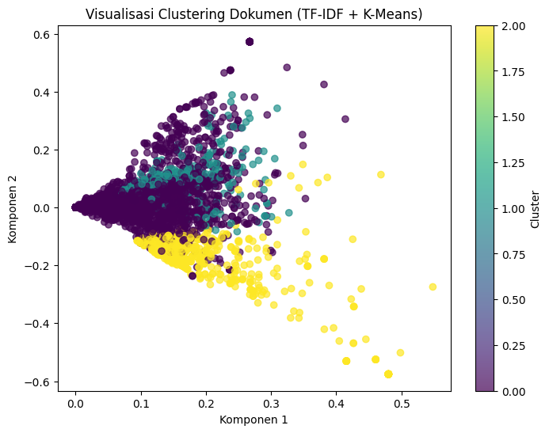

1. Lakukan analisa klasifikasikan berita dengan extraksi fitur model topik modelling dengan classifier naïve bayes dan SVM#
data==> https://drive.google.com/file/d/1a776C4mmVbC-84gx_No0is9QDfpWFIme/view?usp=drive_link
import pandas as pd
df = pd.read_csv('/content/Berita (4).csv')
print(df.head())
---------------------------------------------------------------------------
FileNotFoundError Traceback (most recent call last)
Cell In[1], line 3
1 import pandas as pd
----> 3 df = pd.read_csv('/content/Berita (4).csv')
4 print(df.head())
File ~/.local/lib/python3.12/site-packages/pandas/io/parsers/readers.py:1026, in read_csv(filepath_or_buffer, sep, delimiter, header, names, index_col, usecols, dtype, engine, converters, true_values, false_values, skipinitialspace, skiprows, skipfooter, nrows, na_values, keep_default_na, na_filter, verbose, skip_blank_lines, parse_dates, infer_datetime_format, keep_date_col, date_parser, date_format, dayfirst, cache_dates, iterator, chunksize, compression, thousands, decimal, lineterminator, quotechar, quoting, doublequote, escapechar, comment, encoding, encoding_errors, dialect, on_bad_lines, delim_whitespace, low_memory, memory_map, float_precision, storage_options, dtype_backend)
1013 kwds_defaults = _refine_defaults_read(
1014 dialect,
1015 delimiter,
(...) 1022 dtype_backend=dtype_backend,
1023 )
1024 kwds.update(kwds_defaults)
-> 1026 return _read(filepath_or_buffer, kwds)
File ~/.local/lib/python3.12/site-packages/pandas/io/parsers/readers.py:620, in _read(filepath_or_buffer, kwds)
617 _validate_names(kwds.get("names", None))
619 # Create the parser.
--> 620 parser = TextFileReader(filepath_or_buffer, **kwds)
622 if chunksize or iterator:
623 return parser
File ~/.local/lib/python3.12/site-packages/pandas/io/parsers/readers.py:1620, in TextFileReader.__init__(self, f, engine, **kwds)
1617 self.options["has_index_names"] = kwds["has_index_names"]
1619 self.handles: IOHandles | None = None
-> 1620 self._engine = self._make_engine(f, self.engine)
File ~/.local/lib/python3.12/site-packages/pandas/io/parsers/readers.py:1880, in TextFileReader._make_engine(self, f, engine)
1878 if "b" not in mode:
1879 mode += "b"
-> 1880 self.handles = get_handle(
1881 f,
1882 mode,
1883 encoding=self.options.get("encoding", None),
1884 compression=self.options.get("compression", None),
1885 memory_map=self.options.get("memory_map", False),
1886 is_text=is_text,
1887 errors=self.options.get("encoding_errors", "strict"),
1888 storage_options=self.options.get("storage_options", None),
1889 )
1890 assert self.handles is not None
1891 f = self.handles.handle
File ~/.local/lib/python3.12/site-packages/pandas/io/common.py:873, in get_handle(path_or_buf, mode, encoding, compression, memory_map, is_text, errors, storage_options)
868 elif isinstance(handle, str):
869 # Check whether the filename is to be opened in binary mode.
870 # Binary mode does not support 'encoding' and 'newline'.
871 if ioargs.encoding and "b" not in ioargs.mode:
872 # Encoding
--> 873 handle = open(
874 handle,
875 ioargs.mode,
876 encoding=ioargs.encoding,
877 errors=errors,
878 newline="",
879 )
880 else:
881 # Binary mode
882 handle = open(handle, ioargs.mode)
FileNotFoundError: [Errno 2] No such file or directory: '/content/Berita (4).csv'
print(df['kategori'].unique())
['Ekonomi' 'Olahraga' 'Nasional' 'Internasional']
print(df['kategori'].value_counts())
kategori
Ekonomi 375
Olahraga 375
Nasional 375
Internasional 375
Name: count, dtype: int64
!pip install sastrawi
!pip install gensim
!pip install nltk
Requirement already satisfied: sastrawi in /usr/local/lib/python3.12/dist-packages (1.0.1)
Requirement already satisfied: gensim in /usr/local/lib/python3.12/dist-packages (4.3.3)
Requirement already satisfied: numpy<2.0,>=1.18.5 in /usr/local/lib/python3.12/dist-packages (from gensim) (1.26.4)
Requirement already satisfied: scipy<1.14.0,>=1.7.0 in /usr/local/lib/python3.12/dist-packages (from gensim) (1.13.1)
Requirement already satisfied: smart-open>=1.8.1 in /usr/local/lib/python3.12/dist-packages (from gensim) (7.3.1)
Requirement already satisfied: wrapt in /usr/local/lib/python3.12/dist-packages (from smart-open>=1.8.1->gensim) (1.17.3)
Requirement already satisfied: nltk in /usr/local/lib/python3.12/dist-packages (3.9.1)
Requirement already satisfied: click in /usr/local/lib/python3.12/dist-packages (from nltk) (8.3.0)
Requirement already satisfied: joblib in /usr/local/lib/python3.12/dist-packages (from nltk) (1.5.2)
Requirement already satisfied: regex>=2021.8.3 in /usr/local/lib/python3.12/dist-packages (from nltk) (2024.11.6)
Requirement already satisfied: tqdm in /usr/local/lib/python3.12/dist-packages (from nltk) (4.67.1)
import pandas as pd
import re
import nltk
from nltk.corpus import stopwords
from Sastrawi.Stemmer.StemmerFactory import StemmerFactory
from gensim.utils import simple_preprocess
# Unduh stopwords
nltk.download('stopwords')
# Inisialisasi stemmer
factory = StemmerFactory()
stemmer = factory.create_stemmer()
stop_words = set(stopwords.words('indonesian'))
# ==== Fungsi Preprocessing Lengkap ====
def full_preprocess(text):
# 1️⃣ Cleaning (hapus angka, tanda baca, simbol)
cleaned = re.sub('[^a-zA-Z]', ' ', text.lower())
# 2️⃣ Tokenizing
tokens = simple_preprocess(cleaned)
# 3️⃣ Stopword Removal
no_stop = [t for t in tokens if t not in stop_words]
# 4️⃣ Stemming
stemmed = [stemmer.stem(t) for t in no_stop]
# Gabungkan hasil untuk setiap tahap
return pd.Series({
'berita':text,
'stopword_removal':no_stop,
'pwmbersihan_kata':cleaned,
'stemming':stemmed,
'token':tokens
})
# ==== Terapkan ke semua data ====
hasil_preprocessing = df['berita'].apply(full_preprocess)
# ==== Gabungkan hasil ====
processed_df = pd.concat([hasil_preprocessing], axis=1)
# ==== Tampilkan hasilnya ====
pd.set_option('display.max_colwidth', None)
print(processed_df.head())
[nltk_data] Downloading package stopwords to /root/nltk_data...
[nltk_data] Package stopwords is already up-to-date!
berita \
0 Menteri Koordinator (Menko) Bidang Perekonomian Airlangga Hartarto berharap kenaikan upah minimum provinsi (UMP) sebesar 6,5 persen pada tahun 2025 bisa meningkatkan daya beli masyarakat kelas menengah."Oleh karena itu, sebagai start awal untuk menunjang daya beli mereka (masyarakat kelas menengah) maka kenaikan upah minimumnya didongkrak ke 6,5 persen," kata Airlangga di sela menghadiri Rapat Pimpinan Nasional (Rapimnas) Kadin 2024 di Jakarta, Minggu.Dia menyampaikan di tengah ketidakpastian global, pemerintah harus memperkuat struktur perekonomian dalam negeri. Salah satu struktur tersebut adalah kegiatan belanja kelompok masyarakat kelas menengah. Airlangga menuturkan kelompok masyarakat kelas menengah memiliki peran vital untuk mendorong komponen konsumsi. Konsumsi selama ini masih menjadi penopang terbesar pertumbuhan ekonomi nasional.Pemerintah Segera Bentuk Satgas PHK Usai Tetapkan UMP Naik 6,5 Persen "Kita melihat di tengah ketidakpastian global yang harus kita lakukan adalah pendalaman struktur perekonomian di Indonesia menjaga daya beli, meningkatkan kelas menengah kita," ujarnya.Dia menyebutkan rata-rata pendapatan masyarakat Indonesia yaitu sebesar Rp2 juta sampai Rp9 juta.Sementara pengeluaran perbulannya juga mencapai Rp2 juta sampai Rp9 juta. Namun, kata Airlangga, saat ini pengeluaran warga kebanyakan di bawah Rp5 juta sebulan."Saat sekarang terbesar adalah pengeluaran di bawah Rp5 juta sebulan. Nah, itu yang mendasari Bapak Presiden (Prabowo Subianto) kemarin kita rapat untuk meningkatkan daya beli yang di sektor formal itu sebagian besar adalah pekerja di kalangan industri dan servis," tuturnya.Krena itu, untuk menunjang daya beli masyarakat kelas menengah, pemerintah menaikkan UMP 6,5 persen. Pemerintah ingin mempertahankan daya beli warga kelas menengah."Jadi tujuannya kita untuk mempertahankan daya beli dari pada kelas menengah kita yang tir atau desil di bawah 40 persen. Nah, ini penting untuk kita jaga karena pertumbuhan ekonomi kita ke depan, bahkan di kuartal ini tergantung dari pada daya beli kelas menengah," ucap Airlangga."Persoalannya daya beli yang kelas atas ini kadang-kadang kalau dia enggak dibeli barang ini desil 9 dan 10 dia belanja ke luar negeri. Maka kita betul-betul harus menjaga di kelas menengah ini," tambahnya.Apindo Merasa Tak Didengar Prabowo soal Kenaikan UMP 6,5 PersenSebelumnya, Presiden Prabowo Subianto mengumumkan kenaikan rata-rata UMP nasional sebesar 6,5 persen untuk tahun 2025. Hal ini berdasarkan hasil keputusan melalui rapat terbatas bersama pihak terkait pada Jumat (29/11) ."Kita ambil keputusan untuk menaikkan rata-rata upah minimum nasional pada tahun 2025 sebesar 6,5 persen," kata Prabowo di Kantor Presiden, Kompleks Istana Kepresidenan, Jakarta.Presiden mengatakan kenaikan ini sedikit lebih tinggi dari usulan Menteri Ketenagakerjaan, Yassierli, yang sebelumnya merekomendasikan kenaikan sebesar 6 persen.Keputusan itu diambil setelah rapat terbatas yang membahas upah minimum sebagai jaring pengaman sosial bagi pekerja, terutama yang bekerja kurang dari 12 bulan. (tim/tsa) [Gambas:Video CNN]
1 Dalam rangka memeriahkan hari jadi ke-50, PT Surabaya Industrial Estate Rungkut (PT SIER) menggelar acara bertajuk Green Industrial Awards dan SIER Customer Gathering 2024.Acara yang diselenggarakan di Ballroom Vasa Hotel Surabaya pada Jumat (29/11), sekaligus menjadi malam gala dinner penghargaan bagi perusahaan atau tenant terbaik di kawasan industri SIER.Sebanyak 50 tenant menerima penghargaan atas kontribusi mereka dalam mendukung transformasi SIER menjadi kawasan industri hijau, modern, terintegrasi, dan berkelanjutan. Direktur Utama PT SIER, Didik Prasetiyono berharap, malam apresiasi ini bisa mengangkat dan terus meningkatkan kawasan industri SIER, sebagai kawasan industri hijau dan berkelanjutan."Ada shifting kawasan industri agar semakin menerapkan tata kelola perusahaan yang yang bisa menerapkan ESG-nya, clear environment jadi praktis bisa berproduksi bermanufaktur yang ramah lingkungan, menjadi tren baik seperti di Eropa maupun di Amerika dan SIER ikut shifting, dan hari ini kita merayakan 50 tahun kawasan industri SIER yang mengelola dua kawasan baik di Surabaya Rungkut juga di Pasuruan di Rembang," ujar Didik dikutip Minggu (1/12). Foto: Arsip PT SIER"Kita memberikan apresiasi kepada tenant-tenant kita di tempat kita yang telah melakukan produksi dan manufaktur dan kita buktikan kita proses tata kelola yang baik sebagai recognize sebagai bukti bahwa penghargaan ini kepada tenant-tenant yang advance terhadap green industry," ujar Didik.Didik juga menyampaikan apresiasi mendalam kepada para tenant dan mitra bisnis, yang telah bersinergi dalam mendukung program keberlanjutan dan inovasi industri di kawasan tersebut. Ia juga berharap peluang kerja sama baru semakin terbuka dan tercipta lebih baik lagi di masa mendatang.Adapun dalam malam anugerah ini terdapat 5 kategori utama penghargaan. Pertama; sustainable industry, untuk tenant yang konsisten berinovasi dan menciptakan ekosistem industri yang modern dan berkelanjutan.Kedua; regulation compliance, bagi tenant yang taat regulasi dan mendukung operasional industri yang selaras dengan kebijakan pemerintah.Ketiga; green operation, untuk tenant yang mengimplementasikan teknologi hijau dalam operasional mereka guna mengurangi dampak lingkungan.Keempat; CSR program contributor, penghargaan bagi tenant yang aktif berkontribusi melalui program tanggung jawab sosial dan lingkungan (TJSL).Kemudian, kelima; health safety environment implementation, bagi tenant yang memprioritaskan kesehatan, keselamatan kerja, dan lingkungan dalam operasional mereka.Pemerintah Provinsi Jawa Timur sebagai salah satu pemilik saham dari SIER sangat mendukung terselenggaranya acara ini. Kepala Biro Perekonomian Setdaprov Jawa Timur, MHD Aftabuddin RZ, turut hadir mewakili Pj Gubernur Jawa Timur Adhy Karyono.Ia menyampaikan apresiasi terhadap PT SIER yang mampu mengintegrasikan konsep green energy dalam pengelolaan kawasan industri, sekaligus mendukung perekonomian daerah."Kami dari Pemerintah Provinsi Jawa Timur sebagai salah satu pemegang saham di PT SIER ini mengapresiasi luar biasa pada penghargaan pada hari ini," ujarnya.Acara malam anugerah ini juga menghadirkan Prof Rhenald Kasali sebagai pembicara dalam talkshow inspiratif bertajuk "Sustainability and the future of industry: unlocking competitive advantage".Guru besar ilmu manajemen Universitas Indonesia sekaligus pakar ESG (environmental, social, and governance) itu menekankan pentingnya keberlanjutan sebagai keunggulan kompetitif di era modern."Green energy menjadi tema yang seksi terjadi perubahan iklim yang besar besaran pembuangan karena itu harus mendapatkan pengertian para industri ini penanganan limbah water management penggunaan energy bagaimana menggunakan energi terbarukan bagaimana agar melakukan capture terhadap itu harus selalu dilakukan kalau itu tidak dilakukan investor akan ke luar," katanya. (inh)
2 Wacana Presiden Prabowo Subianto akan membentuk akan membentuk Kementerian Penerimaan Negara kembali santer beredar.Sinyal pembentukan nomenklatur baru itu diembuskan oleh adik Prabowo, Hashim Djojohadikusumo. Menurutnya, pembentukan kementerian baru ini dilakukan Prabowo sebagai upaya memperbaiki penerimaan negara.Hashim menyebut kementerian anyar itu ditugaskan untuk memperbaiki sistem perpajakan, cukai, hingga mengatasi kebocoran-kebocoran anggaran. "Kita juga akan nanti modal dari perbaikan sistem pajak, perpajakan, sistem cukai kita. Ada banyak program-program yang sedang dimulai, akan dimulai untuk menutup kebocoran-kebocoran," kata Hashim dalam acara Rapimnas Kadin 2024, di Hotel Mulia Jakarta, Minggu (1/12) dikutip Detikfinance.AHY Buka-bukaan Nasib Kelanjutan Pembangunan IKN di Era Prabowo Ia juga membocorkan Anggito Abimanyu yang akan ditunjuk Prabowo menjadi Menteri Penerimaan Negara nantinya."Jadi itu nanti ditangani oleh Pak Anggito Abimanyu sebagai Menteri Penerimaan Negara yang baru," imbuhnya.Saat ini, Anggito menjabat Wakil Menteri Keuangan membantu Bendahara Negara Sri Mulyani. Namun Hashim mengklaim wamenkeu hanya jabatan sementara Anggito."Saya kira dia (Anggito) sebagai wakil menteri, itu nanti untuk sementara. Sementara beliau nanti diangkat sebagai Menteri Penerimaan Negara. Jadi ini untuk menangani pajak, menangani cukai, dan menangani revenue atau perlindungan negara berupa royalti dari pertambangan dan lain-lain," pungkasnya.Trump Ancam Tarif 100 Persen ke Anggota BRICS Bila Bikin Uang SendiriIni bukan pertama kali Hashim menyinggung soal Kementerian Penerimaan Negara. Oktober lalu, sebelum Kabinet Merah Putih terbentuk, ia sudah mengungkap wacana ini.Wakil Ketua Dewan Pembina Partai Gerindra itu mengungkap Presiden Terpilih Prabowo Subianto sudah mengantongi nama menteri penerimaan negara di dalam kabinetnya.Ia menjelaskan rencana pembentukan Kementerian Penerimaan Negara sudah tertera dalam program kerja Asta Cita Prabowo. "Ada Asta Cita ke-8 itu Badan Penerimaan Negara, itu jadi Kementerian Penerimaan Negara. Menterinya sudah ada," ucap adik Prabowo itu dalam acara Diskusi Ekonomi bersama Pengusaha Internasional Senior di Menara Kadin, Jakarta Selatan, Senin (7/10), melansir detikfinance.Hashim mengatakan Prabowo bersama Wakil Presiden Terpilih Gibran Rakabuming Raka memiliki target besar agar rasio penerimaan negara dapat mencapai 23 persen dari produk domestik bruto (PDB).Namun, wacana itu sempat meredup usai nama-nama menteri di Kabinet Merah Putih diumumkan pada 20 Oktober 2024.Kabinet gemuk itu diisi 48 menteri, tetapi tidak ada menteri penerimaan negara dalam daftar nomenklatur baru.[Gambas:Video CNN] (pta)
3 BPJS Ketenagakerjaan dan Kementerian Agama (Kemenag) memberikan perlindungan jaminan sosial ketenagakerjaan kepada 165 ribu lebih Guru Tenaga Kependidikan (GTK) dalam peringatan Hari Guru Nasional 2024 di Jakarta, Jumat (29/11).Kado istimewa ini merupakan wujud komitmen keduanya dalam mendukung Asta Cita Presiden Prabowo Subianto, yakni memperkuat pembangunan sumber daya manusia (SDM) melalui pendidikan yang berkualitas.Menteri Agama (Menag) Nasaruddin Umar mengungkapkan keseriusannya untuk meningkatkan kesejahteraan guru-guru madrasah yang selama ini sering terlupakan. Menag berharap peningkatan kesejahteraan tersebut dapat berbanding lurus dengan mutu pendidikan di Indonesia.Dalam kesepakatan ini Menag Nasaruddin bersama Direktur Utama BPJS Ketenagakerjaan Anggoro Eko Cahyo juga menyerahkan santunan kepada tiga ahli waris GTK Madrasah yang meninggal dunia. Masing-masing ahli waris GTK Madrasah tersebut mendapatkan manfaat dari Jaminan Kematian senilai Rp42 juta."Kita ingin memastikan para guru dan tenaga kependidikan madrasah terlindungi jaminan sosial ketenagakerjaan. Meski saat ini belum semua, tapi melalui momentum hari guru, akan semakin banyak yang terlindungi dan para guru menjadi sadar bahwa mereka juga memiliki risiko," kata Anggoro.Menurut data, Hingga November 2024 terdapat 388 ribu GTK Madrasah yang sudah terlindungi BPJS Ketenagakerjaan. Angka tersebut baru mencakup 60 persen dari keseluruhan GTK madrasah yang ada di Indonesia.Di sisi lain total manfaat Jaminan Kecelakaan Kerja dan Jaminan Kematian yang diberikan kepada Guru Madrasah secara nasional tercatat mencapai Rp10,67 Milyar. Hal ini dapat diartikan bahwa risiko tersebut nyata dan negara telah hadir memberikan perlindungan.Anggoro berharap Kemenag dapat segera menerbitkan regulasi guna mengakselerasi perlindungan yang menyeluruh bagi seluruh guru dan tenaga pengajar di lingkup Kemenag."Diperlukan dukungan berupa Kebijakan dan Regulasi agar dapat memberikan perlindungan yang maksimal bagi guru di Indonesia agar mereka dapat terus menjadi obor yang memberikan penerangan bagi setiap generasi penerus bangsa," kata Anggoro. (inh)
4 Pemerintah akan segera membentuk Satuan Tugas Pemutusan Hubungan Kerja (Satgas PHK) usai menetapkan upah minimum provinsi (UMP) 2025 naik sebesar 6,5 persen.Rencana pembentukan Satgas PHK diungkap Menteri Koordinator Bidang Perekonomian Airlangga Hartarto."Pemerintah akan membuat Satgas terkait dengan PHK," kata Airlangga di sela-sela Rapimnas Kadin 2024 di Jakarta, Minggu (1/12) dikutip Antara. Menurutnya, keberadaan Satgas PHK merupakan respons pemerintah terhadap potensi PHK yang diambil perusahaan terhadap karyawan menyusul adanya kenaikan UMP di tahun depan.Trump Ancam Tarif 100 Persen ke Anggota BRICS Bila Bikin Uang Sendiri "Yang kita lihat adalah fundamental industrinya. Jadi nanti kita akan pelajari di sana," ucap Airlangga.Meski begitu, Airlangga tidak menjelaskan lebih rinci kapan Satgas PHK dibentuk, termasuk pemangku kepentingan yang akan dilibatkan.Jumat lalu (29/11), Presiden Prabowo Subianto mengumumkan rata-rata kenaikan upah minimum buruh 2025 sebesar 6,5 persen. Angka itu lebih besar dari rata-rata kenaikan tahun ini sebesar 3,6 persen."Menaker (Menteri Ketenagakerjaan Yassierli) mengusulkan kenaikan upah minimum 6 persen. Namun setelah membahas juga dan laksanakan pertemuan dengan pimpinan buruh kita ambil keputusan menaikkan rata-rata upah minimum nasional 2025 6,5 persen," ujar Prabowo usai menggelar rapat terbatas bersama menteri terkait di Kantor Presiden.Anindya Bakrie Kukuhkan Pengurus Kadin 2024-2029, Arsjad Ketua WantimUpah minimum sektoral nantinya ditetapkan oleh Dewan Pengupahan Provinsi, Kota/Kabupaten."Ketentuan rinci upah minimum diatur permenaker (peraturan menteri ketenagakerjaan)," ujarnya.Lebih lanjut, Prabowo menegaskan kesejahteraan buruh adalah hal penting sehingga upaya perbaikan kesejahteraan terus dilakukan."Kita akan perjuangkan terus perbaikan kesejahteraan mereka," tegas Prabowo. Selain kenaikan upah minimum, pemerintah juga menyiapkan beragam bantuan mulai dari program Makan Bergizi Gratis, bantuan sosial, hingga program keluarga harapan (PKH)."Kalau ini semua dengan bansos, dan bantuan sosial lainnya, termasuk PKH, saya kira upaya pemerintah mengamankan semua lapisan masyarakat, di antaranya buruh, sudah sangat maksimal saat ini," ucap Prabowo.Dengan asumsi rerata upah minimum 2024 adalah Rp3,1 juta, maka rerata upah minimum pekerja tahun depan adalah Rp3,3 juta.[Gambas:Video CNN] (pta)
stopword_removal \
0 [menteri, koordinator, menko, bidang, perekonomian, airlangga, hartarto, berharap, kenaikan, upah, minimum, provinsi, ump, persen, meningkatkan, daya, beli, masyarakat, kelas, menengah, start, menunjang, daya, beli, masyarakat, kelas, menengah, kenaikan, upah, minimumnya, didongkrak, persen, airlangga, menghadiri, rapat, pimpinan, nasional, rapimnas, kadin, jakarta, minggu, ketidakpastian, global, pemerintah, memperkuat, struktur, perekonomian, negeri, salah, struktur, kegiatan, belanja, kelompok, masyarakat, kelas, menengah, airlangga, kelompok, masyarakat, kelas, menengah, memiliki, peran, vital, mendorong, komponen, konsumsi, konsumsi, penopang, terbesar, pertumbuhan, ekonomi, nasional, pemerintah, bentuk, satgas, phk, tetapkan, ump, persen, ketidakpastian, global, lakukan, pendalaman, struktur, perekonomian, indonesia, menjaga, daya, beli, meningkatkan, kelas, menengah, pendapatan, masyarakat, indonesia, rp, juta, rp, juta, ...]
1 [rangka, memeriahkan, pt, surabaya, industrial, estate, rungkut, pt, sier, menggelar, acara, bertajuk, green, industrial, awards, sier, customer, gathering, acara, diselenggarakan, ballroom, vasa, hotel, surabaya, jumat, malam, gala, dinner, penghargaan, perusahaan, tenant, terbaik, kawasan, industri, sier, tenant, menerima, penghargaan, kontribusi, mendukung, transformasi, sier, kawasan, industri, hijau, modern, terintegrasi, berkelanjutan, direktur, utama, pt, sier, didik, prasetiyono, berharap, malam, apresiasi, mengangkat, meningkatkan, kawasan, industri, sier, kawasan, industri, hijau, berkelanjutan, shifting, kawasan, industri, menerapkan, tata, kelola, perusahaan, menerapkan, esg, nya, clear, environment, praktis, berproduksi, bermanufaktur, ramah, lingkungan, tren, eropa, amerika, sier, shifting, merayakan, kawasan, industri, sier, mengelola, kawasan, surabaya, rungkut, pasuruan, rembang, didik, dikutip, ...]
2 [wacana, presiden, prabowo, subianto, membentuk, membentuk, kementerian, penerimaan, negara, santer, beredar, sinyal, pembentukan, nomenklatur, diembuskan, adik, prabowo, hashim, djojohadikusumo, menurutnya, pembentukan, kementerian, prabowo, upaya, memperbaiki, penerimaan, negara, hashim, menyebut, kementerian, anyar, ditugaskan, memperbaiki, sistem, perpajakan, cukai, mengatasi, kebocoran, kebocoran, anggaran, modal, perbaikan, sistem, pajak, perpajakan, sistem, cukai, program, program, menutup, kebocoran, kebocoran, hashim, acara, rapimnas, kadin, hotel, mulia, jakarta, minggu, dikutip, detikfinance, ahy, buka, bukaan, nasib, kelanjutan, pembangunan, ikn, era, prabowo, membocorkan, anggito, abimanyu, prabowo, menteri, penerimaan, negara, ditangani, anggito, abimanyu, menteri, penerimaan, negara, imbuhnya, anggito, menjabat, wakil, menteri, keuangan, membantu, bendahara, negara, sri, mulyani, hashim, mengklaim, wamenkeu, jabatan, anggito, ...]
3 [bpjs, ketenagakerjaan, kementerian, agama, kemenag, perlindungan, jaminan, sosial, ketenagakerjaan, ribu, guru, tenaga, kependidikan, gtk, peringatan, guru, nasional, jakarta, jumat, kado, istimewa, wujud, komitmen, mendukung, asta, cita, presiden, prabowo, subianto, memperkuat, pembangunan, sumber, daya, manusia, sdm, pendidikan, berkualitas, menteri, agama, menag, nasaruddin, umar, keseriusannya, meningkatkan, kesejahteraan, guru, guru, madrasah, terlupakan, menag, berharap, peningkatan, kesejahteraan, berbanding, lurus, mutu, pendidikan, indonesia, kesepakatan, menag, nasaruddin, direktur, utama, bpjs, ketenagakerjaan, anggoro, eko, cahyo, menyerahkan, santunan, ahli, waris, gtk, madrasah, meninggal, dunia, ahli, waris, gtk, madrasah, manfaat, jaminan, kematian, senilai, rp, juta, guru, tenaga, kependidikan, madrasah, terlindungi, jaminan, sosial, ketenagakerjaan, momentum, guru, terlindungi, guru, sadar, memiliki, ...]
4 [pemerintah, membentuk, satuan, tugas, pemutusan, hubungan, kerja, satgas, phk, menetapkan, upah, minimum, provinsi, ump, persen, rencana, pembentukan, satgas, phk, diungkap, menteri, koordinator, bidang, perekonomian, airlangga, hartarto, pemerintah, satgas, terkait, phk, airlangga, rapimnas, kadin, jakarta, minggu, dikutip, menurutnya, keberadaan, satgas, phk, respons, pemerintah, potensi, phk, diambil, perusahaan, karyawan, menyusul, kenaikan, ump, trump, ancam, tarif, persen, anggota, brics, bikin, uang, lihat, fundamental, industrinya, pelajari, airlangga, airlangga, rinci, satgas, phk, dibentuk, pemangku, kepentingan, dilibatkan, jumat, presiden, prabowo, subianto, mengumumkan, kenaikan, upah, minimum, buruh, persen, angka, kenaikan, persen, menaker, menteri, ketenagakerjaan, yassierli, mengusulkan, kenaikan, upah, minimum, persen, membahas, laksanakan, pertemuan, pimpinan, buruh, ambil, keputusan, ...]
pwmbersihan_kata \
0 menteri koordinator menko bidang perekonomian airlangga hartarto berharap kenaikan upah minimum provinsi ump sebesar persen pada tahun bisa meningkatkan daya beli masyarakat kelas menengah oleh karena itu sebagai start awal untuk menunjang daya beli mereka masyarakat kelas menengah maka kenaikan upah minimumnya didongkrak ke persen kata airlangga di sela menghadiri rapat pimpinan nasional rapimnas kadin di jakarta minggu dia menyampaikan di tengah ketidakpastian global pemerintah harus memperkuat struktur perekonomian dalam negeri salah satu struktur tersebut adalah kegiatan belanja kelompok masyarakat kelas menengah airlangga menuturkan kelompok masyarakat kelas menengah memiliki peran vital untuk mendorong komponen konsumsi konsumsi selama ini masih menjadi penopang terbesar pertumbuhan ekonomi nasional pemerintah segera bentuk satgas phk usai tetapkan ump naik persen kita melihat di tengah ketidakpastian global yang harus kita lakukan adalah pendalaman struktur perekonomian di indonesia menjaga daya beli meningkatkan kelas menengah kita ujarnya dia menyebutkan rata rata pendapatan masyarakat indonesia yaitu sebesar rp juta sampai rp juta sementara pengeluaran perbulannya juga mencapai rp juta sampai rp juta namun kata airlangga saat ini pengeluaran warga kebanyakan di bawah rp juta sebulan saat sekarang terbesar adalah pengeluaran di bawah rp juta sebulan nah itu yang mendasari bapak presiden prabowo subianto kemarin kita rapat untuk meningkatkan daya beli yang di sektor formal itu sebagian besar adalah pekerja di kalangan industri dan servis tuturnya krena itu untuk menunjang daya beli masyarakat kelas menengah pemerintah menaikkan ump persen pemerintah ingin mempertahankan daya beli warga kelas menengah jadi tujuannya kita untuk mempertahankan daya beli dari pada kelas menengah kita yang tir atau desil di bawah persen nah ini penting untuk kita jaga karena pertumbuhan ekonomi kita ke depan bahkan di kuartal ini tergantung dari pada daya beli kelas menengah ucap airlangga persoalannya daya beli yang kelas atas ini kadang kadang kalau dia enggak dibeli barang ini desil dan dia belanja ke luar negeri maka kita betul betul harus menjaga di kelas menengah ini tambahnya apindo merasa tak didengar prabowo soal kenaikan ump persensebelumnya presiden prabowo subianto mengumumkan kenaikan rata rata ump nasional sebesar persen untuk tahun hal ini berdasarkan hasil keputusan melalui rapat terbatas bersama pihak terkait pada jumat kita ambil keputusan untuk menaikkan rata rata upah minimum nasional pada tahun sebesar persen kata prabowo di kantor presiden kompleks istana kepresidenan jakarta presiden mengatakan kenaikan ini sedikit lebih tinggi dari usulan menteri ketenagakerjaan yassierli yang sebelumnya merekomendasikan kenaikan sebesar persen keputusan itu diambil setelah rapat terbatas yang membahas upah minimum sebagai jaring pengaman sosial bagi pekerja terutama yang bekerja kurang dari bulan tim tsa gambas video cnn
1 dalam rangka memeriahkan hari jadi ke pt surabaya industrial estate rungkut pt sier menggelar acara bertajuk green industrial awards dan sier customer gathering acara yang diselenggarakan di ballroom vasa hotel surabaya pada jumat sekaligus menjadi malam gala dinner penghargaan bagi perusahaan atau tenant terbaik di kawasan industri sier sebanyak tenant menerima penghargaan atas kontribusi mereka dalam mendukung transformasi sier menjadi kawasan industri hijau modern terintegrasi dan berkelanjutan direktur utama pt sier didik prasetiyono berharap malam apresiasi ini bisa mengangkat dan terus meningkatkan kawasan industri sier sebagai kawasan industri hijau dan berkelanjutan ada shifting kawasan industri agar semakin menerapkan tata kelola perusahaan yang yang bisa menerapkan esg nya clear environment jadi praktis bisa berproduksi bermanufaktur yang ramah lingkungan menjadi tren baik seperti di eropa maupun di amerika dan sier ikut shifting dan hari ini kita merayakan tahun kawasan industri sier yang mengelola dua kawasan baik di surabaya rungkut juga di pasuruan di rembang ujar didik dikutip minggu foto arsip pt sier kita memberikan apresiasi kepada tenant tenant kita di tempat kita yang telah melakukan produksi dan manufaktur dan kita buktikan kita proses tata kelola yang baik sebagai recognize sebagai bukti bahwa penghargaan ini kepada tenant tenant yang advance terhadap green industry ujar didik didik juga menyampaikan apresiasi mendalam kepada para tenant dan mitra bisnis yang telah bersinergi dalam mendukung program keberlanjutan dan inovasi industri di kawasan tersebut ia juga berharap peluang kerja sama baru semakin terbuka dan tercipta lebih baik lagi di masa mendatang adapun dalam malam anugerah ini terdapat kategori utama penghargaan pertama sustainable industry untuk tenant yang konsisten berinovasi dan menciptakan ekosistem industri yang modern dan berkelanjutan kedua regulation compliance bagi tenant yang taat regulasi dan mendukung operasional industri yang selaras dengan kebijakan pemerintah ketiga green operation untuk tenant yang mengimplementasikan teknologi hijau dalam operasional mereka guna mengurangi dampak lingkungan keempat csr program contributor penghargaan bagi tenant yang aktif berkontribusi melalui program tanggung jawab sosial dan lingkungan tjsl kemudian kelima health safety environment implementation bagi tenant yang memprioritaskan kesehatan keselamatan kerja dan lingkungan dalam operasional mereka pemerintah provinsi jawa timur sebagai salah satu pemilik saham dari sier sangat mendukung terselenggaranya acara ini kepala biro perekonomian setdaprov jawa timur mhd aftabuddin rz turut hadir mewakili pj gubernur jawa timur adhy karyono ia menyampaikan apresiasi terhadap pt sier yang mampu mengintegrasikan konsep green energy dalam pengelolaan kawasan industri sekaligus mendukung perekonomian daerah kami dari pemerintah provinsi jawa timur sebagai salah satu pemegang saham di pt sier ini mengapresiasi luar biasa pada penghargaan pada hari ini ujarnya acara malam anugerah ini juga menghadirkan prof rhenald kasali sebagai pembicara dalam talkshow inspiratif bertajuk sustainability and the future of industry unlocking competitive advantage guru besar ilmu manajemen universitas indonesia sekaligus pakar esg environmental social and governance itu menekankan pentingnya keberlanjutan sebagai keunggulan kompetitif di era modern green energy menjadi tema yang seksi terjadi perubahan iklim yang besar besaran pembuangan karena itu harus mendapatkan pengertian para industri ini penanganan limbah water management penggunaan energy bagaimana menggunakan energi terbarukan bagaimana agar melakukan capture terhadap itu harus selalu dilakukan kalau itu tidak dilakukan investor akan ke luar katanya inh
2 wacana presiden prabowo subianto akan membentuk akan membentuk kementerian penerimaan negara kembali santer beredar sinyal pembentukan nomenklatur baru itu diembuskan oleh adik prabowo hashim djojohadikusumo menurutnya pembentukan kementerian baru ini dilakukan prabowo sebagai upaya memperbaiki penerimaan negara hashim menyebut kementerian anyar itu ditugaskan untuk memperbaiki sistem perpajakan cukai hingga mengatasi kebocoran kebocoran anggaran kita juga akan nanti modal dari perbaikan sistem pajak perpajakan sistem cukai kita ada banyak program program yang sedang dimulai akan dimulai untuk menutup kebocoran kebocoran kata hashim dalam acara rapimnas kadin di hotel mulia jakarta minggu dikutip detikfinance ahy buka bukaan nasib kelanjutan pembangunan ikn di era prabowo ia juga membocorkan anggito abimanyu yang akan ditunjuk prabowo menjadi menteri penerimaan negara nantinya jadi itu nanti ditangani oleh pak anggito abimanyu sebagai menteri penerimaan negara yang baru imbuhnya saat ini anggito menjabat wakil menteri keuangan membantu bendahara negara sri mulyani namun hashim mengklaim wamenkeu hanya jabatan sementara anggito saya kira dia anggito sebagai wakil menteri itu nanti untuk sementara sementara beliau nanti diangkat sebagai menteri penerimaan negara jadi ini untuk menangani pajak menangani cukai dan menangani revenue atau perlindungan negara berupa royalti dari pertambangan dan lain lain pungkasnya trump ancam tarif persen ke anggota brics bila bikin uang sendiriini bukan pertama kali hashim menyinggung soal kementerian penerimaan negara oktober lalu sebelum kabinet merah putih terbentuk ia sudah mengungkap wacana ini wakil ketua dewan pembina partai gerindra itu mengungkap presiden terpilih prabowo subianto sudah mengantongi nama menteri penerimaan negara di dalam kabinetnya ia menjelaskan rencana pembentukan kementerian penerimaan negara sudah tertera dalam program kerja asta cita prabowo ada asta cita ke itu badan penerimaan negara itu jadi kementerian penerimaan negara menterinya sudah ada ucap adik prabowo itu dalam acara diskusi ekonomi bersama pengusaha internasional senior di menara kadin jakarta selatan senin melansir detikfinance hashim mengatakan prabowo bersama wakil presiden terpilih gibran rakabuming raka memiliki target besar agar rasio penerimaan negara dapat mencapai persen dari produk domestik bruto pdb namun wacana itu sempat meredup usai nama nama menteri di kabinet merah putih diumumkan pada oktober kabinet gemuk itu diisi menteri tetapi tidak ada menteri penerimaan negara dalam daftar nomenklatur baru gambas video cnn pta
3 bpjs ketenagakerjaan dan kementerian agama kemenag memberikan perlindungan jaminan sosial ketenagakerjaan kepada ribu lebih guru tenaga kependidikan gtk dalam peringatan hari guru nasional di jakarta jumat kado istimewa ini merupakan wujud komitmen keduanya dalam mendukung asta cita presiden prabowo subianto yakni memperkuat pembangunan sumber daya manusia sdm melalui pendidikan yang berkualitas menteri agama menag nasaruddin umar mengungkapkan keseriusannya untuk meningkatkan kesejahteraan guru guru madrasah yang selama ini sering terlupakan menag berharap peningkatan kesejahteraan tersebut dapat berbanding lurus dengan mutu pendidikan di indonesia dalam kesepakatan ini menag nasaruddin bersama direktur utama bpjs ketenagakerjaan anggoro eko cahyo juga menyerahkan santunan kepada tiga ahli waris gtk madrasah yang meninggal dunia masing masing ahli waris gtk madrasah tersebut mendapatkan manfaat dari jaminan kematian senilai rp juta kita ingin memastikan para guru dan tenaga kependidikan madrasah terlindungi jaminan sosial ketenagakerjaan meski saat ini belum semua tapi melalui momentum hari guru akan semakin banyak yang terlindungi dan para guru menjadi sadar bahwa mereka juga memiliki risiko kata anggoro menurut data hingga november terdapat ribu gtk madrasah yang sudah terlindungi bpjs ketenagakerjaan angka tersebut baru mencakup persen dari keseluruhan gtk madrasah yang ada di indonesia di sisi lain total manfaat jaminan kecelakaan kerja dan jaminan kematian yang diberikan kepada guru madrasah secara nasional tercatat mencapai rp milyar hal ini dapat diartikan bahwa risiko tersebut nyata dan negara telah hadir memberikan perlindungan anggoro berharap kemenag dapat segera menerbitkan regulasi guna mengakselerasi perlindungan yang menyeluruh bagi seluruh guru dan tenaga pengajar di lingkup kemenag diperlukan dukungan berupa kebijakan dan regulasi agar dapat memberikan perlindungan yang maksimal bagi guru di indonesia agar mereka dapat terus menjadi obor yang memberikan penerangan bagi setiap generasi penerus bangsa kata anggoro inh
4 pemerintah akan segera membentuk satuan tugas pemutusan hubungan kerja satgas phk usai menetapkan upah minimum provinsi ump naik sebesar persen rencana pembentukan satgas phk diungkap menteri koordinator bidang perekonomian airlangga hartarto pemerintah akan membuat satgas terkait dengan phk kata airlangga di sela sela rapimnas kadin di jakarta minggu dikutip antara menurutnya keberadaan satgas phk merupakan respons pemerintah terhadap potensi phk yang diambil perusahaan terhadap karyawan menyusul adanya kenaikan ump di tahun depan trump ancam tarif persen ke anggota brics bila bikin uang sendiri yang kita lihat adalah fundamental industrinya jadi nanti kita akan pelajari di sana ucap airlangga meski begitu airlangga tidak menjelaskan lebih rinci kapan satgas phk dibentuk termasuk pemangku kepentingan yang akan dilibatkan jumat lalu presiden prabowo subianto mengumumkan rata rata kenaikan upah minimum buruh sebesar persen angka itu lebih besar dari rata rata kenaikan tahun ini sebesar persen menaker menteri ketenagakerjaan yassierli mengusulkan kenaikan upah minimum persen namun setelah membahas juga dan laksanakan pertemuan dengan pimpinan buruh kita ambil keputusan menaikkan rata rata upah minimum nasional persen ujar prabowo usai menggelar rapat terbatas bersama menteri terkait di kantor presiden anindya bakrie kukuhkan pengurus kadin arsjad ketua wantimupah minimum sektoral nantinya ditetapkan oleh dewan pengupahan provinsi kota kabupaten ketentuan rinci upah minimum diatur permenaker peraturan menteri ketenagakerjaan ujarnya lebih lanjut prabowo menegaskan kesejahteraan buruh adalah hal penting sehingga upaya perbaikan kesejahteraan terus dilakukan kita akan perjuangkan terus perbaikan kesejahteraan mereka tegas prabowo selain kenaikan upah minimum pemerintah juga menyiapkan beragam bantuan mulai dari program makan bergizi gratis bantuan sosial hingga program keluarga harapan pkh kalau ini semua dengan bansos dan bantuan sosial lainnya termasuk pkh saya kira upaya pemerintah mengamankan semua lapisan masyarakat di antaranya buruh sudah sangat maksimal saat ini ucap prabowo dengan asumsi rerata upah minimum adalah rp juta maka rerata upah minimum pekerja tahun depan adalah rp juta gambas video cnn pta
stemming \
0 [menteri, koordinator, menko, bidang, ekonomi, airlangga, hartarto, harap, naik, upah, minimum, provinsi, ump, persen, tingkat, daya, beli, masyarakat, kelas, tengah, start, tunjang, daya, beli, masyarakat, kelas, tengah, naik, upah, minimum, dongkrak, persen, airlangga, hadir, rapat, pimpin, nasional, rapimnas, kadin, jakarta, minggu, ketidakpastian, global, perintah, kuat, struktur, ekonomi, negeri, salah, struktur, giat, belanja, kelompok, masyarakat, kelas, tengah, airlangga, kelompok, masyarakat, kelas, tengah, milik, peran, vital, dorong, komponen, konsumsi, konsumsi, topang, besar, tumbuh, ekonomi, nasional, perintah, bentuk, satgas, phk, tetap, ump, persen, ketidakpastian, global, laku, dalam, struktur, ekonomi, indonesia, jaga, daya, beli, tingkat, kelas, tengah, dapat, masyarakat, indonesia, rp, juta, rp, juta, ...]
1 [rangka, riah, pt, surabaya, industrial, estate, rungkut, pt, sier, gelar, acara, tajuk, green, industrial, awards, sier, customer, gathering, acara, selenggara, ballroom, vasa, hotel, surabaya, jumat, malam, gala, dinner, harga, usaha, tenant, baik, kawasan, industri, sier, tenant, terima, harga, kontribusi, dukung, transformasi, sier, kawasan, industri, hijau, modern, integrasi, lanjut, direktur, utama, pt, sier, didik, prasetiyono, harap, malam, apresiasi, angkat, tingkat, kawasan, industri, sier, kawasan, industri, hijau, lanjut, shifting, kawasan, industri, terap, tata, kelola, usaha, terap, esg, nya, clear, environment, praktis, produksi, manufaktur, ramah, lingkung, tren, eropa, amerika, sier, shifting, raya, kawasan, industri, sier, kelola, kawasan, surabaya, rungkut, pasuruan, rembang, didik, kutip, ...]
2 [wacana, presiden, prabowo, subianto, bentuk, bentuk, menteri, terima, negara, santer, edar, sinyal, bentuk, nomenklatur, embus, adik, prabowo, hashim, djojohadikusumo, turut, bentuk, menteri, prabowo, upaya, baik, terima, negara, hashim, sebut, menteri, anyar, tugas, baik, sistem, paja, cukai, atas, bocor, bocor, anggar, modal, baik, sistem, pajak, paja, sistem, cukai, program, program, tutup, bocor, bocor, hashim, acara, rapimnas, kadin, hotel, mulia, jakarta, minggu, kutip, detikfinance, ahy, buka, buka, nasib, lanjut, bangun, ikn, era, prabowo, bocor, anggito, abimanyu, prabowo, menteri, terima, negara, tangan, anggito, abimanyu, menteri, terima, negara, imbuh, anggito, jabat, wakil, menteri, uang, bantu, bendahara, negara, sri, mulyani, hashim, klaim, wamenkeu, jabat, anggito, ...]
3 [bpjs, ketenagakerjaan, menteri, agama, kemenag, lindung, jamin, sosial, ketenagakerjaan, ribu, guru, tenaga, didik, gtk, ingat, guru, nasional, jakarta, jumat, kado, istimewa, wujud, komitmen, dukung, asta, cita, presiden, prabowo, subianto, kuat, bangun, sumber, daya, manusia, sdm, didik, kualitas, menteri, agama, menag, nasaruddin, umar, serius, tingkat, sejahtera, guru, guru, madrasah, lupa, menag, harap, tingkat, sejahtera, banding, lurus, mutu, didik, indonesia, sepakat, menag, nasaruddin, direktur, utama, bpjs, ketenagakerjaan, anggoro, eko, cahyo, serah, santun, ahli, waris, gtk, madrasah, tinggal, dunia, ahli, waris, gtk, madrasah, manfaat, jamin, mati, nila, rp, juta, guru, tenaga, didik, madrasah, lindung, jamin, sosial, ketenagakerjaan, momentum, guru, lindung, guru, sadar, milik, ...]
4 [perintah, bentuk, satu, tugas, putus, hubung, kerja, satgas, phk, tetap, upah, minimum, provinsi, ump, persen, rencana, bentuk, satgas, phk, ungkap, menteri, koordinator, bidang, ekonomi, airlangga, hartarto, perintah, satgas, kait, phk, airlangga, rapimnas, kadin, jakarta, minggu, kutip, turut, ada, satgas, phk, respons, perintah, potensi, phk, ambil, usaha, karyawan, susul, naik, ump, trump, ancam, tarif, persen, anggota, brics, bikin, uang, lihat, fundamental, industri, ajar, airlangga, airlangga, rinci, satgas, phk, bentuk, mang, penting, libat, jumat, presiden, prabowo, subianto, umum, naik, upah, minimum, buruh, persen, angka, naik, persen, menaker, menteri, ketenagakerjaan, yassierli, usul, naik, upah, minimum, persen, bahas, laksana, temu, pimpin, buruh, ambil, putus, ...]
token
0 [menteri, koordinator, menko, bidang, perekonomian, airlangga, hartarto, berharap, kenaikan, upah, minimum, provinsi, ump, sebesar, persen, pada, tahun, bisa, meningkatkan, daya, beli, masyarakat, kelas, menengah, oleh, karena, itu, sebagai, start, awal, untuk, menunjang, daya, beli, mereka, masyarakat, kelas, menengah, maka, kenaikan, upah, minimumnya, didongkrak, ke, persen, kata, airlangga, di, sela, menghadiri, rapat, pimpinan, nasional, rapimnas, kadin, di, jakarta, minggu, dia, menyampaikan, di, tengah, ketidakpastian, global, pemerintah, harus, memperkuat, struktur, perekonomian, dalam, negeri, salah, satu, struktur, tersebut, adalah, kegiatan, belanja, kelompok, masyarakat, kelas, menengah, airlangga, menuturkan, kelompok, masyarakat, kelas, menengah, memiliki, peran, vital, untuk, mendorong, komponen, konsumsi, konsumsi, selama, ini, masih, menjadi, ...]
1 [dalam, rangka, memeriahkan, hari, jadi, ke, pt, surabaya, industrial, estate, rungkut, pt, sier, menggelar, acara, bertajuk, green, industrial, awards, dan, sier, customer, gathering, acara, yang, diselenggarakan, di, ballroom, vasa, hotel, surabaya, pada, jumat, sekaligus, menjadi, malam, gala, dinner, penghargaan, bagi, perusahaan, atau, tenant, terbaik, di, kawasan, industri, sier, sebanyak, tenant, menerima, penghargaan, atas, kontribusi, mereka, dalam, mendukung, transformasi, sier, menjadi, kawasan, industri, hijau, modern, terintegrasi, dan, berkelanjutan, direktur, utama, pt, sier, didik, prasetiyono, berharap, malam, apresiasi, ini, bisa, mengangkat, dan, terus, meningkatkan, kawasan, industri, sier, sebagai, kawasan, industri, hijau, dan, berkelanjutan, ada, shifting, kawasan, industri, agar, semakin, menerapkan, tata, kelola, ...]
2 [wacana, presiden, prabowo, subianto, akan, membentuk, akan, membentuk, kementerian, penerimaan, negara, kembali, santer, beredar, sinyal, pembentukan, nomenklatur, baru, itu, diembuskan, oleh, adik, prabowo, hashim, djojohadikusumo, menurutnya, pembentukan, kementerian, baru, ini, dilakukan, prabowo, sebagai, upaya, memperbaiki, penerimaan, negara, hashim, menyebut, kementerian, anyar, itu, ditugaskan, untuk, memperbaiki, sistem, perpajakan, cukai, hingga, mengatasi, kebocoran, kebocoran, anggaran, kita, juga, akan, nanti, modal, dari, perbaikan, sistem, pajak, perpajakan, sistem, cukai, kita, ada, banyak, program, program, yang, sedang, dimulai, akan, dimulai, untuk, menutup, kebocoran, kebocoran, kata, hashim, dalam, acara, rapimnas, kadin, di, hotel, mulia, jakarta, minggu, dikutip, detikfinance, ahy, buka, bukaan, nasib, kelanjutan, pembangunan, ikn, di, ...]
3 [bpjs, ketenagakerjaan, dan, kementerian, agama, kemenag, memberikan, perlindungan, jaminan, sosial, ketenagakerjaan, kepada, ribu, lebih, guru, tenaga, kependidikan, gtk, dalam, peringatan, hari, guru, nasional, di, jakarta, jumat, kado, istimewa, ini, merupakan, wujud, komitmen, keduanya, dalam, mendukung, asta, cita, presiden, prabowo, subianto, yakni, memperkuat, pembangunan, sumber, daya, manusia, sdm, melalui, pendidikan, yang, berkualitas, menteri, agama, menag, nasaruddin, umar, mengungkapkan, keseriusannya, untuk, meningkatkan, kesejahteraan, guru, guru, madrasah, yang, selama, ini, sering, terlupakan, menag, berharap, peningkatan, kesejahteraan, tersebut, dapat, berbanding, lurus, dengan, mutu, pendidikan, di, indonesia, dalam, kesepakatan, ini, menag, nasaruddin, bersama, direktur, utama, bpjs, ketenagakerjaan, anggoro, eko, cahyo, juga, menyerahkan, santunan, kepada, tiga, ...]
4 [pemerintah, akan, segera, membentuk, satuan, tugas, pemutusan, hubungan, kerja, satgas, phk, usai, menetapkan, upah, minimum, provinsi, ump, naik, sebesar, persen, rencana, pembentukan, satgas, phk, diungkap, menteri, koordinator, bidang, perekonomian, airlangga, hartarto, pemerintah, akan, membuat, satgas, terkait, dengan, phk, kata, airlangga, di, sela, sela, rapimnas, kadin, di, jakarta, minggu, dikutip, antara, menurutnya, keberadaan, satgas, phk, merupakan, respons, pemerintah, terhadap, potensi, phk, yang, diambil, perusahaan, terhadap, karyawan, menyusul, adanya, kenaikan, ump, di, tahun, depan, trump, ancam, tarif, persen, ke, anggota, brics, bila, bikin, uang, sendiri, yang, kita, lihat, adalah, fundamental, industrinya, jadi, nanti, kita, akan, pelajari, di, sana, ucap, airlangga, meski, begitu, ...]
# ==== Simpan ke CSV ====
processed_df.to_csv('hasil_preprocessing.csv', index=False, encoding='utf-8')
# ==== Konfirmasi ====
print("✅ File 'hasil_preprocessing.csv' berhasil disimpan!")
✅ File 'hasil_preprocessing.csv' berhasil disimpan!
processed_df.head()
| berita | stopword_removal | pwmbersihan_kata | stemming | token | |
|---|---|---|---|---|---|
| 0 | Menteri Koordinator (Menko) Bidang Perekonomian Airlangga Hartarto berharap kenaikan upah minimum provinsi (UMP) sebesar 6,5 persen pada tahun 2025 bisa meningkatkan daya beli masyarakat kelas menengah."Oleh karena itu, sebagai start awal untuk menunjang daya beli mereka (masyarakat kelas menengah) maka kenaikan upah minimumnya didongkrak ke 6,5 persen," kata Airlangga di sela menghadiri Rapat Pimpinan Nasional (Rapimnas) Kadin 2024 di Jakarta, Minggu.Dia menyampaikan di tengah ketidakpastian global, pemerintah harus memperkuat struktur perekonomian dalam negeri. Salah satu struktur tersebut adalah kegiatan belanja kelompok masyarakat kelas menengah. Airlangga menuturkan kelompok masyarakat kelas menengah memiliki peran vital untuk mendorong komponen konsumsi. Konsumsi selama ini masih menjadi penopang terbesar pertumbuhan ekonomi nasional.Pemerintah Segera Bentuk Satgas PHK Usai Tetapkan UMP Naik 6,5 Persen "Kita melihat di tengah ketidakpastian global yang harus kita lakukan adalah pendalaman struktur perekonomian di Indonesia menjaga daya beli, meningkatkan kelas menengah kita," ujarnya.Dia menyebutkan rata-rata pendapatan masyarakat Indonesia yaitu sebesar Rp2 juta sampai Rp9 juta.Sementara pengeluaran perbulannya juga mencapai Rp2 juta sampai Rp9 juta. Namun, kata Airlangga, saat ini pengeluaran warga kebanyakan di bawah Rp5 juta sebulan."Saat sekarang terbesar adalah pengeluaran di bawah Rp5 juta sebulan. Nah, itu yang mendasari Bapak Presiden (Prabowo Subianto) kemarin kita rapat untuk meningkatkan daya beli yang di sektor formal itu sebagian besar adalah pekerja di kalangan industri dan servis," tuturnya.Krena itu, untuk menunjang daya beli masyarakat kelas menengah, pemerintah menaikkan UMP 6,5 persen. Pemerintah ingin mempertahankan daya beli warga kelas menengah."Jadi tujuannya kita untuk mempertahankan daya beli dari pada kelas menengah kita yang tir atau desil di bawah 40 persen. Nah, ini penting untuk kita jaga karena pertumbuhan ekonomi kita ke depan, bahkan di kuartal ini tergantung dari pada daya beli kelas menengah," ucap Airlangga."Persoalannya daya beli yang kelas atas ini kadang-kadang kalau dia enggak dibeli barang ini desil 9 dan 10 dia belanja ke luar negeri. Maka kita betul-betul harus menjaga di kelas menengah ini," tambahnya.Apindo Merasa Tak Didengar Prabowo soal Kenaikan UMP 6,5 PersenSebelumnya, Presiden Prabowo Subianto mengumumkan kenaikan rata-rata UMP nasional sebesar 6,5 persen untuk tahun 2025. Hal ini berdasarkan hasil keputusan melalui rapat terbatas bersama pihak terkait pada Jumat (29/11) ."Kita ambil keputusan untuk menaikkan rata-rata upah minimum nasional pada tahun 2025 sebesar 6,5 persen," kata Prabowo di Kantor Presiden, Kompleks Istana Kepresidenan, Jakarta.Presiden mengatakan kenaikan ini sedikit lebih tinggi dari usulan Menteri Ketenagakerjaan, Yassierli, yang sebelumnya merekomendasikan kenaikan sebesar 6 persen.Keputusan itu diambil setelah rapat terbatas yang membahas upah minimum sebagai jaring pengaman sosial bagi pekerja, terutama yang bekerja kurang dari 12 bulan. (tim/tsa) [Gambas:Video CNN] | [menteri, koordinator, menko, bidang, perekonomian, airlangga, hartarto, berharap, kenaikan, upah, minimum, provinsi, ump, persen, meningkatkan, daya, beli, masyarakat, kelas, menengah, start, menunjang, daya, beli, masyarakat, kelas, menengah, kenaikan, upah, minimumnya, didongkrak, persen, airlangga, menghadiri, rapat, pimpinan, nasional, rapimnas, kadin, jakarta, minggu, ketidakpastian, global, pemerintah, memperkuat, struktur, perekonomian, negeri, salah, struktur, kegiatan, belanja, kelompok, masyarakat, kelas, menengah, airlangga, kelompok, masyarakat, kelas, menengah, memiliki, peran, vital, mendorong, komponen, konsumsi, konsumsi, penopang, terbesar, pertumbuhan, ekonomi, nasional, pemerintah, bentuk, satgas, phk, tetapkan, ump, persen, ketidakpastian, global, lakukan, pendalaman, struktur, perekonomian, indonesia, menjaga, daya, beli, meningkatkan, kelas, menengah, pendapatan, masyarakat, indonesia, rp, juta, rp, juta, ...] | menteri koordinator menko bidang perekonomian airlangga hartarto berharap kenaikan upah minimum provinsi ump sebesar persen pada tahun bisa meningkatkan daya beli masyarakat kelas menengah oleh karena itu sebagai start awal untuk menunjang daya beli mereka masyarakat kelas menengah maka kenaikan upah minimumnya didongkrak ke persen kata airlangga di sela menghadiri rapat pimpinan nasional rapimnas kadin di jakarta minggu dia menyampaikan di tengah ketidakpastian global pemerintah harus memperkuat struktur perekonomian dalam negeri salah satu struktur tersebut adalah kegiatan belanja kelompok masyarakat kelas menengah airlangga menuturkan kelompok masyarakat kelas menengah memiliki peran vital untuk mendorong komponen konsumsi konsumsi selama ini masih menjadi penopang terbesar pertumbuhan ekonomi nasional pemerintah segera bentuk satgas phk usai tetapkan ump naik persen kita melihat di tengah ketidakpastian global yang harus kita lakukan adalah pendalaman struktur perekonomian di indonesia menjaga daya beli meningkatkan kelas menengah kita ujarnya dia menyebutkan rata rata pendapatan masyarakat indonesia yaitu sebesar rp juta sampai rp juta sementara pengeluaran perbulannya juga mencapai rp juta sampai rp juta namun kata airlangga saat ini pengeluaran warga kebanyakan di bawah rp juta sebulan saat sekarang terbesar adalah pengeluaran di bawah rp juta sebulan nah itu yang mendasari bapak presiden prabowo subianto kemarin kita rapat untuk meningkatkan daya beli yang di sektor formal itu sebagian besar adalah pekerja di kalangan industri dan servis tuturnya krena itu untuk menunjang daya beli masyarakat kelas menengah pemerintah menaikkan ump persen pemerintah ingin mempertahankan daya beli warga kelas menengah jadi tujuannya kita untuk mempertahankan daya beli dari pada kelas menengah kita yang tir atau desil di bawah persen nah ini penting untuk kita jaga karena pertumbuhan ekonomi kita ke depan bahkan di kuartal ini tergantung dari pada daya beli kelas menengah ucap airlangga persoalannya daya beli yang kelas atas ini kadang kadang kalau dia enggak dibeli barang ini desil dan dia belanja ke luar negeri maka kita betul betul harus menjaga di kelas menengah ini tambahnya apindo merasa tak didengar prabowo soal kenaikan ump persensebelumnya presiden prabowo subianto mengumumkan kenaikan rata rata ump nasional sebesar persen untuk tahun hal ini berdasarkan hasil keputusan melalui rapat terbatas bersama pihak terkait pada jumat kita ambil keputusan untuk menaikkan rata rata upah minimum nasional pada tahun sebesar persen kata prabowo di kantor presiden kompleks istana kepresidenan jakarta presiden mengatakan kenaikan ini sedikit lebih tinggi dari usulan menteri ketenagakerjaan yassierli yang sebelumnya merekomendasikan kenaikan sebesar persen keputusan itu diambil setelah rapat terbatas yang membahas upah minimum sebagai jaring pengaman sosial bagi pekerja terutama yang bekerja kurang dari bulan tim tsa gambas video cnn | [menteri, koordinator, menko, bidang, ekonomi, airlangga, hartarto, harap, naik, upah, minimum, provinsi, ump, persen, tingkat, daya, beli, masyarakat, kelas, tengah, start, tunjang, daya, beli, masyarakat, kelas, tengah, naik, upah, minimum, dongkrak, persen, airlangga, hadir, rapat, pimpin, nasional, rapimnas, kadin, jakarta, minggu, ketidakpastian, global, perintah, kuat, struktur, ekonomi, negeri, salah, struktur, giat, belanja, kelompok, masyarakat, kelas, tengah, airlangga, kelompok, masyarakat, kelas, tengah, milik, peran, vital, dorong, komponen, konsumsi, konsumsi, topang, besar, tumbuh, ekonomi, nasional, perintah, bentuk, satgas, phk, tetap, ump, persen, ketidakpastian, global, laku, dalam, struktur, ekonomi, indonesia, jaga, daya, beli, tingkat, kelas, tengah, dapat, masyarakat, indonesia, rp, juta, rp, juta, ...] | [menteri, koordinator, menko, bidang, perekonomian, airlangga, hartarto, berharap, kenaikan, upah, minimum, provinsi, ump, sebesar, persen, pada, tahun, bisa, meningkatkan, daya, beli, masyarakat, kelas, menengah, oleh, karena, itu, sebagai, start, awal, untuk, menunjang, daya, beli, mereka, masyarakat, kelas, menengah, maka, kenaikan, upah, minimumnya, didongkrak, ke, persen, kata, airlangga, di, sela, menghadiri, rapat, pimpinan, nasional, rapimnas, kadin, di, jakarta, minggu, dia, menyampaikan, di, tengah, ketidakpastian, global, pemerintah, harus, memperkuat, struktur, perekonomian, dalam, negeri, salah, satu, struktur, tersebut, adalah, kegiatan, belanja, kelompok, masyarakat, kelas, menengah, airlangga, menuturkan, kelompok, masyarakat, kelas, menengah, memiliki, peran, vital, untuk, mendorong, komponen, konsumsi, konsumsi, selama, ini, masih, menjadi, ...] |
| 1 | Dalam rangka memeriahkan hari jadi ke-50, PT Surabaya Industrial Estate Rungkut (PT SIER) menggelar acara bertajuk Green Industrial Awards dan SIER Customer Gathering 2024.Acara yang diselenggarakan di Ballroom Vasa Hotel Surabaya pada Jumat (29/11), sekaligus menjadi malam gala dinner penghargaan bagi perusahaan atau tenant terbaik di kawasan industri SIER.Sebanyak 50 tenant menerima penghargaan atas kontribusi mereka dalam mendukung transformasi SIER menjadi kawasan industri hijau, modern, terintegrasi, dan berkelanjutan. Direktur Utama PT SIER, Didik Prasetiyono berharap, malam apresiasi ini bisa mengangkat dan terus meningkatkan kawasan industri SIER, sebagai kawasan industri hijau dan berkelanjutan."Ada shifting kawasan industri agar semakin menerapkan tata kelola perusahaan yang yang bisa menerapkan ESG-nya, clear environment jadi praktis bisa berproduksi bermanufaktur yang ramah lingkungan, menjadi tren baik seperti di Eropa maupun di Amerika dan SIER ikut shifting, dan hari ini kita merayakan 50 tahun kawasan industri SIER yang mengelola dua kawasan baik di Surabaya Rungkut juga di Pasuruan di Rembang," ujar Didik dikutip Minggu (1/12). Foto: Arsip PT SIER"Kita memberikan apresiasi kepada tenant-tenant kita di tempat kita yang telah melakukan produksi dan manufaktur dan kita buktikan kita proses tata kelola yang baik sebagai recognize sebagai bukti bahwa penghargaan ini kepada tenant-tenant yang advance terhadap green industry," ujar Didik.Didik juga menyampaikan apresiasi mendalam kepada para tenant dan mitra bisnis, yang telah bersinergi dalam mendukung program keberlanjutan dan inovasi industri di kawasan tersebut. Ia juga berharap peluang kerja sama baru semakin terbuka dan tercipta lebih baik lagi di masa mendatang.Adapun dalam malam anugerah ini terdapat 5 kategori utama penghargaan. Pertama; sustainable industry, untuk tenant yang konsisten berinovasi dan menciptakan ekosistem industri yang modern dan berkelanjutan.Kedua; regulation compliance, bagi tenant yang taat regulasi dan mendukung operasional industri yang selaras dengan kebijakan pemerintah.Ketiga; green operation, untuk tenant yang mengimplementasikan teknologi hijau dalam operasional mereka guna mengurangi dampak lingkungan.Keempat; CSR program contributor, penghargaan bagi tenant yang aktif berkontribusi melalui program tanggung jawab sosial dan lingkungan (TJSL).Kemudian, kelima; health safety environment implementation, bagi tenant yang memprioritaskan kesehatan, keselamatan kerja, dan lingkungan dalam operasional mereka.Pemerintah Provinsi Jawa Timur sebagai salah satu pemilik saham dari SIER sangat mendukung terselenggaranya acara ini. Kepala Biro Perekonomian Setdaprov Jawa Timur, MHD Aftabuddin RZ, turut hadir mewakili Pj Gubernur Jawa Timur Adhy Karyono.Ia menyampaikan apresiasi terhadap PT SIER yang mampu mengintegrasikan konsep green energy dalam pengelolaan kawasan industri, sekaligus mendukung perekonomian daerah."Kami dari Pemerintah Provinsi Jawa Timur sebagai salah satu pemegang saham di PT SIER ini mengapresiasi luar biasa pada penghargaan pada hari ini," ujarnya.Acara malam anugerah ini juga menghadirkan Prof Rhenald Kasali sebagai pembicara dalam talkshow inspiratif bertajuk "Sustainability and the future of industry: unlocking competitive advantage".Guru besar ilmu manajemen Universitas Indonesia sekaligus pakar ESG (environmental, social, and governance) itu menekankan pentingnya keberlanjutan sebagai keunggulan kompetitif di era modern."Green energy menjadi tema yang seksi terjadi perubahan iklim yang besar besaran pembuangan karena itu harus mendapatkan pengertian para industri ini penanganan limbah water management penggunaan energy bagaimana menggunakan energi terbarukan bagaimana agar melakukan capture terhadap itu harus selalu dilakukan kalau itu tidak dilakukan investor akan ke luar," katanya. (inh) | [rangka, memeriahkan, pt, surabaya, industrial, estate, rungkut, pt, sier, menggelar, acara, bertajuk, green, industrial, awards, sier, customer, gathering, acara, diselenggarakan, ballroom, vasa, hotel, surabaya, jumat, malam, gala, dinner, penghargaan, perusahaan, tenant, terbaik, kawasan, industri, sier, tenant, menerima, penghargaan, kontribusi, mendukung, transformasi, sier, kawasan, industri, hijau, modern, terintegrasi, berkelanjutan, direktur, utama, pt, sier, didik, prasetiyono, berharap, malam, apresiasi, mengangkat, meningkatkan, kawasan, industri, sier, kawasan, industri, hijau, berkelanjutan, shifting, kawasan, industri, menerapkan, tata, kelola, perusahaan, menerapkan, esg, nya, clear, environment, praktis, berproduksi, bermanufaktur, ramah, lingkungan, tren, eropa, amerika, sier, shifting, merayakan, kawasan, industri, sier, mengelola, kawasan, surabaya, rungkut, pasuruan, rembang, didik, dikutip, ...] | dalam rangka memeriahkan hari jadi ke pt surabaya industrial estate rungkut pt sier menggelar acara bertajuk green industrial awards dan sier customer gathering acara yang diselenggarakan di ballroom vasa hotel surabaya pada jumat sekaligus menjadi malam gala dinner penghargaan bagi perusahaan atau tenant terbaik di kawasan industri sier sebanyak tenant menerima penghargaan atas kontribusi mereka dalam mendukung transformasi sier menjadi kawasan industri hijau modern terintegrasi dan berkelanjutan direktur utama pt sier didik prasetiyono berharap malam apresiasi ini bisa mengangkat dan terus meningkatkan kawasan industri sier sebagai kawasan industri hijau dan berkelanjutan ada shifting kawasan industri agar semakin menerapkan tata kelola perusahaan yang yang bisa menerapkan esg nya clear environment jadi praktis bisa berproduksi bermanufaktur yang ramah lingkungan menjadi tren baik seperti di eropa maupun di amerika dan sier ikut shifting dan hari ini kita merayakan tahun kawasan industri sier yang mengelola dua kawasan baik di surabaya rungkut juga di pasuruan di rembang ujar didik dikutip minggu foto arsip pt sier kita memberikan apresiasi kepada tenant tenant kita di tempat kita yang telah melakukan produksi dan manufaktur dan kita buktikan kita proses tata kelola yang baik sebagai recognize sebagai bukti bahwa penghargaan ini kepada tenant tenant yang advance terhadap green industry ujar didik didik juga menyampaikan apresiasi mendalam kepada para tenant dan mitra bisnis yang telah bersinergi dalam mendukung program keberlanjutan dan inovasi industri di kawasan tersebut ia juga berharap peluang kerja sama baru semakin terbuka dan tercipta lebih baik lagi di masa mendatang adapun dalam malam anugerah ini terdapat kategori utama penghargaan pertama sustainable industry untuk tenant yang konsisten berinovasi dan menciptakan ekosistem industri yang modern dan berkelanjutan kedua regulation compliance bagi tenant yang taat regulasi dan mendukung operasional industri yang selaras dengan kebijakan pemerintah ketiga green operation untuk tenant yang mengimplementasikan teknologi hijau dalam operasional mereka guna mengurangi dampak lingkungan keempat csr program contributor penghargaan bagi tenant yang aktif berkontribusi melalui program tanggung jawab sosial dan lingkungan tjsl kemudian kelima health safety environment implementation bagi tenant yang memprioritaskan kesehatan keselamatan kerja dan lingkungan dalam operasional mereka pemerintah provinsi jawa timur sebagai salah satu pemilik saham dari sier sangat mendukung terselenggaranya acara ini kepala biro perekonomian setdaprov jawa timur mhd aftabuddin rz turut hadir mewakili pj gubernur jawa timur adhy karyono ia menyampaikan apresiasi terhadap pt sier yang mampu mengintegrasikan konsep green energy dalam pengelolaan kawasan industri sekaligus mendukung perekonomian daerah kami dari pemerintah provinsi jawa timur sebagai salah satu pemegang saham di pt sier ini mengapresiasi luar biasa pada penghargaan pada hari ini ujarnya acara malam anugerah ini juga menghadirkan prof rhenald kasali sebagai pembicara dalam talkshow inspiratif bertajuk sustainability and the future of industry unlocking competitive advantage guru besar ilmu manajemen universitas indonesia sekaligus pakar esg environmental social and governance itu menekankan pentingnya keberlanjutan sebagai keunggulan kompetitif di era modern green energy menjadi tema yang seksi terjadi perubahan iklim yang besar besaran pembuangan karena itu harus mendapatkan pengertian para industri ini penanganan limbah water management penggunaan energy bagaimana menggunakan energi terbarukan bagaimana agar melakukan capture terhadap itu harus selalu dilakukan kalau itu tidak dilakukan investor akan ke luar katanya inh | [rangka, riah, pt, surabaya, industrial, estate, rungkut, pt, sier, gelar, acara, tajuk, green, industrial, awards, sier, customer, gathering, acara, selenggara, ballroom, vasa, hotel, surabaya, jumat, malam, gala, dinner, harga, usaha, tenant, baik, kawasan, industri, sier, tenant, terima, harga, kontribusi, dukung, transformasi, sier, kawasan, industri, hijau, modern, integrasi, lanjut, direktur, utama, pt, sier, didik, prasetiyono, harap, malam, apresiasi, angkat, tingkat, kawasan, industri, sier, kawasan, industri, hijau, lanjut, shifting, kawasan, industri, terap, tata, kelola, usaha, terap, esg, nya, clear, environment, praktis, produksi, manufaktur, ramah, lingkung, tren, eropa, amerika, sier, shifting, raya, kawasan, industri, sier, kelola, kawasan, surabaya, rungkut, pasuruan, rembang, didik, kutip, ...] | [dalam, rangka, memeriahkan, hari, jadi, ke, pt, surabaya, industrial, estate, rungkut, pt, sier, menggelar, acara, bertajuk, green, industrial, awards, dan, sier, customer, gathering, acara, yang, diselenggarakan, di, ballroom, vasa, hotel, surabaya, pada, jumat, sekaligus, menjadi, malam, gala, dinner, penghargaan, bagi, perusahaan, atau, tenant, terbaik, di, kawasan, industri, sier, sebanyak, tenant, menerima, penghargaan, atas, kontribusi, mereka, dalam, mendukung, transformasi, sier, menjadi, kawasan, industri, hijau, modern, terintegrasi, dan, berkelanjutan, direktur, utama, pt, sier, didik, prasetiyono, berharap, malam, apresiasi, ini, bisa, mengangkat, dan, terus, meningkatkan, kawasan, industri, sier, sebagai, kawasan, industri, hijau, dan, berkelanjutan, ada, shifting, kawasan, industri, agar, semakin, menerapkan, tata, kelola, ...] |
| 2 | Wacana Presiden Prabowo Subianto akan membentuk akan membentuk Kementerian Penerimaan Negara kembali santer beredar.Sinyal pembentukan nomenklatur baru itu diembuskan oleh adik Prabowo, Hashim Djojohadikusumo. Menurutnya, pembentukan kementerian baru ini dilakukan Prabowo sebagai upaya memperbaiki penerimaan negara.Hashim menyebut kementerian anyar itu ditugaskan untuk memperbaiki sistem perpajakan, cukai, hingga mengatasi kebocoran-kebocoran anggaran. "Kita juga akan nanti modal dari perbaikan sistem pajak, perpajakan, sistem cukai kita. Ada banyak program-program yang sedang dimulai, akan dimulai untuk menutup kebocoran-kebocoran," kata Hashim dalam acara Rapimnas Kadin 2024, di Hotel Mulia Jakarta, Minggu (1/12) dikutip Detikfinance.AHY Buka-bukaan Nasib Kelanjutan Pembangunan IKN di Era Prabowo Ia juga membocorkan Anggito Abimanyu yang akan ditunjuk Prabowo menjadi Menteri Penerimaan Negara nantinya."Jadi itu nanti ditangani oleh Pak Anggito Abimanyu sebagai Menteri Penerimaan Negara yang baru," imbuhnya.Saat ini, Anggito menjabat Wakil Menteri Keuangan membantu Bendahara Negara Sri Mulyani. Namun Hashim mengklaim wamenkeu hanya jabatan sementara Anggito."Saya kira dia (Anggito) sebagai wakil menteri, itu nanti untuk sementara. Sementara beliau nanti diangkat sebagai Menteri Penerimaan Negara. Jadi ini untuk menangani pajak, menangani cukai, dan menangani revenue atau perlindungan negara berupa royalti dari pertambangan dan lain-lain," pungkasnya.Trump Ancam Tarif 100 Persen ke Anggota BRICS Bila Bikin Uang SendiriIni bukan pertama kali Hashim menyinggung soal Kementerian Penerimaan Negara. Oktober lalu, sebelum Kabinet Merah Putih terbentuk, ia sudah mengungkap wacana ini.Wakil Ketua Dewan Pembina Partai Gerindra itu mengungkap Presiden Terpilih Prabowo Subianto sudah mengantongi nama menteri penerimaan negara di dalam kabinetnya.Ia menjelaskan rencana pembentukan Kementerian Penerimaan Negara sudah tertera dalam program kerja Asta Cita Prabowo. "Ada Asta Cita ke-8 itu Badan Penerimaan Negara, itu jadi Kementerian Penerimaan Negara. Menterinya sudah ada," ucap adik Prabowo itu dalam acara Diskusi Ekonomi bersama Pengusaha Internasional Senior di Menara Kadin, Jakarta Selatan, Senin (7/10), melansir detikfinance.Hashim mengatakan Prabowo bersama Wakil Presiden Terpilih Gibran Rakabuming Raka memiliki target besar agar rasio penerimaan negara dapat mencapai 23 persen dari produk domestik bruto (PDB).Namun, wacana itu sempat meredup usai nama-nama menteri di Kabinet Merah Putih diumumkan pada 20 Oktober 2024.Kabinet gemuk itu diisi 48 menteri, tetapi tidak ada menteri penerimaan negara dalam daftar nomenklatur baru.[Gambas:Video CNN] (pta) | [wacana, presiden, prabowo, subianto, membentuk, membentuk, kementerian, penerimaan, negara, santer, beredar, sinyal, pembentukan, nomenklatur, diembuskan, adik, prabowo, hashim, djojohadikusumo, menurutnya, pembentukan, kementerian, prabowo, upaya, memperbaiki, penerimaan, negara, hashim, menyebut, kementerian, anyar, ditugaskan, memperbaiki, sistem, perpajakan, cukai, mengatasi, kebocoran, kebocoran, anggaran, modal, perbaikan, sistem, pajak, perpajakan, sistem, cukai, program, program, menutup, kebocoran, kebocoran, hashim, acara, rapimnas, kadin, hotel, mulia, jakarta, minggu, dikutip, detikfinance, ahy, buka, bukaan, nasib, kelanjutan, pembangunan, ikn, era, prabowo, membocorkan, anggito, abimanyu, prabowo, menteri, penerimaan, negara, ditangani, anggito, abimanyu, menteri, penerimaan, negara, imbuhnya, anggito, menjabat, wakil, menteri, keuangan, membantu, bendahara, negara, sri, mulyani, hashim, mengklaim, wamenkeu, jabatan, anggito, ...] | wacana presiden prabowo subianto akan membentuk akan membentuk kementerian penerimaan negara kembali santer beredar sinyal pembentukan nomenklatur baru itu diembuskan oleh adik prabowo hashim djojohadikusumo menurutnya pembentukan kementerian baru ini dilakukan prabowo sebagai upaya memperbaiki penerimaan negara hashim menyebut kementerian anyar itu ditugaskan untuk memperbaiki sistem perpajakan cukai hingga mengatasi kebocoran kebocoran anggaran kita juga akan nanti modal dari perbaikan sistem pajak perpajakan sistem cukai kita ada banyak program program yang sedang dimulai akan dimulai untuk menutup kebocoran kebocoran kata hashim dalam acara rapimnas kadin di hotel mulia jakarta minggu dikutip detikfinance ahy buka bukaan nasib kelanjutan pembangunan ikn di era prabowo ia juga membocorkan anggito abimanyu yang akan ditunjuk prabowo menjadi menteri penerimaan negara nantinya jadi itu nanti ditangani oleh pak anggito abimanyu sebagai menteri penerimaan negara yang baru imbuhnya saat ini anggito menjabat wakil menteri keuangan membantu bendahara negara sri mulyani namun hashim mengklaim wamenkeu hanya jabatan sementara anggito saya kira dia anggito sebagai wakil menteri itu nanti untuk sementara sementara beliau nanti diangkat sebagai menteri penerimaan negara jadi ini untuk menangani pajak menangani cukai dan menangani revenue atau perlindungan negara berupa royalti dari pertambangan dan lain lain pungkasnya trump ancam tarif persen ke anggota brics bila bikin uang sendiriini bukan pertama kali hashim menyinggung soal kementerian penerimaan negara oktober lalu sebelum kabinet merah putih terbentuk ia sudah mengungkap wacana ini wakil ketua dewan pembina partai gerindra itu mengungkap presiden terpilih prabowo subianto sudah mengantongi nama menteri penerimaan negara di dalam kabinetnya ia menjelaskan rencana pembentukan kementerian penerimaan negara sudah tertera dalam program kerja asta cita prabowo ada asta cita ke itu badan penerimaan negara itu jadi kementerian penerimaan negara menterinya sudah ada ucap adik prabowo itu dalam acara diskusi ekonomi bersama pengusaha internasional senior di menara kadin jakarta selatan senin melansir detikfinance hashim mengatakan prabowo bersama wakil presiden terpilih gibran rakabuming raka memiliki target besar agar rasio penerimaan negara dapat mencapai persen dari produk domestik bruto pdb namun wacana itu sempat meredup usai nama nama menteri di kabinet merah putih diumumkan pada oktober kabinet gemuk itu diisi menteri tetapi tidak ada menteri penerimaan negara dalam daftar nomenklatur baru gambas video cnn pta | [wacana, presiden, prabowo, subianto, bentuk, bentuk, menteri, terima, negara, santer, edar, sinyal, bentuk, nomenklatur, embus, adik, prabowo, hashim, djojohadikusumo, turut, bentuk, menteri, prabowo, upaya, baik, terima, negara, hashim, sebut, menteri, anyar, tugas, baik, sistem, paja, cukai, atas, bocor, bocor, anggar, modal, baik, sistem, pajak, paja, sistem, cukai, program, program, tutup, bocor, bocor, hashim, acara, rapimnas, kadin, hotel, mulia, jakarta, minggu, kutip, detikfinance, ahy, buka, buka, nasib, lanjut, bangun, ikn, era, prabowo, bocor, anggito, abimanyu, prabowo, menteri, terima, negara, tangan, anggito, abimanyu, menteri, terima, negara, imbuh, anggito, jabat, wakil, menteri, uang, bantu, bendahara, negara, sri, mulyani, hashim, klaim, wamenkeu, jabat, anggito, ...] | [wacana, presiden, prabowo, subianto, akan, membentuk, akan, membentuk, kementerian, penerimaan, negara, kembali, santer, beredar, sinyal, pembentukan, nomenklatur, baru, itu, diembuskan, oleh, adik, prabowo, hashim, djojohadikusumo, menurutnya, pembentukan, kementerian, baru, ini, dilakukan, prabowo, sebagai, upaya, memperbaiki, penerimaan, negara, hashim, menyebut, kementerian, anyar, itu, ditugaskan, untuk, memperbaiki, sistem, perpajakan, cukai, hingga, mengatasi, kebocoran, kebocoran, anggaran, kita, juga, akan, nanti, modal, dari, perbaikan, sistem, pajak, perpajakan, sistem, cukai, kita, ada, banyak, program, program, yang, sedang, dimulai, akan, dimulai, untuk, menutup, kebocoran, kebocoran, kata, hashim, dalam, acara, rapimnas, kadin, di, hotel, mulia, jakarta, minggu, dikutip, detikfinance, ahy, buka, bukaan, nasib, kelanjutan, pembangunan, ikn, di, ...] |
| 3 | BPJS Ketenagakerjaan dan Kementerian Agama (Kemenag) memberikan perlindungan jaminan sosial ketenagakerjaan kepada 165 ribu lebih Guru Tenaga Kependidikan (GTK) dalam peringatan Hari Guru Nasional 2024 di Jakarta, Jumat (29/11).Kado istimewa ini merupakan wujud komitmen keduanya dalam mendukung Asta Cita Presiden Prabowo Subianto, yakni memperkuat pembangunan sumber daya manusia (SDM) melalui pendidikan yang berkualitas.Menteri Agama (Menag) Nasaruddin Umar mengungkapkan keseriusannya untuk meningkatkan kesejahteraan guru-guru madrasah yang selama ini sering terlupakan. Menag berharap peningkatan kesejahteraan tersebut dapat berbanding lurus dengan mutu pendidikan di Indonesia.Dalam kesepakatan ini Menag Nasaruddin bersama Direktur Utama BPJS Ketenagakerjaan Anggoro Eko Cahyo juga menyerahkan santunan kepada tiga ahli waris GTK Madrasah yang meninggal dunia. Masing-masing ahli waris GTK Madrasah tersebut mendapatkan manfaat dari Jaminan Kematian senilai Rp42 juta."Kita ingin memastikan para guru dan tenaga kependidikan madrasah terlindungi jaminan sosial ketenagakerjaan. Meski saat ini belum semua, tapi melalui momentum hari guru, akan semakin banyak yang terlindungi dan para guru menjadi sadar bahwa mereka juga memiliki risiko," kata Anggoro.Menurut data, Hingga November 2024 terdapat 388 ribu GTK Madrasah yang sudah terlindungi BPJS Ketenagakerjaan. Angka tersebut baru mencakup 60 persen dari keseluruhan GTK madrasah yang ada di Indonesia.Di sisi lain total manfaat Jaminan Kecelakaan Kerja dan Jaminan Kematian yang diberikan kepada Guru Madrasah secara nasional tercatat mencapai Rp10,67 Milyar. Hal ini dapat diartikan bahwa risiko tersebut nyata dan negara telah hadir memberikan perlindungan.Anggoro berharap Kemenag dapat segera menerbitkan regulasi guna mengakselerasi perlindungan yang menyeluruh bagi seluruh guru dan tenaga pengajar di lingkup Kemenag."Diperlukan dukungan berupa Kebijakan dan Regulasi agar dapat memberikan perlindungan yang maksimal bagi guru di Indonesia agar mereka dapat terus menjadi obor yang memberikan penerangan bagi setiap generasi penerus bangsa," kata Anggoro. (inh) | [bpjs, ketenagakerjaan, kementerian, agama, kemenag, perlindungan, jaminan, sosial, ketenagakerjaan, ribu, guru, tenaga, kependidikan, gtk, peringatan, guru, nasional, jakarta, jumat, kado, istimewa, wujud, komitmen, mendukung, asta, cita, presiden, prabowo, subianto, memperkuat, pembangunan, sumber, daya, manusia, sdm, pendidikan, berkualitas, menteri, agama, menag, nasaruddin, umar, keseriusannya, meningkatkan, kesejahteraan, guru, guru, madrasah, terlupakan, menag, berharap, peningkatan, kesejahteraan, berbanding, lurus, mutu, pendidikan, indonesia, kesepakatan, menag, nasaruddin, direktur, utama, bpjs, ketenagakerjaan, anggoro, eko, cahyo, menyerahkan, santunan, ahli, waris, gtk, madrasah, meninggal, dunia, ahli, waris, gtk, madrasah, manfaat, jaminan, kematian, senilai, rp, juta, guru, tenaga, kependidikan, madrasah, terlindungi, jaminan, sosial, ketenagakerjaan, momentum, guru, terlindungi, guru, sadar, memiliki, ...] | bpjs ketenagakerjaan dan kementerian agama kemenag memberikan perlindungan jaminan sosial ketenagakerjaan kepada ribu lebih guru tenaga kependidikan gtk dalam peringatan hari guru nasional di jakarta jumat kado istimewa ini merupakan wujud komitmen keduanya dalam mendukung asta cita presiden prabowo subianto yakni memperkuat pembangunan sumber daya manusia sdm melalui pendidikan yang berkualitas menteri agama menag nasaruddin umar mengungkapkan keseriusannya untuk meningkatkan kesejahteraan guru guru madrasah yang selama ini sering terlupakan menag berharap peningkatan kesejahteraan tersebut dapat berbanding lurus dengan mutu pendidikan di indonesia dalam kesepakatan ini menag nasaruddin bersama direktur utama bpjs ketenagakerjaan anggoro eko cahyo juga menyerahkan santunan kepada tiga ahli waris gtk madrasah yang meninggal dunia masing masing ahli waris gtk madrasah tersebut mendapatkan manfaat dari jaminan kematian senilai rp juta kita ingin memastikan para guru dan tenaga kependidikan madrasah terlindungi jaminan sosial ketenagakerjaan meski saat ini belum semua tapi melalui momentum hari guru akan semakin banyak yang terlindungi dan para guru menjadi sadar bahwa mereka juga memiliki risiko kata anggoro menurut data hingga november terdapat ribu gtk madrasah yang sudah terlindungi bpjs ketenagakerjaan angka tersebut baru mencakup persen dari keseluruhan gtk madrasah yang ada di indonesia di sisi lain total manfaat jaminan kecelakaan kerja dan jaminan kematian yang diberikan kepada guru madrasah secara nasional tercatat mencapai rp milyar hal ini dapat diartikan bahwa risiko tersebut nyata dan negara telah hadir memberikan perlindungan anggoro berharap kemenag dapat segera menerbitkan regulasi guna mengakselerasi perlindungan yang menyeluruh bagi seluruh guru dan tenaga pengajar di lingkup kemenag diperlukan dukungan berupa kebijakan dan regulasi agar dapat memberikan perlindungan yang maksimal bagi guru di indonesia agar mereka dapat terus menjadi obor yang memberikan penerangan bagi setiap generasi penerus bangsa kata anggoro inh | [bpjs, ketenagakerjaan, menteri, agama, kemenag, lindung, jamin, sosial, ketenagakerjaan, ribu, guru, tenaga, didik, gtk, ingat, guru, nasional, jakarta, jumat, kado, istimewa, wujud, komitmen, dukung, asta, cita, presiden, prabowo, subianto, kuat, bangun, sumber, daya, manusia, sdm, didik, kualitas, menteri, agama, menag, nasaruddin, umar, serius, tingkat, sejahtera, guru, guru, madrasah, lupa, menag, harap, tingkat, sejahtera, banding, lurus, mutu, didik, indonesia, sepakat, menag, nasaruddin, direktur, utama, bpjs, ketenagakerjaan, anggoro, eko, cahyo, serah, santun, ahli, waris, gtk, madrasah, tinggal, dunia, ahli, waris, gtk, madrasah, manfaat, jamin, mati, nila, rp, juta, guru, tenaga, didik, madrasah, lindung, jamin, sosial, ketenagakerjaan, momentum, guru, lindung, guru, sadar, milik, ...] | [bpjs, ketenagakerjaan, dan, kementerian, agama, kemenag, memberikan, perlindungan, jaminan, sosial, ketenagakerjaan, kepada, ribu, lebih, guru, tenaga, kependidikan, gtk, dalam, peringatan, hari, guru, nasional, di, jakarta, jumat, kado, istimewa, ini, merupakan, wujud, komitmen, keduanya, dalam, mendukung, asta, cita, presiden, prabowo, subianto, yakni, memperkuat, pembangunan, sumber, daya, manusia, sdm, melalui, pendidikan, yang, berkualitas, menteri, agama, menag, nasaruddin, umar, mengungkapkan, keseriusannya, untuk, meningkatkan, kesejahteraan, guru, guru, madrasah, yang, selama, ini, sering, terlupakan, menag, berharap, peningkatan, kesejahteraan, tersebut, dapat, berbanding, lurus, dengan, mutu, pendidikan, di, indonesia, dalam, kesepakatan, ini, menag, nasaruddin, bersama, direktur, utama, bpjs, ketenagakerjaan, anggoro, eko, cahyo, juga, menyerahkan, santunan, kepada, tiga, ...] |
| 4 | Pemerintah akan segera membentuk Satuan Tugas Pemutusan Hubungan Kerja (Satgas PHK) usai menetapkan upah minimum provinsi (UMP) 2025 naik sebesar 6,5 persen.Rencana pembentukan Satgas PHK diungkap Menteri Koordinator Bidang Perekonomian Airlangga Hartarto."Pemerintah akan membuat Satgas terkait dengan PHK," kata Airlangga di sela-sela Rapimnas Kadin 2024 di Jakarta, Minggu (1/12) dikutip Antara. Menurutnya, keberadaan Satgas PHK merupakan respons pemerintah terhadap potensi PHK yang diambil perusahaan terhadap karyawan menyusul adanya kenaikan UMP di tahun depan.Trump Ancam Tarif 100 Persen ke Anggota BRICS Bila Bikin Uang Sendiri "Yang kita lihat adalah fundamental industrinya. Jadi nanti kita akan pelajari di sana," ucap Airlangga.Meski begitu, Airlangga tidak menjelaskan lebih rinci kapan Satgas PHK dibentuk, termasuk pemangku kepentingan yang akan dilibatkan.Jumat lalu (29/11), Presiden Prabowo Subianto mengumumkan rata-rata kenaikan upah minimum buruh 2025 sebesar 6,5 persen. Angka itu lebih besar dari rata-rata kenaikan tahun ini sebesar 3,6 persen."Menaker (Menteri Ketenagakerjaan Yassierli) mengusulkan kenaikan upah minimum 6 persen. Namun setelah membahas juga dan laksanakan pertemuan dengan pimpinan buruh kita ambil keputusan menaikkan rata-rata upah minimum nasional 2025 6,5 persen," ujar Prabowo usai menggelar rapat terbatas bersama menteri terkait di Kantor Presiden.Anindya Bakrie Kukuhkan Pengurus Kadin 2024-2029, Arsjad Ketua WantimUpah minimum sektoral nantinya ditetapkan oleh Dewan Pengupahan Provinsi, Kota/Kabupaten."Ketentuan rinci upah minimum diatur permenaker (peraturan menteri ketenagakerjaan)," ujarnya.Lebih lanjut, Prabowo menegaskan kesejahteraan buruh adalah hal penting sehingga upaya perbaikan kesejahteraan terus dilakukan."Kita akan perjuangkan terus perbaikan kesejahteraan mereka," tegas Prabowo. Selain kenaikan upah minimum, pemerintah juga menyiapkan beragam bantuan mulai dari program Makan Bergizi Gratis, bantuan sosial, hingga program keluarga harapan (PKH)."Kalau ini semua dengan bansos, dan bantuan sosial lainnya, termasuk PKH, saya kira upaya pemerintah mengamankan semua lapisan masyarakat, di antaranya buruh, sudah sangat maksimal saat ini," ucap Prabowo.Dengan asumsi rerata upah minimum 2024 adalah Rp3,1 juta, maka rerata upah minimum pekerja tahun depan adalah Rp3,3 juta.[Gambas:Video CNN] (pta) | [pemerintah, membentuk, satuan, tugas, pemutusan, hubungan, kerja, satgas, phk, menetapkan, upah, minimum, provinsi, ump, persen, rencana, pembentukan, satgas, phk, diungkap, menteri, koordinator, bidang, perekonomian, airlangga, hartarto, pemerintah, satgas, terkait, phk, airlangga, rapimnas, kadin, jakarta, minggu, dikutip, menurutnya, keberadaan, satgas, phk, respons, pemerintah, potensi, phk, diambil, perusahaan, karyawan, menyusul, kenaikan, ump, trump, ancam, tarif, persen, anggota, brics, bikin, uang, lihat, fundamental, industrinya, pelajari, airlangga, airlangga, rinci, satgas, phk, dibentuk, pemangku, kepentingan, dilibatkan, jumat, presiden, prabowo, subianto, mengumumkan, kenaikan, upah, minimum, buruh, persen, angka, kenaikan, persen, menaker, menteri, ketenagakerjaan, yassierli, mengusulkan, kenaikan, upah, minimum, persen, membahas, laksanakan, pertemuan, pimpinan, buruh, ambil, keputusan, ...] | pemerintah akan segera membentuk satuan tugas pemutusan hubungan kerja satgas phk usai menetapkan upah minimum provinsi ump naik sebesar persen rencana pembentukan satgas phk diungkap menteri koordinator bidang perekonomian airlangga hartarto pemerintah akan membuat satgas terkait dengan phk kata airlangga di sela sela rapimnas kadin di jakarta minggu dikutip antara menurutnya keberadaan satgas phk merupakan respons pemerintah terhadap potensi phk yang diambil perusahaan terhadap karyawan menyusul adanya kenaikan ump di tahun depan trump ancam tarif persen ke anggota brics bila bikin uang sendiri yang kita lihat adalah fundamental industrinya jadi nanti kita akan pelajari di sana ucap airlangga meski begitu airlangga tidak menjelaskan lebih rinci kapan satgas phk dibentuk termasuk pemangku kepentingan yang akan dilibatkan jumat lalu presiden prabowo subianto mengumumkan rata rata kenaikan upah minimum buruh sebesar persen angka itu lebih besar dari rata rata kenaikan tahun ini sebesar persen menaker menteri ketenagakerjaan yassierli mengusulkan kenaikan upah minimum persen namun setelah membahas juga dan laksanakan pertemuan dengan pimpinan buruh kita ambil keputusan menaikkan rata rata upah minimum nasional persen ujar prabowo usai menggelar rapat terbatas bersama menteri terkait di kantor presiden anindya bakrie kukuhkan pengurus kadin arsjad ketua wantimupah minimum sektoral nantinya ditetapkan oleh dewan pengupahan provinsi kota kabupaten ketentuan rinci upah minimum diatur permenaker peraturan menteri ketenagakerjaan ujarnya lebih lanjut prabowo menegaskan kesejahteraan buruh adalah hal penting sehingga upaya perbaikan kesejahteraan terus dilakukan kita akan perjuangkan terus perbaikan kesejahteraan mereka tegas prabowo selain kenaikan upah minimum pemerintah juga menyiapkan beragam bantuan mulai dari program makan bergizi gratis bantuan sosial hingga program keluarga harapan pkh kalau ini semua dengan bansos dan bantuan sosial lainnya termasuk pkh saya kira upaya pemerintah mengamankan semua lapisan masyarakat di antaranya buruh sudah sangat maksimal saat ini ucap prabowo dengan asumsi rerata upah minimum adalah rp juta maka rerata upah minimum pekerja tahun depan adalah rp juta gambas video cnn pta | [perintah, bentuk, satu, tugas, putus, hubung, kerja, satgas, phk, tetap, upah, minimum, provinsi, ump, persen, rencana, bentuk, satgas, phk, ungkap, menteri, koordinator, bidang, ekonomi, airlangga, hartarto, perintah, satgas, kait, phk, airlangga, rapimnas, kadin, jakarta, minggu, kutip, turut, ada, satgas, phk, respons, perintah, potensi, phk, ambil, usaha, karyawan, susul, naik, ump, trump, ancam, tarif, persen, anggota, brics, bikin, uang, lihat, fundamental, industri, ajar, airlangga, airlangga, rinci, satgas, phk, bentuk, mang, penting, libat, jumat, presiden, prabowo, subianto, umum, naik, upah, minimum, buruh, persen, angka, naik, persen, menaker, menteri, ketenagakerjaan, yassierli, usul, naik, upah, minimum, persen, bahas, laksana, temu, pimpin, buruh, ambil, putus, ...] | [pemerintah, akan, segera, membentuk, satuan, tugas, pemutusan, hubungan, kerja, satgas, phk, usai, menetapkan, upah, minimum, provinsi, ump, naik, sebesar, persen, rencana, pembentukan, satgas, phk, diungkap, menteri, koordinator, bidang, perekonomian, airlangga, hartarto, pemerintah, akan, membuat, satgas, terkait, dengan, phk, kata, airlangga, di, sela, sela, rapimnas, kadin, di, jakarta, minggu, dikutip, antara, menurutnya, keberadaan, satgas, phk, merupakan, respons, pemerintah, terhadap, potensi, phk, yang, diambil, perusahaan, terhadap, karyawan, menyusul, adanya, kenaikan, ump, di, tahun, depan, trump, ancam, tarif, persen, ke, anggota, brics, bila, bikin, uang, sendiri, yang, kita, lihat, adalah, fundamental, industrinya, jadi, nanti, kita, akan, pelajari, di, sana, ucap, airlangga, meski, begitu, ...] |
Get a BOW#
import pandas as pd
from gensim import corpora
# --- Ambil token hasil preprocessing ---
texts = processed_df['stemming'].tolist()
# --- Buat dictionary dan corpus (BoW) ---
dictionary = corpora.Dictionary(texts)
corpus = [dictionary.doc2bow(text) for text in texts]
# --- Ubah corpus jadi DataFrame ---
rows = []
for i, doc in enumerate(corpus):
for word_id, freq in doc:
rows.append({
'Dokumen': i + 1,
'Kata': dictionary[word_id],
'Frekuensi': freq
})
bow_df = pd.DataFrame(rows)
# --- Tampilkan hasilnya (5 dokumen pertama) ---
pd.set_option('display.max_rows', 50)
print(bow_df.head(20)) # tampilkan 20 baris pertama
# --- (Opsional) Simpan ke CSV ---
bow_df.to_csv('hasil_bow.csv', index=False)
print("\n✅ File 'hasil_bow.csv' berhasil disimpan di direktori kerja!")
Dokumen Kata Frekuensi
0 1 airlangga 5
1 1 ambil 2
2 1 apindo 1
3 1 bahas 1
4 1 banyak 1
5 1 barang 1
6 1 batas 2
7 1 belanja 2
8 1 beli 10
9 1 bentuk 1
10 1 besar 2
11 1 bidang 1
12 1 bulan 3
13 1 capai 1
14 1 cnn 1
15 1 dalam 1
16 1 dapat 1
17 1 dasar 2
18 1 daya 9
19 1 dengar 1
✅ File 'hasil_bow.csv' berhasil disimpan di direktori kerja!
num_topics = 5 # bisa kamu ubah sesuai kebutuhan
lda_model = models.LdaModel(corpus=corpus, id2word=dictionary, num_topics=num_topics, passes=10)
for idx, topic in lda_model.print_topics(num_words=10):
print(f"Topik {idx+1}: {topic}")
Topik 1: 0.008*"makan" + 0.008*"gizi" + 0.007*"prabowo" + 0.006*"anak" + 0.006*"program" + 0.005*"mbg" + 0.005*"presiden" + 0.004*"video" + 0.004*"persen" + 0.004*"temu"
Topik 2: 0.009*"bakar" + 0.007*"orang" + 0.007*"warga" + 0.006*"korban" + 0.005*"yoon" + 0.005*"as" + 0.005*"presiden" + 0.005*"air" + 0.005*"banjir" + 0.005*"cnn"
Topik 3: 0.010*"israel" + 0.009*"rp" + 0.007*"menteri" + 0.007*"perintah" + 0.006*"persen" + 0.006*"senjata" + 0.006*"gaza" + 0.006*"gencat" + 0.005*"prabowo" + 0.005*"laku"
Topik 4: 0.012*"gol" + 0.011*"menit" + 0.010*"main" + 0.010*"indonesia" + 0.007*"gawang" + 0.006*"piala" + 0.006*"aff" + 0.006*"hasil" + 0.006*"filipina" + 0.005*"vietnam"
Topik 5: 0.018*"indonesia" + 0.015*"laut" + 0.012*"pagar" + 0.010*"main" + 0.009*"timnas" + 0.008*"latih" + 0.006*"piala" + 0.005*"milik" + 0.005*"menang" + 0.005*"menteri"
# Tampilkan kata-kata penting di setiap topik
for idx, topic in lda_model.show_topics(num_topics=num_topics, num_words=10, formatted=False):
print(f"\n🟦 Topik {idx+1}")
print(", ".join([word for word, prob in topic]))
#['Ekonomi' 'Olahraga' 'Nasional' 'Internasional']
🟦 Topik 1
israel, senjata, gencat, gaza, hamas, menteri, yoon, presiden, tahan, orang
🟦 Topik 2
laut, pagar, orang, perintah, presiden, menteri, jakarta, jalan, warga, negara
🟦 Topik 3
indonesia, main, timnas, piala, gol, latih, menit, laga, tanding, tim
🟦 Topik 4
persen, rp, program, menteri, perintah, prabowo, makan, gizi, ppn, presiden
🟦 Topik 5
indonesia, negara, brics, menteri, harga, kerja, anggota, tingkat, ekonomi, usaha
import pandas as pd
# Pastikan kamu sudah punya DataFrame: topic_df_percent
# (berisi kolom Topik_1, Topik_2, dst.)
# Ubah index jadi kolom Dokumen
topic_labeled_df = topic_df_percent.reset_index().rename(columns={'index': 'Dokumen'})
# Pilih hanya kolom dokumen dan topik
columns_to_show = ['Dokumen'] + [col for col in topic_labeled_df.columns if col.startswith('Topik_')]
# Tampilkan seluruh dataset dalam bentuk tabel DataFrame
from IPython.display import display
pd.set_option('display.max_rows', None) # tampilkan semua baris
pd.set_option('display.max_columns', None) # tampilkan semua kolom
pd.set_option('display.max_colwidth', None) # lebar kolom bebas
pd.set_option('display.width', 2000) # atur lebar tampilan tabel
display(topic_labeled_df[columns_to_show])
# Simpan seluruh hasil distribusi topik ke file CSV
topic_labeled_df[columns_to_show].to_csv("hasil_lda_distribusi_topik.csv", index=False, encoding='utf-8-sig')
print("✅ File berhasil disimpan sebagai 'hasil_lda_distribusi_topik.csv'")
| Dokumen | Topik_1 | Topik_2 | Topik_3 | Topik_4 | Topik_5 | Topik_Dominan | |
|---|---|---|---|---|---|---|---|
| 0 | Dokumen_1 | 0.080000 | 0.080000 | 0.080000 | 99.669998 | 0.080000 | Topik_4 |
| 1 | Dokumen_2 | 0.070000 | 0.070000 | 0.070000 | 0.070000 | 99.739998 | Topik_5 |
| 2 | Dokumen_3 | 0.090000 | 29.760000 | 0.090000 | 63.720001 | 6.350000 | Topik_4 |
| 3 | Dokumen_4 | 0.130000 | 0.120000 | 0.120000 | 99.500000 | 0.130000 | Topik_4 |
| 4 | Dokumen_5 | 0.110000 | 1.190000 | 0.100000 | 97.660004 | 0.940000 | Topik_4 |
| 5 | Dokumen_6 | 0.100000 | 49.209999 | 0.100000 | 43.889999 | 6.710000 | Topik_2 |
| 6 | Dokumen_7 | 0.120000 | 4.530000 | 0.120000 | 95.120003 | 0.120000 | Topik_4 |
| 7 | Dokumen_8 | 0.100000 | 0.100000 | 0.100000 | 99.620003 | 0.100000 | Topik_4 |
| 8 | Dokumen_9 | 0.130000 | 0.130000 | 0.130000 | 99.480003 | 0.130000 | Topik_4 |
| 9 | Dokumen_10 | 0.110000 | 0.110000 | 0.110000 | 23.680000 | 76.000000 | Topik_5 |
| 10 | Dokumen_11 | 0.050000 | 0.050000 | 0.050000 | 0.060000 | 99.800003 | Topik_5 |
| 11 | Dokumen_12 | 0.070000 | 0.070000 | 0.070000 | 99.720001 | 0.070000 | Topik_4 |
| 12 | Dokumen_13 | 0.100000 | 0.100000 | 0.100000 | 93.620003 | 6.090000 | Topik_4 |
| 13 | Dokumen_14 | 0.180000 | 0.180000 | 0.180000 | 54.970001 | 44.500000 | Topik_4 |
| 14 | Dokumen_15 | 0.130000 | 0.140000 | 0.130000 | 99.459999 | 0.130000 | Topik_4 |
| 15 | Dokumen_16 | 42.430000 | 0.110000 | 0.110000 | 42.910000 | 14.420000 | Topik_4 |
| 16 | Dokumen_17 | 0.140000 | 29.440001 | 0.140000 | 70.150002 | 0.140000 | Topik_4 |
| 17 | Dokumen_18 | 0.140000 | 44.470001 | 0.140000 | 55.119999 | 0.140000 | Topik_4 |
| 18 | Dokumen_19 | 0.110000 | 17.040001 | 0.110000 | 82.620003 | 0.110000 | Topik_4 |
| 19 | Dokumen_20 | 0.130000 | 59.299999 | 0.130000 | 40.310001 | 0.130000 | Topik_2 |
| 20 | Dokumen_21 | 0.050000 | 0.050000 | 0.050000 | 98.430000 | 1.410000 | Topik_4 |
| 21 | Dokumen_22 | 0.110000 | 0.110000 | 0.110000 | 0.110000 | 99.550003 | Topik_5 |
| 22 | Dokumen_23 | 0.130000 | 0.130000 | 0.130000 | 0.130000 | 99.480003 | Topik_5 |
| 23 | Dokumen_24 | 0.130000 | 0.130000 | 0.130000 | 99.470001 | 0.130000 | Topik_4 |
| 24 | Dokumen_25 | 0.070000 | 0.070000 | 0.070000 | 99.709999 | 0.070000 | Topik_4 |
| 25 | Dokumen_26 | 0.130000 | 13.510000 | 0.130000 | 52.810001 | 33.419998 | Topik_4 |
| 26 | Dokumen_27 | 0.100000 | 0.100000 | 0.100000 | 99.599998 | 0.100000 | Topik_4 |
| 27 | Dokumen_28 | 0.180000 | 35.549999 | 0.180000 | 63.900002 | 0.180000 | Topik_4 |
| 28 | Dokumen_29 | 0.160000 | 0.160000 | 0.160000 | 89.959999 | 9.550000 | Topik_4 |
| 29 | Dokumen_30 | 0.120000 | 23.450001 | 0.120000 | 76.180000 | 0.120000 | Topik_4 |
| 30 | Dokumen_31 | 0.090000 | 0.090000 | 0.090000 | 41.520000 | 58.209999 | Topik_5 |
| 31 | Dokumen_32 | 0.080000 | 27.570000 | 0.080000 | 72.199997 | 0.080000 | Topik_4 |
| 32 | Dokumen_33 | 78.239998 | 0.080000 | 4.060000 | 13.100000 | 4.530000 | Topik_1 |
| 33 | Dokumen_34 | 0.110000 | 78.580002 | 0.110000 | 9.270000 | 11.930000 | Topik_2 |
| 34 | Dokumen_35 | 0.120000 | 0.120000 | 0.120000 | 7.940000 | 91.709999 | Topik_5 |
| 35 | Dokumen_36 | 0.080000 | 0.070000 | 0.080000 | 69.209999 | 30.559999 | Topik_4 |
| 36 | Dokumen_37 | 0.160000 | 9.860000 | 0.150000 | 34.290001 | 55.529999 | Topik_5 |
| 37 | Dokumen_38 | 0.110000 | 0.110000 | 0.110000 | 99.570000 | 0.110000 | Topik_4 |
| 38 | Dokumen_39 | 0.070000 | 0.070000 | 0.070000 | 7.050000 | 92.739998 | Topik_5 |
| 39 | Dokumen_40 | 0.160000 | 0.160000 | 0.150000 | 94.309998 | 5.220000 | Topik_4 |
| 40 | Dokumen_41 | 0.090000 | 49.720001 | 0.100000 | 32.540001 | 17.549999 | Topik_2 |
| 41 | Dokumen_42 | 0.160000 | 37.380001 | 0.160000 | 62.130001 | 0.160000 | Topik_4 |
| 42 | Dokumen_43 | 0.140000 | 20.280001 | 0.140000 | 79.290001 | 0.150000 | Topik_4 |
| 43 | Dokumen_44 | 0.120000 | 0.120000 | 0.120000 | 99.500000 | 0.120000 | Topik_4 |
| 44 | Dokumen_45 | 0.130000 | 0.130000 | 0.130000 | 99.459999 | 0.130000 | Topik_4 |
| 45 | Dokumen_46 | 0.160000 | 0.160000 | 0.160000 | 0.160000 | 99.360001 | Topik_5 |
| 46 | Dokumen_47 | 0.150000 | 0.140000 | 0.140000 | 0.140000 | 99.419998 | Topik_5 |
| 47 | Dokumen_48 | 0.180000 | 57.490002 | 0.180000 | 41.959999 | 0.180000 | Topik_2 |
| 48 | Dokumen_49 | 0.190000 | 0.190000 | 0.190000 | 34.799999 | 64.629997 | Topik_5 |
| 49 | Dokumen_50 | 0.110000 | 0.110000 | 0.110000 | 58.000000 | 41.660000 | Topik_4 |
| 50 | Dokumen_51 | 0.190000 | 0.190000 | 0.190000 | 99.250000 | 0.190000 | Topik_4 |
| 51 | Dokumen_52 | 50.750000 | 13.510000 | 0.110000 | 35.520000 | 0.110000 | Topik_1 |
| 52 | Dokumen_53 | 0.140000 | 57.619999 | 0.140000 | 41.950001 | 0.150000 | Topik_2 |
| 53 | Dokumen_54 | 0.130000 | 13.840000 | 0.130000 | 85.779999 | 0.130000 | Topik_4 |
| 54 | Dokumen_55 | 0.080000 | 0.080000 | 0.080000 | 24.840000 | 74.919998 | Topik_5 |
| 55 | Dokumen_56 | 0.160000 | 0.160000 | 8.890000 | 72.400002 | 18.389999 | Topik_4 |
| 56 | Dokumen_57 | 0.060000 | 62.139999 | 0.060000 | 19.750000 | 17.990000 | Topik_2 |
| 57 | Dokumen_58 | 0.130000 | 0.130000 | 0.130000 | 99.500000 | 0.130000 | Topik_4 |
| 58 | Dokumen_59 | 0.080000 | 0.080000 | 0.080000 | 1.050000 | 98.709999 | Topik_5 |
| 59 | Dokumen_60 | 0.110000 | 0.110000 | 0.110000 | 99.540001 | 0.110000 | Topik_4 |
| 60 | Dokumen_61 | 0.100000 | 88.639999 | 0.090000 | 11.070000 | 0.100000 | Topik_2 |
| 61 | Dokumen_62 | 0.090000 | 39.700001 | 0.090000 | 13.540000 | 46.570000 | Topik_5 |
| 62 | Dokumen_63 | 0.080000 | 0.080000 | 0.080000 | 8.700000 | 91.070000 | Topik_5 |
| 63 | Dokumen_64 | 0.040000 | 0.040000 | 0.040000 | 0.040000 | 99.830002 | Topik_5 |
| 64 | Dokumen_65 | 0.070000 | 86.040001 | 0.070000 | 13.750000 | 0.070000 | Topik_2 |
| 65 | Dokumen_66 | 73.540001 | 0.140000 | 0.140000 | 0.140000 | 26.049999 | Topik_1 |
| 66 | Dokumen_67 | 0.090000 | 48.720001 | 0.080000 | 29.650000 | 21.459999 | Topik_2 |
| 67 | Dokumen_68 | 0.100000 | 0.100000 | 0.100000 | 99.610001 | 0.100000 | Topik_4 |
| 68 | Dokumen_69 | 0.060000 | 0.060000 | 0.060000 | 99.750000 | 0.060000 | Topik_4 |
| 69 | Dokumen_70 | 0.100000 | 0.100000 | 35.529999 | 50.080002 | 14.180000 | Topik_4 |
| 70 | Dokumen_71 | 0.090000 | 0.090000 | 0.090000 | 21.360001 | 78.379997 | Topik_5 |
| 71 | Dokumen_72 | 0.170000 | 0.170000 | 0.170000 | 99.320000 | 0.170000 | Topik_4 |
| 72 | Dokumen_73 | 0.130000 | 19.620001 | 0.080000 | 80.089996 | 0.080000 | Topik_4 |
| 73 | Dokumen_74 | 0.080000 | 0.080000 | 0.080000 | 87.019997 | 12.740000 | Topik_4 |
| 74 | Dokumen_75 | 0.090000 | 4.160000 | 0.090000 | 22.309999 | 73.360001 | Topik_5 |
| 75 | Dokumen_76 | 0.130000 | 0.130000 | 0.130000 | 99.480003 | 0.130000 | Topik_4 |
| 76 | Dokumen_77 | 0.120000 | 0.120000 | 0.860000 | 17.440001 | 81.459999 | Topik_5 |
| 77 | Dokumen_78 | 0.170000 | 0.170000 | 0.170000 | 99.320000 | 0.170000 | Topik_4 |
| 78 | Dokumen_79 | 0.150000 | 0.150000 | 0.150000 | 0.150000 | 99.410004 | Topik_5 |
| 79 | Dokumen_80 | 0.080000 | 3.200000 | 0.080000 | 96.570000 | 0.080000 | Topik_4 |
| 80 | Dokumen_81 | 0.100000 | 38.209999 | 0.100000 | 61.500000 | 0.100000 | Topik_4 |
| 81 | Dokumen_82 | 0.110000 | 0.110000 | 0.110000 | 99.550003 | 0.110000 | Topik_4 |
| 82 | Dokumen_83 | 0.130000 | 0.130000 | 0.130000 | 99.459999 | 0.140000 | Topik_4 |
| 83 | Dokumen_84 | 0.050000 | 48.209999 | 0.050000 | 39.560001 | 12.130000 | Topik_2 |
| 84 | Dokumen_85 | 0.120000 | 0.120000 | 0.120000 | 16.680000 | 82.970001 | Topik_5 |
| 85 | Dokumen_86 | 0.110000 | 57.730000 | 0.110000 | 41.950001 | 0.110000 | Topik_2 |
| 86 | Dokumen_87 | 59.689999 | 0.090000 | 0.090000 | 20.320000 | 19.809999 | Topik_1 |
| 87 | Dokumen_88 | 65.870003 | 0.120000 | 0.120000 | 33.759998 | 0.120000 | Topik_1 |
| 88 | Dokumen_89 | 0.090000 | 0.090000 | 0.090000 | 39.119999 | 60.599998 | Topik_5 |
| 89 | Dokumen_90 | 0.090000 | 0.090000 | 0.090000 | 99.639999 | 0.090000 | Topik_4 |
| 90 | Dokumen_91 | 0.120000 | 0.120000 | 0.120000 | 99.529999 | 0.120000 | Topik_4 |
| 91 | Dokumen_92 | 0.140000 | 0.140000 | 7.710000 | 62.509998 | 29.510000 | Topik_4 |
| 92 | Dokumen_93 | 0.120000 | 0.120000 | 0.120000 | 1.580000 | 98.050003 | Topik_5 |
| 93 | Dokumen_94 | 0.120000 | 0.120000 | 0.120000 | 0.120000 | 99.529999 | Topik_5 |
| 94 | Dokumen_95 | 0.110000 | 0.110000 | 0.120000 | 99.540001 | 0.120000 | Topik_4 |
| 95 | Dokumen_96 | 0.090000 | 0.090000 | 0.090000 | 99.650002 | 0.090000 | Topik_4 |
| 96 | Dokumen_97 | 0.110000 | 0.110000 | 0.110000 | 60.500000 | 39.180000 | Topik_4 |
| 97 | Dokumen_98 | 0.120000 | 0.120000 | 0.120000 | 99.519997 | 0.120000 | Topik_4 |
| 98 | Dokumen_99 | 0.090000 | 50.709999 | 0.080000 | 0.090000 | 49.029999 | Topik_2 |
| 99 | Dokumen_100 | 0.130000 | 0.130000 | 0.130000 | 99.489998 | 0.130000 | Topik_4 |
| 100 | Dokumen_101 | 0.180000 | 0.180000 | 0.180000 | 99.290001 | 0.180000 | Topik_4 |
| 101 | Dokumen_102 | 0.070000 | 0.070000 | 0.070000 | 99.730003 | 0.070000 | Topik_4 |
| 102 | Dokumen_103 | 0.090000 | 62.029999 | 0.100000 | 11.570000 | 26.209999 | Topik_2 |
| 103 | Dokumen_104 | 0.120000 | 0.150000 | 0.120000 | 6.740000 | 92.870003 | Topik_5 |
| 104 | Dokumen_105 | 0.090000 | 0.090000 | 0.090000 | 99.650002 | 0.090000 | Topik_4 |
| 105 | Dokumen_106 | 0.070000 | 0.070000 | 0.060000 | 99.739998 | 0.070000 | Topik_4 |
| 106 | Dokumen_107 | 0.100000 | 0.100000 | 0.100000 | 99.610001 | 0.100000 | Topik_4 |
| 107 | Dokumen_108 | 0.070000 | 0.070000 | 0.070000 | 99.709999 | 0.070000 | Topik_4 |
| 108 | Dokumen_109 | 0.040000 | 0.040000 | 0.030000 | 0.040000 | 99.860001 | Topik_5 |
| 109 | Dokumen_110 | 0.200000 | 0.200000 | 0.200000 | 99.209999 | 0.200000 | Topik_4 |
| 110 | Dokumen_111 | 0.140000 | 0.140000 | 0.140000 | 19.700001 | 79.870003 | Topik_5 |
| 111 | Dokumen_112 | 0.080000 | 57.959999 | 0.080000 | 24.719999 | 17.170000 | Topik_2 |
| 112 | Dokumen_113 | 0.140000 | 9.350000 | 0.140000 | 90.230003 | 0.140000 | Topik_4 |
| 113 | Dokumen_114 | 0.110000 | 0.110000 | 1.700000 | 97.959999 | 0.110000 | Topik_4 |
| 114 | Dokumen_115 | 0.110000 | 0.110000 | 0.110000 | 99.570000 | 0.110000 | Topik_4 |
| 115 | Dokumen_116 | 0.080000 | 27.299999 | 0.080000 | 72.449997 | 0.080000 | Topik_4 |
| 116 | Dokumen_117 | 0.070000 | 0.070000 | 0.070000 | 99.730003 | 0.070000 | Topik_4 |
| 117 | Dokumen_118 | 0.120000 | 10.230000 | 0.120000 | 89.419998 | 0.120000 | Topik_4 |
| 118 | Dokumen_119 | 0.100000 | 0.100000 | 0.100000 | 0.100000 | 99.599998 | Topik_5 |
| 119 | Dokumen_120 | 2.660000 | 0.130000 | 0.130000 | 96.940002 | 0.130000 | Topik_4 |
| 120 | Dokumen_121 | 0.070000 | 0.070000 | 0.070000 | 99.730003 | 0.070000 | Topik_4 |
| 121 | Dokumen_122 | 0.090000 | 0.090000 | 0.090000 | 99.639999 | 0.090000 | Topik_4 |
| 122 | Dokumen_123 | 0.120000 | 38.320000 | 1.400000 | 60.040001 | 0.120000 | Topik_4 |
| 123 | Dokumen_124 | 2.230000 | 19.200001 | 0.120000 | 16.360001 | 62.099998 | Topik_5 |
| 124 | Dokumen_125 | 3.280000 | 0.130000 | 0.130000 | 96.320000 | 0.130000 | Topik_4 |
| 125 | Dokumen_126 | 85.309998 | 0.200000 | 2.740000 | 11.550000 | 0.200000 | Topik_1 |
| 126 | Dokumen_127 | 0.230000 | 0.230000 | 0.230000 | 99.070000 | 0.230000 | Topik_4 |
| 127 | Dokumen_128 | 0.080000 | 0.080000 | 0.080000 | 99.690002 | 0.080000 | Topik_4 |
| 128 | Dokumen_129 | 0.090000 | 14.410000 | 0.090000 | 83.370003 | 2.040000 | Topik_4 |
| 129 | Dokumen_130 | 0.080000 | 0.080000 | 0.070000 | 67.809998 | 31.959999 | Topik_4 |
| 130 | Dokumen_131 | 0.110000 | 0.110000 | 23.940001 | 75.720001 | 0.110000 | Topik_4 |
| 131 | Dokumen_132 | 0.170000 | 52.830002 | 0.170000 | 46.660000 | 0.170000 | Topik_2 |
| 132 | Dokumen_133 | 0.070000 | 0.070000 | 0.070000 | 1.500000 | 98.279999 | Topik_5 |
| 133 | Dokumen_134 | 0.070000 | 0.070000 | 1.430000 | 98.360001 | 0.070000 | Topik_4 |
| 134 | Dokumen_135 | 0.070000 | 0.070000 | 0.070000 | 49.799999 | 50.000000 | Topik_5 |
| 135 | Dokumen_136 | 0.050000 | 0.050000 | 0.050000 | 46.560001 | 53.299999 | Topik_5 |
| 136 | Dokumen_137 | 0.080000 | 38.580002 | 0.080000 | 61.200001 | 0.080000 | Topik_4 |
| 137 | Dokumen_138 | 0.090000 | 0.090000 | 0.090000 | 0.090000 | 99.660004 | Topik_5 |
| 138 | Dokumen_139 | 0.150000 | 0.150000 | 0.150000 | 86.690002 | 12.850000 | Topik_4 |
| 139 | Dokumen_140 | 0.100000 | 0.100000 | 0.100000 | 99.580002 | 0.100000 | Topik_4 |
| 140 | Dokumen_141 | 0.160000 | 0.160000 | 0.160000 | 99.339996 | 0.170000 | Topik_4 |
| 141 | Dokumen_142 | 0.170000 | 0.170000 | 0.170000 | 99.330002 | 0.170000 | Topik_4 |
| 142 | Dokumen_143 | 19.059999 | 35.770000 | 0.110000 | 22.930000 | 22.129999 | Topik_2 |
| 143 | Dokumen_144 | 0.040000 | 0.040000 | 0.350000 | 99.519997 | 0.040000 | Topik_4 |
| 144 | Dokumen_145 | 0.100000 | 0.100000 | 0.100000 | 36.570000 | 63.130001 | Topik_5 |
| 145 | Dokumen_146 | 0.110000 | 7.040000 | 0.110000 | 92.629997 | 0.110000 | Topik_4 |
| 146 | Dokumen_147 | 0.130000 | 0.130000 | 0.130000 | 99.480003 | 0.130000 | Topik_4 |
| 147 | Dokumen_148 | 0.160000 | 0.160000 | 0.160000 | 99.370003 | 0.160000 | Topik_4 |
| 148 | Dokumen_149 | 0.280000 | 0.280000 | 0.280000 | 98.879997 | 0.280000 | Topik_4 |
| 149 | Dokumen_150 | 0.170000 | 0.170000 | 0.170000 | 0.170000 | 99.330002 | Topik_5 |
| 150 | Dokumen_151 | 16.700001 | 0.090000 | 0.090000 | 83.019997 | 0.090000 | Topik_4 |
| 151 | Dokumen_152 | 0.070000 | 0.070000 | 0.070000 | 99.709999 | 0.070000 | Topik_4 |
| 152 | Dokumen_153 | 0.090000 | 0.090000 | 0.080000 | 99.660004 | 0.090000 | Topik_4 |
| 153 | Dokumen_154 | 0.090000 | 0.090000 | 0.090000 | 99.639999 | 0.090000 | Topik_4 |
| 154 | Dokumen_155 | 0.110000 | 99.559998 | 0.110000 | 0.110000 | 0.110000 | Topik_2 |
| 155 | Dokumen_156 | 0.140000 | 0.140000 | 0.140000 | 99.459999 | 0.140000 | Topik_4 |
| 156 | Dokumen_157 | 0.140000 | 0.140000 | 1.270000 | 92.279999 | 6.160000 | Topik_4 |
| 157 | Dokumen_158 | 0.880000 | 0.210000 | 0.210000 | 98.500000 | 0.210000 | Topik_4 |
| 158 | Dokumen_159 | 0.170000 | 20.780001 | 0.170000 | 34.959999 | 43.919998 | Topik_5 |
| 159 | Dokumen_160 | 0.110000 | 77.080002 | 2.880000 | 19.809999 | 0.120000 | Topik_2 |
| 160 | Dokumen_161 | 50.169998 | 0.080000 | 0.080000 | 8.010000 | 41.660000 | Topik_1 |
| 161 | Dokumen_162 | 0.150000 | 0.150000 | 0.150000 | 89.580002 | 9.970000 | Topik_4 |
| 162 | Dokumen_163 | 0.100000 | 0.100000 | 0.100000 | 4.400000 | 95.290001 | Topik_5 |
| 163 | Dokumen_164 | 0.160000 | 87.339996 | 0.160000 | 12.180000 | 0.160000 | Topik_2 |
| 164 | Dokumen_165 | 0.060000 | 0.060000 | 0.060000 | 6.350000 | 93.459999 | Topik_5 |
| 165 | Dokumen_166 | 0.140000 | 0.140000 | 0.140000 | 99.440002 | 0.140000 | Topik_4 |
| 166 | Dokumen_167 | 0.130000 | 77.379997 | 0.130000 | 18.400000 | 3.950000 | Topik_2 |
| 167 | Dokumen_168 | 0.090000 | 0.090000 | 0.090000 | 99.639999 | 0.090000 | Topik_4 |
| 168 | Dokumen_169 | 6.930000 | 4.470000 | 0.130000 | 88.339996 | 0.130000 | Topik_4 |
| 169 | Dokumen_170 | 0.120000 | 0.120000 | 0.120000 | 52.540001 | 47.110001 | Topik_4 |
| 170 | Dokumen_171 | 10.940000 | 0.090000 | 0.080000 | 88.800003 | 0.090000 | Topik_4 |
| 171 | Dokumen_172 | 0.470000 | 0.060000 | 0.060000 | 99.339996 | 0.060000 | Topik_4 |
| 172 | Dokumen_173 | 32.230000 | 0.070000 | 0.070000 | 67.550003 | 0.070000 | Topik_4 |
| 173 | Dokumen_174 | 0.100000 | 0.100000 | 0.100000 | 99.589996 | 0.100000 | Topik_4 |
| 174 | Dokumen_175 | 0.140000 | 0.140000 | 0.140000 | 0.140000 | 99.449997 | Topik_5 |
| 175 | Dokumen_176 | 0.080000 | 0.080000 | 0.080000 | 99.660004 | 0.080000 | Topik_4 |
| 176 | Dokumen_177 | 0.170000 | 43.320000 | 0.170000 | 56.160000 | 0.180000 | Topik_4 |
| 177 | Dokumen_178 | 0.160000 | 0.150000 | 0.150000 | 99.379997 | 0.150000 | Topik_4 |
| 178 | Dokumen_179 | 0.120000 | 0.120000 | 3.730000 | 95.910004 | 0.120000 | Topik_4 |
| 179 | Dokumen_180 | 0.080000 | 23.290001 | 0.080000 | 25.730000 | 50.820000 | Topik_5 |
| 180 | Dokumen_181 | 0.150000 | 0.150000 | 0.150000 | 49.770000 | 49.779999 | Topik_5 |
| 181 | Dokumen_182 | 0.070000 | 0.070000 | 0.070000 | 79.129997 | 20.639999 | Topik_4 |
| 182 | Dokumen_183 | 34.860001 | 2.680000 | 0.090000 | 25.610001 | 36.750000 | Topik_5 |
| 183 | Dokumen_184 | 0.140000 | 10.020000 | 0.140000 | 3.120000 | 86.570000 | Topik_5 |
| 184 | Dokumen_185 | 0.140000 | 0.140000 | 0.140000 | 99.449997 | 0.140000 | Topik_4 |
| 185 | Dokumen_186 | 37.990002 | 0.080000 | 0.080000 | 60.189999 | 1.650000 | Topik_4 |
| 186 | Dokumen_187 | 0.160000 | 0.160000 | 0.150000 | 94.379997 | 5.150000 | Topik_4 |
| 187 | Dokumen_188 | 0.120000 | 0.120000 | 0.110000 | 10.830000 | 88.820000 | Topik_5 |
| 188 | Dokumen_189 | 0.120000 | 0.120000 | 0.120000 | 99.510002 | 0.120000 | Topik_4 |
| 189 | Dokumen_190 | 46.930000 | 0.140000 | 0.140000 | 52.660000 | 0.140000 | Topik_4 |
| 190 | Dokumen_191 | 0.090000 | 0.090000 | 0.090000 | 99.660004 | 0.090000 | Topik_4 |
| 191 | Dokumen_192 | 47.740002 | 0.160000 | 0.150000 | 51.790001 | 0.160000 | Topik_4 |
| 192 | Dokumen_193 | 0.140000 | 12.530000 | 0.140000 | 20.190001 | 67.000000 | Topik_5 |
| 193 | Dokumen_194 | 0.090000 | 0.090000 | 0.090000 | 99.629997 | 0.090000 | Topik_4 |
| 194 | Dokumen_195 | 0.140000 | 0.140000 | 0.140000 | 99.449997 | 0.140000 | Topik_4 |
| 195 | Dokumen_196 | 0.120000 | 0.120000 | 0.120000 | 99.529999 | 0.120000 | Topik_4 |
| 196 | Dokumen_197 | 0.100000 | 0.100000 | 0.100000 | 99.599998 | 0.100000 | Topik_4 |
| 197 | Dokumen_198 | 0.170000 | 0.170000 | 0.170000 | 99.309998 | 0.170000 | Topik_4 |
| 198 | Dokumen_199 | 0.170000 | 0.170000 | 0.170000 | 99.320000 | 0.170000 | Topik_4 |
| 199 | Dokumen_200 | 8.670000 | 0.120000 | 0.120000 | 90.980003 | 0.120000 | Topik_4 |
| 200 | Dokumen_201 | 0.070000 | 0.070000 | 0.070000 | 99.709999 | 0.070000 | Topik_4 |
| 201 | Dokumen_202 | 0.160000 | 0.160000 | 0.160000 | 99.360001 | 0.160000 | Topik_4 |
| 202 | Dokumen_203 | 0.070000 | 0.070000 | 0.070000 | 64.580002 | 35.230000 | Topik_4 |
| 203 | Dokumen_204 | 0.090000 | 0.090000 | 0.090000 | 78.510002 | 21.209999 | Topik_4 |
| 204 | Dokumen_205 | 0.110000 | 0.110000 | 0.110000 | 99.559998 | 0.110000 | Topik_4 |
| 205 | Dokumen_206 | 0.150000 | 0.150000 | 0.150000 | 99.400002 | 0.150000 | Topik_4 |
| 206 | Dokumen_207 | 0.050000 | 0.050000 | 0.050000 | 99.790001 | 0.050000 | Topik_4 |
| 207 | Dokumen_208 | 0.190000 | 0.190000 | 0.190000 | 99.230003 | 0.190000 | Topik_4 |
| 208 | Dokumen_209 | 0.200000 | 0.200000 | 0.200000 | 99.199997 | 0.200000 | Topik_4 |
| 209 | Dokumen_210 | 0.180000 | 31.990000 | 0.180000 | 38.580002 | 29.070000 | Topik_4 |
| 210 | Dokumen_211 | 0.090000 | 0.090000 | 0.090000 | 99.629997 | 0.090000 | Topik_4 |
| 211 | Dokumen_212 | 0.120000 | 1.270000 | 0.120000 | 98.360001 | 0.120000 | Topik_4 |
| 212 | Dokumen_213 | 0.070000 | 99.730003 | 0.070000 | 0.070000 | 0.070000 | Topik_2 |
| 213 | Dokumen_214 | 0.100000 | 99.620003 | 0.100000 | 0.100000 | 0.100000 | Topik_2 |
| 214 | Dokumen_215 | 0.080000 | 59.939999 | 0.080000 | 39.810001 | 0.090000 | Topik_2 |
| 215 | Dokumen_216 | 0.140000 | 40.820000 | 0.140000 | 22.709999 | 36.200001 | Topik_2 |
| 216 | Dokumen_217 | 15.120000 | 84.650002 | 0.080000 | 0.080000 | 0.080000 | Topik_2 |
| 217 | Dokumen_218 | 0.100000 | 8.610000 | 0.100000 | 91.099998 | 0.100000 | Topik_4 |
| 218 | Dokumen_219 | 23.969999 | 10.760000 | 0.160000 | 64.949997 | 0.160000 | Topik_4 |
| 219 | Dokumen_220 | 0.150000 | 13.550000 | 0.140000 | 86.019997 | 0.150000 | Topik_4 |
| 220 | Dokumen_221 | 0.080000 | 99.680000 | 0.080000 | 0.080000 | 0.080000 | Topik_2 |
| 221 | Dokumen_222 | 29.090000 | 0.120000 | 0.120000 | 70.550003 | 0.120000 | Topik_4 |
| 222 | Dokumen_223 | 0.090000 | 99.639999 | 0.090000 | 0.090000 | 0.090000 | Topik_2 |
| 223 | Dokumen_224 | 0.130000 | 31.320000 | 0.120000 | 19.370001 | 49.060001 | Topik_5 |
| 224 | Dokumen_225 | 0.060000 | 99.750000 | 0.060000 | 0.060000 | 0.060000 | Topik_2 |
| 225 | Dokumen_226 | 0.070000 | 99.720001 | 0.070000 | 0.070000 | 0.070000 | Topik_2 |
| 226 | Dokumen_227 | 0.060000 | 99.779999 | 0.060000 | 0.060000 | 0.060000 | Topik_2 |
| 227 | Dokumen_228 | 2.490000 | 0.100000 | 0.100000 | 97.220001 | 0.100000 | Topik_4 |
| 228 | Dokumen_229 | 0.030000 | 99.870003 | 0.030000 | 0.030000 | 0.030000 | Topik_2 |
| 229 | Dokumen_230 | 0.060000 | 99.769997 | 0.060000 | 0.060000 | 0.060000 | Topik_2 |
| 230 | Dokumen_231 | 0.100000 | 99.589996 | 0.100000 | 0.100000 | 0.100000 | Topik_2 |
| 231 | Dokumen_232 | 0.080000 | 99.690002 | 0.080000 | 0.080000 | 0.080000 | Topik_2 |
| 232 | Dokumen_233 | 0.110000 | 37.660000 | 0.110000 | 5.600000 | 56.520000 | Topik_5 |
| 233 | Dokumen_234 | 0.070000 | 99.739998 | 0.070000 | 0.070000 | 0.070000 | Topik_2 |
| 234 | Dokumen_235 | 0.080000 | 0.080000 | 0.080000 | 84.379997 | 15.380000 | Topik_4 |
| 235 | Dokumen_236 | 0.030000 | 0.030000 | 0.030000 | 53.240002 | 46.680000 | Topik_4 |
| 236 | Dokumen_237 | 0.130000 | 36.810001 | 0.120000 | 0.130000 | 62.810001 | Topik_5 |
| 237 | Dokumen_238 | 0.080000 | 99.690002 | 0.080000 | 0.080000 | 0.080000 | Topik_2 |
| 238 | Dokumen_239 | 0.080000 | 99.690002 | 0.080000 | 0.080000 | 0.080000 | Topik_2 |
| 239 | Dokumen_240 | 0.110000 | 0.110000 | 0.110000 | 99.570000 | 0.110000 | Topik_4 |
| 240 | Dokumen_241 | 0.120000 | 18.459999 | 0.120000 | 67.290001 | 14.010000 | Topik_4 |
| 241 | Dokumen_242 | 0.050000 | 3.820000 | 0.050000 | 96.040001 | 0.050000 | Topik_4 |
| 242 | Dokumen_243 | 0.140000 | 0.140000 | 0.140000 | 60.020000 | 39.570000 | Topik_4 |
| 243 | Dokumen_244 | 0.050000 | 99.800003 | 0.050000 | 0.050000 | 0.050000 | Topik_2 |
| 244 | Dokumen_245 | 0.160000 | 0.160000 | 0.160000 | 98.290001 | 1.240000 | Topik_4 |
| 245 | Dokumen_246 | 0.040000 | 99.839996 | 0.040000 | 0.040000 | 0.040000 | Topik_2 |
| 246 | Dokumen_247 | 0.140000 | 12.800000 | 0.140000 | 14.710000 | 72.209999 | Topik_5 |
| 247 | Dokumen_248 | 0.110000 | 99.570000 | 0.110000 | 0.110000 | 0.110000 | Topik_2 |
| 248 | Dokumen_249 | 0.120000 | 99.519997 | 0.120000 | 0.120000 | 0.120000 | Topik_2 |
| 249 | Dokumen_250 | 0.110000 | 94.639999 | 0.100000 | 5.040000 | 0.100000 | Topik_2 |
| 250 | Dokumen_251 | 0.150000 | 5.290000 | 0.150000 | 94.269997 | 0.150000 | Topik_4 |
| 251 | Dokumen_252 | 0.130000 | 45.860001 | 0.130000 | 15.770000 | 38.110001 | Topik_2 |
| 252 | Dokumen_253 | 0.120000 | 0.120000 | 26.469999 | 71.250000 | 2.030000 | Topik_4 |
| 253 | Dokumen_254 | 0.180000 | 1.960000 | 0.180000 | 97.500000 | 0.180000 | Topik_4 |
| 254 | Dokumen_255 | 0.090000 | 0.090000 | 0.090000 | 9.510000 | 90.209999 | Topik_5 |
| 255 | Dokumen_256 | 0.180000 | 0.180000 | 0.180000 | 99.290001 | 0.180000 | Topik_4 |
| 256 | Dokumen_257 | 0.160000 | 0.160000 | 0.160000 | 99.370003 | 0.160000 | Topik_4 |
| 257 | Dokumen_258 | 0.100000 | 0.100000 | 0.100000 | 91.919998 | 7.790000 | Topik_4 |
| 258 | Dokumen_259 | 4.500000 | 0.110000 | 2.340000 | 92.940002 | 0.110000 | Topik_4 |
| 259 | Dokumen_260 | 0.130000 | 0.130000 | 0.130000 | 99.459999 | 0.130000 | Topik_4 |
| 260 | Dokumen_261 | 0.110000 | 0.110000 | 0.110000 | 99.559998 | 0.110000 | Topik_4 |
| 261 | Dokumen_262 | 0.060000 | 98.129997 | 0.060000 | 1.680000 | 0.060000 | Topik_2 |
| 262 | Dokumen_263 | 0.100000 | 0.100000 | 0.100000 | 99.599998 | 0.100000 | Topik_4 |
| 263 | Dokumen_264 | 0.070000 | 0.070000 | 0.070000 | 89.089996 | 10.690000 | Topik_4 |
| 264 | Dokumen_265 | 0.060000 | 84.820000 | 0.060000 | 15.010000 | 0.060000 | Topik_2 |
| 265 | Dokumen_266 | 0.070000 | 99.720001 | 0.070000 | 0.070000 | 0.070000 | Topik_2 |
| 266 | Dokumen_267 | 0.490000 | 99.320000 | 0.060000 | 0.060000 | 0.060000 | Topik_2 |
| 267 | Dokumen_268 | 74.669998 | 24.980000 | 0.110000 | 0.120000 | 0.120000 | Topik_1 |
| 268 | Dokumen_269 | 51.689999 | 47.880001 | 0.140000 | 0.150000 | 0.150000 | Topik_1 |
| 269 | Dokumen_270 | 0.070000 | 99.699997 | 0.070000 | 0.080000 | 0.070000 | Topik_2 |
| 270 | Dokumen_271 | 0.070000 | 99.720001 | 0.070000 | 0.070000 | 0.070000 | Topik_2 |
| 271 | Dokumen_272 | 0.140000 | 55.209999 | 18.910000 | 25.590000 | 0.140000 | Topik_2 |
| 272 | Dokumen_273 | 21.830000 | 77.870003 | 0.100000 | 0.100000 | 0.100000 | Topik_2 |
| 273 | Dokumen_274 | 6.350000 | 84.269997 | 0.090000 | 9.120000 | 0.160000 | Topik_2 |
| 274 | Dokumen_275 | 49.910000 | 49.750000 | 0.110000 | 0.120000 | 0.110000 | Topik_1 |
| 275 | Dokumen_276 | 88.169998 | 4.860000 | 0.080000 | 6.820000 | 0.080000 | Topik_1 |
| 276 | Dokumen_277 | 0.150000 | 0.150000 | 0.150000 | 83.660004 | 15.880000 | Topik_4 |
| 277 | Dokumen_278 | 0.110000 | 99.570000 | 0.110000 | 0.110000 | 0.110000 | Topik_2 |
| 278 | Dokumen_279 | 53.790001 | 45.759998 | 0.150000 | 0.150000 | 0.150000 | Topik_1 |
| 279 | Dokumen_280 | 30.879999 | 58.110001 | 0.110000 | 10.800000 | 0.110000 | Topik_2 |
| 280 | Dokumen_281 | 95.169998 | 4.650000 | 0.060000 | 0.060000 | 0.060000 | Topik_1 |
| 281 | Dokumen_282 | 50.799999 | 0.090000 | 0.090000 | 48.950001 | 0.090000 | Topik_1 |
| 282 | Dokumen_283 | 0.090000 | 1.410000 | 0.090000 | 74.930000 | 23.469999 | Topik_4 |
| 283 | Dokumen_284 | 90.860001 | 8.930000 | 0.070000 | 0.070000 | 0.070000 | Topik_1 |
| 284 | Dokumen_285 | 38.410000 | 61.230000 | 0.120000 | 0.120000 | 0.120000 | Topik_2 |
| 285 | Dokumen_286 | 0.100000 | 99.599998 | 0.100000 | 0.100000 | 0.100000 | Topik_2 |
| 286 | Dokumen_287 | 0.150000 | 23.490000 | 0.150000 | 10.580000 | 65.620003 | Topik_5 |
| 287 | Dokumen_288 | 97.769997 | 1.130000 | 0.060000 | 0.980000 | 0.060000 | Topik_1 |
| 288 | Dokumen_289 | 10.650000 | 0.150000 | 0.150000 | 88.910004 | 0.150000 | Topik_4 |
| 289 | Dokumen_290 | 0.170000 | 99.320000 | 0.170000 | 0.170000 | 0.170000 | Topik_2 |
| 290 | Dokumen_291 | 0.160000 | 0.160000 | 0.160000 | 0.160000 | 99.360001 | Topik_5 |
| 291 | Dokumen_292 | 48.139999 | 51.590000 | 0.090000 | 0.090000 | 0.090000 | Topik_2 |
| 292 | Dokumen_293 | 0.180000 | 20.420000 | 0.180000 | 79.040001 | 0.180000 | Topik_4 |
| 293 | Dokumen_294 | 0.120000 | 0.120000 | 0.130000 | 99.500000 | 0.120000 | Topik_4 |
| 294 | Dokumen_295 | 0.070000 | 0.070000 | 0.070000 | 99.730003 | 0.070000 | Topik_4 |
| 295 | Dokumen_296 | 11.910000 | 88.000000 | 0.030000 | 0.030000 | 0.030000 | Topik_2 |
| 296 | Dokumen_297 | 0.120000 | 46.560001 | 0.120000 | 13.840000 | 39.349998 | Topik_2 |
| 297 | Dokumen_298 | 85.120003 | 14.590000 | 0.100000 | 0.100000 | 0.100000 | Topik_1 |
| 298 | Dokumen_299 | 78.470001 | 21.200001 | 0.110000 | 0.110000 | 0.110000 | Topik_1 |
| 299 | Dokumen_300 | 0.100000 | 99.589996 | 0.100000 | 0.100000 | 0.100000 | Topik_2 |
| 300 | Dokumen_301 | 0.130000 | 2.350000 | 0.130000 | 97.269997 | 0.130000 | Topik_4 |
| 301 | Dokumen_302 | 0.180000 | 0.180000 | 0.180000 | 99.279999 | 0.180000 | Topik_4 |
| 302 | Dokumen_303 | 0.080000 | 0.080000 | 0.080000 | 86.389999 | 13.380000 | Topik_4 |
| 303 | Dokumen_304 | 0.190000 | 25.389999 | 0.190000 | 74.050003 | 0.190000 | Topik_4 |
| 304 | Dokumen_305 | 0.140000 | 0.140000 | 0.140000 | 99.449997 | 0.140000 | Topik_4 |
| 305 | Dokumen_306 | 0.110000 | 0.110000 | 0.110000 | 99.550003 | 0.110000 | Topik_4 |
| 306 | Dokumen_307 | 0.060000 | 0.060000 | 0.060000 | 15.500000 | 84.309998 | Topik_5 |
| 307 | Dokumen_308 | 0.150000 | 17.420000 | 0.150000 | 36.849998 | 45.430000 | Topik_5 |
| 308 | Dokumen_309 | 0.080000 | 0.080000 | 0.080000 | 38.160000 | 61.610001 | Topik_5 |
| 309 | Dokumen_310 | 0.110000 | 0.110000 | 0.110000 | 99.580002 | 0.110000 | Topik_4 |
| 310 | Dokumen_311 | 0.160000 | 37.799999 | 0.150000 | 18.920000 | 42.970001 | Topik_5 |
| 311 | Dokumen_312 | 0.100000 | 7.420000 | 0.100000 | 92.279999 | 0.100000 | Topik_4 |
| 312 | Dokumen_313 | 0.100000 | 99.620003 | 0.100000 | 0.100000 | 0.100000 | Topik_2 |
| 313 | Dokumen_314 | 60.720001 | 39.090000 | 0.060000 | 0.060000 | 0.060000 | Topik_1 |
| 314 | Dokumen_315 | 10.290000 | 89.339996 | 0.120000 | 0.120000 | 0.120000 | Topik_2 |
| 315 | Dokumen_316 | 3.460000 | 0.110000 | 0.110000 | 35.189999 | 61.139999 | Topik_5 |
| 316 | Dokumen_317 | 0.050000 | 0.050000 | 0.050000 | 4.600000 | 95.250000 | Topik_5 |
| 317 | Dokumen_318 | 68.480003 | 31.299999 | 0.070000 | 0.070000 | 0.070000 | Topik_1 |
| 318 | Dokumen_319 | 0.160000 | 0.160000 | 0.150000 | 99.370003 | 0.160000 | Topik_4 |
| 319 | Dokumen_320 | 51.950001 | 47.840000 | 0.070000 | 0.070000 | 0.070000 | Topik_1 |
| 320 | Dokumen_321 | 0.140000 | 99.430000 | 0.140000 | 0.140000 | 0.140000 | Topik_2 |
| 321 | Dokumen_322 | 0.040000 | 0.040000 | 0.040000 | 99.830002 | 0.040000 | Topik_4 |
| 322 | Dokumen_323 | 0.080000 | 0.080000 | 0.070000 | 99.699997 | 0.080000 | Topik_4 |
| 323 | Dokumen_324 | 39.810001 | 0.150000 | 0.150000 | 59.740002 | 0.150000 | Topik_4 |
| 324 | Dokumen_325 | 47.669998 | 52.119999 | 0.070000 | 0.070000 | 0.070000 | Topik_2 |
| 325 | Dokumen_326 | 0.050000 | 0.050000 | 0.050000 | 99.800003 | 0.050000 | Topik_4 |
| 326 | Dokumen_327 | 0.070000 | 0.070000 | 0.070000 | 99.709999 | 0.070000 | Topik_4 |
| 327 | Dokumen_328 | 0.160000 | 0.160000 | 0.160000 | 0.160000 | 99.349998 | Topik_5 |
| 328 | Dokumen_329 | 0.090000 | 90.500000 | 0.090000 | 9.230000 | 0.090000 | Topik_2 |
| 329 | Dokumen_330 | 0.110000 | 57.910000 | 0.110000 | 41.759998 | 0.110000 | Topik_2 |
| 330 | Dokumen_331 | 0.070000 | 42.270000 | 0.070000 | 57.509998 | 0.070000 | Topik_4 |
| 331 | Dokumen_332 | 0.150000 | 18.120001 | 0.150000 | 14.840000 | 66.730003 | Topik_5 |
| 332 | Dokumen_333 | 0.150000 | 9.680000 | 0.150000 | 89.860001 | 0.150000 | Topik_4 |
| 333 | Dokumen_334 | 0.110000 | 0.110000 | 0.110000 | 99.570000 | 0.110000 | Topik_4 |
| 334 | Dokumen_335 | 57.820000 | 41.799999 | 0.120000 | 0.130000 | 0.120000 | Topik_1 |
| 335 | Dokumen_336 | 0.060000 | 15.400000 | 0.060000 | 72.370003 | 12.090000 | Topik_4 |
| 336 | Dokumen_337 | 15.670000 | 0.180000 | 0.180000 | 83.790001 | 0.180000 | Topik_4 |
| 337 | Dokumen_338 | 0.150000 | 0.150000 | 0.150000 | 35.950001 | 63.590000 | Topik_5 |
| 338 | Dokumen_339 | 0.080000 | 0.080000 | 0.080000 | 99.680000 | 0.080000 | Topik_4 |
| 339 | Dokumen_340 | 69.559998 | 30.070000 | 0.120000 | 0.120000 | 0.120000 | Topik_1 |
| 340 | Dokumen_341 | 0.110000 | 0.110000 | 0.110000 | 99.559998 | 0.110000 | Topik_4 |
| 341 | Dokumen_342 | 0.090000 | 0.090000 | 0.090000 | 99.620003 | 0.090000 | Topik_4 |
| 342 | Dokumen_343 | 64.300003 | 35.299999 | 0.130000 | 0.130000 | 0.130000 | Topik_1 |
| 343 | Dokumen_344 | 0.110000 | 11.590000 | 0.110000 | 88.089996 | 0.110000 | Topik_4 |
| 344 | Dokumen_345 | 0.160000 | 6.770000 | 0.160000 | 92.760002 | 0.160000 | Topik_4 |
| 345 | Dokumen_346 | 0.120000 | 0.120000 | 0.120000 | 99.529999 | 0.120000 | Topik_4 |
| 346 | Dokumen_347 | 21.330000 | 0.200000 | 0.190000 | 78.080002 | 0.190000 | Topik_4 |
| 347 | Dokumen_348 | 77.500000 | 22.160000 | 0.110000 | 0.110000 | 0.110000 | Topik_1 |
| 348 | Dokumen_349 | 0.090000 | 99.650002 | 0.090000 | 0.090000 | 0.090000 | Topik_2 |
| 349 | Dokumen_350 | 0.130000 | 0.130000 | 0.130000 | 99.500000 | 0.130000 | Topik_4 |
| 350 | Dokumen_351 | 0.100000 | 0.100000 | 0.100000 | 99.589996 | 0.100000 | Topik_4 |
| 351 | Dokumen_352 | 0.100000 | 0.100000 | 0.100000 | 99.589996 | 0.100000 | Topik_4 |
| 352 | Dokumen_353 | 0.080000 | 0.080000 | 0.080000 | 99.660004 | 0.090000 | Topik_4 |
| 353 | Dokumen_354 | 2.090000 | 0.100000 | 0.100000 | 97.599998 | 0.100000 | Topik_4 |
| 354 | Dokumen_355 | 0.120000 | 0.130000 | 0.120000 | 99.500000 | 0.130000 | Topik_4 |
| 355 | Dokumen_356 | 69.599998 | 30.160000 | 0.080000 | 0.080000 | 0.080000 | Topik_1 |
| 356 | Dokumen_357 | 19.770000 | 79.940002 | 0.100000 | 0.100000 | 0.100000 | Topik_2 |
| 357 | Dokumen_358 | 30.660000 | 68.970001 | 0.120000 | 0.120000 | 0.120000 | Topik_2 |
| 358 | Dokumen_359 | 0.150000 | 3.440000 | 0.150000 | 96.110001 | 0.150000 | Topik_4 |
| 359 | Dokumen_360 | 0.130000 | 0.130000 | 0.130000 | 99.470001 | 0.130000 | Topik_4 |
| 360 | Dokumen_361 | 0.140000 | 0.140000 | 0.130000 | 99.459999 | 0.140000 | Topik_4 |
| 361 | Dokumen_362 | 0.080000 | 0.080000 | 0.080000 | 99.680000 | 0.080000 | Topik_4 |
| 362 | Dokumen_363 | 0.090000 | 0.090000 | 0.090000 | 99.660004 | 0.090000 | Topik_4 |
| 363 | Dokumen_364 | 0.090000 | 0.090000 | 0.090000 | 97.190002 | 2.530000 | Topik_4 |
| 364 | Dokumen_365 | 0.140000 | 0.140000 | 0.140000 | 99.430000 | 0.150000 | Topik_4 |
| 365 | Dokumen_366 | 0.100000 | 11.670000 | 0.100000 | 18.840000 | 69.290001 | Topik_5 |
| 366 | Dokumen_367 | 0.120000 | 1.160000 | 0.120000 | 53.860001 | 44.750000 | Topik_4 |
| 367 | Dokumen_368 | 71.099998 | 8.550000 | 0.140000 | 20.070000 | 0.140000 | Topik_1 |
| 368 | Dokumen_369 | 0.130000 | 0.130000 | 0.130000 | 99.480003 | 0.130000 | Topik_4 |
| 369 | Dokumen_370 | 0.100000 | 40.630001 | 0.100000 | 19.889999 | 39.290001 | Topik_2 |
| 370 | Dokumen_371 | 0.120000 | 90.919998 | 0.120000 | 8.720000 | 0.120000 | Topik_2 |
| 371 | Dokumen_372 | 0.090000 | 0.090000 | 0.090000 | 99.650002 | 0.090000 | Topik_4 |
| 372 | Dokumen_373 | 0.110000 | 0.110000 | 0.110000 | 91.919998 | 7.750000 | Topik_4 |
| 373 | Dokumen_374 | 0.130000 | 0.130000 | 0.120000 | 76.449997 | 23.180000 | Topik_4 |
| 374 | Dokumen_375 | 11.390000 | 0.180000 | 0.190000 | 88.059998 | 0.180000 | Topik_4 |
| 375 | Dokumen_376 | 0.120000 | 0.120000 | 30.000000 | 0.120000 | 69.650002 | Topik_5 |
| 376 | Dokumen_377 | 0.160000 | 0.160000 | 81.500000 | 0.160000 | 18.020000 | Topik_3 |
| 377 | Dokumen_378 | 0.120000 | 0.120000 | 90.610001 | 0.120000 | 9.020000 | Topik_3 |
| 378 | Dokumen_379 | 0.140000 | 0.140000 | 99.449997 | 0.140000 | 0.140000 | Topik_3 |
| 379 | Dokumen_380 | 0.090000 | 0.090000 | 99.650002 | 0.090000 | 0.090000 | Topik_3 |
| 380 | Dokumen_381 | 0.120000 | 0.120000 | 99.529999 | 0.120000 | 0.120000 | Topik_3 |
| 381 | Dokumen_382 | 0.130000 | 0.130000 | 99.489998 | 0.130000 | 0.130000 | Topik_3 |
| 382 | Dokumen_383 | 0.130000 | 0.130000 | 99.500000 | 0.130000 | 0.130000 | Topik_3 |
| 383 | Dokumen_384 | 0.090000 | 0.090000 | 99.629997 | 0.090000 | 0.090000 | Topik_3 |
| 384 | Dokumen_385 | 0.080000 | 0.080000 | 77.320000 | 0.080000 | 22.440001 | Topik_3 |
| 385 | Dokumen_386 | 0.120000 | 0.120000 | 98.690002 | 0.940000 | 0.120000 | Topik_3 |
| 386 | Dokumen_387 | 0.140000 | 11.360000 | 79.779999 | 8.570000 | 0.140000 | Topik_3 |
| 387 | Dokumen_388 | 0.150000 | 0.150000 | 97.889999 | 1.660000 | 0.150000 | Topik_3 |
| 388 | Dokumen_389 | 0.100000 | 0.100000 | 99.580002 | 0.110000 | 0.100000 | Topik_3 |
| 389 | Dokumen_390 | 39.700001 | 0.100000 | 59.980000 | 0.100000 | 0.100000 | Topik_3 |
| 390 | Dokumen_391 | 41.599998 | 0.130000 | 55.980000 | 0.130000 | 2.150000 | Topik_3 |
| 391 | Dokumen_392 | 2.130000 | 0.130000 | 94.220001 | 3.390000 | 0.130000 | Topik_3 |
| 392 | Dokumen_393 | 40.980000 | 0.090000 | 58.750000 | 0.090000 | 0.090000 | Topik_3 |
| 393 | Dokumen_394 | 0.070000 | 0.070000 | 99.709999 | 0.070000 | 0.070000 | Topik_3 |
| 394 | Dokumen_395 | 0.070000 | 0.070000 | 99.730003 | 0.070000 | 0.070000 | Topik_3 |
| 395 | Dokumen_396 | 0.130000 | 0.130000 | 99.470001 | 0.130000 | 0.130000 | Topik_3 |
| 396 | Dokumen_397 | 0.080000 | 0.080000 | 99.690002 | 0.080000 | 0.080000 | Topik_3 |
| 397 | Dokumen_398 | 0.090000 | 0.090000 | 99.650002 | 0.090000 | 0.090000 | Topik_3 |
| 398 | Dokumen_399 | 0.070000 | 0.070000 | 73.260002 | 0.070000 | 26.530001 | Topik_3 |
| 399 | Dokumen_400 | 0.130000 | 0.130000 | 99.470001 | 0.140000 | 0.130000 | Topik_3 |
| 400 | Dokumen_401 | 0.080000 | 0.080000 | 99.660004 | 0.080000 | 0.080000 | Topik_3 |
| 401 | Dokumen_402 | 40.209999 | 0.110000 | 59.459999 | 0.110000 | 0.110000 | Topik_3 |
| 402 | Dokumen_403 | 0.100000 | 0.100000 | 99.599998 | 0.100000 | 0.100000 | Topik_3 |
| 403 | Dokumen_404 | 0.120000 | 0.120000 | 99.519997 | 0.120000 | 0.120000 | Topik_3 |
| 404 | Dokumen_405 | 0.180000 | 0.180000 | 99.290001 | 0.180000 | 0.180000 | Topik_3 |
| 405 | Dokumen_406 | 0.150000 | 0.150000 | 98.870003 | 0.680000 | 0.150000 | Topik_3 |
| 406 | Dokumen_407 | 0.070000 | 0.070000 | 99.699997 | 0.070000 | 0.070000 | Topik_3 |
| 407 | Dokumen_408 | 0.130000 | 0.130000 | 99.500000 | 0.130000 | 0.130000 | Topik_3 |
| 408 | Dokumen_409 | 0.080000 | 0.080000 | 99.699997 | 0.080000 | 0.080000 | Topik_3 |
| 409 | Dokumen_410 | 0.060000 | 0.060000 | 99.769997 | 0.060000 | 0.060000 | Topik_3 |
| 410 | Dokumen_411 | 0.210000 | 0.210000 | 99.160004 | 0.210000 | 0.210000 | Topik_3 |
| 411 | Dokumen_412 | 0.100000 | 0.100000 | 99.580002 | 0.100000 | 0.100000 | Topik_3 |
| 412 | Dokumen_413 | 0.080000 | 0.080000 | 99.690002 | 0.080000 | 0.080000 | Topik_3 |
| 413 | Dokumen_414 | 55.910000 | 0.130000 | 43.700001 | 0.130000 | 0.130000 | Topik_1 |
| 414 | Dokumen_415 | 0.090000 | 0.090000 | 99.650002 | 0.090000 | 0.090000 | Topik_3 |
| 415 | Dokumen_416 | 23.209999 | 0.120000 | 36.990002 | 9.240000 | 30.440001 | Topik_3 |
| 416 | Dokumen_417 | 0.070000 | 0.070000 | 89.389999 | 10.400000 | 0.070000 | Topik_3 |
| 417 | Dokumen_418 | 0.130000 | 0.120000 | 99.500000 | 0.130000 | 0.120000 | Topik_3 |
| 418 | Dokumen_419 | 0.150000 | 0.150000 | 89.080002 | 0.150000 | 10.470000 | Topik_3 |
| 419 | Dokumen_420 | 0.080000 | 0.090000 | 78.919998 | 20.820000 | 0.090000 | Topik_3 |
| 420 | Dokumen_421 | 0.130000 | 0.130000 | 99.470001 | 0.130000 | 0.130000 | Topik_3 |
| 421 | Dokumen_422 | 0.090000 | 0.090000 | 99.629997 | 0.090000 | 0.090000 | Topik_3 |
| 422 | Dokumen_423 | 0.130000 | 0.130000 | 99.489998 | 0.130000 | 0.130000 | Topik_3 |
| 423 | Dokumen_424 | 0.120000 | 0.120000 | 99.510002 | 0.120000 | 0.120000 | Topik_3 |
| 424 | Dokumen_425 | 0.120000 | 0.120000 | 99.500000 | 0.120000 | 0.120000 | Topik_3 |
| 425 | Dokumen_426 | 0.060000 | 0.060000 | 99.750000 | 0.060000 | 0.060000 | Topik_3 |
| 426 | Dokumen_427 | 0.100000 | 0.100000 | 11.730000 | 0.100000 | 87.970001 | Topik_5 |
| 427 | Dokumen_428 | 0.120000 | 0.120000 | 99.510002 | 0.120000 | 0.120000 | Topik_3 |
| 428 | Dokumen_429 | 0.070000 | 0.070000 | 7.740000 | 0.070000 | 92.040001 | Topik_5 |
| 429 | Dokumen_430 | 0.110000 | 0.110000 | 92.309998 | 0.110000 | 7.370000 | Topik_3 |
| 430 | Dokumen_431 | 0.100000 | 0.100000 | 99.580002 | 0.100000 | 0.110000 | Topik_3 |
| 431 | Dokumen_432 | 0.110000 | 0.110000 | 99.580002 | 0.110000 | 0.110000 | Topik_3 |
| 432 | Dokumen_433 | 0.130000 | 0.130000 | 99.489998 | 0.130000 | 0.130000 | Topik_3 |
| 433 | Dokumen_434 | 0.140000 | 0.140000 | 99.430000 | 0.140000 | 0.140000 | Topik_3 |
| 434 | Dokumen_435 | 0.170000 | 0.170000 | 99.339996 | 0.160000 | 0.170000 | Topik_3 |
| 435 | Dokumen_436 | 0.140000 | 0.140000 | 99.459999 | 0.140000 | 0.140000 | Topik_3 |
| 436 | Dokumen_437 | 0.130000 | 0.130000 | 99.480003 | 0.130000 | 0.130000 | Topik_3 |
| 437 | Dokumen_438 | 0.120000 | 0.110000 | 99.540001 | 0.120000 | 0.120000 | Topik_3 |
| 438 | Dokumen_439 | 0.140000 | 0.140000 | 99.449997 | 0.140000 | 0.140000 | Topik_3 |
| 439 | Dokumen_440 | 0.100000 | 0.100000 | 99.610001 | 0.100000 | 0.100000 | Topik_3 |
| 440 | Dokumen_441 | 0.060000 | 0.060000 | 99.769997 | 0.060000 | 0.060000 | Topik_3 |
| 441 | Dokumen_442 | 0.110000 | 0.110000 | 97.209999 | 2.450000 | 0.110000 | Topik_3 |
| 442 | Dokumen_443 | 0.100000 | 0.100000 | 99.589996 | 0.100000 | 0.100000 | Topik_3 |
| 443 | Dokumen_444 | 0.130000 | 0.130000 | 99.470001 | 0.130000 | 0.130000 | Topik_3 |
| 444 | Dokumen_445 | 0.110000 | 0.110000 | 99.559998 | 0.110000 | 0.110000 | Topik_3 |
| 445 | Dokumen_446 | 0.070000 | 0.070000 | 99.709999 | 0.070000 | 0.070000 | Topik_3 |
| 446 | Dokumen_447 | 33.230000 | 0.120000 | 66.389999 | 0.130000 | 0.130000 | Topik_3 |
| 447 | Dokumen_448 | 0.120000 | 0.120000 | 99.510002 | 0.120000 | 0.120000 | Topik_3 |
| 448 | Dokumen_449 | 0.200000 | 0.200000 | 99.190002 | 0.200000 | 0.200000 | Topik_3 |
| 449 | Dokumen_450 | 26.940001 | 0.090000 | 72.800003 | 0.090000 | 0.090000 | Topik_3 |
| 450 | Dokumen_451 | 0.070000 | 0.070000 | 99.720001 | 0.070000 | 0.070000 | Topik_3 |
| 451 | Dokumen_452 | 0.110000 | 0.110000 | 99.559998 | 0.110000 | 0.110000 | Topik_3 |
| 452 | Dokumen_453 | 0.080000 | 0.080000 | 99.690002 | 0.080000 | 0.080000 | Topik_3 |
| 453 | Dokumen_454 | 0.150000 | 0.150000 | 99.389999 | 0.150000 | 0.150000 | Topik_3 |
| 454 | Dokumen_455 | 0.070000 | 0.070000 | 99.730003 | 0.070000 | 0.070000 | Topik_3 |
| 455 | Dokumen_456 | 0.120000 | 0.130000 | 56.529999 | 0.120000 | 43.099998 | Topik_3 |
| 456 | Dokumen_457 | 0.120000 | 0.120000 | 36.060001 | 0.120000 | 63.580002 | Topik_5 |
| 457 | Dokumen_458 | 0.130000 | 0.130000 | 99.500000 | 0.120000 | 0.130000 | Topik_3 |
| 458 | Dokumen_459 | 0.110000 | 0.110000 | 99.540001 | 0.110000 | 0.120000 | Topik_3 |
| 459 | Dokumen_460 | 0.060000 | 0.060000 | 99.769997 | 0.060000 | 0.060000 | Topik_3 |
| 460 | Dokumen_461 | 0.140000 | 0.140000 | 99.440002 | 0.140000 | 0.140000 | Topik_3 |
| 461 | Dokumen_462 | 0.110000 | 0.110000 | 97.279999 | 2.380000 | 0.120000 | Topik_3 |
| 462 | Dokumen_463 | 0.130000 | 0.130000 | 99.470001 | 0.130000 | 0.130000 | Topik_3 |
| 463 | Dokumen_464 | 0.070000 | 0.070000 | 24.740000 | 0.070000 | 75.040001 | Topik_5 |
| 464 | Dokumen_465 | 0.140000 | 0.130000 | 99.459999 | 0.130000 | 0.130000 | Topik_3 |
| 465 | Dokumen_466 | 0.130000 | 0.130000 | 99.480003 | 0.130000 | 0.130000 | Topik_3 |
| 466 | Dokumen_467 | 0.050000 | 0.050000 | 99.790001 | 0.050000 | 0.050000 | Topik_3 |
| 467 | Dokumen_468 | 0.160000 | 0.160000 | 99.379997 | 0.160000 | 0.160000 | Topik_3 |
| 468 | Dokumen_469 | 0.100000 | 0.100000 | 99.589996 | 0.100000 | 0.100000 | Topik_3 |
| 469 | Dokumen_470 | 0.120000 | 0.120000 | 70.169998 | 0.120000 | 29.469999 | Topik_3 |
| 470 | Dokumen_471 | 0.130000 | 0.130000 | 99.500000 | 0.120000 | 0.120000 | Topik_3 |
| 471 | Dokumen_472 | 0.120000 | 0.120000 | 99.529999 | 0.120000 | 0.120000 | Topik_3 |
| 472 | Dokumen_473 | 0.090000 | 0.090000 | 99.629997 | 0.090000 | 0.090000 | Topik_3 |
| 473 | Dokumen_474 | 2.010000 | 0.190000 | 37.730000 | 0.180000 | 59.889999 | Topik_5 |
| 474 | Dokumen_475 | 0.050000 | 0.050000 | 99.790001 | 0.050000 | 0.050000 | Topik_3 |
| 475 | Dokumen_476 | 0.070000 | 0.070000 | 85.419998 | 0.070000 | 14.360000 | Topik_3 |
| 476 | Dokumen_477 | 0.050000 | 0.050000 | 99.800003 | 0.050000 | 0.050000 | Topik_3 |
| 477 | Dokumen_478 | 0.110000 | 0.110000 | 99.559998 | 0.110000 | 0.110000 | Topik_3 |
| 478 | Dokumen_479 | 0.150000 | 0.150000 | 99.400002 | 0.150000 | 0.150000 | Topik_3 |
| 479 | Dokumen_480 | 0.120000 | 0.120000 | 99.519997 | 0.120000 | 0.120000 | Topik_3 |
| 480 | Dokumen_481 | 0.110000 | 0.110000 | 64.019997 | 0.110000 | 35.639999 | Topik_3 |
| 481 | Dokumen_482 | 0.110000 | 0.110000 | 99.550003 | 0.110000 | 0.110000 | Topik_3 |
| 482 | Dokumen_483 | 0.120000 | 0.120000 | 93.199997 | 6.440000 | 0.120000 | Topik_3 |
| 483 | Dokumen_484 | 0.090000 | 11.770000 | 81.099998 | 4.890000 | 2.140000 | Topik_3 |
| 484 | Dokumen_485 | 0.140000 | 0.140000 | 99.419998 | 0.140000 | 0.140000 | Topik_3 |
| 485 | Dokumen_486 | 0.150000 | 0.150000 | 72.410004 | 27.139999 | 0.150000 | Topik_3 |
| 486 | Dokumen_487 | 0.130000 | 0.130000 | 99.489998 | 0.130000 | 0.130000 | Topik_3 |
| 487 | Dokumen_488 | 0.130000 | 0.130000 | 99.489998 | 0.130000 | 0.130000 | Topik_3 |
| 488 | Dokumen_489 | 0.080000 | 0.080000 | 17.219999 | 0.080000 | 82.529999 | Topik_5 |
| 489 | Dokumen_490 | 24.190001 | 0.150000 | 75.370003 | 0.150000 | 0.150000 | Topik_3 |
| 490 | Dokumen_491 | 0.100000 | 0.100000 | 99.610001 | 0.100000 | 0.100000 | Topik_3 |
| 491 | Dokumen_492 | 0.120000 | 0.120000 | 99.540001 | 0.120000 | 0.120000 | Topik_3 |
| 492 | Dokumen_493 | 0.070000 | 0.070000 | 99.699997 | 0.070000 | 0.070000 | Topik_3 |
| 493 | Dokumen_494 | 0.120000 | 0.120000 | 99.529999 | 0.120000 | 0.120000 | Topik_3 |
| 494 | Dokumen_495 | 0.130000 | 0.130000 | 99.489998 | 0.130000 | 0.130000 | Topik_3 |
| 495 | Dokumen_496 | 0.100000 | 0.100000 | 99.580002 | 0.100000 | 0.100000 | Topik_3 |
| 496 | Dokumen_497 | 0.080000 | 0.080000 | 95.220001 | 0.080000 | 4.540000 | Topik_3 |
| 497 | Dokumen_498 | 0.100000 | 0.100000 | 99.620003 | 0.100000 | 0.100000 | Topik_3 |
| 498 | Dokumen_499 | 0.110000 | 0.110000 | 99.540001 | 0.110000 | 0.120000 | Topik_3 |
| 499 | Dokumen_500 | 0.120000 | 0.120000 | 99.529999 | 0.120000 | 0.120000 | Topik_3 |
| 500 | Dokumen_501 | 0.080000 | 0.080000 | 86.809998 | 0.080000 | 12.960000 | Topik_3 |
| 501 | Dokumen_502 | 0.150000 | 0.150000 | 81.650002 | 0.150000 | 17.889999 | Topik_3 |
| 502 | Dokumen_503 | 0.130000 | 0.130000 | 99.459999 | 0.140000 | 0.130000 | Topik_3 |
| 503 | Dokumen_504 | 12.550000 | 0.140000 | 87.029999 | 0.140000 | 0.140000 | Topik_3 |
| 504 | Dokumen_505 | 0.120000 | 0.120000 | 46.529999 | 0.120000 | 53.110001 | Topik_5 |
| 505 | Dokumen_506 | 0.080000 | 0.080000 | 99.680000 | 0.080000 | 0.080000 | Topik_3 |
| 506 | Dokumen_507 | 0.110000 | 0.110000 | 99.559998 | 0.110000 | 0.110000 | Topik_3 |
| 507 | Dokumen_508 | 0.070000 | 0.070000 | 99.709999 | 0.070000 | 0.070000 | Topik_3 |
| 508 | Dokumen_509 | 0.070000 | 0.070000 | 99.709999 | 0.070000 | 0.070000 | Topik_3 |
| 509 | Dokumen_510 | 0.060000 | 0.060000 | 99.760002 | 0.060000 | 0.060000 | Topik_3 |
| 510 | Dokumen_511 | 0.080000 | 0.080000 | 99.699997 | 0.080000 | 0.080000 | Topik_3 |
| 511 | Dokumen_512 | 0.080000 | 0.080000 | 99.680000 | 0.080000 | 0.080000 | Topik_3 |
| 512 | Dokumen_513 | 0.120000 | 0.120000 | 64.910004 | 0.120000 | 34.730000 | Topik_3 |
| 513 | Dokumen_514 | 0.090000 | 0.080000 | 30.820000 | 0.090000 | 68.930000 | Topik_5 |
| 514 | Dokumen_515 | 22.350000 | 0.150000 | 77.190002 | 0.150000 | 0.150000 | Topik_3 |
| 515 | Dokumen_516 | 0.110000 | 0.110000 | 99.559998 | 0.110000 | 0.110000 | Topik_3 |
| 516 | Dokumen_517 | 0.120000 | 0.120000 | 99.500000 | 0.120000 | 0.120000 | Topik_3 |
| 517 | Dokumen_518 | 33.080002 | 0.110000 | 66.589996 | 0.110000 | 0.110000 | Topik_3 |
| 518 | Dokumen_519 | 0.120000 | 0.120000 | 99.500000 | 0.120000 | 0.120000 | Topik_3 |
| 519 | Dokumen_520 | 0.130000 | 0.130000 | 99.470001 | 0.130000 | 0.130000 | Topik_3 |
| 520 | Dokumen_521 | 0.110000 | 0.110000 | 99.550003 | 0.110000 | 0.110000 | Topik_3 |
| 521 | Dokumen_522 | 20.070000 | 0.130000 | 79.550003 | 0.130000 | 0.130000 | Topik_3 |
| 522 | Dokumen_523 | 0.110000 | 0.110000 | 99.570000 | 0.110000 | 0.110000 | Topik_3 |
| 523 | Dokumen_524 | 0.060000 | 0.060000 | 99.760002 | 0.060000 | 0.060000 | Topik_3 |
| 524 | Dokumen_525 | 0.110000 | 0.110000 | 99.550003 | 0.110000 | 0.110000 | Topik_3 |
| 525 | Dokumen_526 | 0.070000 | 0.070000 | 99.730003 | 0.070000 | 0.070000 | Topik_3 |
| 526 | Dokumen_527 | 36.279999 | 0.150000 | 63.279999 | 0.150000 | 0.150000 | Topik_3 |
| 527 | Dokumen_528 | 0.130000 | 0.130000 | 83.129997 | 0.130000 | 16.469999 | Topik_3 |
| 528 | Dokumen_529 | 0.130000 | 0.130000 | 83.690002 | 0.130000 | 15.920000 | Topik_3 |
| 529 | Dokumen_530 | 0.090000 | 0.090000 | 99.629997 | 0.090000 | 0.090000 | Topik_3 |
| 530 | Dokumen_531 | 0.080000 | 0.080000 | 99.699997 | 0.080000 | 0.080000 | Topik_3 |
| 531 | Dokumen_532 | 0.080000 | 0.090000 | 99.660004 | 0.090000 | 0.080000 | Topik_3 |
| 532 | Dokumen_533 | 0.130000 | 0.130000 | 99.470001 | 0.130000 | 0.130000 | Topik_3 |
| 533 | Dokumen_534 | 30.629999 | 0.130000 | 68.989998 | 0.130000 | 0.130000 | Topik_3 |
| 534 | Dokumen_535 | 0.130000 | 0.130000 | 28.790001 | 0.130000 | 70.820000 | Topik_5 |
| 535 | Dokumen_536 | 0.120000 | 0.120000 | 94.290001 | 5.340000 | 0.120000 | Topik_3 |
| 536 | Dokumen_537 | 0.120000 | 0.120000 | 99.540001 | 0.120000 | 0.120000 | Topik_3 |
| 537 | Dokumen_538 | 0.110000 | 0.110000 | 99.570000 | 0.110000 | 0.110000 | Topik_3 |
| 538 | Dokumen_539 | 0.100000 | 0.100000 | 99.589996 | 0.100000 | 0.100000 | Topik_3 |
| 539 | Dokumen_540 | 0.110000 | 0.110000 | 99.570000 | 0.110000 | 0.110000 | Topik_3 |
| 540 | Dokumen_541 | 0.080000 | 0.080000 | 99.690002 | 0.080000 | 0.080000 | Topik_3 |
| 541 | Dokumen_542 | 0.120000 | 0.120000 | 99.510002 | 0.120000 | 0.120000 | Topik_3 |
| 542 | Dokumen_543 | 0.140000 | 0.140000 | 86.230003 | 13.340000 | 0.140000 | Topik_3 |
| 543 | Dokumen_544 | 0.060000 | 0.060000 | 88.400002 | 0.060000 | 11.420000 | Topik_3 |
| 544 | Dokumen_545 | 0.100000 | 0.100000 | 83.669998 | 16.010000 | 0.100000 | Topik_3 |
| 545 | Dokumen_546 | 0.080000 | 7.200000 | 77.139999 | 4.710000 | 10.870000 | Topik_3 |
| 546 | Dokumen_547 | 0.160000 | 1.850000 | 97.660004 | 0.160000 | 0.160000 | Topik_3 |
| 547 | Dokumen_548 | 0.130000 | 0.130000 | 99.489998 | 0.130000 | 0.130000 | Topik_3 |
| 548 | Dokumen_549 | 0.120000 | 0.120000 | 97.360001 | 0.120000 | 2.290000 | Topik_3 |
| 549 | Dokumen_550 | 39.779999 | 0.140000 | 58.610001 | 1.330000 | 0.140000 | Topik_3 |
| 550 | Dokumen_551 | 0.080000 | 0.080000 | 99.680000 | 0.080000 | 0.080000 | Topik_3 |
| 551 | Dokumen_552 | 0.080000 | 0.080000 | 99.669998 | 0.080000 | 0.080000 | Topik_3 |
| 552 | Dokumen_553 | 0.100000 | 0.100000 | 87.800003 | 11.910000 | 0.100000 | Topik_3 |
| 553 | Dokumen_554 | 0.110000 | 0.110000 | 99.559998 | 0.110000 | 0.110000 | Topik_3 |
| 554 | Dokumen_555 | 0.110000 | 0.110000 | 68.550003 | 0.110000 | 31.110001 | Topik_3 |
| 555 | Dokumen_556 | 0.110000 | 0.110000 | 99.550003 | 0.110000 | 0.110000 | Topik_3 |
| 556 | Dokumen_557 | 0.150000 | 0.150000 | 99.419998 | 0.140000 | 0.140000 | Topik_3 |
| 557 | Dokumen_558 | 0.090000 | 0.090000 | 99.650002 | 0.090000 | 0.090000 | Topik_3 |
| 558 | Dokumen_559 | 0.100000 | 0.100000 | 99.589996 | 0.100000 | 0.100000 | Topik_3 |
| 559 | Dokumen_560 | 10.650000 | 0.120000 | 89.010002 | 0.110000 | 0.110000 | Topik_3 |
| 560 | Dokumen_561 | 0.100000 | 0.100000 | 66.470001 | 0.100000 | 33.240002 | Topik_3 |
| 561 | Dokumen_562 | 0.090000 | 0.090000 | 70.190002 | 0.090000 | 29.540001 | Topik_3 |
| 562 | Dokumen_563 | 0.130000 | 0.130000 | 99.470001 | 0.130000 | 0.130000 | Topik_3 |
| 563 | Dokumen_564 | 0.150000 | 0.140000 | 99.419998 | 0.150000 | 0.150000 | Topik_3 |
| 564 | Dokumen_565 | 47.160000 | 0.090000 | 52.549999 | 0.090000 | 0.090000 | Topik_3 |
| 565 | Dokumen_566 | 0.140000 | 0.140000 | 95.919998 | 0.140000 | 3.660000 | Topik_3 |
| 566 | Dokumen_567 | 9.760000 | 10.210000 | 79.879997 | 0.080000 | 0.080000 | Topik_3 |
| 567 | Dokumen_568 | 0.140000 | 0.140000 | 99.440002 | 0.140000 | 0.140000 | Topik_3 |
| 568 | Dokumen_569 | 0.130000 | 0.130000 | 99.480003 | 0.130000 | 0.130000 | Topik_3 |
| 569 | Dokumen_570 | 0.100000 | 0.100000 | 99.580002 | 0.100000 | 0.110000 | Topik_3 |
| 570 | Dokumen_571 | 0.130000 | 0.130000 | 99.470001 | 0.130000 | 0.130000 | Topik_3 |
| 571 | Dokumen_572 | 0.130000 | 0.130000 | 99.480003 | 0.130000 | 0.130000 | Topik_3 |
| 572 | Dokumen_573 | 0.120000 | 0.120000 | 86.809998 | 0.120000 | 12.840000 | Topik_3 |
| 573 | Dokumen_574 | 0.090000 | 0.090000 | 99.639999 | 0.090000 | 0.090000 | Topik_3 |
| 574 | Dokumen_575 | 0.100000 | 0.100000 | 99.620003 | 0.100000 | 0.100000 | Topik_3 |
| 575 | Dokumen_576 | 0.130000 | 0.130000 | 64.660004 | 34.950001 | 0.130000 | Topik_3 |
| 576 | Dokumen_577 | 0.080000 | 0.080000 | 66.000000 | 0.080000 | 33.759998 | Topik_3 |
| 577 | Dokumen_578 | 0.110000 | 2.090000 | 97.580002 | 0.110000 | 0.110000 | Topik_3 |
| 578 | Dokumen_579 | 0.130000 | 0.140000 | 74.260002 | 0.130000 | 25.340000 | Topik_3 |
| 579 | Dokumen_580 | 0.100000 | 0.100000 | 99.610001 | 0.100000 | 0.100000 | Topik_3 |
| 580 | Dokumen_581 | 0.120000 | 0.120000 | 99.540001 | 0.120000 | 0.120000 | Topik_3 |
| 581 | Dokumen_582 | 0.140000 | 0.140000 | 93.870003 | 0.140000 | 5.720000 | Topik_3 |
| 582 | Dokumen_583 | 0.120000 | 9.410000 | 90.239998 | 0.120000 | 0.120000 | Topik_3 |
| 583 | Dokumen_584 | 5.660000 | 0.110000 | 45.509998 | 0.110000 | 48.619999 | Topik_5 |
| 584 | Dokumen_585 | 0.130000 | 0.130000 | 55.919998 | 0.130000 | 43.689999 | Topik_3 |
| 585 | Dokumen_586 | 0.060000 | 0.060000 | 99.750000 | 0.060000 | 0.060000 | Topik_3 |
| 586 | Dokumen_587 | 0.080000 | 0.080000 | 99.680000 | 0.080000 | 0.080000 | Topik_3 |
| 587 | Dokumen_588 | 0.100000 | 0.100000 | 99.580002 | 0.100000 | 0.100000 | Topik_3 |
| 588 | Dokumen_589 | 0.150000 | 0.140000 | 14.350000 | 0.140000 | 85.209999 | Topik_5 |
| 589 | Dokumen_590 | 20.639999 | 0.130000 | 78.980003 | 0.130000 | 0.130000 | Topik_3 |
| 590 | Dokumen_591 | 0.120000 | 0.120000 | 99.500000 | 0.120000 | 0.130000 | Topik_3 |
| 591 | Dokumen_592 | 0.100000 | 0.100000 | 99.610001 | 0.100000 | 0.100000 | Topik_3 |
| 592 | Dokumen_593 | 0.150000 | 0.150000 | 99.410004 | 0.150000 | 0.150000 | Topik_3 |
| 593 | Dokumen_594 | 0.090000 | 0.090000 | 70.639999 | 0.090000 | 29.090000 | Topik_3 |
| 594 | Dokumen_595 | 3.820000 | 0.130000 | 95.809998 | 0.120000 | 0.130000 | Topik_3 |
| 595 | Dokumen_596 | 0.120000 | 0.120000 | 99.510002 | 0.120000 | 0.120000 | Topik_3 |
| 596 | Dokumen_597 | 0.090000 | 0.090000 | 99.639999 | 0.090000 | 0.090000 | Topik_3 |
| 597 | Dokumen_598 | 0.110000 | 0.110000 | 95.949997 | 0.110000 | 3.720000 | Topik_3 |
| 598 | Dokumen_599 | 0.120000 | 0.120000 | 26.760000 | 0.120000 | 72.879997 | Topik_5 |
| 599 | Dokumen_600 | 6.570000 | 0.100000 | 93.129997 | 0.100000 | 0.100000 | Topik_3 |
| 600 | Dokumen_601 | 0.130000 | 0.130000 | 89.989998 | 8.590000 | 1.160000 | Topik_3 |
| 601 | Dokumen_602 | 0.140000 | 0.140000 | 99.440002 | 0.140000 | 0.140000 | Topik_3 |
| 602 | Dokumen_603 | 0.160000 | 0.160000 | 35.720001 | 0.160000 | 63.799999 | Topik_5 |
| 603 | Dokumen_604 | 0.130000 | 0.130000 | 95.820000 | 3.790000 | 0.130000 | Topik_3 |
| 604 | Dokumen_605 | 0.140000 | 0.140000 | 99.449997 | 0.140000 | 0.140000 | Topik_3 |
| 605 | Dokumen_606 | 0.150000 | 0.150000 | 99.410004 | 0.150000 | 0.150000 | Topik_3 |
| 606 | Dokumen_607 | 4.320000 | 0.160000 | 95.199997 | 0.160000 | 0.160000 | Topik_3 |
| 607 | Dokumen_608 | 0.090000 | 0.090000 | 99.650002 | 0.090000 | 0.090000 | Topik_3 |
| 608 | Dokumen_609 | 22.320000 | 0.150000 | 77.239998 | 0.150000 | 0.150000 | Topik_3 |
| 609 | Dokumen_610 | 0.150000 | 0.150000 | 99.400002 | 0.150000 | 0.150000 | Topik_3 |
| 610 | Dokumen_611 | 0.160000 | 0.160000 | 95.949997 | 0.160000 | 3.580000 | Topik_3 |
| 611 | Dokumen_612 | 0.140000 | 0.140000 | 65.680000 | 0.140000 | 33.889999 | Topik_3 |
| 612 | Dokumen_613 | 0.060000 | 0.060000 | 79.160004 | 20.639999 | 0.060000 | Topik_3 |
| 613 | Dokumen_614 | 0.120000 | 0.120000 | 73.339996 | 0.120000 | 26.299999 | Topik_3 |
| 614 | Dokumen_615 | 0.130000 | 0.130000 | 11.840000 | 0.130000 | 87.769997 | Topik_5 |
| 615 | Dokumen_616 | 0.140000 | 0.140000 | 99.440002 | 0.140000 | 0.140000 | Topik_3 |
| 616 | Dokumen_617 | 0.120000 | 0.120000 | 99.500000 | 0.120000 | 0.130000 | Topik_3 |
| 617 | Dokumen_618 | 0.090000 | 0.090000 | 99.650002 | 0.090000 | 0.090000 | Topik_3 |
| 618 | Dokumen_619 | 0.120000 | 0.120000 | 99.519997 | 0.120000 | 0.120000 | Topik_3 |
| 619 | Dokumen_620 | 0.160000 | 0.160000 | 99.370003 | 0.160000 | 0.160000 | Topik_3 |
| 620 | Dokumen_621 | 0.130000 | 0.130000 | 99.480003 | 0.130000 | 0.130000 | Topik_3 |
| 621 | Dokumen_622 | 0.160000 | 0.160000 | 99.360001 | 0.160000 | 0.160000 | Topik_3 |
| 622 | Dokumen_623 | 0.130000 | 0.130000 | 80.570000 | 19.040001 | 0.130000 | Topik_3 |
| 623 | Dokumen_624 | 0.100000 | 0.100000 | 94.320000 | 0.100000 | 5.380000 | Topik_3 |
| 624 | Dokumen_625 | 0.120000 | 0.120000 | 54.209999 | 0.120000 | 45.439999 | Topik_3 |
| 625 | Dokumen_626 | 0.120000 | 0.120000 | 93.019997 | 0.120000 | 6.620000 | Topik_3 |
| 626 | Dokumen_627 | 0.110000 | 0.110000 | 75.559998 | 24.110001 | 0.110000 | Topik_3 |
| 627 | Dokumen_628 | 0.090000 | 0.090000 | 40.799999 | 0.090000 | 58.939999 | Topik_5 |
| 628 | Dokumen_629 | 7.880000 | 0.150000 | 90.120003 | 1.690000 | 0.150000 | Topik_3 |
| 629 | Dokumen_630 | 0.130000 | 0.130000 | 99.459999 | 0.130000 | 0.130000 | Topik_3 |
| 630 | Dokumen_631 | 0.130000 | 0.130000 | 99.480003 | 0.130000 | 0.130000 | Topik_3 |
| 631 | Dokumen_632 | 0.050000 | 0.050000 | 14.270000 | 0.050000 | 85.580002 | Topik_5 |
| 632 | Dokumen_633 | 27.809999 | 0.130000 | 71.790001 | 0.130000 | 0.130000 | Topik_3 |
| 633 | Dokumen_634 | 0.110000 | 0.110000 | 99.550003 | 0.110000 | 0.110000 | Topik_3 |
| 634 | Dokumen_635 | 0.090000 | 0.090000 | 99.629997 | 0.090000 | 0.090000 | Topik_3 |
| 635 | Dokumen_636 | 0.150000 | 0.150000 | 99.400002 | 0.150000 | 0.150000 | Topik_3 |
| 636 | Dokumen_637 | 0.130000 | 0.130000 | 99.459999 | 0.130000 | 0.140000 | Topik_3 |
| 637 | Dokumen_638 | 0.090000 | 0.090000 | 99.629997 | 0.090000 | 0.090000 | Topik_3 |
| 638 | Dokumen_639 | 0.120000 | 0.120000 | 99.519997 | 0.120000 | 0.120000 | Topik_3 |
| 639 | Dokumen_640 | 50.299999 | 0.120000 | 49.340000 | 0.120000 | 0.120000 | Topik_1 |
| 640 | Dokumen_641 | 0.080000 | 0.080000 | 99.690002 | 0.080000 | 0.080000 | Topik_3 |
| 641 | Dokumen_642 | 0.110000 | 0.110000 | 35.430000 | 0.110000 | 64.260002 | Topik_5 |
| 642 | Dokumen_643 | 47.549999 | 0.120000 | 52.080002 | 0.130000 | 0.130000 | Topik_3 |
| 643 | Dokumen_644 | 0.130000 | 0.130000 | 99.480003 | 0.130000 | 0.130000 | Topik_3 |
| 644 | Dokumen_645 | 61.480000 | 0.100000 | 38.209999 | 0.100000 | 0.100000 | Topik_1 |
| 645 | Dokumen_646 | 63.310001 | 0.100000 | 36.369999 | 0.100000 | 0.110000 | Topik_1 |
| 646 | Dokumen_647 | 29.309999 | 0.120000 | 70.320000 | 0.120000 | 0.120000 | Topik_3 |
| 647 | Dokumen_648 | 0.140000 | 0.140000 | 99.430000 | 0.140000 | 0.140000 | Topik_3 |
| 648 | Dokumen_649 | 45.740002 | 0.120000 | 53.900002 | 0.120000 | 0.120000 | Topik_3 |
| 649 | Dokumen_650 | 0.110000 | 0.110000 | 72.059998 | 0.110000 | 27.600000 | Topik_3 |
| 650 | Dokumen_651 | 0.090000 | 0.090000 | 99.650002 | 0.090000 | 0.090000 | Topik_3 |
| 651 | Dokumen_652 | 70.139999 | 0.120000 | 29.490000 | 0.120000 | 0.120000 | Topik_1 |
| 652 | Dokumen_653 | 0.140000 | 0.140000 | 99.449997 | 0.140000 | 0.140000 | Topik_3 |
| 653 | Dokumen_654 | 0.190000 | 0.190000 | 99.260002 | 0.180000 | 0.190000 | Topik_3 |
| 654 | Dokumen_655 | 0.100000 | 0.100000 | 99.610001 | 0.100000 | 0.100000 | Topik_3 |
| 655 | Dokumen_656 | 0.140000 | 0.140000 | 89.510002 | 10.060000 | 0.140000 | Topik_3 |
| 656 | Dokumen_657 | 0.130000 | 0.130000 | 99.480003 | 0.130000 | 0.130000 | Topik_3 |
| 657 | Dokumen_658 | 55.889999 | 0.110000 | 43.779999 | 0.110000 | 0.110000 | Topik_1 |
| 658 | Dokumen_659 | 53.480000 | 0.130000 | 46.119999 | 0.130000 | 0.130000 | Topik_1 |
| 659 | Dokumen_660 | 0.120000 | 0.120000 | 99.510002 | 0.120000 | 0.120000 | Topik_3 |
| 660 | Dokumen_661 | 0.060000 | 0.060000 | 99.750000 | 0.060000 | 0.060000 | Topik_3 |
| 661 | Dokumen_662 | 0.130000 | 0.130000 | 99.489998 | 0.130000 | 0.130000 | Topik_3 |
| 662 | Dokumen_663 | 0.100000 | 0.100000 | 19.940001 | 0.100000 | 79.760002 | Topik_5 |
| 663 | Dokumen_664 | 0.130000 | 0.130000 | 99.480003 | 0.130000 | 0.130000 | Topik_3 |
| 664 | Dokumen_665 | 0.120000 | 0.120000 | 99.500000 | 0.120000 | 0.130000 | Topik_3 |
| 665 | Dokumen_666 | 0.090000 | 0.090000 | 7.070000 | 0.090000 | 92.660004 | Topik_5 |
| 666 | Dokumen_667 | 0.100000 | 0.100000 | 99.580002 | 0.100000 | 0.100000 | Topik_3 |
| 667 | Dokumen_668 | 0.130000 | 0.130000 | 99.500000 | 0.130000 | 0.130000 | Topik_3 |
| 668 | Dokumen_669 | 0.170000 | 0.170000 | 99.320000 | 0.170000 | 0.170000 | Topik_3 |
| 669 | Dokumen_670 | 35.939999 | 0.100000 | 58.360001 | 5.500000 | 0.100000 | Topik_3 |
| 670 | Dokumen_671 | 0.130000 | 0.130000 | 99.489998 | 0.130000 | 0.130000 | Topik_3 |
| 671 | Dokumen_672 | 50.099998 | 0.120000 | 49.529999 | 0.120000 | 0.120000 | Topik_1 |
| 672 | Dokumen_673 | 55.610001 | 0.110000 | 44.049999 | 0.110000 | 0.110000 | Topik_1 |
| 673 | Dokumen_674 | 33.689999 | 0.090000 | 66.040001 | 0.090000 | 0.090000 | Topik_3 |
| 674 | Dokumen_675 | 61.869999 | 0.170000 | 37.630001 | 0.170000 | 0.170000 | Topik_1 |
| 675 | Dokumen_676 | 51.009998 | 0.110000 | 48.660000 | 0.110000 | 0.110000 | Topik_1 |
| 676 | Dokumen_677 | 32.080002 | 0.100000 | 67.610001 | 0.100000 | 0.100000 | Topik_3 |
| 677 | Dokumen_678 | 36.779999 | 0.110000 | 62.889999 | 0.110000 | 0.110000 | Topik_3 |
| 678 | Dokumen_679 | 0.130000 | 0.130000 | 99.470001 | 0.130000 | 0.130000 | Topik_3 |
| 679 | Dokumen_680 | 27.250000 | 0.040000 | 30.280001 | 0.040000 | 42.400002 | Topik_5 |
| 680 | Dokumen_681 | 0.130000 | 0.130000 | 0.130000 | 0.130000 | 99.489998 | Topik_5 |
| 681 | Dokumen_682 | 24.910000 | 0.120000 | 74.739998 | 0.120000 | 0.120000 | Topik_3 |
| 682 | Dokumen_683 | 58.029999 | 0.120000 | 41.619999 | 0.120000 | 0.120000 | Topik_1 |
| 683 | Dokumen_684 | 4.490000 | 0.030000 | 63.470001 | 31.990000 | 0.030000 | Topik_3 |
| 684 | Dokumen_685 | 0.080000 | 0.080000 | 26.530001 | 0.080000 | 73.220001 | Topik_5 |
| 685 | Dokumen_686 | 0.130000 | 0.130000 | 99.489998 | 0.130000 | 0.130000 | Topik_3 |
| 686 | Dokumen_687 | 22.760000 | 0.130000 | 76.849998 | 0.130000 | 0.130000 | Topik_3 |
| 687 | Dokumen_688 | 0.100000 | 0.100000 | 99.599998 | 0.100000 | 0.100000 | Topik_3 |
| 688 | Dokumen_689 | 0.160000 | 0.160000 | 99.370003 | 0.160000 | 0.160000 | Topik_3 |
| 689 | Dokumen_690 | 0.120000 | 0.130000 | 99.500000 | 0.120000 | 0.120000 | Topik_3 |
| 690 | Dokumen_691 | 0.190000 | 6.980000 | 56.669998 | 0.190000 | 35.970001 | Topik_3 |
| 691 | Dokumen_692 | 0.110000 | 0.110000 | 99.559998 | 0.110000 | 0.110000 | Topik_3 |
| 692 | Dokumen_693 | 10.970000 | 0.060000 | 88.849998 | 0.060000 | 0.060000 | Topik_3 |
| 693 | Dokumen_694 | 35.290001 | 0.130000 | 64.330002 | 0.130000 | 0.130000 | Topik_3 |
| 694 | Dokumen_695 | 0.110000 | 0.110000 | 99.559998 | 0.110000 | 0.110000 | Topik_3 |
| 695 | Dokumen_696 | 0.060000 | 0.060000 | 99.760002 | 0.060000 | 0.060000 | Topik_3 |
| 696 | Dokumen_697 | 0.110000 | 0.110000 | 99.570000 | 0.110000 | 0.110000 | Topik_3 |
| 697 | Dokumen_698 | 4.490000 | 0.130000 | 95.120003 | 0.130000 | 0.130000 | Topik_3 |
| 698 | Dokumen_699 | 0.110000 | 0.110000 | 99.550003 | 0.110000 | 0.110000 | Topik_3 |
| 699 | Dokumen_700 | 0.120000 | 0.110000 | 99.540001 | 0.110000 | 0.110000 | Topik_3 |
| 700 | Dokumen_701 | 0.130000 | 0.130000 | 99.500000 | 0.130000 | 0.130000 | Topik_3 |
| 701 | Dokumen_702 | 0.160000 | 0.160000 | 99.370003 | 0.160000 | 0.160000 | Topik_3 |
| 702 | Dokumen_703 | 0.110000 | 0.110000 | 99.570000 | 0.110000 | 0.110000 | Topik_3 |
| 703 | Dokumen_704 | 0.120000 | 0.120000 | 99.510002 | 0.120000 | 0.120000 | Topik_3 |
| 704 | Dokumen_705 | 0.140000 | 0.140000 | 99.440002 | 0.140000 | 0.140000 | Topik_3 |
| 705 | Dokumen_706 | 25.170000 | 0.130000 | 74.430000 | 0.130000 | 0.130000 | Topik_3 |
| 706 | Dokumen_707 | 8.060000 | 0.140000 | 91.519997 | 0.140000 | 0.140000 | Topik_3 |
| 707 | Dokumen_708 | 0.560000 | 0.120000 | 99.070000 | 0.120000 | 0.120000 | Topik_3 |
| 708 | Dokumen_709 | 0.110000 | 0.110000 | 97.449997 | 2.210000 | 0.110000 | Topik_3 |
| 709 | Dokumen_710 | 0.120000 | 0.120000 | 99.510002 | 0.120000 | 0.120000 | Topik_3 |
| 710 | Dokumen_711 | 0.140000 | 0.140000 | 99.449997 | 0.140000 | 0.140000 | Topik_3 |
| 711 | Dokumen_712 | 11.760000 | 0.160000 | 87.769997 | 0.160000 | 0.150000 | Topik_3 |
| 712 | Dokumen_713 | 25.340000 | 0.130000 | 74.260002 | 0.130000 | 0.130000 | Topik_3 |
| 713 | Dokumen_714 | 0.130000 | 0.130000 | 99.480003 | 0.130000 | 0.130000 | Topik_3 |
| 714 | Dokumen_715 | 0.100000 | 0.100000 | 14.060000 | 0.100000 | 85.639999 | Topik_5 |
| 715 | Dokumen_716 | 22.770000 | 0.140000 | 76.800003 | 0.150000 | 0.150000 | Topik_3 |
| 716 | Dokumen_717 | 0.130000 | 0.130000 | 99.489998 | 0.130000 | 0.130000 | Topik_3 |
| 717 | Dokumen_718 | 0.140000 | 0.140000 | 99.459999 | 0.140000 | 0.140000 | Topik_3 |
| 718 | Dokumen_719 | 0.080000 | 0.080000 | 73.599998 | 0.080000 | 26.170000 | Topik_3 |
| 719 | Dokumen_720 | 52.200001 | 0.110000 | 42.029999 | 5.540000 | 0.110000 | Topik_1 |
| 720 | Dokumen_721 | 0.120000 | 0.120000 | 89.239998 | 0.120000 | 10.410000 | Topik_3 |
| 721 | Dokumen_722 | 0.110000 | 0.110000 | 99.570000 | 0.110000 | 0.110000 | Topik_3 |
| 722 | Dokumen_723 | 38.130001 | 0.080000 | 61.619999 | 0.080000 | 0.080000 | Topik_3 |
| 723 | Dokumen_724 | 43.650002 | 0.160000 | 55.860001 | 0.160000 | 0.160000 | Topik_3 |
| 724 | Dokumen_725 | 0.080000 | 0.080000 | 99.690002 | 0.080000 | 0.080000 | Topik_3 |
| 725 | Dokumen_726 | 0.110000 | 0.110000 | 99.559998 | 0.110000 | 0.110000 | Topik_3 |
| 726 | Dokumen_727 | 54.840000 | 0.120000 | 44.799999 | 0.120000 | 0.120000 | Topik_1 |
| 727 | Dokumen_728 | 0.150000 | 0.150000 | 95.139999 | 0.150000 | 4.420000 | Topik_3 |
| 728 | Dokumen_729 | 43.189999 | 0.130000 | 56.419998 | 0.130000 | 0.130000 | Topik_3 |
| 729 | Dokumen_730 | 0.170000 | 0.170000 | 99.320000 | 0.170000 | 0.170000 | Topik_3 |
| 730 | Dokumen_731 | 0.100000 | 0.100000 | 99.620003 | 0.100000 | 0.100000 | Topik_3 |
| 731 | Dokumen_732 | 0.110000 | 0.110000 | 99.550003 | 0.110000 | 0.110000 | Topik_3 |
| 732 | Dokumen_733 | 0.130000 | 0.130000 | 81.209999 | 0.130000 | 18.400000 | Topik_3 |
| 733 | Dokumen_734 | 0.120000 | 0.120000 | 99.510002 | 0.120000 | 0.120000 | Topik_3 |
| 734 | Dokumen_735 | 60.529999 | 0.080000 | 39.230000 | 0.080000 | 0.080000 | Topik_1 |
| 735 | Dokumen_736 | 0.100000 | 0.100000 | 99.610001 | 0.100000 | 0.100000 | Topik_3 |
| 736 | Dokumen_737 | 87.839996 | 0.090000 | 11.880000 | 0.090000 | 0.090000 | Topik_1 |
| 737 | Dokumen_738 | 0.120000 | 0.120000 | 99.529999 | 0.120000 | 0.120000 | Topik_3 |
| 738 | Dokumen_739 | 52.939999 | 0.130000 | 46.669998 | 0.130000 | 0.130000 | Topik_1 |
| 739 | Dokumen_740 | 32.119999 | 0.130000 | 67.500000 | 0.130000 | 0.130000 | Topik_3 |
| 740 | Dokumen_741 | 0.120000 | 0.120000 | 99.519997 | 0.120000 | 0.120000 | Topik_3 |
| 741 | Dokumen_742 | 53.430000 | 0.090000 | 46.299999 | 0.090000 | 0.090000 | Topik_1 |
| 742 | Dokumen_743 | 0.140000 | 0.140000 | 99.449997 | 0.140000 | 0.140000 | Topik_3 |
| 743 | Dokumen_744 | 0.090000 | 0.090000 | 76.550003 | 0.090000 | 23.170000 | Topik_3 |
| 744 | Dokumen_745 | 0.140000 | 0.140000 | 99.459999 | 0.140000 | 0.140000 | Topik_3 |
| 745 | Dokumen_746 | 0.110000 | 11.540000 | 42.000000 | 0.110000 | 46.250000 | Topik_5 |
| 746 | Dokumen_747 | 0.090000 | 0.090000 | 99.660004 | 0.090000 | 0.090000 | Topik_3 |
| 747 | Dokumen_748 | 17.389999 | 0.120000 | 82.239998 | 0.130000 | 0.130000 | Topik_3 |
| 748 | Dokumen_749 | 0.100000 | 0.100000 | 99.599998 | 0.100000 | 0.100000 | Topik_3 |
| 749 | Dokumen_750 | 0.140000 | 0.140000 | 99.440002 | 0.140000 | 0.140000 | Topik_3 |
| 750 | Dokumen_751 | 0.080000 | 99.680000 | 0.080000 | 0.080000 | 0.080000 | Topik_2 |
| 751 | Dokumen_752 | 28.760000 | 38.290001 | 0.090000 | 32.759998 | 0.090000 | Topik_2 |
| 752 | Dokumen_753 | 0.150000 | 67.570000 | 0.150000 | 31.990000 | 0.140000 | Topik_2 |
| 753 | Dokumen_754 | 0.160000 | 99.339996 | 0.160000 | 0.160000 | 0.160000 | Topik_2 |
| 754 | Dokumen_755 | 0.050000 | 0.050000 | 0.050000 | 99.790001 | 0.050000 | Topik_4 |
| 755 | Dokumen_756 | 0.130000 | 99.480003 | 0.130000 | 0.130000 | 0.130000 | Topik_2 |
| 756 | Dokumen_757 | 60.750000 | 39.029999 | 0.070000 | 0.080000 | 0.070000 | Topik_1 |
| 757 | Dokumen_758 | 32.959999 | 66.459999 | 0.190000 | 0.190000 | 0.190000 | Topik_2 |
| 758 | Dokumen_759 | 0.060000 | 59.830002 | 29.320000 | 10.730000 | 0.060000 | Topik_2 |
| 759 | Dokumen_760 | 0.150000 | 50.860001 | 0.150000 | 48.700001 | 0.150000 | Topik_2 |
| 760 | Dokumen_761 | 0.110000 | 99.570000 | 0.110000 | 0.110000 | 0.110000 | Topik_2 |
| 761 | Dokumen_762 | 94.269997 | 0.100000 | 0.090000 | 5.450000 | 0.090000 | Topik_1 |
| 762 | Dokumen_763 | 10.980000 | 88.610001 | 0.140000 | 0.140000 | 0.140000 | Topik_2 |
| 763 | Dokumen_764 | 0.060000 | 0.060000 | 0.060000 | 99.760002 | 0.060000 | Topik_4 |
| 764 | Dokumen_765 | 1.950000 | 97.760002 | 0.100000 | 0.100000 | 0.100000 | Topik_2 |
| 765 | Dokumen_766 | 0.130000 | 99.459999 | 0.130000 | 0.140000 | 0.130000 | Topik_2 |
| 766 | Dokumen_767 | 0.090000 | 31.219999 | 0.090000 | 68.510002 | 0.090000 | Topik_4 |
| 767 | Dokumen_768 | 0.120000 | 98.199997 | 1.440000 | 0.120000 | 0.120000 | Topik_2 |
| 768 | Dokumen_769 | 0.130000 | 99.459999 | 0.130000 | 0.140000 | 0.130000 | Topik_2 |
| 769 | Dokumen_770 | 7.600000 | 92.129997 | 0.090000 | 0.090000 | 0.090000 | Topik_2 |
| 770 | Dokumen_771 | 0.080000 | 40.759998 | 0.080000 | 29.320000 | 29.750000 | Topik_2 |
| 771 | Dokumen_772 | 0.100000 | 0.100000 | 0.100000 | 99.599998 | 0.100000 | Topik_4 |
| 772 | Dokumen_773 | 0.120000 | 99.519997 | 0.120000 | 0.120000 | 0.120000 | Topik_2 |
| 773 | Dokumen_774 | 51.430000 | 23.500000 | 0.080000 | 24.910000 | 0.080000 | Topik_1 |
| 774 | Dokumen_775 | 0.140000 | 91.849998 | 0.140000 | 7.730000 | 0.140000 | Topik_2 |
| 775 | Dokumen_776 | 0.120000 | 99.510002 | 0.120000 | 0.130000 | 0.120000 | Topik_2 |
| 776 | Dokumen_777 | 0.170000 | 85.730003 | 0.170000 | 13.770000 | 0.170000 | Topik_2 |
| 777 | Dokumen_778 | 0.110000 | 95.769997 | 3.880000 | 0.120000 | 0.120000 | Topik_2 |
| 778 | Dokumen_779 | 0.140000 | 54.950001 | 0.140000 | 44.619999 | 0.140000 | Topik_2 |
| 779 | Dokumen_780 | 0.120000 | 99.519997 | 0.120000 | 0.120000 | 0.120000 | Topik_2 |
| 780 | Dokumen_781 | 0.060000 | 23.700001 | 0.060000 | 0.060000 | 76.129997 | Topik_5 |
| 781 | Dokumen_782 | 0.140000 | 99.440002 | 0.140000 | 0.140000 | 0.140000 | Topik_2 |
| 782 | Dokumen_783 | 33.919998 | 65.589996 | 0.160000 | 0.170000 | 0.160000 | Topik_2 |
| 783 | Dokumen_784 | 0.120000 | 80.779999 | 0.120000 | 18.850000 | 0.130000 | Topik_2 |
| 784 | Dokumen_785 | 0.080000 | 13.840000 | 0.080000 | 85.919998 | 0.080000 | Topik_4 |
| 785 | Dokumen_786 | 0.110000 | 95.559998 | 4.100000 | 0.110000 | 0.110000 | Topik_2 |
| 786 | Dokumen_787 | 0.100000 | 99.330002 | 0.100000 | 0.380000 | 0.100000 | Topik_2 |
| 787 | Dokumen_788 | 88.430000 | 0.060000 | 0.060000 | 11.400000 | 0.060000 | Topik_1 |
| 788 | Dokumen_789 | 93.250000 | 0.070000 | 0.070000 | 6.530000 | 0.070000 | Topik_1 |
| 789 | Dokumen_790 | 99.610001 | 0.100000 | 0.100000 | 0.100000 | 0.100000 | Topik_1 |
| 790 | Dokumen_791 | 11.460000 | 31.260000 | 57.060001 | 0.110000 | 0.110000 | Topik_3 |
| 791 | Dokumen_792 | 0.130000 | 99.470001 | 0.130000 | 0.130000 | 0.130000 | Topik_2 |
| 792 | Dokumen_793 | 0.080000 | 0.080000 | 0.080000 | 99.669998 | 0.080000 | Topik_4 |
| 793 | Dokumen_794 | 0.170000 | 79.980003 | 0.170000 | 19.500000 | 0.170000 | Topik_2 |
| 794 | Dokumen_795 | 0.070000 | 99.709999 | 0.070000 | 0.070000 | 0.070000 | Topik_2 |
| 795 | Dokumen_796 | 0.090000 | 97.570000 | 0.090000 | 2.150000 | 0.090000 | Topik_2 |
| 796 | Dokumen_797 | 0.150000 | 99.410004 | 0.150000 | 0.150000 | 0.150000 | Topik_2 |
| 797 | Dokumen_798 | 36.709999 | 24.059999 | 26.389999 | 12.720000 | 0.130000 | Topik_1 |
| 798 | Dokumen_799 | 99.419998 | 0.420000 | 0.050000 | 0.050000 | 0.050000 | Topik_1 |
| 799 | Dokumen_800 | 0.130000 | 99.489998 | 0.130000 | 0.130000 | 0.130000 | Topik_2 |
| 800 | Dokumen_801 | 0.160000 | 17.139999 | 0.160000 | 0.160000 | 82.379997 | Topik_5 |
| 801 | Dokumen_802 | 0.140000 | 76.330002 | 0.140000 | 0.140000 | 23.240000 | Topik_2 |
| 802 | Dokumen_803 | 0.120000 | 4.270000 | 0.120000 | 0.120000 | 95.360001 | Topik_5 |
| 803 | Dokumen_804 | 0.200000 | 20.459999 | 0.200000 | 0.200000 | 78.949997 | Topik_5 |
| 804 | Dokumen_805 | 0.160000 | 99.370003 | 0.160000 | 0.160000 | 0.160000 | Topik_2 |
| 805 | Dokumen_806 | 2.740000 | 96.949997 | 0.100000 | 0.100000 | 0.100000 | Topik_2 |
| 806 | Dokumen_807 | 9.090000 | 90.629997 | 0.100000 | 0.100000 | 0.100000 | Topik_2 |
| 807 | Dokumen_808 | 0.110000 | 94.800003 | 4.870000 | 0.110000 | 0.110000 | Topik_2 |
| 808 | Dokumen_809 | 99.620003 | 0.090000 | 0.090000 | 0.100000 | 0.090000 | Topik_1 |
| 809 | Dokumen_810 | 99.480003 | 0.130000 | 0.130000 | 0.130000 | 0.130000 | Topik_1 |
| 810 | Dokumen_811 | 99.599998 | 0.100000 | 0.100000 | 0.100000 | 0.100000 | Topik_1 |
| 811 | Dokumen_812 | 0.110000 | 99.570000 | 0.110000 | 0.110000 | 0.110000 | Topik_2 |
| 812 | Dokumen_813 | 0.090000 | 28.389999 | 0.100000 | 71.330002 | 0.090000 | Topik_4 |
| 813 | Dokumen_814 | 99.510002 | 0.120000 | 0.120000 | 0.120000 | 0.120000 | Topik_1 |
| 814 | Dokumen_815 | 99.400002 | 0.150000 | 0.150000 | 0.150000 | 0.150000 | Topik_1 |
| 815 | Dokumen_816 | 35.779999 | 26.080000 | 0.080000 | 37.980000 | 0.080000 | Topik_4 |
| 816 | Dokumen_817 | 0.080000 | 99.690002 | 0.080000 | 0.080000 | 0.080000 | Topik_2 |
| 817 | Dokumen_818 | 0.090000 | 99.639999 | 0.090000 | 0.090000 | 0.090000 | Topik_2 |
| 818 | Dokumen_819 | 0.150000 | 66.300003 | 33.250000 | 0.150000 | 0.150000 | Topik_2 |
| 819 | Dokumen_820 | 0.100000 | 99.589996 | 0.100000 | 0.100000 | 0.100000 | Topik_2 |
| 820 | Dokumen_821 | 0.100000 | 1.460000 | 0.100000 | 98.250000 | 0.100000 | Topik_4 |
| 821 | Dokumen_822 | 25.219999 | 32.000000 | 0.080000 | 42.619999 | 0.080000 | Topik_4 |
| 822 | Dokumen_823 | 82.260002 | 2.250000 | 0.080000 | 15.330000 | 0.080000 | Topik_1 |
| 823 | Dokumen_824 | 0.140000 | 27.530001 | 39.610001 | 32.580002 | 0.140000 | Topik_3 |
| 824 | Dokumen_825 | 73.730003 | 10.180000 | 0.130000 | 0.130000 | 15.830000 | Topik_1 |
| 825 | Dokumen_826 | 0.100000 | 48.849998 | 50.860001 | 0.090000 | 0.100000 | Topik_3 |
| 826 | Dokumen_827 | 87.269997 | 0.120000 | 0.120000 | 12.360000 | 0.120000 | Topik_1 |
| 827 | Dokumen_828 | 56.630001 | 7.640000 | 0.090000 | 35.560001 | 0.090000 | Topik_1 |
| 828 | Dokumen_829 | 1.080000 | 58.480000 | 40.279999 | 0.080000 | 0.080000 | Topik_2 |
| 829 | Dokumen_830 | 0.120000 | 99.529999 | 0.120000 | 0.120000 | 0.120000 | Topik_2 |
| 830 | Dokumen_831 | 99.360001 | 0.160000 | 0.160000 | 0.160000 | 0.160000 | Topik_1 |
| 831 | Dokumen_832 | 0.100000 | 99.599998 | 0.100000 | 0.100000 | 0.100000 | Topik_2 |
| 832 | Dokumen_833 | 0.060000 | 99.769997 | 0.060000 | 0.060000 | 0.060000 | Topik_2 |
| 833 | Dokumen_834 | 0.120000 | 66.699997 | 0.120000 | 7.230000 | 25.840000 | Topik_2 |
| 834 | Dokumen_835 | 0.090000 | 99.050003 | 0.090000 | 0.690000 | 0.090000 | Topik_2 |
| 835 | Dokumen_836 | 0.070000 | 27.100000 | 0.070000 | 0.080000 | 72.680000 | Topik_5 |
| 836 | Dokumen_837 | 82.919998 | 1.530000 | 0.130000 | 15.290000 | 0.130000 | Topik_1 |
| 837 | Dokumen_838 | 0.090000 | 37.230000 | 0.090000 | 12.880000 | 49.720001 | Topik_5 |
| 838 | Dokumen_839 | 0.160000 | 99.379997 | 0.160000 | 0.160000 | 0.160000 | Topik_2 |
| 839 | Dokumen_840 | 0.180000 | 99.279999 | 0.180000 | 0.180000 | 0.180000 | Topik_2 |
| 840 | Dokumen_841 | 0.100000 | 58.650002 | 0.100000 | 13.440000 | 27.700001 | Topik_2 |
| 841 | Dokumen_842 | 0.080000 | 99.660004 | 0.080000 | 0.080000 | 0.080000 | Topik_2 |
| 842 | Dokumen_843 | 0.140000 | 99.430000 | 0.140000 | 0.140000 | 0.140000 | Topik_2 |
| 843 | Dokumen_844 | 99.620003 | 0.100000 | 0.090000 | 0.100000 | 0.100000 | Topik_1 |
| 844 | Dokumen_845 | 0.180000 | 62.860001 | 0.180000 | 36.610001 | 0.180000 | Topik_2 |
| 845 | Dokumen_846 | 0.120000 | 37.560001 | 0.120000 | 62.080002 | 0.120000 | Topik_4 |
| 846 | Dokumen_847 | 0.080000 | 99.639999 | 0.080000 | 0.120000 | 0.080000 | Topik_2 |
| 847 | Dokumen_848 | 38.500000 | 61.150002 | 0.120000 | 0.120000 | 0.120000 | Topik_2 |
| 848 | Dokumen_849 | 0.140000 | 99.419998 | 0.140000 | 0.150000 | 0.140000 | Topik_2 |
| 849 | Dokumen_850 | 89.190002 | 10.550000 | 0.080000 | 0.090000 | 0.090000 | Topik_1 |
| 850 | Dokumen_851 | 83.040001 | 0.080000 | 0.080000 | 16.709999 | 0.080000 | Topik_1 |
| 851 | Dokumen_852 | 0.130000 | 90.370003 | 9.250000 | 0.130000 | 0.130000 | Topik_2 |
| 852 | Dokumen_853 | 14.620000 | 85.070000 | 0.100000 | 0.100000 | 0.100000 | Topik_2 |
| 853 | Dokumen_854 | 0.090000 | 99.629997 | 0.090000 | 0.090000 | 0.090000 | Topik_2 |
| 854 | Dokumen_855 | 74.720001 | 24.969999 | 0.100000 | 0.100000 | 0.100000 | Topik_1 |
| 855 | Dokumen_856 | 73.059998 | 26.590000 | 0.120000 | 0.120000 | 0.120000 | Topik_1 |
| 856 | Dokumen_857 | 0.120000 | 99.510002 | 0.120000 | 0.120000 | 0.120000 | Topik_2 |
| 857 | Dokumen_858 | 99.629997 | 0.090000 | 0.090000 | 0.090000 | 0.090000 | Topik_1 |
| 858 | Dokumen_859 | 0.120000 | 99.519997 | 0.120000 | 0.120000 | 0.120000 | Topik_2 |
| 859 | Dokumen_860 | 0.150000 | 99.410004 | 0.150000 | 0.150000 | 0.150000 | Topik_2 |
| 860 | Dokumen_861 | 17.520000 | 78.680000 | 3.450000 | 0.170000 | 0.170000 | Topik_2 |
| 861 | Dokumen_862 | 0.090000 | 69.330002 | 0.090000 | 30.389999 | 0.090000 | Topik_2 |
| 862 | Dokumen_863 | 99.629997 | 0.090000 | 0.090000 | 0.090000 | 0.090000 | Topik_1 |
| 863 | Dokumen_864 | 0.100000 | 29.840000 | 0.100000 | 47.639999 | 22.330000 | Topik_4 |
| 864 | Dokumen_865 | 0.140000 | 99.419998 | 0.140000 | 0.140000 | 0.140000 | Topik_2 |
| 865 | Dokumen_866 | 82.239998 | 11.170000 | 0.110000 | 6.370000 | 0.110000 | Topik_1 |
| 866 | Dokumen_867 | 42.450001 | 16.120001 | 0.100000 | 41.209999 | 0.100000 | Topik_1 |
| 867 | Dokumen_868 | 0.150000 | 15.720000 | 0.150000 | 83.839996 | 0.150000 | Topik_4 |
| 868 | Dokumen_869 | 0.170000 | 23.250000 | 0.170000 | 76.220001 | 0.180000 | Topik_4 |
| 869 | Dokumen_870 | 0.130000 | 99.459999 | 0.130000 | 0.130000 | 0.130000 | Topik_2 |
| 870 | Dokumen_871 | 0.140000 | 99.459999 | 0.140000 | 0.140000 | 0.140000 | Topik_2 |
| 871 | Dokumen_872 | 0.120000 | 65.290001 | 0.120000 | 34.349998 | 0.120000 | Topik_2 |
| 872 | Dokumen_873 | 0.160000 | 69.790001 | 0.160000 | 29.740000 | 0.160000 | Topik_2 |
| 873 | Dokumen_874 | 0.080000 | 37.419998 | 0.080000 | 9.590000 | 52.830002 | Topik_5 |
| 874 | Dokumen_875 | 0.090000 | 99.650002 | 0.090000 | 0.090000 | 0.090000 | Topik_2 |
| 875 | Dokumen_876 | 45.910000 | 23.580000 | 0.130000 | 30.240000 | 0.140000 | Topik_1 |
| 876 | Dokumen_877 | 0.050000 | 99.800003 | 0.050000 | 0.050000 | 0.050000 | Topik_2 |
| 877 | Dokumen_878 | 0.060000 | 99.769997 | 0.060000 | 0.060000 | 0.060000 | Topik_2 |
| 878 | Dokumen_879 | 0.120000 | 99.510002 | 0.120000 | 0.120000 | 0.120000 | Topik_2 |
| 879 | Dokumen_880 | 94.510002 | 0.100000 | 0.100000 | 5.180000 | 0.100000 | Topik_1 |
| 880 | Dokumen_881 | 9.990000 | 89.690002 | 0.110000 | 0.110000 | 0.110000 | Topik_2 |
| 881 | Dokumen_882 | 0.090000 | 0.090000 | 0.090000 | 99.650002 | 0.090000 | Topik_4 |
| 882 | Dokumen_883 | 0.580000 | 99.169998 | 0.080000 | 0.080000 | 0.080000 | Topik_2 |
| 883 | Dokumen_884 | 0.130000 | 98.839996 | 0.140000 | 0.130000 | 0.750000 | Topik_2 |
| 884 | Dokumen_885 | 0.070000 | 95.260002 | 0.070000 | 4.530000 | 0.070000 | Topik_2 |
| 885 | Dokumen_886 | 0.140000 | 99.440002 | 0.140000 | 0.140000 | 0.140000 | Topik_2 |
| 886 | Dokumen_887 | 99.830002 | 0.040000 | 0.040000 | 0.040000 | 0.040000 | Topik_1 |
| 887 | Dokumen_888 | 0.750000 | 98.879997 | 0.120000 | 0.120000 | 0.120000 | Topik_2 |
| 888 | Dokumen_889 | 72.830002 | 26.860001 | 0.100000 | 0.110000 | 0.100000 | Topik_1 |
| 889 | Dokumen_890 | 0.110000 | 0.110000 | 0.110000 | 99.550003 | 0.110000 | Topik_4 |
| 890 | Dokumen_891 | 93.750000 | 5.790000 | 0.150000 | 0.160000 | 0.150000 | Topik_1 |
| 891 | Dokumen_892 | 0.120000 | 99.540001 | 0.120000 | 0.120000 | 0.120000 | Topik_2 |
| 892 | Dokumen_893 | 35.619999 | 0.180000 | 0.180000 | 63.849998 | 0.180000 | Topik_4 |
| 893 | Dokumen_894 | 0.100000 | 99.589996 | 0.100000 | 0.100000 | 0.100000 | Topik_2 |
| 894 | Dokumen_895 | 62.830002 | 0.140000 | 0.130000 | 36.759998 | 0.130000 | Topik_1 |
| 895 | Dokumen_896 | 21.990000 | 77.690002 | 0.110000 | 0.100000 | 0.110000 | Topik_2 |
| 896 | Dokumen_897 | 88.139999 | 11.490000 | 0.130000 | 0.130000 | 0.120000 | Topik_1 |
| 897 | Dokumen_898 | 14.500000 | 85.230003 | 0.090000 | 0.090000 | 0.090000 | Topik_2 |
| 898 | Dokumen_899 | 12.460000 | 73.080002 | 0.100000 | 0.100000 | 14.250000 | Topik_2 |
| 899 | Dokumen_900 | 99.529999 | 0.120000 | 0.120000 | 0.120000 | 0.120000 | Topik_1 |
| 900 | Dokumen_901 | 0.070000 | 75.760002 | 0.070000 | 24.040001 | 0.070000 | Topik_2 |
| 901 | Dokumen_902 | 0.120000 | 10.680000 | 0.120000 | 12.060000 | 77.019997 | Topik_5 |
| 902 | Dokumen_903 | 0.150000 | 99.400002 | 0.150000 | 0.150000 | 0.150000 | Topik_2 |
| 903 | Dokumen_904 | 0.120000 | 99.510002 | 0.120000 | 0.120000 | 0.120000 | Topik_2 |
| 904 | Dokumen_905 | 66.430000 | 33.119999 | 0.150000 | 0.150000 | 0.150000 | Topik_1 |
| 905 | Dokumen_906 | 0.140000 | 0.140000 | 0.140000 | 99.449997 | 0.140000 | Topik_4 |
| 906 | Dokumen_907 | 0.100000 | 0.100000 | 0.100000 | 99.610001 | 0.100000 | Topik_4 |
| 907 | Dokumen_908 | 99.629997 | 0.090000 | 0.090000 | 0.090000 | 0.090000 | Topik_1 |
| 908 | Dokumen_909 | 0.100000 | 93.690002 | 6.010000 | 0.100000 | 0.100000 | Topik_2 |
| 909 | Dokumen_910 | 81.059998 | 0.090000 | 0.090000 | 0.090000 | 18.680000 | Topik_1 |
| 910 | Dokumen_911 | 0.130000 | 79.279999 | 0.130000 | 20.330000 | 0.130000 | Topik_2 |
| 911 | Dokumen_912 | 85.510002 | 14.160000 | 0.110000 | 0.110000 | 0.110000 | Topik_1 |
| 912 | Dokumen_913 | 0.130000 | 39.910000 | 0.130000 | 59.689999 | 0.130000 | Topik_4 |
| 913 | Dokumen_914 | 0.120000 | 99.510002 | 0.120000 | 0.120000 | 0.120000 | Topik_2 |
| 914 | Dokumen_915 | 0.140000 | 97.540001 | 0.130000 | 0.130000 | 2.060000 | Topik_2 |
| 915 | Dokumen_916 | 0.100000 | 37.130001 | 0.100000 | 62.560001 | 0.100000 | Topik_4 |
| 916 | Dokumen_917 | 13.680000 | 13.550000 | 0.120000 | 72.540001 | 0.120000 | Topik_4 |
| 917 | Dokumen_918 | 0.100000 | 99.589996 | 0.100000 | 0.100000 | 0.100000 | Topik_2 |
| 918 | Dokumen_919 | 0.050000 | 99.779999 | 0.050000 | 0.050000 | 0.050000 | Topik_2 |
| 919 | Dokumen_920 | 0.060000 | 99.769997 | 0.060000 | 0.060000 | 0.060000 | Topik_2 |
| 920 | Dokumen_921 | 0.160000 | 20.209999 | 0.560000 | 0.160000 | 78.919998 | Topik_5 |
| 921 | Dokumen_922 | 0.090000 | 99.660004 | 0.080000 | 0.080000 | 0.080000 | Topik_2 |
| 922 | Dokumen_923 | 30.430000 | 69.360001 | 0.070000 | 0.070000 | 0.070000 | Topik_2 |
| 923 | Dokumen_924 | 0.140000 | 99.430000 | 0.140000 | 0.140000 | 0.140000 | Topik_2 |
| 924 | Dokumen_925 | 0.180000 | 99.279999 | 0.180000 | 0.180000 | 0.180000 | Topik_2 |
| 925 | Dokumen_926 | 0.070000 | 99.739998 | 0.060000 | 0.060000 | 0.070000 | Topik_2 |
| 926 | Dokumen_927 | 7.660000 | 63.029999 | 0.110000 | 0.120000 | 29.080000 | Topik_2 |
| 927 | Dokumen_928 | 0.070000 | 99.709999 | 0.070000 | 0.070000 | 0.070000 | Topik_2 |
| 928 | Dokumen_929 | 0.120000 | 0.120000 | 0.120000 | 99.519997 | 0.120000 | Topik_4 |
| 929 | Dokumen_930 | 27.629999 | 71.980003 | 0.130000 | 0.130000 | 0.130000 | Topik_2 |
| 930 | Dokumen_931 | 0.050000 | 99.800003 | 0.050000 | 0.050000 | 0.050000 | Topik_2 |
| 931 | Dokumen_932 | 99.669998 | 0.080000 | 0.080000 | 0.080000 | 0.080000 | Topik_1 |
| 932 | Dokumen_933 | 79.080002 | 20.639999 | 0.090000 | 0.100000 | 0.100000 | Topik_1 |
| 933 | Dokumen_934 | 0.060000 | 41.029999 | 0.060000 | 58.790001 | 0.060000 | Topik_4 |
| 934 | Dokumen_935 | 0.130000 | 99.500000 | 0.120000 | 0.120000 | 0.120000 | Topik_2 |
| 935 | Dokumen_936 | 0.050000 | 1.480000 | 0.050000 | 98.370003 | 0.050000 | Topik_4 |
| 936 | Dokumen_937 | 51.380001 | 0.100000 | 27.330000 | 21.080000 | 0.100000 | Topik_1 |
| 937 | Dokumen_938 | 0.090000 | 10.730000 | 0.090000 | 89.019997 | 0.090000 | Topik_4 |
| 938 | Dokumen_939 | 0.070000 | 99.730003 | 0.070000 | 0.070000 | 0.070000 | Topik_2 |
| 939 | Dokumen_940 | 0.070000 | 99.709999 | 0.070000 | 0.070000 | 0.070000 | Topik_2 |
| 940 | Dokumen_941 | 0.100000 | 28.639999 | 0.100000 | 71.070000 | 0.100000 | Topik_4 |
| 941 | Dokumen_942 | 0.090000 | 14.470000 | 0.090000 | 85.269997 | 0.090000 | Topik_4 |
| 942 | Dokumen_943 | 0.060000 | 2.210000 | 0.060000 | 97.610001 | 0.060000 | Topik_4 |
| 943 | Dokumen_944 | 22.400000 | 77.279999 | 0.100000 | 0.110000 | 0.100000 | Topik_2 |
| 944 | Dokumen_945 | 0.120000 | 0.120000 | 0.120000 | 99.519997 | 0.120000 | Topik_4 |
| 945 | Dokumen_946 | 0.110000 | 99.570000 | 0.110000 | 0.110000 | 0.110000 | Topik_2 |
| 946 | Dokumen_947 | 0.090000 | 99.639999 | 0.090000 | 0.090000 | 0.090000 | Topik_2 |
| 947 | Dokumen_948 | 96.889999 | 2.950000 | 0.050000 | 0.050000 | 0.050000 | Topik_1 |
| 948 | Dokumen_949 | 0.130000 | 99.489998 | 0.130000 | 0.130000 | 0.130000 | Topik_2 |
| 949 | Dokumen_950 | 57.430000 | 42.180000 | 0.130000 | 0.130000 | 0.130000 | Topik_1 |
| 950 | Dokumen_951 | 0.120000 | 99.540001 | 0.120000 | 0.120000 | 0.120000 | Topik_2 |
| 951 | Dokumen_952 | 50.919998 | 48.470001 | 0.200000 | 0.200000 | 0.200000 | Topik_1 |
| 952 | Dokumen_953 | 0.070000 | 53.080002 | 0.060000 | 46.720001 | 0.070000 | Topik_2 |
| 953 | Dokumen_954 | 54.990002 | 41.139999 | 0.060000 | 0.060000 | 3.760000 | Topik_1 |
| 954 | Dokumen_955 | 82.550003 | 17.020000 | 0.140000 | 0.140000 | 0.140000 | Topik_1 |
| 955 | Dokumen_956 | 0.120000 | 45.700001 | 0.120000 | 0.120000 | 53.950001 | Topik_5 |
| 956 | Dokumen_957 | 0.110000 | 99.570000 | 0.110000 | 0.110000 | 0.110000 | Topik_2 |
| 957 | Dokumen_958 | 0.150000 | 99.410004 | 0.150000 | 0.150000 | 0.150000 | Topik_2 |
| 958 | Dokumen_959 | 0.070000 | 99.720001 | 0.070000 | 0.070000 | 0.070000 | Topik_2 |
| 959 | Dokumen_960 | 0.070000 | 99.739998 | 0.070000 | 0.070000 | 0.070000 | Topik_2 |
| 960 | Dokumen_961 | 99.470001 | 0.130000 | 0.130000 | 0.130000 | 0.130000 | Topik_1 |
| 961 | Dokumen_962 | 0.150000 | 99.400002 | 0.150000 | 0.150000 | 0.150000 | Topik_2 |
| 962 | Dokumen_963 | 0.120000 | 99.500000 | 0.130000 | 0.120000 | 0.120000 | Topik_2 |
| 963 | Dokumen_964 | 0.070000 | 62.930000 | 0.070000 | 29.600000 | 7.330000 | Topik_2 |
| 964 | Dokumen_965 | 66.040001 | 33.450001 | 0.170000 | 0.170000 | 0.170000 | Topik_1 |
| 965 | Dokumen_966 | 0.130000 | 68.750000 | 30.870001 | 0.130000 | 0.130000 | Topik_2 |
| 966 | Dokumen_967 | 0.170000 | 99.309998 | 0.170000 | 0.170000 | 0.170000 | Topik_2 |
| 967 | Dokumen_968 | 0.100000 | 99.599998 | 0.100000 | 0.100000 | 0.100000 | Topik_2 |
| 968 | Dokumen_969 | 0.190000 | 99.230003 | 0.190000 | 0.190000 | 0.190000 | Topik_2 |
| 969 | Dokumen_970 | 0.100000 | 70.029999 | 29.660000 | 0.100000 | 0.100000 | Topik_2 |
| 970 | Dokumen_971 | 0.020000 | 0.020000 | 0.020000 | 0.020000 | 99.910004 | Topik_5 |
| 971 | Dokumen_972 | 0.090000 | 99.650002 | 0.090000 | 0.090000 | 0.090000 | Topik_2 |
| 972 | Dokumen_973 | 0.190000 | 96.849998 | 2.600000 | 0.190000 | 0.190000 | Topik_2 |
| 973 | Dokumen_974 | 0.070000 | 99.709999 | 0.070000 | 0.070000 | 0.070000 | Topik_2 |
| 974 | Dokumen_975 | 0.060000 | 99.760002 | 0.060000 | 0.060000 | 0.060000 | Topik_2 |
| 975 | Dokumen_976 | 0.070000 | 99.709999 | 0.070000 | 0.070000 | 0.070000 | Topik_2 |
| 976 | Dokumen_977 | 0.110000 | 99.559998 | 0.110000 | 0.110000 | 0.110000 | Topik_2 |
| 977 | Dokumen_978 | 0.060000 | 99.760002 | 0.060000 | 0.060000 | 0.060000 | Topik_2 |
| 978 | Dokumen_979 | 0.100000 | 93.940002 | 0.100000 | 5.770000 | 0.100000 | Topik_2 |
| 979 | Dokumen_980 | 12.600000 | 87.129997 | 0.090000 | 0.090000 | 0.090000 | Topik_2 |
| 980 | Dokumen_981 | 0.110000 | 99.550003 | 0.110000 | 0.110000 | 0.110000 | Topik_2 |
| 981 | Dokumen_982 | 99.620003 | 0.100000 | 0.090000 | 0.090000 | 0.090000 | Topik_1 |
| 982 | Dokumen_983 | 0.090000 | 99.629997 | 0.090000 | 0.090000 | 0.090000 | Topik_2 |
| 983 | Dokumen_984 | 72.059998 | 17.840000 | 0.140000 | 9.830000 | 0.140000 | Topik_1 |
| 984 | Dokumen_985 | 0.090000 | 99.620003 | 0.090000 | 0.090000 | 0.090000 | Topik_2 |
| 985 | Dokumen_986 | 0.060000 | 37.619999 | 0.060000 | 62.209999 | 0.060000 | Topik_4 |
| 986 | Dokumen_987 | 0.080000 | 99.690002 | 0.080000 | 0.080000 | 0.080000 | Topik_2 |
| 987 | Dokumen_988 | 0.120000 | 53.060001 | 0.120000 | 46.590000 | 0.120000 | Topik_2 |
| 988 | Dokumen_989 | 0.090000 | 99.639999 | 0.090000 | 0.090000 | 0.090000 | Topik_2 |
| 989 | Dokumen_990 | 0.080000 | 97.400002 | 0.080000 | 2.370000 | 0.080000 | Topik_2 |
| 990 | Dokumen_991 | 78.699997 | 20.910000 | 0.130000 | 0.130000 | 0.130000 | Topik_1 |
| 991 | Dokumen_992 | 0.120000 | 67.919998 | 31.709999 | 0.120000 | 0.130000 | Topik_2 |
| 992 | Dokumen_993 | 0.050000 | 95.860001 | 0.050000 | 3.980000 | 0.050000 | Topik_2 |
| 993 | Dokumen_994 | 99.879997 | 0.030000 | 0.030000 | 0.030000 | 0.030000 | Topik_1 |
| 994 | Dokumen_995 | 0.100000 | 36.610001 | 0.110000 | 63.080002 | 0.110000 | Topik_4 |
| 995 | Dokumen_996 | 0.090000 | 99.660004 | 0.090000 | 0.090000 | 0.090000 | Topik_2 |
| 996 | Dokumen_997 | 0.110000 | 0.110000 | 0.110000 | 99.550003 | 0.110000 | Topik_4 |
| 997 | Dokumen_998 | 0.100000 | 0.100000 | 0.100000 | 99.610001 | 0.100000 | Topik_4 |
| 998 | Dokumen_999 | 0.060000 | 23.610001 | 0.060000 | 76.209999 | 0.060000 | Topik_4 |
| 999 | Dokumen_1000 | 0.050000 | 99.809998 | 0.050000 | 0.050000 | 0.050000 | Topik_2 |
| 1000 | Dokumen_1001 | 99.860001 | 0.040000 | 0.040000 | 0.040000 | 0.040000 | Topik_1 |
| 1001 | Dokumen_1002 | 0.240000 | 99.040001 | 0.240000 | 0.240000 | 0.240000 | Topik_2 |
| 1002 | Dokumen_1003 | 18.490000 | 53.910000 | 0.110000 | 27.379999 | 0.110000 | Topik_2 |
| 1003 | Dokumen_1004 | 0.120000 | 99.510002 | 0.120000 | 0.120000 | 0.120000 | Topik_2 |
| 1004 | Dokumen_1005 | 80.180000 | 0.110000 | 0.110000 | 19.500000 | 0.110000 | Topik_1 |
| 1005 | Dokumen_1006 | 74.610001 | 2.040000 | 0.090000 | 23.160000 | 0.090000 | Topik_1 |
| 1006 | Dokumen_1007 | 0.080000 | 99.669998 | 0.080000 | 0.080000 | 0.080000 | Topik_2 |
| 1007 | Dokumen_1008 | 0.070000 | 34.770000 | 65.010002 | 0.070000 | 0.070000 | Topik_3 |
| 1008 | Dokumen_1009 | 62.000000 | 37.759998 | 0.080000 | 0.080000 | 0.080000 | Topik_1 |
| 1009 | Dokumen_1010 | 97.750000 | 0.080000 | 0.080000 | 2.020000 | 0.080000 | Topik_1 |
| 1010 | Dokumen_1011 | 0.100000 | 42.720001 | 56.990002 | 0.100000 | 0.100000 | Topik_3 |
| 1011 | Dokumen_1012 | 0.070000 | 33.910000 | 65.879997 | 0.070000 | 0.070000 | Topik_3 |
| 1012 | Dokumen_1013 | 0.120000 | 64.879997 | 34.759998 | 0.120000 | 0.120000 | Topik_2 |
| 1013 | Dokumen_1014 | 0.150000 | 99.400002 | 0.150000 | 0.150000 | 0.150000 | Topik_2 |
| 1014 | Dokumen_1015 | 0.140000 | 99.419998 | 0.140000 | 0.150000 | 0.140000 | Topik_2 |
| 1015 | Dokumen_1016 | 35.020000 | 64.639999 | 0.110000 | 0.110000 | 0.110000 | Topik_2 |
| 1016 | Dokumen_1017 | 0.060000 | 36.779999 | 63.029999 | 0.060000 | 0.060000 | Topik_3 |
| 1017 | Dokumen_1018 | 13.360000 | 86.459999 | 0.060000 | 0.060000 | 0.060000 | Topik_2 |
| 1018 | Dokumen_1019 | 0.120000 | 99.070000 | 0.120000 | 0.570000 | 0.120000 | Topik_2 |
| 1019 | Dokumen_1020 | 0.060000 | 99.760002 | 0.060000 | 0.060000 | 0.060000 | Topik_2 |
| 1020 | Dokumen_1021 | 0.100000 | 81.459999 | 0.100000 | 17.080000 | 1.260000 | Topik_2 |
| 1021 | Dokumen_1022 | 0.090000 | 44.849998 | 0.090000 | 54.880001 | 0.090000 | Topik_4 |
| 1022 | Dokumen_1023 | 0.100000 | 78.970001 | 0.100000 | 20.170000 | 0.660000 | Topik_2 |
| 1023 | Dokumen_1024 | 0.050000 | 47.970001 | 51.880001 | 0.050000 | 0.050000 | Topik_3 |
| 1024 | Dokumen_1025 | 0.090000 | 56.099998 | 43.619999 | 0.090000 | 0.090000 | Topik_2 |
| 1025 | Dokumen_1026 | 0.140000 | 99.419998 | 0.140000 | 0.150000 | 0.140000 | Topik_2 |
| 1026 | Dokumen_1027 | 5.150000 | 33.639999 | 56.630001 | 4.420000 | 0.160000 | Topik_3 |
| 1027 | Dokumen_1028 | 0.110000 | 99.540001 | 0.110000 | 0.110000 | 0.110000 | Topik_2 |
| 1028 | Dokumen_1029 | 99.580002 | 0.100000 | 0.100000 | 0.100000 | 0.100000 | Topik_1 |
| 1029 | Dokumen_1030 | 0.060000 | 51.470001 | 0.060000 | 48.340000 | 0.060000 | Topik_2 |
| 1030 | Dokumen_1031 | 0.050000 | 16.969999 | 82.860001 | 0.050000 | 0.050000 | Topik_3 |
| 1031 | Dokumen_1032 | 0.060000 | 44.520000 | 55.299999 | 0.060000 | 0.060000 | Topik_3 |
| 1032 | Dokumen_1033 | 0.080000 | 57.689999 | 0.080000 | 19.290001 | 22.860001 | Topik_2 |
| 1033 | Dokumen_1034 | 0.150000 | 80.919998 | 0.150000 | 18.629999 | 0.150000 | Topik_2 |
| 1034 | Dokumen_1035 | 21.200001 | 78.519997 | 0.090000 | 0.090000 | 0.090000 | Topik_2 |
| 1035 | Dokumen_1036 | 21.570000 | 78.300003 | 0.040000 | 0.040000 | 0.040000 | Topik_2 |
| 1036 | Dokumen_1037 | 0.060000 | 31.170000 | 0.060000 | 0.060000 | 68.639999 | Topik_5 |
| 1037 | Dokumen_1038 | 52.700001 | 35.759998 | 0.130000 | 11.270000 | 0.130000 | Topik_1 |
| 1038 | Dokumen_1039 | 0.170000 | 0.170000 | 0.170000 | 99.300003 | 0.180000 | Topik_4 |
| 1039 | Dokumen_1040 | 0.110000 | 70.930000 | 0.110000 | 28.730000 | 0.110000 | Topik_2 |
| 1040 | Dokumen_1041 | 0.040000 | 99.830002 | 0.040000 | 0.040000 | 0.040000 | Topik_2 |
| 1041 | Dokumen_1042 | 0.140000 | 18.639999 | 0.140000 | 80.940002 | 0.140000 | Topik_4 |
| 1042 | Dokumen_1043 | 0.110000 | 98.129997 | 0.110000 | 1.530000 | 0.110000 | Topik_2 |
| 1043 | Dokumen_1044 | 0.070000 | 99.699997 | 0.070000 | 0.070000 | 0.070000 | Topik_2 |
| 1044 | Dokumen_1045 | 0.110000 | 68.029999 | 0.100000 | 31.650000 | 0.110000 | Topik_2 |
| 1045 | Dokumen_1046 | 0.130000 | 99.500000 | 0.120000 | 0.130000 | 0.120000 | Topik_2 |
| 1046 | Dokumen_1047 | 0.170000 | 48.689999 | 50.790001 | 0.170000 | 0.170000 | Topik_3 |
| 1047 | Dokumen_1048 | 53.490002 | 31.709999 | 0.100000 | 13.530000 | 1.170000 | Topik_1 |
| 1048 | Dokumen_1049 | 21.820000 | 64.029999 | 0.120000 | 13.920000 | 0.120000 | Topik_2 |
| 1049 | Dokumen_1050 | 0.120000 | 34.450001 | 0.120000 | 59.480000 | 5.830000 | Topik_4 |
| 1050 | Dokumen_1051 | 0.080000 | 91.209999 | 0.080000 | 8.550000 | 0.080000 | Topik_2 |
| 1051 | Dokumen_1052 | 0.180000 | 72.760002 | 0.180000 | 26.709999 | 0.180000 | Topik_2 |
| 1052 | Dokumen_1053 | 0.140000 | 41.730000 | 0.140000 | 27.290001 | 30.700001 | Topik_2 |
| 1053 | Dokumen_1054 | 0.030000 | 37.310001 | 62.610001 | 0.030000 | 0.030000 | Topik_3 |
| 1054 | Dokumen_1055 | 0.210000 | 67.029999 | 32.349998 | 0.210000 | 0.210000 | Topik_2 |
| 1055 | Dokumen_1056 | 0.080000 | 99.660004 | 0.080000 | 0.080000 | 0.080000 | Topik_2 |
| 1056 | Dokumen_1057 | 0.120000 | 94.180000 | 4.140000 | 1.440000 | 0.120000 | Topik_2 |
| 1057 | Dokumen_1058 | 80.209999 | 19.480000 | 0.100000 | 0.110000 | 0.110000 | Topik_1 |
| 1058 | Dokumen_1059 | 0.180000 | 0.180000 | 0.180000 | 99.279999 | 0.180000 | Topik_4 |
| 1059 | Dokumen_1060 | 0.130000 | 71.940002 | 0.130000 | 27.670000 | 0.130000 | Topik_2 |
| 1060 | Dokumen_1061 | 0.070000 | 85.769997 | 0.070000 | 14.030000 | 0.070000 | Topik_2 |
| 1061 | Dokumen_1062 | 88.209999 | 0.050000 | 0.050000 | 11.640000 | 0.050000 | Topik_1 |
| 1062 | Dokumen_1063 | 0.070000 | 99.720001 | 0.070000 | 0.070000 | 0.070000 | Topik_2 |
| 1063 | Dokumen_1064 | 64.739998 | 26.860001 | 0.080000 | 8.230000 | 0.090000 | Topik_1 |
| 1064 | Dokumen_1065 | 0.040000 | 99.830002 | 0.040000 | 0.040000 | 0.040000 | Topik_2 |
| 1065 | Dokumen_1066 | 0.150000 | 35.930000 | 63.630001 | 0.150000 | 0.150000 | Topik_3 |
| 1066 | Dokumen_1067 | 0.120000 | 61.619999 | 38.020000 | 0.120000 | 0.120000 | Topik_2 |
| 1067 | Dokumen_1068 | 0.130000 | 0.130000 | 0.130000 | 99.470001 | 0.130000 | Topik_4 |
| 1068 | Dokumen_1069 | 0.110000 | 99.580002 | 0.110000 | 0.110000 | 0.110000 | Topik_2 |
| 1069 | Dokumen_1070 | 14.040000 | 85.660004 | 0.100000 | 0.100000 | 0.100000 | Topik_2 |
| 1070 | Dokumen_1071 | 19.920000 | 79.980003 | 0.030000 | 0.030000 | 0.030000 | Topik_2 |
| 1071 | Dokumen_1072 | 0.090000 | 85.250000 | 0.090000 | 14.490000 | 0.090000 | Topik_2 |
| 1072 | Dokumen_1073 | 0.090000 | 91.570000 | 0.090000 | 8.160000 | 0.090000 | Topik_2 |
| 1073 | Dokumen_1074 | 0.190000 | 99.230003 | 0.190000 | 0.190000 | 0.190000 | Topik_2 |
| 1074 | Dokumen_1075 | 0.070000 | 99.709999 | 0.070000 | 0.070000 | 0.070000 | Topik_2 |
| 1075 | Dokumen_1076 | 50.060001 | 49.450001 | 0.160000 | 0.160000 | 0.160000 | Topik_1 |
| 1076 | Dokumen_1077 | 0.120000 | 95.050003 | 0.110000 | 0.120000 | 4.610000 | Topik_2 |
| 1077 | Dokumen_1078 | 58.369999 | 41.410000 | 0.070000 | 0.070000 | 0.070000 | Topik_1 |
| 1078 | Dokumen_1079 | 0.130000 | 99.459999 | 0.130000 | 0.130000 | 0.130000 | Topik_2 |
| 1079 | Dokumen_1080 | 33.290001 | 66.470001 | 0.080000 | 0.080000 | 0.080000 | Topik_2 |
| 1080 | Dokumen_1081 | 89.150002 | 10.640000 | 0.070000 | 0.070000 | 0.070000 | Topik_1 |
| 1081 | Dokumen_1082 | 16.350000 | 33.880001 | 0.110000 | 0.110000 | 49.560001 | Topik_5 |
| 1082 | Dokumen_1083 | 18.290001 | 81.440002 | 0.090000 | 0.090000 | 0.090000 | Topik_2 |
| 1083 | Dokumen_1084 | 37.630001 | 62.209999 | 0.050000 | 0.050000 | 0.050000 | Topik_2 |
| 1084 | Dokumen_1085 | 6.520000 | 93.209999 | 0.090000 | 0.090000 | 0.090000 | Topik_2 |
| 1085 | Dokumen_1086 | 0.170000 | 57.810001 | 29.930000 | 0.170000 | 11.920000 | Topik_2 |
| 1086 | Dokumen_1087 | 0.130000 | 1.590000 | 0.130000 | 50.849998 | 47.310001 | Topik_4 |
| 1087 | Dokumen_1088 | 0.140000 | 41.320000 | 58.250000 | 0.140000 | 0.140000 | Topik_3 |
| 1088 | Dokumen_1089 | 67.360001 | 32.450001 | 0.060000 | 0.060000 | 0.060000 | Topik_1 |
| 1089 | Dokumen_1090 | 80.959999 | 18.690001 | 0.120000 | 0.120000 | 0.120000 | Topik_1 |
| 1090 | Dokumen_1091 | 98.500000 | 0.130000 | 1.120000 | 0.130000 | 0.130000 | Topik_1 |
| 1091 | Dokumen_1092 | 0.160000 | 45.840000 | 53.680000 | 0.160000 | 0.160000 | Topik_3 |
| 1092 | Dokumen_1093 | 0.150000 | 93.750000 | 0.150000 | 1.310000 | 4.640000 | Topik_2 |
| 1093 | Dokumen_1094 | 68.010002 | 31.670000 | 0.100000 | 0.100000 | 0.100000 | Topik_1 |
| 1094 | Dokumen_1095 | 0.140000 | 99.449997 | 0.140000 | 0.140000 | 0.140000 | Topik_2 |
| 1095 | Dokumen_1096 | 0.110000 | 99.540001 | 0.110000 | 0.120000 | 0.110000 | Topik_2 |
| 1096 | Dokumen_1097 | 0.120000 | 99.500000 | 0.120000 | 0.130000 | 0.130000 | Topik_2 |
| 1097 | Dokumen_1098 | 99.730003 | 0.070000 | 0.070000 | 0.070000 | 0.070000 | Topik_1 |
| 1098 | Dokumen_1099 | 0.100000 | 99.610001 | 0.100000 | 0.100000 | 0.100000 | Topik_2 |
| 1099 | Dokumen_1100 | 95.000000 | 4.770000 | 0.080000 | 0.080000 | 0.080000 | Topik_1 |
| 1100 | Dokumen_1101 | 0.100000 | 99.580002 | 0.100000 | 0.100000 | 0.100000 | Topik_2 |
| 1101 | Dokumen_1102 | 31.959999 | 67.790001 | 0.080000 | 0.080000 | 0.080000 | Topik_2 |
| 1102 | Dokumen_1103 | 8.480000 | 91.129997 | 0.130000 | 0.130000 | 0.130000 | Topik_2 |
| 1103 | Dokumen_1104 | 0.130000 | 99.470001 | 0.130000 | 0.130000 | 0.130000 | Topik_2 |
| 1104 | Dokumen_1105 | 0.110000 | 1.530000 | 0.110000 | 92.910004 | 5.330000 | Topik_4 |
| 1105 | Dokumen_1106 | 0.100000 | 97.360001 | 0.100000 | 2.340000 | 0.100000 | Topik_2 |
| 1106 | Dokumen_1107 | 0.060000 | 99.760002 | 0.060000 | 0.060000 | 0.060000 | Topik_2 |
| 1107 | Dokumen_1108 | 0.130000 | 99.470001 | 0.130000 | 0.130000 | 0.130000 | Topik_2 |
| 1108 | Dokumen_1109 | 52.840000 | 4.590000 | 0.070000 | 42.430000 | 0.070000 | Topik_1 |
| 1109 | Dokumen_1110 | 50.299999 | 4.850000 | 0.110000 | 44.630001 | 0.110000 | Topik_1 |
| 1110 | Dokumen_1111 | 69.040001 | 0.120000 | 0.120000 | 30.600000 | 0.120000 | Topik_1 |
| 1111 | Dokumen_1112 | 0.180000 | 87.250000 | 0.180000 | 12.210000 | 0.180000 | Topik_2 |
| 1112 | Dokumen_1113 | 0.170000 | 0.170000 | 0.160000 | 0.170000 | 99.339996 | Topik_5 |
| 1113 | Dokumen_1114 | 0.090000 | 99.660004 | 0.080000 | 0.080000 | 0.090000 | Topik_2 |
| 1114 | Dokumen_1115 | 0.100000 | 97.300003 | 2.410000 | 0.100000 | 0.100000 | Topik_2 |
| 1115 | Dokumen_1116 | 60.880001 | 38.779999 | 0.110000 | 0.110000 | 0.110000 | Topik_1 |
| 1116 | Dokumen_1117 | 0.190000 | 99.250000 | 0.190000 | 0.190000 | 0.190000 | Topik_2 |
| 1117 | Dokumen_1118 | 34.119999 | 65.519997 | 0.120000 | 0.120000 | 0.120000 | Topik_2 |
| 1118 | Dokumen_1119 | 0.130000 | 41.360001 | 50.020000 | 8.370000 | 0.130000 | Topik_3 |
| 1119 | Dokumen_1120 | 34.779999 | 65.050003 | 0.060000 | 0.060000 | 0.060000 | Topik_2 |
| 1120 | Dokumen_1121 | 56.840000 | 42.610001 | 0.180000 | 0.180000 | 0.180000 | Topik_1 |
| 1121 | Dokumen_1122 | 0.120000 | 99.510002 | 0.130000 | 0.120000 | 0.120000 | Topik_2 |
| 1122 | Dokumen_1123 | 0.070000 | 60.990002 | 38.790001 | 0.070000 | 0.070000 | Topik_2 |
| 1123 | Dokumen_1124 | 0.080000 | 99.690002 | 0.080000 | 0.080000 | 0.080000 | Topik_2 |
| 1124 | Dokumen_1125 | 0.070000 | 52.060001 | 47.730000 | 0.070000 | 0.070000 | Topik_2 |
| 1125 | Dokumen_1126 | 0.170000 | 99.320000 | 0.170000 | 0.170000 | 0.170000 | Topik_2 |
| 1126 | Dokumen_1127 | 87.000000 | 0.040000 | 0.040000 | 0.040000 | 12.880000 | Topik_1 |
| 1127 | Dokumen_1128 | 98.459999 | 1.240000 | 0.100000 | 0.100000 | 0.100000 | Topik_1 |
| 1128 | Dokumen_1129 | 63.360001 | 36.349998 | 0.100000 | 0.100000 | 0.100000 | Topik_1 |
| 1129 | Dokumen_1130 | 99.620003 | 0.100000 | 0.100000 | 0.100000 | 0.100000 | Topik_1 |
| 1130 | Dokumen_1131 | 0.110000 | 6.950000 | 0.110000 | 89.910004 | 2.930000 | Topik_4 |
| 1131 | Dokumen_1132 | 12.400000 | 39.220001 | 0.100000 | 0.100000 | 48.189999 | Topik_5 |
| 1132 | Dokumen_1133 | 2.780000 | 0.070000 | 0.070000 | 0.070000 | 97.019997 | Topik_5 |
| 1133 | Dokumen_1134 | 34.740002 | 16.959999 | 0.100000 | 30.610001 | 17.600000 | Topik_1 |
| 1134 | Dokumen_1135 | 99.620003 | 0.100000 | 0.090000 | 0.100000 | 0.100000 | Topik_1 |
| 1135 | Dokumen_1136 | 77.959999 | 15.760000 | 0.110000 | 6.060000 | 0.110000 | Topik_1 |
| 1136 | Dokumen_1137 | 99.580002 | 0.110000 | 0.110000 | 0.110000 | 0.110000 | Topik_1 |
| 1137 | Dokumen_1138 | 5.870000 | 69.849998 | 0.150000 | 0.160000 | 23.969999 | Topik_2 |
| 1138 | Dokumen_1139 | 52.820000 | 0.100000 | 0.100000 | 46.869999 | 0.100000 | Topik_1 |
| 1139 | Dokumen_1140 | 99.639999 | 0.090000 | 0.090000 | 0.090000 | 0.090000 | Topik_1 |
| 1140 | Dokumen_1141 | 98.650002 | 1.060000 | 0.100000 | 0.100000 | 0.100000 | Topik_1 |
| 1141 | Dokumen_1142 | 99.379997 | 0.160000 | 0.150000 | 0.150000 | 0.150000 | Topik_1 |
| 1142 | Dokumen_1143 | 99.650002 | 0.090000 | 0.090000 | 0.090000 | 0.090000 | Topik_1 |
| 1143 | Dokumen_1144 | 0.060000 | 95.410004 | 4.400000 | 0.060000 | 0.060000 | Topik_2 |
| 1144 | Dokumen_1145 | 0.100000 | 51.750000 | 46.840000 | 0.100000 | 1.200000 | Topik_2 |
| 1145 | Dokumen_1146 | 4.150000 | 95.629997 | 0.070000 | 0.070000 | 0.070000 | Topik_2 |
| 1146 | Dokumen_1147 | 54.639999 | 33.200001 | 0.160000 | 0.220000 | 11.780000 | Topik_1 |
| 1147 | Dokumen_1148 | 0.410000 | 85.680000 | 0.090000 | 0.090000 | 13.740000 | Topik_2 |
| 1148 | Dokumen_1149 | 99.660004 | 0.080000 | 0.080000 | 0.090000 | 0.080000 | Topik_1 |
| 1149 | Dokumen_1150 | 55.939999 | 43.810001 | 0.080000 | 0.080000 | 0.080000 | Topik_1 |
| 1150 | Dokumen_1151 | 61.840000 | 0.130000 | 0.130000 | 0.220000 | 37.680000 | Topik_1 |
| 1151 | Dokumen_1152 | 99.699997 | 0.070000 | 0.070000 | 0.070000 | 0.070000 | Topik_1 |
| 1152 | Dokumen_1153 | 86.110001 | 13.460000 | 0.140000 | 0.150000 | 0.140000 | Topik_1 |
| 1153 | Dokumen_1154 | 0.110000 | 99.559998 | 0.110000 | 0.110000 | 0.110000 | Topik_2 |
| 1154 | Dokumen_1155 | 12.530000 | 87.309998 | 0.050000 | 0.050000 | 0.050000 | Topik_2 |
| 1155 | Dokumen_1156 | 96.040001 | 3.620000 | 0.110000 | 0.110000 | 0.110000 | Topik_1 |
| 1156 | Dokumen_1157 | 27.170000 | 68.769997 | 3.780000 | 0.140000 | 0.140000 | Topik_2 |
| 1157 | Dokumen_1158 | 11.860000 | 87.839996 | 0.100000 | 0.100000 | 0.100000 | Topik_2 |
| 1158 | Dokumen_1159 | 11.420000 | 88.360001 | 0.080000 | 0.080000 | 0.080000 | Topik_2 |
| 1159 | Dokumen_1160 | 2.390000 | 97.199997 | 0.140000 | 0.140000 | 0.140000 | Topik_2 |
| 1160 | Dokumen_1161 | 0.050000 | 99.790001 | 0.050000 | 0.050000 | 0.050000 | Topik_2 |
| 1161 | Dokumen_1162 | 0.040000 | 99.830002 | 0.040000 | 0.040000 | 0.040000 | Topik_2 |
| 1162 | Dokumen_1163 | 8.130000 | 91.489998 | 0.130000 | 0.130000 | 0.130000 | Topik_2 |
| 1163 | Dokumen_1164 | 2.300000 | 97.410004 | 0.090000 | 0.100000 | 0.100000 | Topik_2 |
| 1164 | Dokumen_1165 | 97.870003 | 1.730000 | 0.130000 | 0.130000 | 0.130000 | Topik_1 |
| 1165 | Dokumen_1166 | 31.389999 | 68.089996 | 0.170000 | 0.180000 | 0.180000 | Topik_2 |
| 1166 | Dokumen_1167 | 11.980000 | 70.029999 | 2.940000 | 14.940000 | 0.100000 | Topik_2 |
| 1167 | Dokumen_1168 | 5.810000 | 93.750000 | 0.150000 | 0.150000 | 0.150000 | Topik_2 |
| 1168 | Dokumen_1169 | 25.840000 | 37.470001 | 16.940001 | 0.070000 | 19.680000 | Topik_2 |
| 1169 | Dokumen_1170 | 99.610001 | 0.100000 | 0.100000 | 0.100000 | 0.100000 | Topik_1 |
| 1170 | Dokumen_1171 | 23.280001 | 6.360000 | 0.190000 | 67.559998 | 2.610000 | Topik_4 |
| 1171 | Dokumen_1172 | 0.100000 | 99.610001 | 0.100000 | 0.100000 | 0.100000 | Topik_2 |
| 1172 | Dokumen_1173 | 99.660004 | 0.080000 | 0.080000 | 0.080000 | 0.080000 | Topik_1 |
| 1173 | Dokumen_1174 | 23.959999 | 75.709999 | 0.110000 | 0.110000 | 0.110000 | Topik_2 |
| 1174 | Dokumen_1175 | 89.150002 | 10.550000 | 0.100000 | 0.100000 | 0.100000 | Topik_1 |
| 1175 | Dokumen_1176 | 19.270000 | 76.889999 | 0.090000 | 0.090000 | 3.650000 | Topik_2 |
| 1176 | Dokumen_1177 | 79.830002 | 19.900000 | 0.090000 | 0.090000 | 0.090000 | Topik_1 |
| 1177 | Dokumen_1178 | 83.980003 | 15.450000 | 0.200000 | 0.180000 | 0.190000 | Topik_1 |
| 1178 | Dokumen_1179 | 50.730000 | 46.590000 | 0.140000 | 0.140000 | 2.400000 | Topik_1 |
| 1179 | Dokumen_1180 | 29.129999 | 0.120000 | 0.120000 | 0.120000 | 70.510002 | Topik_5 |
| 1180 | Dokumen_1181 | 7.730000 | 83.209999 | 8.860000 | 0.090000 | 0.090000 | Topik_2 |
| 1181 | Dokumen_1182 | 34.970001 | 0.090000 | 3.280000 | 0.090000 | 61.560001 | Topik_5 |
| 1182 | Dokumen_1183 | 99.589996 | 0.100000 | 0.100000 | 0.100000 | 0.100000 | Topik_1 |
| 1183 | Dokumen_1184 | 99.559998 | 0.110000 | 0.110000 | 0.110000 | 0.110000 | Topik_1 |
| 1184 | Dokumen_1185 | 0.090000 | 99.629997 | 0.090000 | 0.090000 | 0.090000 | Topik_2 |
| 1185 | Dokumen_1186 | 21.250000 | 61.279999 | 17.320000 | 0.070000 | 0.070000 | Topik_2 |
| 1186 | Dokumen_1187 | 39.590000 | 0.100000 | 0.100000 | 0.100000 | 60.110001 | Topik_5 |
| 1187 | Dokumen_1188 | 35.500000 | 47.099998 | 12.520000 | 0.090000 | 4.790000 | Topik_2 |
| 1188 | Dokumen_1189 | 99.540001 | 0.120000 | 0.110000 | 0.110000 | 0.110000 | Topik_1 |
| 1189 | Dokumen_1190 | 0.100000 | 60.540001 | 39.150002 | 0.100000 | 0.100000 | Topik_2 |
| 1190 | Dokumen_1191 | 87.540001 | 12.130000 | 0.110000 | 0.110000 | 0.110000 | Topik_1 |
| 1191 | Dokumen_1192 | 22.530001 | 77.239998 | 0.080000 | 0.080000 | 0.080000 | Topik_2 |
| 1192 | Dokumen_1193 | 12.230000 | 54.080002 | 0.090000 | 0.090000 | 33.520000 | Topik_2 |
| 1193 | Dokumen_1194 | 49.009998 | 14.040000 | 0.100000 | 36.730000 | 0.100000 | Topik_1 |
| 1194 | Dokumen_1195 | 26.280001 | 73.389999 | 0.110000 | 0.110000 | 0.110000 | Topik_2 |
| 1195 | Dokumen_1196 | 99.360001 | 0.160000 | 0.160000 | 0.160000 | 0.160000 | Topik_1 |
| 1196 | Dokumen_1197 | 99.489998 | 0.130000 | 0.130000 | 0.130000 | 0.130000 | Topik_1 |
| 1197 | Dokumen_1198 | 96.260002 | 0.130000 | 0.130000 | 3.350000 | 0.130000 | Topik_1 |
| 1198 | Dokumen_1199 | 0.070000 | 96.930000 | 2.850000 | 0.070000 | 0.070000 | Topik_2 |
| 1199 | Dokumen_1200 | 25.639999 | 74.110001 | 0.080000 | 0.080000 | 0.080000 | Topik_2 |
| 1200 | Dokumen_1201 | 30.059999 | 69.580002 | 0.120000 | 0.120000 | 0.120000 | Topik_2 |
| 1201 | Dokumen_1202 | 43.160000 | 41.340000 | 0.120000 | 0.120000 | 15.270000 | Topik_1 |
| 1202 | Dokumen_1203 | 1.280000 | 0.100000 | 0.100000 | 22.510000 | 76.029999 | Topik_5 |
| 1203 | Dokumen_1204 | 6.130000 | 93.540001 | 0.110000 | 0.110000 | 0.110000 | Topik_2 |
| 1204 | Dokumen_1205 | 0.120000 | 99.519997 | 0.120000 | 0.120000 | 0.120000 | Topik_2 |
| 1205 | Dokumen_1206 | 56.279999 | 43.279999 | 0.150000 | 0.150000 | 0.150000 | Topik_1 |
| 1206 | Dokumen_1207 | 0.150000 | 99.389999 | 0.150000 | 0.150000 | 0.150000 | Topik_2 |
| 1207 | Dokumen_1208 | 0.110000 | 22.330000 | 40.689999 | 36.750000 | 0.110000 | Topik_3 |
| 1208 | Dokumen_1209 | 0.230000 | 99.080002 | 0.230000 | 0.230000 | 0.230000 | Topik_2 |
| 1209 | Dokumen_1210 | 2.340000 | 76.279999 | 0.090000 | 0.090000 | 21.200001 | Topik_2 |
| 1210 | Dokumen_1211 | 44.000000 | 55.520000 | 0.160000 | 0.160000 | 0.160000 | Topik_2 |
| 1211 | Dokumen_1212 | 0.210000 | 97.550003 | 0.210000 | 1.830000 | 0.210000 | Topik_2 |
| 1212 | Dokumen_1213 | 49.000000 | 34.410000 | 0.150000 | 0.150000 | 16.299999 | Topik_1 |
| 1213 | Dokumen_1214 | 63.290001 | 36.490002 | 0.070000 | 0.070000 | 0.070000 | Topik_1 |
| 1214 | Dokumen_1215 | 42.939999 | 56.779999 | 0.090000 | 0.090000 | 0.090000 | Topik_2 |
| 1215 | Dokumen_1216 | 6.900000 | 34.720001 | 0.110000 | 0.110000 | 58.169998 | Topik_5 |
| 1216 | Dokumen_1217 | 79.000000 | 0.140000 | 7.140000 | 0.140000 | 13.590000 | Topik_1 |
| 1217 | Dokumen_1218 | 99.629997 | 0.090000 | 0.090000 | 0.090000 | 0.090000 | Topik_1 |
| 1218 | Dokumen_1219 | 72.220001 | 0.120000 | 16.870001 | 0.120000 | 10.680000 | Topik_1 |
| 1219 | Dokumen_1220 | 52.790001 | 31.660000 | 15.240000 | 0.160000 | 0.160000 | Topik_1 |
| 1220 | Dokumen_1221 | 92.970001 | 0.180000 | 6.500000 | 0.180000 | 0.180000 | Topik_1 |
| 1221 | Dokumen_1222 | 76.309998 | 0.120000 | 0.120000 | 0.110000 | 23.340000 | Topik_1 |
| 1222 | Dokumen_1223 | 33.150002 | 66.510002 | 0.110000 | 0.110000 | 0.110000 | Topik_2 |
| 1223 | Dokumen_1224 | 18.530001 | 10.480000 | 0.040000 | 70.900002 | 0.040000 | Topik_4 |
| 1224 | Dokumen_1225 | 71.449997 | 28.180000 | 0.120000 | 0.120000 | 0.120000 | Topik_1 |
| 1225 | Dokumen_1226 | 15.020000 | 34.520000 | 2.210000 | 0.100000 | 48.150002 | Topik_5 |
| 1226 | Dokumen_1227 | 99.540001 | 0.120000 | 0.110000 | 0.110000 | 0.110000 | Topik_1 |
| 1227 | Dokumen_1228 | 96.449997 | 3.110000 | 0.150000 | 0.150000 | 0.150000 | Topik_1 |
| 1228 | Dokumen_1229 | 99.639999 | 0.090000 | 0.090000 | 0.090000 | 0.090000 | Topik_1 |
| 1229 | Dokumen_1230 | 99.550003 | 0.110000 | 0.110000 | 0.110000 | 0.110000 | Topik_1 |
| 1230 | Dokumen_1231 | 8.500000 | 37.810001 | 53.529999 | 0.080000 | 0.080000 | Topik_3 |
| 1231 | Dokumen_1232 | 0.080000 | 51.740002 | 48.029999 | 0.080000 | 0.080000 | Topik_2 |
| 1232 | Dokumen_1233 | 99.379997 | 0.110000 | 0.300000 | 0.110000 | 0.110000 | Topik_1 |
| 1233 | Dokumen_1234 | 69.599998 | 14.450000 | 15.830000 | 0.060000 | 0.070000 | Topik_1 |
| 1234 | Dokumen_1235 | 99.610001 | 0.100000 | 0.100000 | 0.100000 | 0.100000 | Topik_1 |
| 1235 | Dokumen_1236 | 99.589996 | 0.100000 | 0.100000 | 0.100000 | 0.100000 | Topik_1 |
| 1236 | Dokumen_1237 | 99.669998 | 0.080000 | 0.080000 | 0.080000 | 0.080000 | Topik_1 |
| 1237 | Dokumen_1238 | 66.559998 | 33.230000 | 0.070000 | 0.070000 | 0.070000 | Topik_1 |
| 1238 | Dokumen_1239 | 99.529999 | 0.120000 | 0.120000 | 0.120000 | 0.120000 | Topik_1 |
| 1239 | Dokumen_1240 | 99.720001 | 0.070000 | 0.070000 | 0.070000 | 0.070000 | Topik_1 |
| 1240 | Dokumen_1241 | 14.540000 | 70.510002 | 0.110000 | 0.110000 | 14.730000 | Topik_2 |
| 1241 | Dokumen_1242 | 99.129997 | 0.220000 | 0.220000 | 0.220000 | 0.220000 | Topik_1 |
| 1242 | Dokumen_1243 | 99.580002 | 0.100000 | 0.110000 | 0.100000 | 0.100000 | Topik_1 |
| 1243 | Dokumen_1244 | 99.309998 | 0.170000 | 0.170000 | 0.170000 | 0.170000 | Topik_1 |
| 1244 | Dokumen_1245 | 99.580002 | 0.110000 | 0.110000 | 0.100000 | 0.100000 | Topik_1 |
| 1245 | Dokumen_1246 | 99.290001 | 0.180000 | 0.180000 | 0.180000 | 0.180000 | Topik_1 |
| 1246 | Dokumen_1247 | 99.519997 | 0.120000 | 0.120000 | 0.120000 | 0.120000 | Topik_1 |
| 1247 | Dokumen_1248 | 99.589996 | 0.100000 | 0.100000 | 0.100000 | 0.100000 | Topik_1 |
| 1248 | Dokumen_1249 | 99.739998 | 0.070000 | 0.070000 | 0.070000 | 0.070000 | Topik_1 |
| 1249 | Dokumen_1250 | 99.669998 | 0.080000 | 0.080000 | 0.080000 | 0.080000 | Topik_1 |
| 1250 | Dokumen_1251 | 99.410004 | 0.150000 | 0.150000 | 0.150000 | 0.150000 | Topik_1 |
| 1251 | Dokumen_1252 | 99.459999 | 0.140000 | 0.140000 | 0.140000 | 0.140000 | Topik_1 |
| 1252 | Dokumen_1253 | 16.889999 | 82.809998 | 0.100000 | 0.100000 | 0.100000 | Topik_2 |
| 1253 | Dokumen_1254 | 99.540001 | 0.120000 | 0.120000 | 0.120000 | 0.120000 | Topik_1 |
| 1254 | Dokumen_1255 | 69.620003 | 0.120000 | 0.110000 | 0.110000 | 30.040001 | Topik_1 |
| 1255 | Dokumen_1256 | 13.860000 | 85.790001 | 0.120000 | 0.120000 | 0.120000 | Topik_2 |
| 1256 | Dokumen_1257 | 86.230003 | 2.020000 | 0.110000 | 11.530000 | 0.110000 | Topik_1 |
| 1257 | Dokumen_1258 | 12.060000 | 53.439999 | 0.140000 | 14.970000 | 19.379999 | Topik_2 |
| 1258 | Dokumen_1259 | 99.620003 | 0.100000 | 0.100000 | 0.090000 | 0.090000 | Topik_1 |
| 1259 | Dokumen_1260 | 91.419998 | 8.190000 | 0.130000 | 0.130000 | 0.130000 | Topik_1 |
| 1260 | Dokumen_1261 | 22.530001 | 43.220001 | 34.000000 | 0.120000 | 0.120000 | Topik_2 |
| 1261 | Dokumen_1262 | 93.440002 | 0.410000 | 6.060000 | 0.040000 | 0.040000 | Topik_1 |
| 1262 | Dokumen_1263 | 0.170000 | 0.170000 | 34.470001 | 44.139999 | 21.059999 | Topik_4 |
| 1263 | Dokumen_1264 | 72.550003 | 27.090000 | 0.120000 | 0.120000 | 0.120000 | Topik_1 |
| 1264 | Dokumen_1265 | 99.639999 | 0.090000 | 0.090000 | 0.090000 | 0.090000 | Topik_1 |
| 1265 | Dokumen_1266 | 99.500000 | 0.130000 | 0.120000 | 0.130000 | 0.130000 | Topik_1 |
| 1266 | Dokumen_1267 | 99.550003 | 0.110000 | 0.110000 | 0.110000 | 0.110000 | Topik_1 |
| 1267 | Dokumen_1268 | 99.580002 | 0.110000 | 0.110000 | 0.110000 | 0.110000 | Topik_1 |
| 1268 | Dokumen_1269 | 46.790001 | 52.730000 | 0.160000 | 0.160000 | 0.160000 | Topik_2 |
| 1269 | Dokumen_1270 | 99.320000 | 0.170000 | 0.170000 | 0.170000 | 0.170000 | Topik_1 |
| 1270 | Dokumen_1271 | 71.040001 | 0.120000 | 0.120000 | 28.610001 | 0.120000 | Topik_1 |
| 1271 | Dokumen_1272 | 99.550003 | 0.110000 | 0.110000 | 0.110000 | 0.110000 | Topik_1 |
| 1272 | Dokumen_1273 | 99.440002 | 0.140000 | 0.140000 | 0.140000 | 0.140000 | Topik_1 |
| 1273 | Dokumen_1274 | 72.080002 | 27.680000 | 0.080000 | 0.080000 | 0.080000 | Topik_1 |
| 1274 | Dokumen_1275 | 99.339996 | 0.170000 | 0.170000 | 0.170000 | 0.170000 | Topik_1 |
| 1275 | Dokumen_1276 | 99.629997 | 0.090000 | 0.090000 | 0.090000 | 0.090000 | Topik_1 |
| 1276 | Dokumen_1277 | 61.810001 | 37.779999 | 0.140000 | 0.140000 | 0.140000 | Topik_1 |
| 1277 | Dokumen_1278 | 87.820000 | 11.780000 | 0.130000 | 0.130000 | 0.130000 | Topik_1 |
| 1278 | Dokumen_1279 | 16.870001 | 82.820000 | 0.100000 | 0.100000 | 0.100000 | Topik_2 |
| 1279 | Dokumen_1280 | 14.900000 | 84.830002 | 0.090000 | 0.090000 | 0.090000 | Topik_2 |
| 1280 | Dokumen_1281 | 40.220001 | 10.080000 | 0.160000 | 0.160000 | 49.369999 | Topik_5 |
| 1281 | Dokumen_1282 | 0.100000 | 99.599998 | 0.100000 | 0.100000 | 0.100000 | Topik_2 |
| 1282 | Dokumen_1283 | 46.910000 | 52.220001 | 0.080000 | 0.080000 | 0.720000 | Topik_2 |
| 1283 | Dokumen_1284 | 11.220000 | 88.489998 | 0.100000 | 0.100000 | 0.100000 | Topik_2 |
| 1284 | Dokumen_1285 | 99.699997 | 0.070000 | 0.070000 | 0.070000 | 0.070000 | Topik_1 |
| 1285 | Dokumen_1286 | 0.080000 | 0.080000 | 0.080000 | 0.080000 | 99.669998 | Topik_5 |
| 1286 | Dokumen_1287 | 0.080000 | 0.080000 | 0.080000 | 0.080000 | 99.690002 | Topik_5 |
| 1287 | Dokumen_1288 | 0.040000 | 0.040000 | 0.040000 | 0.040000 | 99.820000 | Topik_5 |
| 1288 | Dokumen_1289 | 0.060000 | 0.060000 | 0.060000 | 0.060000 | 99.769997 | Topik_5 |
| 1289 | Dokumen_1290 | 14.320000 | 12.620000 | 0.110000 | 0.110000 | 72.830002 | Topik_5 |
| 1290 | Dokumen_1291 | 0.080000 | 0.080000 | 0.080000 | 0.080000 | 99.669998 | Topik_5 |
| 1291 | Dokumen_1292 | 0.090000 | 0.090000 | 0.090000 | 0.090000 | 99.650002 | Topik_5 |
| 1292 | Dokumen_1293 | 5.280000 | 0.140000 | 0.130000 | 0.140000 | 94.320000 | Topik_5 |
| 1293 | Dokumen_1294 | 30.520000 | 0.220000 | 0.220000 | 0.220000 | 68.820000 | Topik_5 |
| 1294 | Dokumen_1295 | 0.130000 | 99.470001 | 0.130000 | 0.130000 | 0.130000 | Topik_2 |
| 1295 | Dokumen_1296 | 0.110000 | 99.580002 | 0.100000 | 0.100000 | 0.110000 | Topik_2 |
| 1296 | Dokumen_1297 | 0.060000 | 0.060000 | 0.060000 | 0.060000 | 99.769997 | Topik_5 |
| 1297 | Dokumen_1298 | 0.200000 | 94.540001 | 0.200000 | 0.200000 | 4.870000 | Topik_2 |
| 1298 | Dokumen_1299 | 97.099998 | 0.110000 | 0.110000 | 0.110000 | 2.580000 | Topik_1 |
| 1299 | Dokumen_1300 | 7.710000 | 0.030000 | 0.030000 | 0.030000 | 92.199997 | Topik_5 |
| 1300 | Dokumen_1301 | 99.180000 | 0.110000 | 0.110000 | 0.110000 | 0.500000 | Topik_1 |
| 1301 | Dokumen_1302 | 0.150000 | 43.290001 | 0.150000 | 0.150000 | 56.270000 | Topik_5 |
| 1302 | Dokumen_1303 | 96.330002 | 0.120000 | 0.120000 | 0.120000 | 3.300000 | Topik_1 |
| 1303 | Dokumen_1304 | 0.140000 | 99.430000 | 0.140000 | 0.140000 | 0.150000 | Topik_2 |
| 1304 | Dokumen_1305 | 2.180000 | 97.589996 | 0.080000 | 0.080000 | 0.080000 | Topik_2 |
| 1305 | Dokumen_1306 | 1.750000 | 43.709999 | 0.150000 | 0.150000 | 54.240002 | Topik_5 |
| 1306 | Dokumen_1307 | 45.369999 | 37.820000 | 0.130000 | 0.130000 | 16.549999 | Topik_1 |
| 1307 | Dokumen_1308 | 95.269997 | 0.100000 | 0.100000 | 0.100000 | 4.410000 | Topik_1 |
| 1308 | Dokumen_1309 | 76.540001 | 0.030000 | 0.030000 | 0.810000 | 22.580000 | Topik_1 |
| 1309 | Dokumen_1310 | 21.969999 | 72.269997 | 0.180000 | 0.170000 | 5.410000 | Topik_2 |
| 1310 | Dokumen_1311 | 71.339996 | 0.110000 | 0.100000 | 0.100000 | 28.340000 | Topik_1 |
| 1311 | Dokumen_1312 | 0.110000 | 0.110000 | 0.110000 | 0.110000 | 99.550003 | Topik_5 |
| 1312 | Dokumen_1313 | 3.320000 | 0.090000 | 0.090000 | 0.090000 | 96.410004 | Topik_5 |
| 1313 | Dokumen_1314 | 4.320000 | 0.060000 | 0.060000 | 0.060000 | 95.500000 | Topik_5 |
| 1314 | Dokumen_1315 | 0.100000 | 99.620003 | 0.100000 | 0.100000 | 0.100000 | Topik_2 |
| 1315 | Dokumen_1316 | 0.090000 | 85.739998 | 13.980000 | 0.090000 | 0.090000 | Topik_2 |
| 1316 | Dokumen_1317 | 97.059998 | 2.670000 | 0.090000 | 0.090000 | 0.090000 | Topik_1 |
| 1317 | Dokumen_1318 | 0.090000 | 58.509998 | 41.230000 | 0.090000 | 0.090000 | Topik_2 |
| 1318 | Dokumen_1319 | 0.060000 | 78.019997 | 19.600000 | 2.270000 | 0.060000 | Topik_2 |
| 1319 | Dokumen_1320 | 0.110000 | 97.529999 | 2.150000 | 0.110000 | 0.110000 | Topik_2 |
| 1320 | Dokumen_1321 | 68.480003 | 31.260000 | 0.090000 | 0.090000 | 0.090000 | Topik_1 |
| 1321 | Dokumen_1322 | 0.110000 | 99.570000 | 0.110000 | 0.110000 | 0.110000 | Topik_2 |
| 1322 | Dokumen_1323 | 75.120003 | 24.629999 | 0.080000 | 0.080000 | 0.080000 | Topik_1 |
| 1323 | Dokumen_1324 | 0.080000 | 99.680000 | 0.080000 | 0.080000 | 0.080000 | Topik_2 |
| 1324 | Dokumen_1325 | 0.120000 | 67.910004 | 31.730000 | 0.120000 | 0.120000 | Topik_2 |
| 1325 | Dokumen_1326 | 99.680000 | 0.080000 | 0.080000 | 0.080000 | 0.080000 | Topik_1 |
| 1326 | Dokumen_1327 | 0.120000 | 95.930000 | 3.710000 | 0.120000 | 0.120000 | Topik_2 |
| 1327 | Dokumen_1328 | 22.740000 | 76.589996 | 0.230000 | 0.220000 | 0.220000 | Topik_2 |
| 1328 | Dokumen_1329 | 93.879997 | 0.150000 | 0.150000 | 5.650000 | 0.150000 | Topik_1 |
| 1329 | Dokumen_1330 | 0.810000 | 86.209999 | 0.090000 | 12.800000 | 0.090000 | Topik_2 |
| 1330 | Dokumen_1331 | 63.290001 | 0.080000 | 0.080000 | 0.080000 | 36.459999 | Topik_1 |
| 1331 | Dokumen_1332 | 98.279999 | 0.070000 | 1.510000 | 0.070000 | 0.070000 | Topik_1 |
| 1332 | Dokumen_1333 | 0.090000 | 61.570000 | 38.150002 | 0.090000 | 0.090000 | Topik_2 |
| 1333 | Dokumen_1334 | 28.639999 | 71.129997 | 0.080000 | 0.080000 | 0.080000 | Topik_2 |
| 1334 | Dokumen_1335 | 0.150000 | 22.780001 | 0.150000 | 0.150000 | 76.769997 | Topik_5 |
| 1335 | Dokumen_1336 | 0.070000 | 52.660000 | 47.130001 | 0.070000 | 0.070000 | Topik_2 |
| 1336 | Dokumen_1337 | 99.500000 | 0.130000 | 0.130000 | 0.120000 | 0.120000 | Topik_1 |
| 1337 | Dokumen_1338 | 3.000000 | 40.580002 | 56.209999 | 0.100000 | 0.100000 | Topik_3 |
| 1338 | Dokumen_1339 | 9.450000 | 74.879997 | 15.470000 | 0.100000 | 0.100000 | Topik_2 |
| 1339 | Dokumen_1340 | 99.610001 | 0.100000 | 0.100000 | 0.100000 | 0.100000 | Topik_1 |
| 1340 | Dokumen_1341 | 0.070000 | 77.629997 | 19.230000 | 0.070000 | 3.000000 | Topik_2 |
| 1341 | Dokumen_1342 | 0.140000 | 94.019997 | 5.560000 | 0.140000 | 0.140000 | Topik_2 |
| 1342 | Dokumen_1343 | 76.360001 | 7.400000 | 16.100000 | 0.070000 | 0.070000 | Topik_1 |
| 1343 | Dokumen_1344 | 0.100000 | 28.010000 | 0.100000 | 0.100000 | 71.680000 | Topik_5 |
| 1344 | Dokumen_1345 | 99.610001 | 0.100000 | 0.100000 | 0.100000 | 0.100000 | Topik_1 |
| 1345 | Dokumen_1346 | 0.140000 | 67.169998 | 32.419998 | 0.140000 | 0.140000 | Topik_2 |
| 1346 | Dokumen_1347 | 0.120000 | 87.760002 | 0.120000 | 0.120000 | 11.890000 | Topik_2 |
| 1347 | Dokumen_1348 | 0.170000 | 36.650002 | 62.849998 | 0.170000 | 0.170000 | Topik_3 |
| 1348 | Dokumen_1349 | 48.560001 | 0.150000 | 20.139999 | 31.000000 | 0.150000 | Topik_1 |
| 1349 | Dokumen_1350 | 0.060000 | 15.670000 | 0.060000 | 0.060000 | 84.160004 | Topik_5 |
| 1350 | Dokumen_1351 | 0.070000 | 72.360001 | 27.440001 | 0.070000 | 0.070000 | Topik_2 |
| 1351 | Dokumen_1352 | 0.120000 | 89.110001 | 10.520000 | 0.120000 | 0.120000 | Topik_2 |
| 1352 | Dokumen_1353 | 0.170000 | 99.320000 | 0.170000 | 0.170000 | 0.170000 | Topik_2 |
| 1353 | Dokumen_1354 | 13.170000 | 86.220001 | 0.210000 | 0.200000 | 0.200000 | Topik_2 |
| 1354 | Dokumen_1355 | 5.320000 | 68.110001 | 26.389999 | 0.090000 | 0.090000 | Topik_2 |
| 1355 | Dokumen_1356 | 99.739998 | 0.070000 | 0.070000 | 0.070000 | 0.070000 | Topik_1 |
| 1356 | Dokumen_1357 | 44.380001 | 0.090000 | 0.090000 | 0.090000 | 55.349998 | Topik_5 |
| 1357 | Dokumen_1358 | 79.830002 | 17.469999 | 0.070000 | 0.070000 | 2.560000 | Topik_1 |
| 1358 | Dokumen_1359 | 95.279999 | 4.210000 | 0.170000 | 0.170000 | 0.170000 | Topik_1 |
| 1359 | Dokumen_1360 | 0.130000 | 87.860001 | 11.760000 | 0.130000 | 0.130000 | Topik_2 |
| 1360 | Dokumen_1361 | 12.940000 | 63.150002 | 23.799999 | 0.060000 | 0.060000 | Topik_2 |
| 1361 | Dokumen_1362 | 0.190000 | 90.669998 | 8.760000 | 0.190000 | 0.190000 | Topik_2 |
| 1362 | Dokumen_1363 | 99.690002 | 0.080000 | 0.080000 | 0.080000 | 0.080000 | Topik_1 |
| 1363 | Dokumen_1364 | 3.820000 | 58.619999 | 37.320000 | 0.120000 | 0.120000 | Topik_2 |
| 1364 | Dokumen_1365 | 99.570000 | 0.110000 | 0.110000 | 0.110000 | 0.110000 | Topik_1 |
| 1365 | Dokumen_1366 | 99.139999 | 0.430000 | 0.140000 | 0.140000 | 0.140000 | Topik_1 |
| 1366 | Dokumen_1367 | 93.480003 | 6.020000 | 0.170000 | 0.170000 | 0.170000 | Topik_1 |
| 1367 | Dokumen_1368 | 18.820000 | 69.730003 | 11.250000 | 0.100000 | 0.100000 | Topik_2 |
| 1368 | Dokumen_1369 | 1.520000 | 84.089996 | 14.270000 | 0.060000 | 0.060000 | Topik_2 |
| 1369 | Dokumen_1370 | 38.529999 | 61.230000 | 0.080000 | 0.080000 | 0.080000 | Topik_2 |
| 1370 | Dokumen_1371 | 0.110000 | 98.019997 | 1.650000 | 0.110000 | 0.110000 | Topik_2 |
| 1371 | Dokumen_1372 | 27.639999 | 71.959999 | 0.140000 | 0.130000 | 0.130000 | Topik_2 |
| 1372 | Dokumen_1373 | 99.349998 | 0.170000 | 0.160000 | 0.160000 | 0.160000 | Topik_1 |
| 1373 | Dokumen_1374 | 99.529999 | 0.120000 | 0.120000 | 0.120000 | 0.120000 | Topik_1 |
| 1374 | Dokumen_1375 | 98.110001 | 1.510000 | 0.130000 | 0.130000 | 0.130000 | Topik_1 |
| 1375 | Dokumen_1376 | 99.599998 | 0.100000 | 0.100000 | 0.100000 | 0.100000 | Topik_1 |
| 1376 | Dokumen_1377 | 99.480003 | 0.130000 | 0.130000 | 0.130000 | 0.130000 | Topik_1 |
| 1377 | Dokumen_1378 | 99.629997 | 0.090000 | 0.090000 | 0.090000 | 0.090000 | Topik_1 |
| 1378 | Dokumen_1379 | 99.400002 | 0.150000 | 0.150000 | 0.150000 | 0.150000 | Topik_1 |
| 1379 | Dokumen_1380 | 99.410004 | 0.150000 | 0.150000 | 0.150000 | 0.150000 | Topik_1 |
| 1380 | Dokumen_1381 | 27.770000 | 45.900002 | 26.020000 | 0.160000 | 0.160000 | Topik_2 |
| 1381 | Dokumen_1382 | 99.639999 | 0.090000 | 0.090000 | 0.090000 | 0.090000 | Topik_1 |
| 1382 | Dokumen_1383 | 99.620003 | 0.100000 | 0.100000 | 0.100000 | 0.100000 | Topik_1 |
| 1383 | Dokumen_1384 | 99.540001 | 0.110000 | 0.110000 | 0.110000 | 0.120000 | Topik_1 |
| 1384 | Dokumen_1385 | 99.500000 | 0.120000 | 0.120000 | 0.120000 | 0.120000 | Topik_1 |
| 1385 | Dokumen_1386 | 99.589996 | 0.100000 | 0.100000 | 0.100000 | 0.100000 | Topik_1 |
| 1386 | Dokumen_1387 | 93.150002 | 0.140000 | 0.140000 | 0.140000 | 6.430000 | Topik_1 |
| 1387 | Dokumen_1388 | 99.790001 | 0.050000 | 0.050000 | 0.050000 | 0.050000 | Topik_1 |
| 1388 | Dokumen_1389 | 99.540001 | 0.110000 | 0.110000 | 0.110000 | 0.110000 | Topik_1 |
| 1389 | Dokumen_1390 | 20.389999 | 33.619999 | 45.680000 | 0.160000 | 0.160000 | Topik_3 |
| 1390 | Dokumen_1391 | 92.639999 | 7.030000 | 0.110000 | 0.110000 | 0.110000 | Topik_1 |
| 1391 | Dokumen_1392 | 5.030000 | 94.660004 | 0.100000 | 0.100000 | 0.100000 | Topik_2 |
| 1392 | Dokumen_1393 | 99.720001 | 0.070000 | 0.070000 | 0.070000 | 0.070000 | Topik_1 |
| 1393 | Dokumen_1394 | 99.690002 | 0.080000 | 0.080000 | 0.080000 | 0.080000 | Topik_1 |
| 1394 | Dokumen_1395 | 15.130000 | 45.250000 | 34.980000 | 4.520000 | 0.120000 | Topik_2 |
| 1395 | Dokumen_1396 | 95.470001 | 4.100000 | 0.150000 | 0.140000 | 0.140000 | Topik_1 |
| 1396 | Dokumen_1397 | 96.699997 | 2.960000 | 0.110000 | 0.110000 | 0.110000 | Topik_1 |
| 1397 | Dokumen_1398 | 99.410004 | 0.150000 | 0.150000 | 0.150000 | 0.150000 | Topik_1 |
| 1398 | Dokumen_1399 | 99.489998 | 0.130000 | 0.130000 | 0.130000 | 0.130000 | Topik_1 |
| 1399 | Dokumen_1400 | 99.760002 | 0.060000 | 0.060000 | 0.060000 | 0.060000 | Topik_1 |
| 1400 | Dokumen_1401 | 99.449997 | 0.140000 | 0.130000 | 0.140000 | 0.140000 | Topik_1 |
| 1401 | Dokumen_1402 | 99.480003 | 0.130000 | 0.130000 | 0.130000 | 0.130000 | Topik_1 |
| 1402 | Dokumen_1403 | 70.949997 | 28.700001 | 0.110000 | 0.120000 | 0.120000 | Topik_1 |
| 1403 | Dokumen_1404 | 99.660004 | 0.080000 | 0.080000 | 0.080000 | 0.080000 | Topik_1 |
| 1404 | Dokumen_1405 | 82.919998 | 9.690000 | 0.120000 | 7.150000 | 0.120000 | Topik_1 |
| 1405 | Dokumen_1406 | 9.830000 | 77.830002 | 0.160000 | 12.020000 | 0.160000 | Topik_2 |
| 1406 | Dokumen_1407 | 13.530000 | 0.090000 | 0.080000 | 86.220001 | 0.080000 | Topik_4 |
| 1407 | Dokumen_1408 | 99.730003 | 0.070000 | 0.070000 | 0.070000 | 0.070000 | Topik_1 |
| 1408 | Dokumen_1409 | 99.290001 | 0.180000 | 0.180000 | 0.180000 | 0.180000 | Topik_1 |
| 1409 | Dokumen_1410 | 99.529999 | 0.120000 | 0.120000 | 0.120000 | 0.120000 | Topik_1 |
| 1410 | Dokumen_1411 | 99.709999 | 0.070000 | 0.070000 | 0.070000 | 0.070000 | Topik_1 |
| 1411 | Dokumen_1412 | 99.480003 | 0.130000 | 0.130000 | 0.130000 | 0.130000 | Topik_1 |
| 1412 | Dokumen_1413 | 99.440002 | 0.140000 | 0.140000 | 0.140000 | 0.140000 | Topik_1 |
| 1413 | Dokumen_1414 | 99.480003 | 0.130000 | 0.130000 | 0.130000 | 0.130000 | Topik_1 |
| 1414 | Dokumen_1415 | 99.519997 | 0.120000 | 0.120000 | 0.120000 | 0.120000 | Topik_1 |
| 1415 | Dokumen_1416 | 99.620003 | 0.090000 | 0.090000 | 0.090000 | 0.090000 | Topik_1 |
| 1416 | Dokumen_1417 | 99.589996 | 0.100000 | 0.100000 | 0.100000 | 0.100000 | Topik_1 |
| 1417 | Dokumen_1418 | 0.110000 | 66.139999 | 33.540001 | 0.110000 | 0.110000 | Topik_2 |
| 1418 | Dokumen_1419 | 99.250000 | 0.190000 | 0.190000 | 0.190000 | 0.190000 | Topik_1 |
| 1419 | Dokumen_1420 | 99.580002 | 0.110000 | 0.110000 | 0.110000 | 0.110000 | Topik_1 |
| 1420 | Dokumen_1421 | 99.510002 | 0.120000 | 0.120000 | 0.120000 | 0.120000 | Topik_1 |
| 1421 | Dokumen_1422 | 99.470001 | 0.130000 | 0.130000 | 0.130000 | 0.130000 | Topik_1 |
| 1422 | Dokumen_1423 | 99.629997 | 0.090000 | 0.090000 | 0.090000 | 0.090000 | Topik_1 |
| 1423 | Dokumen_1424 | 99.529999 | 0.120000 | 0.120000 | 0.120000 | 0.120000 | Topik_1 |
| 1424 | Dokumen_1425 | 99.599998 | 0.100000 | 0.100000 | 0.100000 | 0.100000 | Topik_1 |
| 1425 | Dokumen_1426 | 78.529999 | 21.250000 | 0.070000 | 0.070000 | 0.070000 | Topik_1 |
| 1426 | Dokumen_1427 | 17.459999 | 64.949997 | 17.440001 | 0.080000 | 0.080000 | Topik_2 |
| 1427 | Dokumen_1428 | 99.430000 | 0.140000 | 0.140000 | 0.140000 | 0.140000 | Topik_1 |
| 1428 | Dokumen_1429 | 4.080000 | 79.260002 | 16.480000 | 0.090000 | 0.090000 | Topik_2 |
| 1429 | Dokumen_1430 | 0.090000 | 72.330002 | 17.040001 | 0.090000 | 10.450000 | Topik_2 |
| 1430 | Dokumen_1431 | 76.750000 | 11.190000 | 0.090000 | 11.880000 | 0.090000 | Topik_1 |
| 1431 | Dokumen_1432 | 18.920000 | 80.629997 | 0.150000 | 0.150000 | 0.150000 | Topik_2 |
| 1432 | Dokumen_1433 | 6.560000 | 74.599998 | 0.110000 | 18.620001 | 0.110000 | Topik_2 |
| 1433 | Dokumen_1434 | 0.100000 | 99.599998 | 0.110000 | 0.100000 | 0.100000 | Topik_2 |
| 1434 | Dokumen_1435 | 0.110000 | 90.980003 | 0.110000 | 8.680000 | 0.110000 | Topik_2 |
| 1435 | Dokumen_1436 | 40.820000 | 14.200000 | 44.740002 | 0.120000 | 0.120000 | Topik_3 |
| 1436 | Dokumen_1437 | 99.330002 | 0.170000 | 0.170000 | 0.170000 | 0.170000 | Topik_1 |
| 1437 | Dokumen_1438 | 27.370001 | 72.300003 | 0.110000 | 0.110000 | 0.110000 | Topik_2 |
| 1438 | Dokumen_1439 | 99.570000 | 0.110000 | 0.110000 | 0.110000 | 0.110000 | Topik_1 |
| 1439 | Dokumen_1440 | 99.510002 | 0.120000 | 0.120000 | 0.120000 | 0.120000 | Topik_1 |
| 1440 | Dokumen_1441 | 99.470001 | 0.130000 | 0.130000 | 0.130000 | 0.130000 | Topik_1 |
| 1441 | Dokumen_1442 | 29.790001 | 39.009998 | 0.090000 | 0.090000 | 31.020000 | Topik_2 |
| 1442 | Dokumen_1443 | 0.100000 | 68.529999 | 31.160000 | 0.100000 | 0.100000 | Topik_2 |
| 1443 | Dokumen_1444 | 0.130000 | 53.459999 | 0.090000 | 17.299999 | 29.010000 | Topik_2 |
| 1444 | Dokumen_1445 | 0.100000 | 39.320000 | 3.880000 | 0.100000 | 56.610001 | Topik_5 |
| 1445 | Dokumen_1446 | 99.400002 | 0.150000 | 0.150000 | 0.150000 | 0.150000 | Topik_1 |
| 1446 | Dokumen_1447 | 0.130000 | 77.050003 | 22.549999 | 0.130000 | 0.130000 | Topik_2 |
| 1447 | Dokumen_1448 | 36.790001 | 62.860001 | 0.120000 | 0.120000 | 0.120000 | Topik_2 |
| 1448 | Dokumen_1449 | 99.660004 | 0.080000 | 0.080000 | 0.080000 | 0.080000 | Topik_1 |
| 1449 | Dokumen_1450 | 63.520000 | 34.790001 | 1.400000 | 0.150000 | 0.140000 | Topik_1 |
| 1450 | Dokumen_1451 | 0.140000 | 58.720001 | 0.140000 | 18.090000 | 22.920000 | Topik_2 |
| 1451 | Dokumen_1452 | 0.140000 | 60.169998 | 7.980000 | 31.570000 | 0.140000 | Topik_2 |
| 1452 | Dokumen_1453 | 0.060000 | 67.160004 | 32.669998 | 0.060000 | 0.060000 | Topik_2 |
| 1453 | Dokumen_1454 | 19.730000 | 79.779999 | 0.160000 | 0.170000 | 0.170000 | Topik_2 |
| 1454 | Dokumen_1455 | 45.029999 | 54.750000 | 0.070000 | 0.070000 | 0.070000 | Topik_2 |
| 1455 | Dokumen_1456 | 42.549999 | 48.560001 | 0.090000 | 0.090000 | 8.720000 | Topik_2 |
| 1456 | Dokumen_1457 | 5.790000 | 53.650002 | 2.820000 | 37.610001 | 0.140000 | Topik_2 |
| 1457 | Dokumen_1458 | 1.970000 | 97.480003 | 0.180000 | 0.180000 | 0.180000 | Topik_2 |
| 1458 | Dokumen_1459 | 0.120000 | 99.510002 | 0.120000 | 0.120000 | 0.120000 | Topik_2 |
| 1459 | Dokumen_1460 | 5.120000 | 94.550003 | 0.110000 | 0.110000 | 0.110000 | Topik_2 |
| 1460 | Dokumen_1461 | 93.970001 | 5.690000 | 0.110000 | 0.110000 | 0.110000 | Topik_1 |
| 1461 | Dokumen_1462 | 20.230000 | 76.959999 | 2.620000 | 0.090000 | 0.090000 | Topik_2 |
| 1462 | Dokumen_1463 | 91.580002 | 7.960000 | 0.150000 | 0.150000 | 0.150000 | Topik_1 |
| 1463 | Dokumen_1464 | 0.110000 | 0.110000 | 0.110000 | 36.520000 | 63.160000 | Topik_5 |
| 1464 | Dokumen_1465 | 83.779999 | 15.870000 | 0.120000 | 0.120000 | 0.120000 | Topik_1 |
| 1465 | Dokumen_1466 | 99.730003 | 0.070000 | 0.070000 | 0.070000 | 0.070000 | Topik_1 |
| 1466 | Dokumen_1467 | 36.270000 | 61.169998 | 0.110000 | 2.330000 | 0.110000 | Topik_2 |
| 1467 | Dokumen_1468 | 38.880001 | 60.700001 | 0.140000 | 0.140000 | 0.140000 | Topik_2 |
| 1468 | Dokumen_1469 | 27.320000 | 25.930000 | 0.100000 | 46.540001 | 0.100000 | Topik_4 |
| 1469 | Dokumen_1470 | 14.280000 | 85.580002 | 0.040000 | 0.040000 | 0.040000 | Topik_2 |
| 1470 | Dokumen_1471 | 39.410000 | 60.310001 | 0.090000 | 0.090000 | 0.090000 | Topik_2 |
| 1471 | Dokumen_1472 | 0.090000 | 2.650000 | 0.090000 | 42.919998 | 54.250000 | Topik_5 |
| 1472 | Dokumen_1473 | 0.140000 | 23.780001 | 4.570000 | 0.140000 | 71.379997 | Topik_5 |
| 1473 | Dokumen_1474 | 0.170000 | 99.330002 | 0.170000 | 0.170000 | 0.170000 | Topik_2 |
| 1474 | Dokumen_1475 | 0.180000 | 99.290001 | 0.180000 | 0.180000 | 0.180000 | Topik_2 |
| 1475 | Dokumen_1476 | 0.160000 | 99.360001 | 0.160000 | 0.160000 | 0.160000 | Topik_2 |
| 1476 | Dokumen_1477 | 79.790001 | 19.830000 | 0.130000 | 0.130000 | 0.130000 | Topik_1 |
| 1477 | Dokumen_1478 | 0.100000 | 86.410004 | 0.100000 | 9.840000 | 3.550000 | Topik_2 |
| 1478 | Dokumen_1479 | 7.580000 | 1.370000 | 0.110000 | 4.300000 | 86.629997 | Topik_5 |
| 1479 | Dokumen_1480 | 38.299999 | 0.130000 | 0.130000 | 0.130000 | 61.310001 | Topik_5 |
| 1480 | Dokumen_1481 | 90.940002 | 8.800000 | 0.090000 | 0.090000 | 0.090000 | Topik_1 |
| 1481 | Dokumen_1482 | 86.160004 | 0.160000 | 13.350000 | 0.160000 | 0.160000 | Topik_1 |
| 1482 | Dokumen_1483 | 99.580002 | 0.110000 | 0.110000 | 0.110000 | 0.110000 | Topik_1 |
| 1483 | Dokumen_1484 | 78.220001 | 21.420000 | 0.120000 | 0.120000 | 0.120000 | Topik_1 |
| 1484 | Dokumen_1485 | 99.449997 | 0.140000 | 0.140000 | 0.140000 | 0.140000 | Topik_1 |
| 1485 | Dokumen_1486 | 0.120000 | 99.510002 | 0.120000 | 0.120000 | 0.120000 | Topik_2 |
| 1486 | Dokumen_1487 | 0.150000 | 51.880001 | 4.220000 | 43.599998 | 0.150000 | Topik_2 |
| 1487 | Dokumen_1488 | 0.130000 | 99.480003 | 0.130000 | 0.130000 | 0.130000 | Topik_2 |
| 1488 | Dokumen_1489 | 7.110000 | 33.689999 | 58.939999 | 0.130000 | 0.130000 | Topik_3 |
| 1489 | Dokumen_1490 | 0.100000 | 99.610001 | 0.100000 | 0.100000 | 0.100000 | Topik_2 |
| 1490 | Dokumen_1491 | 99.510002 | 0.120000 | 0.120000 | 0.120000 | 0.120000 | Topik_1 |
| 1491 | Dokumen_1492 | 99.510002 | 0.120000 | 0.120000 | 0.120000 | 0.120000 | Topik_1 |
| 1492 | Dokumen_1493 | 25.740000 | 73.959999 | 0.100000 | 0.100000 | 0.100000 | Topik_2 |
| 1493 | Dokumen_1494 | 22.410000 | 75.559998 | 0.070000 | 1.890000 | 0.070000 | Topik_2 |
| 1494 | Dokumen_1495 | 99.550003 | 0.110000 | 0.110000 | 0.110000 | 0.110000 | Topik_1 |
| 1495 | Dokumen_1496 | 99.430000 | 0.140000 | 0.140000 | 0.140000 | 0.140000 | Topik_1 |
| 1496 | Dokumen_1497 | 99.699997 | 0.080000 | 0.080000 | 0.080000 | 0.080000 | Topik_1 |
| 1497 | Dokumen_1498 | 81.440002 | 0.090000 | 18.290001 | 0.090000 | 0.090000 | Topik_1 |
| 1498 | Dokumen_1499 | 99.599998 | 0.100000 | 0.100000 | 0.100000 | 0.100000 | Topik_1 |
| 1499 | Dokumen_1500 | 99.629997 | 0.090000 | 0.090000 | 0.090000 | 0.090000 | Topik_1 |
✅ File berhasil disimpan sebagai 'hasil_lda_distribusi_topik.csv'
import pandas as pd
from IPython.display import display
# Pastikan kamu sudah punya DataFrame: topic_df_percent
# (berisi kolom Topik_1, Topik_2, dst.)
# Ubah index jadi kolom Dokumen
topic_labeled_df = topic_df_percent.reset_index().rename(columns={'index': 'Dokumen'})
# Pilih hanya kolom Dokumen dan kolom Topik (Topik_1 - Topik_5)
columns_to_show = ['Dokumen'] + [col for col in topic_labeled_df.columns if col.startswith('Topik_')]
# Gabungkan dengan kolom 'kategori' dari DataFrame asli
topic_labeled_df = pd.concat([topic_labeled_df, df['kategori'].reset_index(drop=True)], axis=1)
# Pilih hanya kolom yang akan ditampilkan
final_columns = columns_to_show + ['kategori']
# Atur tampilan tabel
pd.set_option('display.max_rows', None)
pd.set_option('display.max_columns', None)
pd.set_option('display.max_colwidth', None)
pd.set_option('display.width', 2000)
# Tampilkan hasil dalam bentuk tabel
display(topic_labeled_df[final_columns])
# Simpan ke file CSV
topic_labeled_df[final_columns].to_csv(
"hasil_lda_topik_dan_kategori.csv",
index=False,
encoding='utf-8-sig'
)
print("✅ File berhasil disimpan sebagai 'hasil_lda_topik_dan_kategori.csv'")
| Dokumen | Topik_1 | Topik_2 | Topik_3 | Topik_4 | Topik_5 | Topik_Dominan | kategori | |
|---|---|---|---|---|---|---|---|---|
| 0 | Dokumen_1 | 0.080000 | 0.080000 | 0.080000 | 99.669998 | 0.080000 | Topik_4 | Ekonomi |
| 1 | Dokumen_2 | 0.070000 | 0.070000 | 0.070000 | 0.070000 | 99.739998 | Topik_5 | Ekonomi |
| 2 | Dokumen_3 | 0.090000 | 29.760000 | 0.090000 | 63.720001 | 6.350000 | Topik_4 | Ekonomi |
| 3 | Dokumen_4 | 0.130000 | 0.120000 | 0.120000 | 99.500000 | 0.130000 | Topik_4 | Ekonomi |
| 4 | Dokumen_5 | 0.110000 | 1.190000 | 0.100000 | 97.660004 | 0.940000 | Topik_4 | Ekonomi |
| 5 | Dokumen_6 | 0.100000 | 49.209999 | 0.100000 | 43.889999 | 6.710000 | Topik_2 | Ekonomi |
| 6 | Dokumen_7 | 0.120000 | 4.530000 | 0.120000 | 95.120003 | 0.120000 | Topik_4 | Ekonomi |
| 7 | Dokumen_8 | 0.100000 | 0.100000 | 0.100000 | 99.620003 | 0.100000 | Topik_4 | Ekonomi |
| 8 | Dokumen_9 | 0.130000 | 0.130000 | 0.130000 | 99.480003 | 0.130000 | Topik_4 | Ekonomi |
| 9 | Dokumen_10 | 0.110000 | 0.110000 | 0.110000 | 23.680000 | 76.000000 | Topik_5 | Ekonomi |
| 10 | Dokumen_11 | 0.050000 | 0.050000 | 0.050000 | 0.060000 | 99.800003 | Topik_5 | Ekonomi |
| 11 | Dokumen_12 | 0.070000 | 0.070000 | 0.070000 | 99.720001 | 0.070000 | Topik_4 | Ekonomi |
| 12 | Dokumen_13 | 0.100000 | 0.100000 | 0.100000 | 93.620003 | 6.090000 | Topik_4 | Ekonomi |
| 13 | Dokumen_14 | 0.180000 | 0.180000 | 0.180000 | 54.970001 | 44.500000 | Topik_4 | Ekonomi |
| 14 | Dokumen_15 | 0.130000 | 0.140000 | 0.130000 | 99.459999 | 0.130000 | Topik_4 | Ekonomi |
| 15 | Dokumen_16 | 42.430000 | 0.110000 | 0.110000 | 42.910000 | 14.420000 | Topik_4 | Ekonomi |
| 16 | Dokumen_17 | 0.140000 | 29.440001 | 0.140000 | 70.150002 | 0.140000 | Topik_4 | Ekonomi |
| 17 | Dokumen_18 | 0.140000 | 44.470001 | 0.140000 | 55.119999 | 0.140000 | Topik_4 | Ekonomi |
| 18 | Dokumen_19 | 0.110000 | 17.040001 | 0.110000 | 82.620003 | 0.110000 | Topik_4 | Ekonomi |
| 19 | Dokumen_20 | 0.130000 | 59.299999 | 0.130000 | 40.310001 | 0.130000 | Topik_2 | Ekonomi |
| 20 | Dokumen_21 | 0.050000 | 0.050000 | 0.050000 | 98.430000 | 1.410000 | Topik_4 | Ekonomi |
| 21 | Dokumen_22 | 0.110000 | 0.110000 | 0.110000 | 0.110000 | 99.550003 | Topik_5 | Ekonomi |
| 22 | Dokumen_23 | 0.130000 | 0.130000 | 0.130000 | 0.130000 | 99.480003 | Topik_5 | Ekonomi |
| 23 | Dokumen_24 | 0.130000 | 0.130000 | 0.130000 | 99.470001 | 0.130000 | Topik_4 | Ekonomi |
| 24 | Dokumen_25 | 0.070000 | 0.070000 | 0.070000 | 99.709999 | 0.070000 | Topik_4 | Ekonomi |
| 25 | Dokumen_26 | 0.130000 | 13.510000 | 0.130000 | 52.810001 | 33.419998 | Topik_4 | Ekonomi |
| 26 | Dokumen_27 | 0.100000 | 0.100000 | 0.100000 | 99.599998 | 0.100000 | Topik_4 | Ekonomi |
| 27 | Dokumen_28 | 0.180000 | 35.549999 | 0.180000 | 63.900002 | 0.180000 | Topik_4 | Ekonomi |
| 28 | Dokumen_29 | 0.160000 | 0.160000 | 0.160000 | 89.959999 | 9.550000 | Topik_4 | Ekonomi |
| 29 | Dokumen_30 | 0.120000 | 23.450001 | 0.120000 | 76.180000 | 0.120000 | Topik_4 | Ekonomi |
| 30 | Dokumen_31 | 0.090000 | 0.090000 | 0.090000 | 41.520000 | 58.209999 | Topik_5 | Ekonomi |
| 31 | Dokumen_32 | 0.080000 | 27.570000 | 0.080000 | 72.199997 | 0.080000 | Topik_4 | Ekonomi |
| 32 | Dokumen_33 | 78.239998 | 0.080000 | 4.060000 | 13.100000 | 4.530000 | Topik_1 | Ekonomi |
| 33 | Dokumen_34 | 0.110000 | 78.580002 | 0.110000 | 9.270000 | 11.930000 | Topik_2 | Ekonomi |
| 34 | Dokumen_35 | 0.120000 | 0.120000 | 0.120000 | 7.940000 | 91.709999 | Topik_5 | Ekonomi |
| 35 | Dokumen_36 | 0.080000 | 0.070000 | 0.080000 | 69.209999 | 30.559999 | Topik_4 | Ekonomi |
| 36 | Dokumen_37 | 0.160000 | 9.860000 | 0.150000 | 34.290001 | 55.529999 | Topik_5 | Ekonomi |
| 37 | Dokumen_38 | 0.110000 | 0.110000 | 0.110000 | 99.570000 | 0.110000 | Topik_4 | Ekonomi |
| 38 | Dokumen_39 | 0.070000 | 0.070000 | 0.070000 | 7.050000 | 92.739998 | Topik_5 | Ekonomi |
| 39 | Dokumen_40 | 0.160000 | 0.160000 | 0.150000 | 94.309998 | 5.220000 | Topik_4 | Ekonomi |
| 40 | Dokumen_41 | 0.090000 | 49.720001 | 0.100000 | 32.540001 | 17.549999 | Topik_2 | Ekonomi |
| 41 | Dokumen_42 | 0.160000 | 37.380001 | 0.160000 | 62.130001 | 0.160000 | Topik_4 | Ekonomi |
| 42 | Dokumen_43 | 0.140000 | 20.280001 | 0.140000 | 79.290001 | 0.150000 | Topik_4 | Ekonomi |
| 43 | Dokumen_44 | 0.120000 | 0.120000 | 0.120000 | 99.500000 | 0.120000 | Topik_4 | Ekonomi |
| 44 | Dokumen_45 | 0.130000 | 0.130000 | 0.130000 | 99.459999 | 0.130000 | Topik_4 | Ekonomi |
| 45 | Dokumen_46 | 0.160000 | 0.160000 | 0.160000 | 0.160000 | 99.360001 | Topik_5 | Ekonomi |
| 46 | Dokumen_47 | 0.150000 | 0.140000 | 0.140000 | 0.140000 | 99.419998 | Topik_5 | Ekonomi |
| 47 | Dokumen_48 | 0.180000 | 57.490002 | 0.180000 | 41.959999 | 0.180000 | Topik_2 | Ekonomi |
| 48 | Dokumen_49 | 0.190000 | 0.190000 | 0.190000 | 34.799999 | 64.629997 | Topik_5 | Ekonomi |
| 49 | Dokumen_50 | 0.110000 | 0.110000 | 0.110000 | 58.000000 | 41.660000 | Topik_4 | Ekonomi |
| 50 | Dokumen_51 | 0.190000 | 0.190000 | 0.190000 | 99.250000 | 0.190000 | Topik_4 | Ekonomi |
| 51 | Dokumen_52 | 50.750000 | 13.510000 | 0.110000 | 35.520000 | 0.110000 | Topik_1 | Ekonomi |
| 52 | Dokumen_53 | 0.140000 | 57.619999 | 0.140000 | 41.950001 | 0.150000 | Topik_2 | Ekonomi |
| 53 | Dokumen_54 | 0.130000 | 13.840000 | 0.130000 | 85.779999 | 0.130000 | Topik_4 | Ekonomi |
| 54 | Dokumen_55 | 0.080000 | 0.080000 | 0.080000 | 24.840000 | 74.919998 | Topik_5 | Ekonomi |
| 55 | Dokumen_56 | 0.160000 | 0.160000 | 8.890000 | 72.400002 | 18.389999 | Topik_4 | Ekonomi |
| 56 | Dokumen_57 | 0.060000 | 62.139999 | 0.060000 | 19.750000 | 17.990000 | Topik_2 | Ekonomi |
| 57 | Dokumen_58 | 0.130000 | 0.130000 | 0.130000 | 99.500000 | 0.130000 | Topik_4 | Ekonomi |
| 58 | Dokumen_59 | 0.080000 | 0.080000 | 0.080000 | 1.050000 | 98.709999 | Topik_5 | Ekonomi |
| 59 | Dokumen_60 | 0.110000 | 0.110000 | 0.110000 | 99.540001 | 0.110000 | Topik_4 | Ekonomi |
| 60 | Dokumen_61 | 0.100000 | 88.639999 | 0.090000 | 11.070000 | 0.100000 | Topik_2 | Ekonomi |
| 61 | Dokumen_62 | 0.090000 | 39.700001 | 0.090000 | 13.540000 | 46.570000 | Topik_5 | Ekonomi |
| 62 | Dokumen_63 | 0.080000 | 0.080000 | 0.080000 | 8.700000 | 91.070000 | Topik_5 | Ekonomi |
| 63 | Dokumen_64 | 0.040000 | 0.040000 | 0.040000 | 0.040000 | 99.830002 | Topik_5 | Ekonomi |
| 64 | Dokumen_65 | 0.070000 | 86.040001 | 0.070000 | 13.750000 | 0.070000 | Topik_2 | Ekonomi |
| 65 | Dokumen_66 | 73.540001 | 0.140000 | 0.140000 | 0.140000 | 26.049999 | Topik_1 | Ekonomi |
| 66 | Dokumen_67 | 0.090000 | 48.720001 | 0.080000 | 29.650000 | 21.459999 | Topik_2 | Ekonomi |
| 67 | Dokumen_68 | 0.100000 | 0.100000 | 0.100000 | 99.610001 | 0.100000 | Topik_4 | Ekonomi |
| 68 | Dokumen_69 | 0.060000 | 0.060000 | 0.060000 | 99.750000 | 0.060000 | Topik_4 | Ekonomi |
| 69 | Dokumen_70 | 0.100000 | 0.100000 | 35.529999 | 50.080002 | 14.180000 | Topik_4 | Ekonomi |
| 70 | Dokumen_71 | 0.090000 | 0.090000 | 0.090000 | 21.360001 | 78.379997 | Topik_5 | Ekonomi |
| 71 | Dokumen_72 | 0.170000 | 0.170000 | 0.170000 | 99.320000 | 0.170000 | Topik_4 | Ekonomi |
| 72 | Dokumen_73 | 0.130000 | 19.620001 | 0.080000 | 80.089996 | 0.080000 | Topik_4 | Ekonomi |
| 73 | Dokumen_74 | 0.080000 | 0.080000 | 0.080000 | 87.019997 | 12.740000 | Topik_4 | Ekonomi |
| 74 | Dokumen_75 | 0.090000 | 4.160000 | 0.090000 | 22.309999 | 73.360001 | Topik_5 | Ekonomi |
| 75 | Dokumen_76 | 0.130000 | 0.130000 | 0.130000 | 99.480003 | 0.130000 | Topik_4 | Ekonomi |
| 76 | Dokumen_77 | 0.120000 | 0.120000 | 0.860000 | 17.440001 | 81.459999 | Topik_5 | Ekonomi |
| 77 | Dokumen_78 | 0.170000 | 0.170000 | 0.170000 | 99.320000 | 0.170000 | Topik_4 | Ekonomi |
| 78 | Dokumen_79 | 0.150000 | 0.150000 | 0.150000 | 0.150000 | 99.410004 | Topik_5 | Ekonomi |
| 79 | Dokumen_80 | 0.080000 | 3.200000 | 0.080000 | 96.570000 | 0.080000 | Topik_4 | Ekonomi |
| 80 | Dokumen_81 | 0.100000 | 38.209999 | 0.100000 | 61.500000 | 0.100000 | Topik_4 | Ekonomi |
| 81 | Dokumen_82 | 0.110000 | 0.110000 | 0.110000 | 99.550003 | 0.110000 | Topik_4 | Ekonomi |
| 82 | Dokumen_83 | 0.130000 | 0.130000 | 0.130000 | 99.459999 | 0.140000 | Topik_4 | Ekonomi |
| 83 | Dokumen_84 | 0.050000 | 48.209999 | 0.050000 | 39.560001 | 12.130000 | Topik_2 | Ekonomi |
| 84 | Dokumen_85 | 0.120000 | 0.120000 | 0.120000 | 16.680000 | 82.970001 | Topik_5 | Ekonomi |
| 85 | Dokumen_86 | 0.110000 | 57.730000 | 0.110000 | 41.950001 | 0.110000 | Topik_2 | Ekonomi |
| 86 | Dokumen_87 | 59.689999 | 0.090000 | 0.090000 | 20.320000 | 19.809999 | Topik_1 | Ekonomi |
| 87 | Dokumen_88 | 65.870003 | 0.120000 | 0.120000 | 33.759998 | 0.120000 | Topik_1 | Ekonomi |
| 88 | Dokumen_89 | 0.090000 | 0.090000 | 0.090000 | 39.119999 | 60.599998 | Topik_5 | Ekonomi |
| 89 | Dokumen_90 | 0.090000 | 0.090000 | 0.090000 | 99.639999 | 0.090000 | Topik_4 | Ekonomi |
| 90 | Dokumen_91 | 0.120000 | 0.120000 | 0.120000 | 99.529999 | 0.120000 | Topik_4 | Ekonomi |
| 91 | Dokumen_92 | 0.140000 | 0.140000 | 7.710000 | 62.509998 | 29.510000 | Topik_4 | Ekonomi |
| 92 | Dokumen_93 | 0.120000 | 0.120000 | 0.120000 | 1.580000 | 98.050003 | Topik_5 | Ekonomi |
| 93 | Dokumen_94 | 0.120000 | 0.120000 | 0.120000 | 0.120000 | 99.529999 | Topik_5 | Ekonomi |
| 94 | Dokumen_95 | 0.110000 | 0.110000 | 0.120000 | 99.540001 | 0.120000 | Topik_4 | Ekonomi |
| 95 | Dokumen_96 | 0.090000 | 0.090000 | 0.090000 | 99.650002 | 0.090000 | Topik_4 | Ekonomi |
| 96 | Dokumen_97 | 0.110000 | 0.110000 | 0.110000 | 60.500000 | 39.180000 | Topik_4 | Ekonomi |
| 97 | Dokumen_98 | 0.120000 | 0.120000 | 0.120000 | 99.519997 | 0.120000 | Topik_4 | Ekonomi |
| 98 | Dokumen_99 | 0.090000 | 50.709999 | 0.080000 | 0.090000 | 49.029999 | Topik_2 | Ekonomi |
| 99 | Dokumen_100 | 0.130000 | 0.130000 | 0.130000 | 99.489998 | 0.130000 | Topik_4 | Ekonomi |
| 100 | Dokumen_101 | 0.180000 | 0.180000 | 0.180000 | 99.290001 | 0.180000 | Topik_4 | Ekonomi |
| 101 | Dokumen_102 | 0.070000 | 0.070000 | 0.070000 | 99.730003 | 0.070000 | Topik_4 | Ekonomi |
| 102 | Dokumen_103 | 0.090000 | 62.029999 | 0.100000 | 11.570000 | 26.209999 | Topik_2 | Ekonomi |
| 103 | Dokumen_104 | 0.120000 | 0.150000 | 0.120000 | 6.740000 | 92.870003 | Topik_5 | Ekonomi |
| 104 | Dokumen_105 | 0.090000 | 0.090000 | 0.090000 | 99.650002 | 0.090000 | Topik_4 | Ekonomi |
| 105 | Dokumen_106 | 0.070000 | 0.070000 | 0.060000 | 99.739998 | 0.070000 | Topik_4 | Ekonomi |
| 106 | Dokumen_107 | 0.100000 | 0.100000 | 0.100000 | 99.610001 | 0.100000 | Topik_4 | Ekonomi |
| 107 | Dokumen_108 | 0.070000 | 0.070000 | 0.070000 | 99.709999 | 0.070000 | Topik_4 | Ekonomi |
| 108 | Dokumen_109 | 0.040000 | 0.040000 | 0.030000 | 0.040000 | 99.860001 | Topik_5 | Ekonomi |
| 109 | Dokumen_110 | 0.200000 | 0.200000 | 0.200000 | 99.209999 | 0.200000 | Topik_4 | Ekonomi |
| 110 | Dokumen_111 | 0.140000 | 0.140000 | 0.140000 | 19.700001 | 79.870003 | Topik_5 | Ekonomi |
| 111 | Dokumen_112 | 0.080000 | 57.959999 | 0.080000 | 24.719999 | 17.170000 | Topik_2 | Ekonomi |
| 112 | Dokumen_113 | 0.140000 | 9.350000 | 0.140000 | 90.230003 | 0.140000 | Topik_4 | Ekonomi |
| 113 | Dokumen_114 | 0.110000 | 0.110000 | 1.700000 | 97.959999 | 0.110000 | Topik_4 | Ekonomi |
| 114 | Dokumen_115 | 0.110000 | 0.110000 | 0.110000 | 99.570000 | 0.110000 | Topik_4 | Ekonomi |
| 115 | Dokumen_116 | 0.080000 | 27.299999 | 0.080000 | 72.449997 | 0.080000 | Topik_4 | Ekonomi |
| 116 | Dokumen_117 | 0.070000 | 0.070000 | 0.070000 | 99.730003 | 0.070000 | Topik_4 | Ekonomi |
| 117 | Dokumen_118 | 0.120000 | 10.230000 | 0.120000 | 89.419998 | 0.120000 | Topik_4 | Ekonomi |
| 118 | Dokumen_119 | 0.100000 | 0.100000 | 0.100000 | 0.100000 | 99.599998 | Topik_5 | Ekonomi |
| 119 | Dokumen_120 | 2.660000 | 0.130000 | 0.130000 | 96.940002 | 0.130000 | Topik_4 | Ekonomi |
| 120 | Dokumen_121 | 0.070000 | 0.070000 | 0.070000 | 99.730003 | 0.070000 | Topik_4 | Ekonomi |
| 121 | Dokumen_122 | 0.090000 | 0.090000 | 0.090000 | 99.639999 | 0.090000 | Topik_4 | Ekonomi |
| 122 | Dokumen_123 | 0.120000 | 38.320000 | 1.400000 | 60.040001 | 0.120000 | Topik_4 | Ekonomi |
| 123 | Dokumen_124 | 2.230000 | 19.200001 | 0.120000 | 16.360001 | 62.099998 | Topik_5 | Ekonomi |
| 124 | Dokumen_125 | 3.280000 | 0.130000 | 0.130000 | 96.320000 | 0.130000 | Topik_4 | Ekonomi |
| 125 | Dokumen_126 | 85.309998 | 0.200000 | 2.740000 | 11.550000 | 0.200000 | Topik_1 | Ekonomi |
| 126 | Dokumen_127 | 0.230000 | 0.230000 | 0.230000 | 99.070000 | 0.230000 | Topik_4 | Ekonomi |
| 127 | Dokumen_128 | 0.080000 | 0.080000 | 0.080000 | 99.690002 | 0.080000 | Topik_4 | Ekonomi |
| 128 | Dokumen_129 | 0.090000 | 14.410000 | 0.090000 | 83.370003 | 2.040000 | Topik_4 | Ekonomi |
| 129 | Dokumen_130 | 0.080000 | 0.080000 | 0.070000 | 67.809998 | 31.959999 | Topik_4 | Ekonomi |
| 130 | Dokumen_131 | 0.110000 | 0.110000 | 23.940001 | 75.720001 | 0.110000 | Topik_4 | Ekonomi |
| 131 | Dokumen_132 | 0.170000 | 52.830002 | 0.170000 | 46.660000 | 0.170000 | Topik_2 | Ekonomi |
| 132 | Dokumen_133 | 0.070000 | 0.070000 | 0.070000 | 1.500000 | 98.279999 | Topik_5 | Ekonomi |
| 133 | Dokumen_134 | 0.070000 | 0.070000 | 1.430000 | 98.360001 | 0.070000 | Topik_4 | Ekonomi |
| 134 | Dokumen_135 | 0.070000 | 0.070000 | 0.070000 | 49.799999 | 50.000000 | Topik_5 | Ekonomi |
| 135 | Dokumen_136 | 0.050000 | 0.050000 | 0.050000 | 46.560001 | 53.299999 | Topik_5 | Ekonomi |
| 136 | Dokumen_137 | 0.080000 | 38.580002 | 0.080000 | 61.200001 | 0.080000 | Topik_4 | Ekonomi |
| 137 | Dokumen_138 | 0.090000 | 0.090000 | 0.090000 | 0.090000 | 99.660004 | Topik_5 | Ekonomi |
| 138 | Dokumen_139 | 0.150000 | 0.150000 | 0.150000 | 86.690002 | 12.850000 | Topik_4 | Ekonomi |
| 139 | Dokumen_140 | 0.100000 | 0.100000 | 0.100000 | 99.580002 | 0.100000 | Topik_4 | Ekonomi |
| 140 | Dokumen_141 | 0.160000 | 0.160000 | 0.160000 | 99.339996 | 0.170000 | Topik_4 | Ekonomi |
| 141 | Dokumen_142 | 0.170000 | 0.170000 | 0.170000 | 99.330002 | 0.170000 | Topik_4 | Ekonomi |
| 142 | Dokumen_143 | 19.059999 | 35.770000 | 0.110000 | 22.930000 | 22.129999 | Topik_2 | Ekonomi |
| 143 | Dokumen_144 | 0.040000 | 0.040000 | 0.350000 | 99.519997 | 0.040000 | Topik_4 | Ekonomi |
| 144 | Dokumen_145 | 0.100000 | 0.100000 | 0.100000 | 36.570000 | 63.130001 | Topik_5 | Ekonomi |
| 145 | Dokumen_146 | 0.110000 | 7.040000 | 0.110000 | 92.629997 | 0.110000 | Topik_4 | Ekonomi |
| 146 | Dokumen_147 | 0.130000 | 0.130000 | 0.130000 | 99.480003 | 0.130000 | Topik_4 | Ekonomi |
| 147 | Dokumen_148 | 0.160000 | 0.160000 | 0.160000 | 99.370003 | 0.160000 | Topik_4 | Ekonomi |
| 148 | Dokumen_149 | 0.280000 | 0.280000 | 0.280000 | 98.879997 | 0.280000 | Topik_4 | Ekonomi |
| 149 | Dokumen_150 | 0.170000 | 0.170000 | 0.170000 | 0.170000 | 99.330002 | Topik_5 | Ekonomi |
| 150 | Dokumen_151 | 16.700001 | 0.090000 | 0.090000 | 83.019997 | 0.090000 | Topik_4 | Ekonomi |
| 151 | Dokumen_152 | 0.070000 | 0.070000 | 0.070000 | 99.709999 | 0.070000 | Topik_4 | Ekonomi |
| 152 | Dokumen_153 | 0.090000 | 0.090000 | 0.080000 | 99.660004 | 0.090000 | Topik_4 | Ekonomi |
| 153 | Dokumen_154 | 0.090000 | 0.090000 | 0.090000 | 99.639999 | 0.090000 | Topik_4 | Ekonomi |
| 154 | Dokumen_155 | 0.110000 | 99.559998 | 0.110000 | 0.110000 | 0.110000 | Topik_2 | Ekonomi |
| 155 | Dokumen_156 | 0.140000 | 0.140000 | 0.140000 | 99.459999 | 0.140000 | Topik_4 | Ekonomi |
| 156 | Dokumen_157 | 0.140000 | 0.140000 | 1.270000 | 92.279999 | 6.160000 | Topik_4 | Ekonomi |
| 157 | Dokumen_158 | 0.880000 | 0.210000 | 0.210000 | 98.500000 | 0.210000 | Topik_4 | Ekonomi |
| 158 | Dokumen_159 | 0.170000 | 20.780001 | 0.170000 | 34.959999 | 43.919998 | Topik_5 | Ekonomi |
| 159 | Dokumen_160 | 0.110000 | 77.080002 | 2.880000 | 19.809999 | 0.120000 | Topik_2 | Ekonomi |
| 160 | Dokumen_161 | 50.169998 | 0.080000 | 0.080000 | 8.010000 | 41.660000 | Topik_1 | Ekonomi |
| 161 | Dokumen_162 | 0.150000 | 0.150000 | 0.150000 | 89.580002 | 9.970000 | Topik_4 | Ekonomi |
| 162 | Dokumen_163 | 0.100000 | 0.100000 | 0.100000 | 4.400000 | 95.290001 | Topik_5 | Ekonomi |
| 163 | Dokumen_164 | 0.160000 | 87.339996 | 0.160000 | 12.180000 | 0.160000 | Topik_2 | Ekonomi |
| 164 | Dokumen_165 | 0.060000 | 0.060000 | 0.060000 | 6.350000 | 93.459999 | Topik_5 | Ekonomi |
| 165 | Dokumen_166 | 0.140000 | 0.140000 | 0.140000 | 99.440002 | 0.140000 | Topik_4 | Ekonomi |
| 166 | Dokumen_167 | 0.130000 | 77.379997 | 0.130000 | 18.400000 | 3.950000 | Topik_2 | Ekonomi |
| 167 | Dokumen_168 | 0.090000 | 0.090000 | 0.090000 | 99.639999 | 0.090000 | Topik_4 | Ekonomi |
| 168 | Dokumen_169 | 6.930000 | 4.470000 | 0.130000 | 88.339996 | 0.130000 | Topik_4 | Ekonomi |
| 169 | Dokumen_170 | 0.120000 | 0.120000 | 0.120000 | 52.540001 | 47.110001 | Topik_4 | Ekonomi |
| 170 | Dokumen_171 | 10.940000 | 0.090000 | 0.080000 | 88.800003 | 0.090000 | Topik_4 | Ekonomi |
| 171 | Dokumen_172 | 0.470000 | 0.060000 | 0.060000 | 99.339996 | 0.060000 | Topik_4 | Ekonomi |
| 172 | Dokumen_173 | 32.230000 | 0.070000 | 0.070000 | 67.550003 | 0.070000 | Topik_4 | Ekonomi |
| 173 | Dokumen_174 | 0.100000 | 0.100000 | 0.100000 | 99.589996 | 0.100000 | Topik_4 | Ekonomi |
| 174 | Dokumen_175 | 0.140000 | 0.140000 | 0.140000 | 0.140000 | 99.449997 | Topik_5 | Ekonomi |
| 175 | Dokumen_176 | 0.080000 | 0.080000 | 0.080000 | 99.660004 | 0.080000 | Topik_4 | Ekonomi |
| 176 | Dokumen_177 | 0.170000 | 43.320000 | 0.170000 | 56.160000 | 0.180000 | Topik_4 | Ekonomi |
| 177 | Dokumen_178 | 0.160000 | 0.150000 | 0.150000 | 99.379997 | 0.150000 | Topik_4 | Ekonomi |
| 178 | Dokumen_179 | 0.120000 | 0.120000 | 3.730000 | 95.910004 | 0.120000 | Topik_4 | Ekonomi |
| 179 | Dokumen_180 | 0.080000 | 23.290001 | 0.080000 | 25.730000 | 50.820000 | Topik_5 | Ekonomi |
| 180 | Dokumen_181 | 0.150000 | 0.150000 | 0.150000 | 49.770000 | 49.779999 | Topik_5 | Ekonomi |
| 181 | Dokumen_182 | 0.070000 | 0.070000 | 0.070000 | 79.129997 | 20.639999 | Topik_4 | Ekonomi |
| 182 | Dokumen_183 | 34.860001 | 2.680000 | 0.090000 | 25.610001 | 36.750000 | Topik_5 | Ekonomi |
| 183 | Dokumen_184 | 0.140000 | 10.020000 | 0.140000 | 3.120000 | 86.570000 | Topik_5 | Ekonomi |
| 184 | Dokumen_185 | 0.140000 | 0.140000 | 0.140000 | 99.449997 | 0.140000 | Topik_4 | Ekonomi |
| 185 | Dokumen_186 | 37.990002 | 0.080000 | 0.080000 | 60.189999 | 1.650000 | Topik_4 | Ekonomi |
| 186 | Dokumen_187 | 0.160000 | 0.160000 | 0.150000 | 94.379997 | 5.150000 | Topik_4 | Ekonomi |
| 187 | Dokumen_188 | 0.120000 | 0.120000 | 0.110000 | 10.830000 | 88.820000 | Topik_5 | Ekonomi |
| 188 | Dokumen_189 | 0.120000 | 0.120000 | 0.120000 | 99.510002 | 0.120000 | Topik_4 | Ekonomi |
| 189 | Dokumen_190 | 46.930000 | 0.140000 | 0.140000 | 52.660000 | 0.140000 | Topik_4 | Ekonomi |
| 190 | Dokumen_191 | 0.090000 | 0.090000 | 0.090000 | 99.660004 | 0.090000 | Topik_4 | Ekonomi |
| 191 | Dokumen_192 | 47.740002 | 0.160000 | 0.150000 | 51.790001 | 0.160000 | Topik_4 | Ekonomi |
| 192 | Dokumen_193 | 0.140000 | 12.530000 | 0.140000 | 20.190001 | 67.000000 | Topik_5 | Ekonomi |
| 193 | Dokumen_194 | 0.090000 | 0.090000 | 0.090000 | 99.629997 | 0.090000 | Topik_4 | Ekonomi |
| 194 | Dokumen_195 | 0.140000 | 0.140000 | 0.140000 | 99.449997 | 0.140000 | Topik_4 | Ekonomi |
| 195 | Dokumen_196 | 0.120000 | 0.120000 | 0.120000 | 99.529999 | 0.120000 | Topik_4 | Ekonomi |
| 196 | Dokumen_197 | 0.100000 | 0.100000 | 0.100000 | 99.599998 | 0.100000 | Topik_4 | Ekonomi |
| 197 | Dokumen_198 | 0.170000 | 0.170000 | 0.170000 | 99.309998 | 0.170000 | Topik_4 | Ekonomi |
| 198 | Dokumen_199 | 0.170000 | 0.170000 | 0.170000 | 99.320000 | 0.170000 | Topik_4 | Ekonomi |
| 199 | Dokumen_200 | 8.670000 | 0.120000 | 0.120000 | 90.980003 | 0.120000 | Topik_4 | Ekonomi |
| 200 | Dokumen_201 | 0.070000 | 0.070000 | 0.070000 | 99.709999 | 0.070000 | Topik_4 | Ekonomi |
| 201 | Dokumen_202 | 0.160000 | 0.160000 | 0.160000 | 99.360001 | 0.160000 | Topik_4 | Ekonomi |
| 202 | Dokumen_203 | 0.070000 | 0.070000 | 0.070000 | 64.580002 | 35.230000 | Topik_4 | Ekonomi |
| 203 | Dokumen_204 | 0.090000 | 0.090000 | 0.090000 | 78.510002 | 21.209999 | Topik_4 | Ekonomi |
| 204 | Dokumen_205 | 0.110000 | 0.110000 | 0.110000 | 99.559998 | 0.110000 | Topik_4 | Ekonomi |
| 205 | Dokumen_206 | 0.150000 | 0.150000 | 0.150000 | 99.400002 | 0.150000 | Topik_4 | Ekonomi |
| 206 | Dokumen_207 | 0.050000 | 0.050000 | 0.050000 | 99.790001 | 0.050000 | Topik_4 | Ekonomi |
| 207 | Dokumen_208 | 0.190000 | 0.190000 | 0.190000 | 99.230003 | 0.190000 | Topik_4 | Ekonomi |
| 208 | Dokumen_209 | 0.200000 | 0.200000 | 0.200000 | 99.199997 | 0.200000 | Topik_4 | Ekonomi |
| 209 | Dokumen_210 | 0.180000 | 31.990000 | 0.180000 | 38.580002 | 29.070000 | Topik_4 | Ekonomi |
| 210 | Dokumen_211 | 0.090000 | 0.090000 | 0.090000 | 99.629997 | 0.090000 | Topik_4 | Ekonomi |
| 211 | Dokumen_212 | 0.120000 | 1.270000 | 0.120000 | 98.360001 | 0.120000 | Topik_4 | Ekonomi |
| 212 | Dokumen_213 | 0.070000 | 99.730003 | 0.070000 | 0.070000 | 0.070000 | Topik_2 | Ekonomi |
| 213 | Dokumen_214 | 0.100000 | 99.620003 | 0.100000 | 0.100000 | 0.100000 | Topik_2 | Ekonomi |
| 214 | Dokumen_215 | 0.080000 | 59.939999 | 0.080000 | 39.810001 | 0.090000 | Topik_2 | Ekonomi |
| 215 | Dokumen_216 | 0.140000 | 40.820000 | 0.140000 | 22.709999 | 36.200001 | Topik_2 | Ekonomi |
| 216 | Dokumen_217 | 15.120000 | 84.650002 | 0.080000 | 0.080000 | 0.080000 | Topik_2 | Ekonomi |
| 217 | Dokumen_218 | 0.100000 | 8.610000 | 0.100000 | 91.099998 | 0.100000 | Topik_4 | Ekonomi |
| 218 | Dokumen_219 | 23.969999 | 10.760000 | 0.160000 | 64.949997 | 0.160000 | Topik_4 | Ekonomi |
| 219 | Dokumen_220 | 0.150000 | 13.550000 | 0.140000 | 86.019997 | 0.150000 | Topik_4 | Ekonomi |
| 220 | Dokumen_221 | 0.080000 | 99.680000 | 0.080000 | 0.080000 | 0.080000 | Topik_2 | Ekonomi |
| 221 | Dokumen_222 | 29.090000 | 0.120000 | 0.120000 | 70.550003 | 0.120000 | Topik_4 | Ekonomi |
| 222 | Dokumen_223 | 0.090000 | 99.639999 | 0.090000 | 0.090000 | 0.090000 | Topik_2 | Ekonomi |
| 223 | Dokumen_224 | 0.130000 | 31.320000 | 0.120000 | 19.370001 | 49.060001 | Topik_5 | Ekonomi |
| 224 | Dokumen_225 | 0.060000 | 99.750000 | 0.060000 | 0.060000 | 0.060000 | Topik_2 | Ekonomi |
| 225 | Dokumen_226 | 0.070000 | 99.720001 | 0.070000 | 0.070000 | 0.070000 | Topik_2 | Ekonomi |
| 226 | Dokumen_227 | 0.060000 | 99.779999 | 0.060000 | 0.060000 | 0.060000 | Topik_2 | Ekonomi |
| 227 | Dokumen_228 | 2.490000 | 0.100000 | 0.100000 | 97.220001 | 0.100000 | Topik_4 | Ekonomi |
| 228 | Dokumen_229 | 0.030000 | 99.870003 | 0.030000 | 0.030000 | 0.030000 | Topik_2 | Ekonomi |
| 229 | Dokumen_230 | 0.060000 | 99.769997 | 0.060000 | 0.060000 | 0.060000 | Topik_2 | Ekonomi |
| 230 | Dokumen_231 | 0.100000 | 99.589996 | 0.100000 | 0.100000 | 0.100000 | Topik_2 | Ekonomi |
| 231 | Dokumen_232 | 0.080000 | 99.690002 | 0.080000 | 0.080000 | 0.080000 | Topik_2 | Ekonomi |
| 232 | Dokumen_233 | 0.110000 | 37.660000 | 0.110000 | 5.600000 | 56.520000 | Topik_5 | Ekonomi |
| 233 | Dokumen_234 | 0.070000 | 99.739998 | 0.070000 | 0.070000 | 0.070000 | Topik_2 | Ekonomi |
| 234 | Dokumen_235 | 0.080000 | 0.080000 | 0.080000 | 84.379997 | 15.380000 | Topik_4 | Ekonomi |
| 235 | Dokumen_236 | 0.030000 | 0.030000 | 0.030000 | 53.240002 | 46.680000 | Topik_4 | Ekonomi |
| 236 | Dokumen_237 | 0.130000 | 36.810001 | 0.120000 | 0.130000 | 62.810001 | Topik_5 | Ekonomi |
| 237 | Dokumen_238 | 0.080000 | 99.690002 | 0.080000 | 0.080000 | 0.080000 | Topik_2 | Ekonomi |
| 238 | Dokumen_239 | 0.080000 | 99.690002 | 0.080000 | 0.080000 | 0.080000 | Topik_2 | Ekonomi |
| 239 | Dokumen_240 | 0.110000 | 0.110000 | 0.110000 | 99.570000 | 0.110000 | Topik_4 | Ekonomi |
| 240 | Dokumen_241 | 0.120000 | 18.459999 | 0.120000 | 67.290001 | 14.010000 | Topik_4 | Ekonomi |
| 241 | Dokumen_242 | 0.050000 | 3.820000 | 0.050000 | 96.040001 | 0.050000 | Topik_4 | Ekonomi |
| 242 | Dokumen_243 | 0.140000 | 0.140000 | 0.140000 | 60.020000 | 39.570000 | Topik_4 | Ekonomi |
| 243 | Dokumen_244 | 0.050000 | 99.800003 | 0.050000 | 0.050000 | 0.050000 | Topik_2 | Ekonomi |
| 244 | Dokumen_245 | 0.160000 | 0.160000 | 0.160000 | 98.290001 | 1.240000 | Topik_4 | Ekonomi |
| 245 | Dokumen_246 | 0.040000 | 99.839996 | 0.040000 | 0.040000 | 0.040000 | Topik_2 | Ekonomi |
| 246 | Dokumen_247 | 0.140000 | 12.800000 | 0.140000 | 14.710000 | 72.209999 | Topik_5 | Ekonomi |
| 247 | Dokumen_248 | 0.110000 | 99.570000 | 0.110000 | 0.110000 | 0.110000 | Topik_2 | Ekonomi |
| 248 | Dokumen_249 | 0.120000 | 99.519997 | 0.120000 | 0.120000 | 0.120000 | Topik_2 | Ekonomi |
| 249 | Dokumen_250 | 0.110000 | 94.639999 | 0.100000 | 5.040000 | 0.100000 | Topik_2 | Ekonomi |
| 250 | Dokumen_251 | 0.150000 | 5.290000 | 0.150000 | 94.269997 | 0.150000 | Topik_4 | Ekonomi |
| 251 | Dokumen_252 | 0.130000 | 45.860001 | 0.130000 | 15.770000 | 38.110001 | Topik_2 | Ekonomi |
| 252 | Dokumen_253 | 0.120000 | 0.120000 | 26.469999 | 71.250000 | 2.030000 | Topik_4 | Ekonomi |
| 253 | Dokumen_254 | 0.180000 | 1.960000 | 0.180000 | 97.500000 | 0.180000 | Topik_4 | Ekonomi |
| 254 | Dokumen_255 | 0.090000 | 0.090000 | 0.090000 | 9.510000 | 90.209999 | Topik_5 | Ekonomi |
| 255 | Dokumen_256 | 0.180000 | 0.180000 | 0.180000 | 99.290001 | 0.180000 | Topik_4 | Ekonomi |
| 256 | Dokumen_257 | 0.160000 | 0.160000 | 0.160000 | 99.370003 | 0.160000 | Topik_4 | Ekonomi |
| 257 | Dokumen_258 | 0.100000 | 0.100000 | 0.100000 | 91.919998 | 7.790000 | Topik_4 | Ekonomi |
| 258 | Dokumen_259 | 4.500000 | 0.110000 | 2.340000 | 92.940002 | 0.110000 | Topik_4 | Ekonomi |
| 259 | Dokumen_260 | 0.130000 | 0.130000 | 0.130000 | 99.459999 | 0.130000 | Topik_4 | Ekonomi |
| 260 | Dokumen_261 | 0.110000 | 0.110000 | 0.110000 | 99.559998 | 0.110000 | Topik_4 | Ekonomi |
| 261 | Dokumen_262 | 0.060000 | 98.129997 | 0.060000 | 1.680000 | 0.060000 | Topik_2 | Ekonomi |
| 262 | Dokumen_263 | 0.100000 | 0.100000 | 0.100000 | 99.599998 | 0.100000 | Topik_4 | Ekonomi |
| 263 | Dokumen_264 | 0.070000 | 0.070000 | 0.070000 | 89.089996 | 10.690000 | Topik_4 | Ekonomi |
| 264 | Dokumen_265 | 0.060000 | 84.820000 | 0.060000 | 15.010000 | 0.060000 | Topik_2 | Ekonomi |
| 265 | Dokumen_266 | 0.070000 | 99.720001 | 0.070000 | 0.070000 | 0.070000 | Topik_2 | Ekonomi |
| 266 | Dokumen_267 | 0.490000 | 99.320000 | 0.060000 | 0.060000 | 0.060000 | Topik_2 | Ekonomi |
| 267 | Dokumen_268 | 74.669998 | 24.980000 | 0.110000 | 0.120000 | 0.120000 | Topik_1 | Ekonomi |
| 268 | Dokumen_269 | 51.689999 | 47.880001 | 0.140000 | 0.150000 | 0.150000 | Topik_1 | Ekonomi |
| 269 | Dokumen_270 | 0.070000 | 99.699997 | 0.070000 | 0.080000 | 0.070000 | Topik_2 | Ekonomi |
| 270 | Dokumen_271 | 0.070000 | 99.720001 | 0.070000 | 0.070000 | 0.070000 | Topik_2 | Ekonomi |
| 271 | Dokumen_272 | 0.140000 | 55.209999 | 18.910000 | 25.590000 | 0.140000 | Topik_2 | Ekonomi |
| 272 | Dokumen_273 | 21.830000 | 77.870003 | 0.100000 | 0.100000 | 0.100000 | Topik_2 | Ekonomi |
| 273 | Dokumen_274 | 6.350000 | 84.269997 | 0.090000 | 9.120000 | 0.160000 | Topik_2 | Ekonomi |
| 274 | Dokumen_275 | 49.910000 | 49.750000 | 0.110000 | 0.120000 | 0.110000 | Topik_1 | Ekonomi |
| 275 | Dokumen_276 | 88.169998 | 4.860000 | 0.080000 | 6.820000 | 0.080000 | Topik_1 | Ekonomi |
| 276 | Dokumen_277 | 0.150000 | 0.150000 | 0.150000 | 83.660004 | 15.880000 | Topik_4 | Ekonomi |
| 277 | Dokumen_278 | 0.110000 | 99.570000 | 0.110000 | 0.110000 | 0.110000 | Topik_2 | Ekonomi |
| 278 | Dokumen_279 | 53.790001 | 45.759998 | 0.150000 | 0.150000 | 0.150000 | Topik_1 | Ekonomi |
| 279 | Dokumen_280 | 30.879999 | 58.110001 | 0.110000 | 10.800000 | 0.110000 | Topik_2 | Ekonomi |
| 280 | Dokumen_281 | 95.169998 | 4.650000 | 0.060000 | 0.060000 | 0.060000 | Topik_1 | Ekonomi |
| 281 | Dokumen_282 | 50.799999 | 0.090000 | 0.090000 | 48.950001 | 0.090000 | Topik_1 | Ekonomi |
| 282 | Dokumen_283 | 0.090000 | 1.410000 | 0.090000 | 74.930000 | 23.469999 | Topik_4 | Ekonomi |
| 283 | Dokumen_284 | 90.860001 | 8.930000 | 0.070000 | 0.070000 | 0.070000 | Topik_1 | Ekonomi |
| 284 | Dokumen_285 | 38.410000 | 61.230000 | 0.120000 | 0.120000 | 0.120000 | Topik_2 | Ekonomi |
| 285 | Dokumen_286 | 0.100000 | 99.599998 | 0.100000 | 0.100000 | 0.100000 | Topik_2 | Ekonomi |
| 286 | Dokumen_287 | 0.150000 | 23.490000 | 0.150000 | 10.580000 | 65.620003 | Topik_5 | Ekonomi |
| 287 | Dokumen_288 | 97.769997 | 1.130000 | 0.060000 | 0.980000 | 0.060000 | Topik_1 | Ekonomi |
| 288 | Dokumen_289 | 10.650000 | 0.150000 | 0.150000 | 88.910004 | 0.150000 | Topik_4 | Ekonomi |
| 289 | Dokumen_290 | 0.170000 | 99.320000 | 0.170000 | 0.170000 | 0.170000 | Topik_2 | Ekonomi |
| 290 | Dokumen_291 | 0.160000 | 0.160000 | 0.160000 | 0.160000 | 99.360001 | Topik_5 | Ekonomi |
| 291 | Dokumen_292 | 48.139999 | 51.590000 | 0.090000 | 0.090000 | 0.090000 | Topik_2 | Ekonomi |
| 292 | Dokumen_293 | 0.180000 | 20.420000 | 0.180000 | 79.040001 | 0.180000 | Topik_4 | Ekonomi |
| 293 | Dokumen_294 | 0.120000 | 0.120000 | 0.130000 | 99.500000 | 0.120000 | Topik_4 | Ekonomi |
| 294 | Dokumen_295 | 0.070000 | 0.070000 | 0.070000 | 99.730003 | 0.070000 | Topik_4 | Ekonomi |
| 295 | Dokumen_296 | 11.910000 | 88.000000 | 0.030000 | 0.030000 | 0.030000 | Topik_2 | Ekonomi |
| 296 | Dokumen_297 | 0.120000 | 46.560001 | 0.120000 | 13.840000 | 39.349998 | Topik_2 | Ekonomi |
| 297 | Dokumen_298 | 85.120003 | 14.590000 | 0.100000 | 0.100000 | 0.100000 | Topik_1 | Ekonomi |
| 298 | Dokumen_299 | 78.470001 | 21.200001 | 0.110000 | 0.110000 | 0.110000 | Topik_1 | Ekonomi |
| 299 | Dokumen_300 | 0.100000 | 99.589996 | 0.100000 | 0.100000 | 0.100000 | Topik_2 | Ekonomi |
| 300 | Dokumen_301 | 0.130000 | 2.350000 | 0.130000 | 97.269997 | 0.130000 | Topik_4 | Ekonomi |
| 301 | Dokumen_302 | 0.180000 | 0.180000 | 0.180000 | 99.279999 | 0.180000 | Topik_4 | Ekonomi |
| 302 | Dokumen_303 | 0.080000 | 0.080000 | 0.080000 | 86.389999 | 13.380000 | Topik_4 | Ekonomi |
| 303 | Dokumen_304 | 0.190000 | 25.389999 | 0.190000 | 74.050003 | 0.190000 | Topik_4 | Ekonomi |
| 304 | Dokumen_305 | 0.140000 | 0.140000 | 0.140000 | 99.449997 | 0.140000 | Topik_4 | Ekonomi |
| 305 | Dokumen_306 | 0.110000 | 0.110000 | 0.110000 | 99.550003 | 0.110000 | Topik_4 | Ekonomi |
| 306 | Dokumen_307 | 0.060000 | 0.060000 | 0.060000 | 15.500000 | 84.309998 | Topik_5 | Ekonomi |
| 307 | Dokumen_308 | 0.150000 | 17.420000 | 0.150000 | 36.849998 | 45.430000 | Topik_5 | Ekonomi |
| 308 | Dokumen_309 | 0.080000 | 0.080000 | 0.080000 | 38.160000 | 61.610001 | Topik_5 | Ekonomi |
| 309 | Dokumen_310 | 0.110000 | 0.110000 | 0.110000 | 99.580002 | 0.110000 | Topik_4 | Ekonomi |
| 310 | Dokumen_311 | 0.160000 | 37.799999 | 0.150000 | 18.920000 | 42.970001 | Topik_5 | Ekonomi |
| 311 | Dokumen_312 | 0.100000 | 7.420000 | 0.100000 | 92.279999 | 0.100000 | Topik_4 | Ekonomi |
| 312 | Dokumen_313 | 0.100000 | 99.620003 | 0.100000 | 0.100000 | 0.100000 | Topik_2 | Ekonomi |
| 313 | Dokumen_314 | 60.720001 | 39.090000 | 0.060000 | 0.060000 | 0.060000 | Topik_1 | Ekonomi |
| 314 | Dokumen_315 | 10.290000 | 89.339996 | 0.120000 | 0.120000 | 0.120000 | Topik_2 | Ekonomi |
| 315 | Dokumen_316 | 3.460000 | 0.110000 | 0.110000 | 35.189999 | 61.139999 | Topik_5 | Ekonomi |
| 316 | Dokumen_317 | 0.050000 | 0.050000 | 0.050000 | 4.600000 | 95.250000 | Topik_5 | Ekonomi |
| 317 | Dokumen_318 | 68.480003 | 31.299999 | 0.070000 | 0.070000 | 0.070000 | Topik_1 | Ekonomi |
| 318 | Dokumen_319 | 0.160000 | 0.160000 | 0.150000 | 99.370003 | 0.160000 | Topik_4 | Ekonomi |
| 319 | Dokumen_320 | 51.950001 | 47.840000 | 0.070000 | 0.070000 | 0.070000 | Topik_1 | Ekonomi |
| 320 | Dokumen_321 | 0.140000 | 99.430000 | 0.140000 | 0.140000 | 0.140000 | Topik_2 | Ekonomi |
| 321 | Dokumen_322 | 0.040000 | 0.040000 | 0.040000 | 99.830002 | 0.040000 | Topik_4 | Ekonomi |
| 322 | Dokumen_323 | 0.080000 | 0.080000 | 0.070000 | 99.699997 | 0.080000 | Topik_4 | Ekonomi |
| 323 | Dokumen_324 | 39.810001 | 0.150000 | 0.150000 | 59.740002 | 0.150000 | Topik_4 | Ekonomi |
| 324 | Dokumen_325 | 47.669998 | 52.119999 | 0.070000 | 0.070000 | 0.070000 | Topik_2 | Ekonomi |
| 325 | Dokumen_326 | 0.050000 | 0.050000 | 0.050000 | 99.800003 | 0.050000 | Topik_4 | Ekonomi |
| 326 | Dokumen_327 | 0.070000 | 0.070000 | 0.070000 | 99.709999 | 0.070000 | Topik_4 | Ekonomi |
| 327 | Dokumen_328 | 0.160000 | 0.160000 | 0.160000 | 0.160000 | 99.349998 | Topik_5 | Ekonomi |
| 328 | Dokumen_329 | 0.090000 | 90.500000 | 0.090000 | 9.230000 | 0.090000 | Topik_2 | Ekonomi |
| 329 | Dokumen_330 | 0.110000 | 57.910000 | 0.110000 | 41.759998 | 0.110000 | Topik_2 | Ekonomi |
| 330 | Dokumen_331 | 0.070000 | 42.270000 | 0.070000 | 57.509998 | 0.070000 | Topik_4 | Ekonomi |
| 331 | Dokumen_332 | 0.150000 | 18.120001 | 0.150000 | 14.840000 | 66.730003 | Topik_5 | Ekonomi |
| 332 | Dokumen_333 | 0.150000 | 9.680000 | 0.150000 | 89.860001 | 0.150000 | Topik_4 | Ekonomi |
| 333 | Dokumen_334 | 0.110000 | 0.110000 | 0.110000 | 99.570000 | 0.110000 | Topik_4 | Ekonomi |
| 334 | Dokumen_335 | 57.820000 | 41.799999 | 0.120000 | 0.130000 | 0.120000 | Topik_1 | Ekonomi |
| 335 | Dokumen_336 | 0.060000 | 15.400000 | 0.060000 | 72.370003 | 12.090000 | Topik_4 | Ekonomi |
| 336 | Dokumen_337 | 15.670000 | 0.180000 | 0.180000 | 83.790001 | 0.180000 | Topik_4 | Ekonomi |
| 337 | Dokumen_338 | 0.150000 | 0.150000 | 0.150000 | 35.950001 | 63.590000 | Topik_5 | Ekonomi |
| 338 | Dokumen_339 | 0.080000 | 0.080000 | 0.080000 | 99.680000 | 0.080000 | Topik_4 | Ekonomi |
| 339 | Dokumen_340 | 69.559998 | 30.070000 | 0.120000 | 0.120000 | 0.120000 | Topik_1 | Ekonomi |
| 340 | Dokumen_341 | 0.110000 | 0.110000 | 0.110000 | 99.559998 | 0.110000 | Topik_4 | Ekonomi |
| 341 | Dokumen_342 | 0.090000 | 0.090000 | 0.090000 | 99.620003 | 0.090000 | Topik_4 | Ekonomi |
| 342 | Dokumen_343 | 64.300003 | 35.299999 | 0.130000 | 0.130000 | 0.130000 | Topik_1 | Ekonomi |
| 343 | Dokumen_344 | 0.110000 | 11.590000 | 0.110000 | 88.089996 | 0.110000 | Topik_4 | Ekonomi |
| 344 | Dokumen_345 | 0.160000 | 6.770000 | 0.160000 | 92.760002 | 0.160000 | Topik_4 | Ekonomi |
| 345 | Dokumen_346 | 0.120000 | 0.120000 | 0.120000 | 99.529999 | 0.120000 | Topik_4 | Ekonomi |
| 346 | Dokumen_347 | 21.330000 | 0.200000 | 0.190000 | 78.080002 | 0.190000 | Topik_4 | Ekonomi |
| 347 | Dokumen_348 | 77.500000 | 22.160000 | 0.110000 | 0.110000 | 0.110000 | Topik_1 | Ekonomi |
| 348 | Dokumen_349 | 0.090000 | 99.650002 | 0.090000 | 0.090000 | 0.090000 | Topik_2 | Ekonomi |
| 349 | Dokumen_350 | 0.130000 | 0.130000 | 0.130000 | 99.500000 | 0.130000 | Topik_4 | Ekonomi |
| 350 | Dokumen_351 | 0.100000 | 0.100000 | 0.100000 | 99.589996 | 0.100000 | Topik_4 | Ekonomi |
| 351 | Dokumen_352 | 0.100000 | 0.100000 | 0.100000 | 99.589996 | 0.100000 | Topik_4 | Ekonomi |
| 352 | Dokumen_353 | 0.080000 | 0.080000 | 0.080000 | 99.660004 | 0.090000 | Topik_4 | Ekonomi |
| 353 | Dokumen_354 | 2.090000 | 0.100000 | 0.100000 | 97.599998 | 0.100000 | Topik_4 | Ekonomi |
| 354 | Dokumen_355 | 0.120000 | 0.130000 | 0.120000 | 99.500000 | 0.130000 | Topik_4 | Ekonomi |
| 355 | Dokumen_356 | 69.599998 | 30.160000 | 0.080000 | 0.080000 | 0.080000 | Topik_1 | Ekonomi |
| 356 | Dokumen_357 | 19.770000 | 79.940002 | 0.100000 | 0.100000 | 0.100000 | Topik_2 | Ekonomi |
| 357 | Dokumen_358 | 30.660000 | 68.970001 | 0.120000 | 0.120000 | 0.120000 | Topik_2 | Ekonomi |
| 358 | Dokumen_359 | 0.150000 | 3.440000 | 0.150000 | 96.110001 | 0.150000 | Topik_4 | Ekonomi |
| 359 | Dokumen_360 | 0.130000 | 0.130000 | 0.130000 | 99.470001 | 0.130000 | Topik_4 | Ekonomi |
| 360 | Dokumen_361 | 0.140000 | 0.140000 | 0.130000 | 99.459999 | 0.140000 | Topik_4 | Ekonomi |
| 361 | Dokumen_362 | 0.080000 | 0.080000 | 0.080000 | 99.680000 | 0.080000 | Topik_4 | Ekonomi |
| 362 | Dokumen_363 | 0.090000 | 0.090000 | 0.090000 | 99.660004 | 0.090000 | Topik_4 | Ekonomi |
| 363 | Dokumen_364 | 0.090000 | 0.090000 | 0.090000 | 97.190002 | 2.530000 | Topik_4 | Ekonomi |
| 364 | Dokumen_365 | 0.140000 | 0.140000 | 0.140000 | 99.430000 | 0.150000 | Topik_4 | Ekonomi |
| 365 | Dokumen_366 | 0.100000 | 11.670000 | 0.100000 | 18.840000 | 69.290001 | Topik_5 | Ekonomi |
| 366 | Dokumen_367 | 0.120000 | 1.160000 | 0.120000 | 53.860001 | 44.750000 | Topik_4 | Ekonomi |
| 367 | Dokumen_368 | 71.099998 | 8.550000 | 0.140000 | 20.070000 | 0.140000 | Topik_1 | Ekonomi |
| 368 | Dokumen_369 | 0.130000 | 0.130000 | 0.130000 | 99.480003 | 0.130000 | Topik_4 | Ekonomi |
| 369 | Dokumen_370 | 0.100000 | 40.630001 | 0.100000 | 19.889999 | 39.290001 | Topik_2 | Ekonomi |
| 370 | Dokumen_371 | 0.120000 | 90.919998 | 0.120000 | 8.720000 | 0.120000 | Topik_2 | Ekonomi |
| 371 | Dokumen_372 | 0.090000 | 0.090000 | 0.090000 | 99.650002 | 0.090000 | Topik_4 | Ekonomi |
| 372 | Dokumen_373 | 0.110000 | 0.110000 | 0.110000 | 91.919998 | 7.750000 | Topik_4 | Ekonomi |
| 373 | Dokumen_374 | 0.130000 | 0.130000 | 0.120000 | 76.449997 | 23.180000 | Topik_4 | Ekonomi |
| 374 | Dokumen_375 | 11.390000 | 0.180000 | 0.190000 | 88.059998 | 0.180000 | Topik_4 | Ekonomi |
| 375 | Dokumen_376 | 0.120000 | 0.120000 | 30.000000 | 0.120000 | 69.650002 | Topik_5 | Olahraga |
| 376 | Dokumen_377 | 0.160000 | 0.160000 | 81.500000 | 0.160000 | 18.020000 | Topik_3 | Olahraga |
| 377 | Dokumen_378 | 0.120000 | 0.120000 | 90.610001 | 0.120000 | 9.020000 | Topik_3 | Olahraga |
| 378 | Dokumen_379 | 0.140000 | 0.140000 | 99.449997 | 0.140000 | 0.140000 | Topik_3 | Olahraga |
| 379 | Dokumen_380 | 0.090000 | 0.090000 | 99.650002 | 0.090000 | 0.090000 | Topik_3 | Olahraga |
| 380 | Dokumen_381 | 0.120000 | 0.120000 | 99.529999 | 0.120000 | 0.120000 | Topik_3 | Olahraga |
| 381 | Dokumen_382 | 0.130000 | 0.130000 | 99.489998 | 0.130000 | 0.130000 | Topik_3 | Olahraga |
| 382 | Dokumen_383 | 0.130000 | 0.130000 | 99.500000 | 0.130000 | 0.130000 | Topik_3 | Olahraga |
| 383 | Dokumen_384 | 0.090000 | 0.090000 | 99.629997 | 0.090000 | 0.090000 | Topik_3 | Olahraga |
| 384 | Dokumen_385 | 0.080000 | 0.080000 | 77.320000 | 0.080000 | 22.440001 | Topik_3 | Olahraga |
| 385 | Dokumen_386 | 0.120000 | 0.120000 | 98.690002 | 0.940000 | 0.120000 | Topik_3 | Olahraga |
| 386 | Dokumen_387 | 0.140000 | 11.360000 | 79.779999 | 8.570000 | 0.140000 | Topik_3 | Olahraga |
| 387 | Dokumen_388 | 0.150000 | 0.150000 | 97.889999 | 1.660000 | 0.150000 | Topik_3 | Olahraga |
| 388 | Dokumen_389 | 0.100000 | 0.100000 | 99.580002 | 0.110000 | 0.100000 | Topik_3 | Olahraga |
| 389 | Dokumen_390 | 39.700001 | 0.100000 | 59.980000 | 0.100000 | 0.100000 | Topik_3 | Olahraga |
| 390 | Dokumen_391 | 41.599998 | 0.130000 | 55.980000 | 0.130000 | 2.150000 | Topik_3 | Olahraga |
| 391 | Dokumen_392 | 2.130000 | 0.130000 | 94.220001 | 3.390000 | 0.130000 | Topik_3 | Olahraga |
| 392 | Dokumen_393 | 40.980000 | 0.090000 | 58.750000 | 0.090000 | 0.090000 | Topik_3 | Olahraga |
| 393 | Dokumen_394 | 0.070000 | 0.070000 | 99.709999 | 0.070000 | 0.070000 | Topik_3 | Olahraga |
| 394 | Dokumen_395 | 0.070000 | 0.070000 | 99.730003 | 0.070000 | 0.070000 | Topik_3 | Olahraga |
| 395 | Dokumen_396 | 0.130000 | 0.130000 | 99.470001 | 0.130000 | 0.130000 | Topik_3 | Olahraga |
| 396 | Dokumen_397 | 0.080000 | 0.080000 | 99.690002 | 0.080000 | 0.080000 | Topik_3 | Olahraga |
| 397 | Dokumen_398 | 0.090000 | 0.090000 | 99.650002 | 0.090000 | 0.090000 | Topik_3 | Olahraga |
| 398 | Dokumen_399 | 0.070000 | 0.070000 | 73.260002 | 0.070000 | 26.530001 | Topik_3 | Olahraga |
| 399 | Dokumen_400 | 0.130000 | 0.130000 | 99.470001 | 0.140000 | 0.130000 | Topik_3 | Olahraga |
| 400 | Dokumen_401 | 0.080000 | 0.080000 | 99.660004 | 0.080000 | 0.080000 | Topik_3 | Olahraga |
| 401 | Dokumen_402 | 40.209999 | 0.110000 | 59.459999 | 0.110000 | 0.110000 | Topik_3 | Olahraga |
| 402 | Dokumen_403 | 0.100000 | 0.100000 | 99.599998 | 0.100000 | 0.100000 | Topik_3 | Olahraga |
| 403 | Dokumen_404 | 0.120000 | 0.120000 | 99.519997 | 0.120000 | 0.120000 | Topik_3 | Olahraga |
| 404 | Dokumen_405 | 0.180000 | 0.180000 | 99.290001 | 0.180000 | 0.180000 | Topik_3 | Olahraga |
| 405 | Dokumen_406 | 0.150000 | 0.150000 | 98.870003 | 0.680000 | 0.150000 | Topik_3 | Olahraga |
| 406 | Dokumen_407 | 0.070000 | 0.070000 | 99.699997 | 0.070000 | 0.070000 | Topik_3 | Olahraga |
| 407 | Dokumen_408 | 0.130000 | 0.130000 | 99.500000 | 0.130000 | 0.130000 | Topik_3 | Olahraga |
| 408 | Dokumen_409 | 0.080000 | 0.080000 | 99.699997 | 0.080000 | 0.080000 | Topik_3 | Olahraga |
| 409 | Dokumen_410 | 0.060000 | 0.060000 | 99.769997 | 0.060000 | 0.060000 | Topik_3 | Olahraga |
| 410 | Dokumen_411 | 0.210000 | 0.210000 | 99.160004 | 0.210000 | 0.210000 | Topik_3 | Olahraga |
| 411 | Dokumen_412 | 0.100000 | 0.100000 | 99.580002 | 0.100000 | 0.100000 | Topik_3 | Olahraga |
| 412 | Dokumen_413 | 0.080000 | 0.080000 | 99.690002 | 0.080000 | 0.080000 | Topik_3 | Olahraga |
| 413 | Dokumen_414 | 55.910000 | 0.130000 | 43.700001 | 0.130000 | 0.130000 | Topik_1 | Olahraga |
| 414 | Dokumen_415 | 0.090000 | 0.090000 | 99.650002 | 0.090000 | 0.090000 | Topik_3 | Olahraga |
| 415 | Dokumen_416 | 23.209999 | 0.120000 | 36.990002 | 9.240000 | 30.440001 | Topik_3 | Olahraga |
| 416 | Dokumen_417 | 0.070000 | 0.070000 | 89.389999 | 10.400000 | 0.070000 | Topik_3 | Olahraga |
| 417 | Dokumen_418 | 0.130000 | 0.120000 | 99.500000 | 0.130000 | 0.120000 | Topik_3 | Olahraga |
| 418 | Dokumen_419 | 0.150000 | 0.150000 | 89.080002 | 0.150000 | 10.470000 | Topik_3 | Olahraga |
| 419 | Dokumen_420 | 0.080000 | 0.090000 | 78.919998 | 20.820000 | 0.090000 | Topik_3 | Olahraga |
| 420 | Dokumen_421 | 0.130000 | 0.130000 | 99.470001 | 0.130000 | 0.130000 | Topik_3 | Olahraga |
| 421 | Dokumen_422 | 0.090000 | 0.090000 | 99.629997 | 0.090000 | 0.090000 | Topik_3 | Olahraga |
| 422 | Dokumen_423 | 0.130000 | 0.130000 | 99.489998 | 0.130000 | 0.130000 | Topik_3 | Olahraga |
| 423 | Dokumen_424 | 0.120000 | 0.120000 | 99.510002 | 0.120000 | 0.120000 | Topik_3 | Olahraga |
| 424 | Dokumen_425 | 0.120000 | 0.120000 | 99.500000 | 0.120000 | 0.120000 | Topik_3 | Olahraga |
| 425 | Dokumen_426 | 0.060000 | 0.060000 | 99.750000 | 0.060000 | 0.060000 | Topik_3 | Olahraga |
| 426 | Dokumen_427 | 0.100000 | 0.100000 | 11.730000 | 0.100000 | 87.970001 | Topik_5 | Olahraga |
| 427 | Dokumen_428 | 0.120000 | 0.120000 | 99.510002 | 0.120000 | 0.120000 | Topik_3 | Olahraga |
| 428 | Dokumen_429 | 0.070000 | 0.070000 | 7.740000 | 0.070000 | 92.040001 | Topik_5 | Olahraga |
| 429 | Dokumen_430 | 0.110000 | 0.110000 | 92.309998 | 0.110000 | 7.370000 | Topik_3 | Olahraga |
| 430 | Dokumen_431 | 0.100000 | 0.100000 | 99.580002 | 0.100000 | 0.110000 | Topik_3 | Olahraga |
| 431 | Dokumen_432 | 0.110000 | 0.110000 | 99.580002 | 0.110000 | 0.110000 | Topik_3 | Olahraga |
| 432 | Dokumen_433 | 0.130000 | 0.130000 | 99.489998 | 0.130000 | 0.130000 | Topik_3 | Olahraga |
| 433 | Dokumen_434 | 0.140000 | 0.140000 | 99.430000 | 0.140000 | 0.140000 | Topik_3 | Olahraga |
| 434 | Dokumen_435 | 0.170000 | 0.170000 | 99.339996 | 0.160000 | 0.170000 | Topik_3 | Olahraga |
| 435 | Dokumen_436 | 0.140000 | 0.140000 | 99.459999 | 0.140000 | 0.140000 | Topik_3 | Olahraga |
| 436 | Dokumen_437 | 0.130000 | 0.130000 | 99.480003 | 0.130000 | 0.130000 | Topik_3 | Olahraga |
| 437 | Dokumen_438 | 0.120000 | 0.110000 | 99.540001 | 0.120000 | 0.120000 | Topik_3 | Olahraga |
| 438 | Dokumen_439 | 0.140000 | 0.140000 | 99.449997 | 0.140000 | 0.140000 | Topik_3 | Olahraga |
| 439 | Dokumen_440 | 0.100000 | 0.100000 | 99.610001 | 0.100000 | 0.100000 | Topik_3 | Olahraga |
| 440 | Dokumen_441 | 0.060000 | 0.060000 | 99.769997 | 0.060000 | 0.060000 | Topik_3 | Olahraga |
| 441 | Dokumen_442 | 0.110000 | 0.110000 | 97.209999 | 2.450000 | 0.110000 | Topik_3 | Olahraga |
| 442 | Dokumen_443 | 0.100000 | 0.100000 | 99.589996 | 0.100000 | 0.100000 | Topik_3 | Olahraga |
| 443 | Dokumen_444 | 0.130000 | 0.130000 | 99.470001 | 0.130000 | 0.130000 | Topik_3 | Olahraga |
| 444 | Dokumen_445 | 0.110000 | 0.110000 | 99.559998 | 0.110000 | 0.110000 | Topik_3 | Olahraga |
| 445 | Dokumen_446 | 0.070000 | 0.070000 | 99.709999 | 0.070000 | 0.070000 | Topik_3 | Olahraga |
| 446 | Dokumen_447 | 33.230000 | 0.120000 | 66.389999 | 0.130000 | 0.130000 | Topik_3 | Olahraga |
| 447 | Dokumen_448 | 0.120000 | 0.120000 | 99.510002 | 0.120000 | 0.120000 | Topik_3 | Olahraga |
| 448 | Dokumen_449 | 0.200000 | 0.200000 | 99.190002 | 0.200000 | 0.200000 | Topik_3 | Olahraga |
| 449 | Dokumen_450 | 26.940001 | 0.090000 | 72.800003 | 0.090000 | 0.090000 | Topik_3 | Olahraga |
| 450 | Dokumen_451 | 0.070000 | 0.070000 | 99.720001 | 0.070000 | 0.070000 | Topik_3 | Olahraga |
| 451 | Dokumen_452 | 0.110000 | 0.110000 | 99.559998 | 0.110000 | 0.110000 | Topik_3 | Olahraga |
| 452 | Dokumen_453 | 0.080000 | 0.080000 | 99.690002 | 0.080000 | 0.080000 | Topik_3 | Olahraga |
| 453 | Dokumen_454 | 0.150000 | 0.150000 | 99.389999 | 0.150000 | 0.150000 | Topik_3 | Olahraga |
| 454 | Dokumen_455 | 0.070000 | 0.070000 | 99.730003 | 0.070000 | 0.070000 | Topik_3 | Olahraga |
| 455 | Dokumen_456 | 0.120000 | 0.130000 | 56.529999 | 0.120000 | 43.099998 | Topik_3 | Olahraga |
| 456 | Dokumen_457 | 0.120000 | 0.120000 | 36.060001 | 0.120000 | 63.580002 | Topik_5 | Olahraga |
| 457 | Dokumen_458 | 0.130000 | 0.130000 | 99.500000 | 0.120000 | 0.130000 | Topik_3 | Olahraga |
| 458 | Dokumen_459 | 0.110000 | 0.110000 | 99.540001 | 0.110000 | 0.120000 | Topik_3 | Olahraga |
| 459 | Dokumen_460 | 0.060000 | 0.060000 | 99.769997 | 0.060000 | 0.060000 | Topik_3 | Olahraga |
| 460 | Dokumen_461 | 0.140000 | 0.140000 | 99.440002 | 0.140000 | 0.140000 | Topik_3 | Olahraga |
| 461 | Dokumen_462 | 0.110000 | 0.110000 | 97.279999 | 2.380000 | 0.120000 | Topik_3 | Olahraga |
| 462 | Dokumen_463 | 0.130000 | 0.130000 | 99.470001 | 0.130000 | 0.130000 | Topik_3 | Olahraga |
| 463 | Dokumen_464 | 0.070000 | 0.070000 | 24.740000 | 0.070000 | 75.040001 | Topik_5 | Olahraga |
| 464 | Dokumen_465 | 0.140000 | 0.130000 | 99.459999 | 0.130000 | 0.130000 | Topik_3 | Olahraga |
| 465 | Dokumen_466 | 0.130000 | 0.130000 | 99.480003 | 0.130000 | 0.130000 | Topik_3 | Olahraga |
| 466 | Dokumen_467 | 0.050000 | 0.050000 | 99.790001 | 0.050000 | 0.050000 | Topik_3 | Olahraga |
| 467 | Dokumen_468 | 0.160000 | 0.160000 | 99.379997 | 0.160000 | 0.160000 | Topik_3 | Olahraga |
| 468 | Dokumen_469 | 0.100000 | 0.100000 | 99.589996 | 0.100000 | 0.100000 | Topik_3 | Olahraga |
| 469 | Dokumen_470 | 0.120000 | 0.120000 | 70.169998 | 0.120000 | 29.469999 | Topik_3 | Olahraga |
| 470 | Dokumen_471 | 0.130000 | 0.130000 | 99.500000 | 0.120000 | 0.120000 | Topik_3 | Olahraga |
| 471 | Dokumen_472 | 0.120000 | 0.120000 | 99.529999 | 0.120000 | 0.120000 | Topik_3 | Olahraga |
| 472 | Dokumen_473 | 0.090000 | 0.090000 | 99.629997 | 0.090000 | 0.090000 | Topik_3 | Olahraga |
| 473 | Dokumen_474 | 2.010000 | 0.190000 | 37.730000 | 0.180000 | 59.889999 | Topik_5 | Olahraga |
| 474 | Dokumen_475 | 0.050000 | 0.050000 | 99.790001 | 0.050000 | 0.050000 | Topik_3 | Olahraga |
| 475 | Dokumen_476 | 0.070000 | 0.070000 | 85.419998 | 0.070000 | 14.360000 | Topik_3 | Olahraga |
| 476 | Dokumen_477 | 0.050000 | 0.050000 | 99.800003 | 0.050000 | 0.050000 | Topik_3 | Olahraga |
| 477 | Dokumen_478 | 0.110000 | 0.110000 | 99.559998 | 0.110000 | 0.110000 | Topik_3 | Olahraga |
| 478 | Dokumen_479 | 0.150000 | 0.150000 | 99.400002 | 0.150000 | 0.150000 | Topik_3 | Olahraga |
| 479 | Dokumen_480 | 0.120000 | 0.120000 | 99.519997 | 0.120000 | 0.120000 | Topik_3 | Olahraga |
| 480 | Dokumen_481 | 0.110000 | 0.110000 | 64.019997 | 0.110000 | 35.639999 | Topik_3 | Olahraga |
| 481 | Dokumen_482 | 0.110000 | 0.110000 | 99.550003 | 0.110000 | 0.110000 | Topik_3 | Olahraga |
| 482 | Dokumen_483 | 0.120000 | 0.120000 | 93.199997 | 6.440000 | 0.120000 | Topik_3 | Olahraga |
| 483 | Dokumen_484 | 0.090000 | 11.770000 | 81.099998 | 4.890000 | 2.140000 | Topik_3 | Olahraga |
| 484 | Dokumen_485 | 0.140000 | 0.140000 | 99.419998 | 0.140000 | 0.140000 | Topik_3 | Olahraga |
| 485 | Dokumen_486 | 0.150000 | 0.150000 | 72.410004 | 27.139999 | 0.150000 | Topik_3 | Olahraga |
| 486 | Dokumen_487 | 0.130000 | 0.130000 | 99.489998 | 0.130000 | 0.130000 | Topik_3 | Olahraga |
| 487 | Dokumen_488 | 0.130000 | 0.130000 | 99.489998 | 0.130000 | 0.130000 | Topik_3 | Olahraga |
| 488 | Dokumen_489 | 0.080000 | 0.080000 | 17.219999 | 0.080000 | 82.529999 | Topik_5 | Olahraga |
| 489 | Dokumen_490 | 24.190001 | 0.150000 | 75.370003 | 0.150000 | 0.150000 | Topik_3 | Olahraga |
| 490 | Dokumen_491 | 0.100000 | 0.100000 | 99.610001 | 0.100000 | 0.100000 | Topik_3 | Olahraga |
| 491 | Dokumen_492 | 0.120000 | 0.120000 | 99.540001 | 0.120000 | 0.120000 | Topik_3 | Olahraga |
| 492 | Dokumen_493 | 0.070000 | 0.070000 | 99.699997 | 0.070000 | 0.070000 | Topik_3 | Olahraga |
| 493 | Dokumen_494 | 0.120000 | 0.120000 | 99.529999 | 0.120000 | 0.120000 | Topik_3 | Olahraga |
| 494 | Dokumen_495 | 0.130000 | 0.130000 | 99.489998 | 0.130000 | 0.130000 | Topik_3 | Olahraga |
| 495 | Dokumen_496 | 0.100000 | 0.100000 | 99.580002 | 0.100000 | 0.100000 | Topik_3 | Olahraga |
| 496 | Dokumen_497 | 0.080000 | 0.080000 | 95.220001 | 0.080000 | 4.540000 | Topik_3 | Olahraga |
| 497 | Dokumen_498 | 0.100000 | 0.100000 | 99.620003 | 0.100000 | 0.100000 | Topik_3 | Olahraga |
| 498 | Dokumen_499 | 0.110000 | 0.110000 | 99.540001 | 0.110000 | 0.120000 | Topik_3 | Olahraga |
| 499 | Dokumen_500 | 0.120000 | 0.120000 | 99.529999 | 0.120000 | 0.120000 | Topik_3 | Olahraga |
| 500 | Dokumen_501 | 0.080000 | 0.080000 | 86.809998 | 0.080000 | 12.960000 | Topik_3 | Olahraga |
| 501 | Dokumen_502 | 0.150000 | 0.150000 | 81.650002 | 0.150000 | 17.889999 | Topik_3 | Olahraga |
| 502 | Dokumen_503 | 0.130000 | 0.130000 | 99.459999 | 0.140000 | 0.130000 | Topik_3 | Olahraga |
| 503 | Dokumen_504 | 12.550000 | 0.140000 | 87.029999 | 0.140000 | 0.140000 | Topik_3 | Olahraga |
| 504 | Dokumen_505 | 0.120000 | 0.120000 | 46.529999 | 0.120000 | 53.110001 | Topik_5 | Olahraga |
| 505 | Dokumen_506 | 0.080000 | 0.080000 | 99.680000 | 0.080000 | 0.080000 | Topik_3 | Olahraga |
| 506 | Dokumen_507 | 0.110000 | 0.110000 | 99.559998 | 0.110000 | 0.110000 | Topik_3 | Olahraga |
| 507 | Dokumen_508 | 0.070000 | 0.070000 | 99.709999 | 0.070000 | 0.070000 | Topik_3 | Olahraga |
| 508 | Dokumen_509 | 0.070000 | 0.070000 | 99.709999 | 0.070000 | 0.070000 | Topik_3 | Olahraga |
| 509 | Dokumen_510 | 0.060000 | 0.060000 | 99.760002 | 0.060000 | 0.060000 | Topik_3 | Olahraga |
| 510 | Dokumen_511 | 0.080000 | 0.080000 | 99.699997 | 0.080000 | 0.080000 | Topik_3 | Olahraga |
| 511 | Dokumen_512 | 0.080000 | 0.080000 | 99.680000 | 0.080000 | 0.080000 | Topik_3 | Olahraga |
| 512 | Dokumen_513 | 0.120000 | 0.120000 | 64.910004 | 0.120000 | 34.730000 | Topik_3 | Olahraga |
| 513 | Dokumen_514 | 0.090000 | 0.080000 | 30.820000 | 0.090000 | 68.930000 | Topik_5 | Olahraga |
| 514 | Dokumen_515 | 22.350000 | 0.150000 | 77.190002 | 0.150000 | 0.150000 | Topik_3 | Olahraga |
| 515 | Dokumen_516 | 0.110000 | 0.110000 | 99.559998 | 0.110000 | 0.110000 | Topik_3 | Olahraga |
| 516 | Dokumen_517 | 0.120000 | 0.120000 | 99.500000 | 0.120000 | 0.120000 | Topik_3 | Olahraga |
| 517 | Dokumen_518 | 33.080002 | 0.110000 | 66.589996 | 0.110000 | 0.110000 | Topik_3 | Olahraga |
| 518 | Dokumen_519 | 0.120000 | 0.120000 | 99.500000 | 0.120000 | 0.120000 | Topik_3 | Olahraga |
| 519 | Dokumen_520 | 0.130000 | 0.130000 | 99.470001 | 0.130000 | 0.130000 | Topik_3 | Olahraga |
| 520 | Dokumen_521 | 0.110000 | 0.110000 | 99.550003 | 0.110000 | 0.110000 | Topik_3 | Olahraga |
| 521 | Dokumen_522 | 20.070000 | 0.130000 | 79.550003 | 0.130000 | 0.130000 | Topik_3 | Olahraga |
| 522 | Dokumen_523 | 0.110000 | 0.110000 | 99.570000 | 0.110000 | 0.110000 | Topik_3 | Olahraga |
| 523 | Dokumen_524 | 0.060000 | 0.060000 | 99.760002 | 0.060000 | 0.060000 | Topik_3 | Olahraga |
| 524 | Dokumen_525 | 0.110000 | 0.110000 | 99.550003 | 0.110000 | 0.110000 | Topik_3 | Olahraga |
| 525 | Dokumen_526 | 0.070000 | 0.070000 | 99.730003 | 0.070000 | 0.070000 | Topik_3 | Olahraga |
| 526 | Dokumen_527 | 36.279999 | 0.150000 | 63.279999 | 0.150000 | 0.150000 | Topik_3 | Olahraga |
| 527 | Dokumen_528 | 0.130000 | 0.130000 | 83.129997 | 0.130000 | 16.469999 | Topik_3 | Olahraga |
| 528 | Dokumen_529 | 0.130000 | 0.130000 | 83.690002 | 0.130000 | 15.920000 | Topik_3 | Olahraga |
| 529 | Dokumen_530 | 0.090000 | 0.090000 | 99.629997 | 0.090000 | 0.090000 | Topik_3 | Olahraga |
| 530 | Dokumen_531 | 0.080000 | 0.080000 | 99.699997 | 0.080000 | 0.080000 | Topik_3 | Olahraga |
| 531 | Dokumen_532 | 0.080000 | 0.090000 | 99.660004 | 0.090000 | 0.080000 | Topik_3 | Olahraga |
| 532 | Dokumen_533 | 0.130000 | 0.130000 | 99.470001 | 0.130000 | 0.130000 | Topik_3 | Olahraga |
| 533 | Dokumen_534 | 30.629999 | 0.130000 | 68.989998 | 0.130000 | 0.130000 | Topik_3 | Olahraga |
| 534 | Dokumen_535 | 0.130000 | 0.130000 | 28.790001 | 0.130000 | 70.820000 | Topik_5 | Olahraga |
| 535 | Dokumen_536 | 0.120000 | 0.120000 | 94.290001 | 5.340000 | 0.120000 | Topik_3 | Olahraga |
| 536 | Dokumen_537 | 0.120000 | 0.120000 | 99.540001 | 0.120000 | 0.120000 | Topik_3 | Olahraga |
| 537 | Dokumen_538 | 0.110000 | 0.110000 | 99.570000 | 0.110000 | 0.110000 | Topik_3 | Olahraga |
| 538 | Dokumen_539 | 0.100000 | 0.100000 | 99.589996 | 0.100000 | 0.100000 | Topik_3 | Olahraga |
| 539 | Dokumen_540 | 0.110000 | 0.110000 | 99.570000 | 0.110000 | 0.110000 | Topik_3 | Olahraga |
| 540 | Dokumen_541 | 0.080000 | 0.080000 | 99.690002 | 0.080000 | 0.080000 | Topik_3 | Olahraga |
| 541 | Dokumen_542 | 0.120000 | 0.120000 | 99.510002 | 0.120000 | 0.120000 | Topik_3 | Olahraga |
| 542 | Dokumen_543 | 0.140000 | 0.140000 | 86.230003 | 13.340000 | 0.140000 | Topik_3 | Olahraga |
| 543 | Dokumen_544 | 0.060000 | 0.060000 | 88.400002 | 0.060000 | 11.420000 | Topik_3 | Olahraga |
| 544 | Dokumen_545 | 0.100000 | 0.100000 | 83.669998 | 16.010000 | 0.100000 | Topik_3 | Olahraga |
| 545 | Dokumen_546 | 0.080000 | 7.200000 | 77.139999 | 4.710000 | 10.870000 | Topik_3 | Olahraga |
| 546 | Dokumen_547 | 0.160000 | 1.850000 | 97.660004 | 0.160000 | 0.160000 | Topik_3 | Olahraga |
| 547 | Dokumen_548 | 0.130000 | 0.130000 | 99.489998 | 0.130000 | 0.130000 | Topik_3 | Olahraga |
| 548 | Dokumen_549 | 0.120000 | 0.120000 | 97.360001 | 0.120000 | 2.290000 | Topik_3 | Olahraga |
| 549 | Dokumen_550 | 39.779999 | 0.140000 | 58.610001 | 1.330000 | 0.140000 | Topik_3 | Olahraga |
| 550 | Dokumen_551 | 0.080000 | 0.080000 | 99.680000 | 0.080000 | 0.080000 | Topik_3 | Olahraga |
| 551 | Dokumen_552 | 0.080000 | 0.080000 | 99.669998 | 0.080000 | 0.080000 | Topik_3 | Olahraga |
| 552 | Dokumen_553 | 0.100000 | 0.100000 | 87.800003 | 11.910000 | 0.100000 | Topik_3 | Olahraga |
| 553 | Dokumen_554 | 0.110000 | 0.110000 | 99.559998 | 0.110000 | 0.110000 | Topik_3 | Olahraga |
| 554 | Dokumen_555 | 0.110000 | 0.110000 | 68.550003 | 0.110000 | 31.110001 | Topik_3 | Olahraga |
| 555 | Dokumen_556 | 0.110000 | 0.110000 | 99.550003 | 0.110000 | 0.110000 | Topik_3 | Olahraga |
| 556 | Dokumen_557 | 0.150000 | 0.150000 | 99.419998 | 0.140000 | 0.140000 | Topik_3 | Olahraga |
| 557 | Dokumen_558 | 0.090000 | 0.090000 | 99.650002 | 0.090000 | 0.090000 | Topik_3 | Olahraga |
| 558 | Dokumen_559 | 0.100000 | 0.100000 | 99.589996 | 0.100000 | 0.100000 | Topik_3 | Olahraga |
| 559 | Dokumen_560 | 10.650000 | 0.120000 | 89.010002 | 0.110000 | 0.110000 | Topik_3 | Olahraga |
| 560 | Dokumen_561 | 0.100000 | 0.100000 | 66.470001 | 0.100000 | 33.240002 | Topik_3 | Olahraga |
| 561 | Dokumen_562 | 0.090000 | 0.090000 | 70.190002 | 0.090000 | 29.540001 | Topik_3 | Olahraga |
| 562 | Dokumen_563 | 0.130000 | 0.130000 | 99.470001 | 0.130000 | 0.130000 | Topik_3 | Olahraga |
| 563 | Dokumen_564 | 0.150000 | 0.140000 | 99.419998 | 0.150000 | 0.150000 | Topik_3 | Olahraga |
| 564 | Dokumen_565 | 47.160000 | 0.090000 | 52.549999 | 0.090000 | 0.090000 | Topik_3 | Olahraga |
| 565 | Dokumen_566 | 0.140000 | 0.140000 | 95.919998 | 0.140000 | 3.660000 | Topik_3 | Olahraga |
| 566 | Dokumen_567 | 9.760000 | 10.210000 | 79.879997 | 0.080000 | 0.080000 | Topik_3 | Olahraga |
| 567 | Dokumen_568 | 0.140000 | 0.140000 | 99.440002 | 0.140000 | 0.140000 | Topik_3 | Olahraga |
| 568 | Dokumen_569 | 0.130000 | 0.130000 | 99.480003 | 0.130000 | 0.130000 | Topik_3 | Olahraga |
| 569 | Dokumen_570 | 0.100000 | 0.100000 | 99.580002 | 0.100000 | 0.110000 | Topik_3 | Olahraga |
| 570 | Dokumen_571 | 0.130000 | 0.130000 | 99.470001 | 0.130000 | 0.130000 | Topik_3 | Olahraga |
| 571 | Dokumen_572 | 0.130000 | 0.130000 | 99.480003 | 0.130000 | 0.130000 | Topik_3 | Olahraga |
| 572 | Dokumen_573 | 0.120000 | 0.120000 | 86.809998 | 0.120000 | 12.840000 | Topik_3 | Olahraga |
| 573 | Dokumen_574 | 0.090000 | 0.090000 | 99.639999 | 0.090000 | 0.090000 | Topik_3 | Olahraga |
| 574 | Dokumen_575 | 0.100000 | 0.100000 | 99.620003 | 0.100000 | 0.100000 | Topik_3 | Olahraga |
| 575 | Dokumen_576 | 0.130000 | 0.130000 | 64.660004 | 34.950001 | 0.130000 | Topik_3 | Olahraga |
| 576 | Dokumen_577 | 0.080000 | 0.080000 | 66.000000 | 0.080000 | 33.759998 | Topik_3 | Olahraga |
| 577 | Dokumen_578 | 0.110000 | 2.090000 | 97.580002 | 0.110000 | 0.110000 | Topik_3 | Olahraga |
| 578 | Dokumen_579 | 0.130000 | 0.140000 | 74.260002 | 0.130000 | 25.340000 | Topik_3 | Olahraga |
| 579 | Dokumen_580 | 0.100000 | 0.100000 | 99.610001 | 0.100000 | 0.100000 | Topik_3 | Olahraga |
| 580 | Dokumen_581 | 0.120000 | 0.120000 | 99.540001 | 0.120000 | 0.120000 | Topik_3 | Olahraga |
| 581 | Dokumen_582 | 0.140000 | 0.140000 | 93.870003 | 0.140000 | 5.720000 | Topik_3 | Olahraga |
| 582 | Dokumen_583 | 0.120000 | 9.410000 | 90.239998 | 0.120000 | 0.120000 | Topik_3 | Olahraga |
| 583 | Dokumen_584 | 5.660000 | 0.110000 | 45.509998 | 0.110000 | 48.619999 | Topik_5 | Olahraga |
| 584 | Dokumen_585 | 0.130000 | 0.130000 | 55.919998 | 0.130000 | 43.689999 | Topik_3 | Olahraga |
| 585 | Dokumen_586 | 0.060000 | 0.060000 | 99.750000 | 0.060000 | 0.060000 | Topik_3 | Olahraga |
| 586 | Dokumen_587 | 0.080000 | 0.080000 | 99.680000 | 0.080000 | 0.080000 | Topik_3 | Olahraga |
| 587 | Dokumen_588 | 0.100000 | 0.100000 | 99.580002 | 0.100000 | 0.100000 | Topik_3 | Olahraga |
| 588 | Dokumen_589 | 0.150000 | 0.140000 | 14.350000 | 0.140000 | 85.209999 | Topik_5 | Olahraga |
| 589 | Dokumen_590 | 20.639999 | 0.130000 | 78.980003 | 0.130000 | 0.130000 | Topik_3 | Olahraga |
| 590 | Dokumen_591 | 0.120000 | 0.120000 | 99.500000 | 0.120000 | 0.130000 | Topik_3 | Olahraga |
| 591 | Dokumen_592 | 0.100000 | 0.100000 | 99.610001 | 0.100000 | 0.100000 | Topik_3 | Olahraga |
| 592 | Dokumen_593 | 0.150000 | 0.150000 | 99.410004 | 0.150000 | 0.150000 | Topik_3 | Olahraga |
| 593 | Dokumen_594 | 0.090000 | 0.090000 | 70.639999 | 0.090000 | 29.090000 | Topik_3 | Olahraga |
| 594 | Dokumen_595 | 3.820000 | 0.130000 | 95.809998 | 0.120000 | 0.130000 | Topik_3 | Olahraga |
| 595 | Dokumen_596 | 0.120000 | 0.120000 | 99.510002 | 0.120000 | 0.120000 | Topik_3 | Olahraga |
| 596 | Dokumen_597 | 0.090000 | 0.090000 | 99.639999 | 0.090000 | 0.090000 | Topik_3 | Olahraga |
| 597 | Dokumen_598 | 0.110000 | 0.110000 | 95.949997 | 0.110000 | 3.720000 | Topik_3 | Olahraga |
| 598 | Dokumen_599 | 0.120000 | 0.120000 | 26.760000 | 0.120000 | 72.879997 | Topik_5 | Olahraga |
| 599 | Dokumen_600 | 6.570000 | 0.100000 | 93.129997 | 0.100000 | 0.100000 | Topik_3 | Olahraga |
| 600 | Dokumen_601 | 0.130000 | 0.130000 | 89.989998 | 8.590000 | 1.160000 | Topik_3 | Olahraga |
| 601 | Dokumen_602 | 0.140000 | 0.140000 | 99.440002 | 0.140000 | 0.140000 | Topik_3 | Olahraga |
| 602 | Dokumen_603 | 0.160000 | 0.160000 | 35.720001 | 0.160000 | 63.799999 | Topik_5 | Olahraga |
| 603 | Dokumen_604 | 0.130000 | 0.130000 | 95.820000 | 3.790000 | 0.130000 | Topik_3 | Olahraga |
| 604 | Dokumen_605 | 0.140000 | 0.140000 | 99.449997 | 0.140000 | 0.140000 | Topik_3 | Olahraga |
| 605 | Dokumen_606 | 0.150000 | 0.150000 | 99.410004 | 0.150000 | 0.150000 | Topik_3 | Olahraga |
| 606 | Dokumen_607 | 4.320000 | 0.160000 | 95.199997 | 0.160000 | 0.160000 | Topik_3 | Olahraga |
| 607 | Dokumen_608 | 0.090000 | 0.090000 | 99.650002 | 0.090000 | 0.090000 | Topik_3 | Olahraga |
| 608 | Dokumen_609 | 22.320000 | 0.150000 | 77.239998 | 0.150000 | 0.150000 | Topik_3 | Olahraga |
| 609 | Dokumen_610 | 0.150000 | 0.150000 | 99.400002 | 0.150000 | 0.150000 | Topik_3 | Olahraga |
| 610 | Dokumen_611 | 0.160000 | 0.160000 | 95.949997 | 0.160000 | 3.580000 | Topik_3 | Olahraga |
| 611 | Dokumen_612 | 0.140000 | 0.140000 | 65.680000 | 0.140000 | 33.889999 | Topik_3 | Olahraga |
| 612 | Dokumen_613 | 0.060000 | 0.060000 | 79.160004 | 20.639999 | 0.060000 | Topik_3 | Olahraga |
| 613 | Dokumen_614 | 0.120000 | 0.120000 | 73.339996 | 0.120000 | 26.299999 | Topik_3 | Olahraga |
| 614 | Dokumen_615 | 0.130000 | 0.130000 | 11.840000 | 0.130000 | 87.769997 | Topik_5 | Olahraga |
| 615 | Dokumen_616 | 0.140000 | 0.140000 | 99.440002 | 0.140000 | 0.140000 | Topik_3 | Olahraga |
| 616 | Dokumen_617 | 0.120000 | 0.120000 | 99.500000 | 0.120000 | 0.130000 | Topik_3 | Olahraga |
| 617 | Dokumen_618 | 0.090000 | 0.090000 | 99.650002 | 0.090000 | 0.090000 | Topik_3 | Olahraga |
| 618 | Dokumen_619 | 0.120000 | 0.120000 | 99.519997 | 0.120000 | 0.120000 | Topik_3 | Olahraga |
| 619 | Dokumen_620 | 0.160000 | 0.160000 | 99.370003 | 0.160000 | 0.160000 | Topik_3 | Olahraga |
| 620 | Dokumen_621 | 0.130000 | 0.130000 | 99.480003 | 0.130000 | 0.130000 | Topik_3 | Olahraga |
| 621 | Dokumen_622 | 0.160000 | 0.160000 | 99.360001 | 0.160000 | 0.160000 | Topik_3 | Olahraga |
| 622 | Dokumen_623 | 0.130000 | 0.130000 | 80.570000 | 19.040001 | 0.130000 | Topik_3 | Olahraga |
| 623 | Dokumen_624 | 0.100000 | 0.100000 | 94.320000 | 0.100000 | 5.380000 | Topik_3 | Olahraga |
| 624 | Dokumen_625 | 0.120000 | 0.120000 | 54.209999 | 0.120000 | 45.439999 | Topik_3 | Olahraga |
| 625 | Dokumen_626 | 0.120000 | 0.120000 | 93.019997 | 0.120000 | 6.620000 | Topik_3 | Olahraga |
| 626 | Dokumen_627 | 0.110000 | 0.110000 | 75.559998 | 24.110001 | 0.110000 | Topik_3 | Olahraga |
| 627 | Dokumen_628 | 0.090000 | 0.090000 | 40.799999 | 0.090000 | 58.939999 | Topik_5 | Olahraga |
| 628 | Dokumen_629 | 7.880000 | 0.150000 | 90.120003 | 1.690000 | 0.150000 | Topik_3 | Olahraga |
| 629 | Dokumen_630 | 0.130000 | 0.130000 | 99.459999 | 0.130000 | 0.130000 | Topik_3 | Olahraga |
| 630 | Dokumen_631 | 0.130000 | 0.130000 | 99.480003 | 0.130000 | 0.130000 | Topik_3 | Olahraga |
| 631 | Dokumen_632 | 0.050000 | 0.050000 | 14.270000 | 0.050000 | 85.580002 | Topik_5 | Olahraga |
| 632 | Dokumen_633 | 27.809999 | 0.130000 | 71.790001 | 0.130000 | 0.130000 | Topik_3 | Olahraga |
| 633 | Dokumen_634 | 0.110000 | 0.110000 | 99.550003 | 0.110000 | 0.110000 | Topik_3 | Olahraga |
| 634 | Dokumen_635 | 0.090000 | 0.090000 | 99.629997 | 0.090000 | 0.090000 | Topik_3 | Olahraga |
| 635 | Dokumen_636 | 0.150000 | 0.150000 | 99.400002 | 0.150000 | 0.150000 | Topik_3 | Olahraga |
| 636 | Dokumen_637 | 0.130000 | 0.130000 | 99.459999 | 0.130000 | 0.140000 | Topik_3 | Olahraga |
| 637 | Dokumen_638 | 0.090000 | 0.090000 | 99.629997 | 0.090000 | 0.090000 | Topik_3 | Olahraga |
| 638 | Dokumen_639 | 0.120000 | 0.120000 | 99.519997 | 0.120000 | 0.120000 | Topik_3 | Olahraga |
| 639 | Dokumen_640 | 50.299999 | 0.120000 | 49.340000 | 0.120000 | 0.120000 | Topik_1 | Olahraga |
| 640 | Dokumen_641 | 0.080000 | 0.080000 | 99.690002 | 0.080000 | 0.080000 | Topik_3 | Olahraga |
| 641 | Dokumen_642 | 0.110000 | 0.110000 | 35.430000 | 0.110000 | 64.260002 | Topik_5 | Olahraga |
| 642 | Dokumen_643 | 47.549999 | 0.120000 | 52.080002 | 0.130000 | 0.130000 | Topik_3 | Olahraga |
| 643 | Dokumen_644 | 0.130000 | 0.130000 | 99.480003 | 0.130000 | 0.130000 | Topik_3 | Olahraga |
| 644 | Dokumen_645 | 61.480000 | 0.100000 | 38.209999 | 0.100000 | 0.100000 | Topik_1 | Olahraga |
| 645 | Dokumen_646 | 63.310001 | 0.100000 | 36.369999 | 0.100000 | 0.110000 | Topik_1 | Olahraga |
| 646 | Dokumen_647 | 29.309999 | 0.120000 | 70.320000 | 0.120000 | 0.120000 | Topik_3 | Olahraga |
| 647 | Dokumen_648 | 0.140000 | 0.140000 | 99.430000 | 0.140000 | 0.140000 | Topik_3 | Olahraga |
| 648 | Dokumen_649 | 45.740002 | 0.120000 | 53.900002 | 0.120000 | 0.120000 | Topik_3 | Olahraga |
| 649 | Dokumen_650 | 0.110000 | 0.110000 | 72.059998 | 0.110000 | 27.600000 | Topik_3 | Olahraga |
| 650 | Dokumen_651 | 0.090000 | 0.090000 | 99.650002 | 0.090000 | 0.090000 | Topik_3 | Olahraga |
| 651 | Dokumen_652 | 70.139999 | 0.120000 | 29.490000 | 0.120000 | 0.120000 | Topik_1 | Olahraga |
| 652 | Dokumen_653 | 0.140000 | 0.140000 | 99.449997 | 0.140000 | 0.140000 | Topik_3 | Olahraga |
| 653 | Dokumen_654 | 0.190000 | 0.190000 | 99.260002 | 0.180000 | 0.190000 | Topik_3 | Olahraga |
| 654 | Dokumen_655 | 0.100000 | 0.100000 | 99.610001 | 0.100000 | 0.100000 | Topik_3 | Olahraga |
| 655 | Dokumen_656 | 0.140000 | 0.140000 | 89.510002 | 10.060000 | 0.140000 | Topik_3 | Olahraga |
| 656 | Dokumen_657 | 0.130000 | 0.130000 | 99.480003 | 0.130000 | 0.130000 | Topik_3 | Olahraga |
| 657 | Dokumen_658 | 55.889999 | 0.110000 | 43.779999 | 0.110000 | 0.110000 | Topik_1 | Olahraga |
| 658 | Dokumen_659 | 53.480000 | 0.130000 | 46.119999 | 0.130000 | 0.130000 | Topik_1 | Olahraga |
| 659 | Dokumen_660 | 0.120000 | 0.120000 | 99.510002 | 0.120000 | 0.120000 | Topik_3 | Olahraga |
| 660 | Dokumen_661 | 0.060000 | 0.060000 | 99.750000 | 0.060000 | 0.060000 | Topik_3 | Olahraga |
| 661 | Dokumen_662 | 0.130000 | 0.130000 | 99.489998 | 0.130000 | 0.130000 | Topik_3 | Olahraga |
| 662 | Dokumen_663 | 0.100000 | 0.100000 | 19.940001 | 0.100000 | 79.760002 | Topik_5 | Olahraga |
| 663 | Dokumen_664 | 0.130000 | 0.130000 | 99.480003 | 0.130000 | 0.130000 | Topik_3 | Olahraga |
| 664 | Dokumen_665 | 0.120000 | 0.120000 | 99.500000 | 0.120000 | 0.130000 | Topik_3 | Olahraga |
| 665 | Dokumen_666 | 0.090000 | 0.090000 | 7.070000 | 0.090000 | 92.660004 | Topik_5 | Olahraga |
| 666 | Dokumen_667 | 0.100000 | 0.100000 | 99.580002 | 0.100000 | 0.100000 | Topik_3 | Olahraga |
| 667 | Dokumen_668 | 0.130000 | 0.130000 | 99.500000 | 0.130000 | 0.130000 | Topik_3 | Olahraga |
| 668 | Dokumen_669 | 0.170000 | 0.170000 | 99.320000 | 0.170000 | 0.170000 | Topik_3 | Olahraga |
| 669 | Dokumen_670 | 35.939999 | 0.100000 | 58.360001 | 5.500000 | 0.100000 | Topik_3 | Olahraga |
| 670 | Dokumen_671 | 0.130000 | 0.130000 | 99.489998 | 0.130000 | 0.130000 | Topik_3 | Olahraga |
| 671 | Dokumen_672 | 50.099998 | 0.120000 | 49.529999 | 0.120000 | 0.120000 | Topik_1 | Olahraga |
| 672 | Dokumen_673 | 55.610001 | 0.110000 | 44.049999 | 0.110000 | 0.110000 | Topik_1 | Olahraga |
| 673 | Dokumen_674 | 33.689999 | 0.090000 | 66.040001 | 0.090000 | 0.090000 | Topik_3 | Olahraga |
| 674 | Dokumen_675 | 61.869999 | 0.170000 | 37.630001 | 0.170000 | 0.170000 | Topik_1 | Olahraga |
| 675 | Dokumen_676 | 51.009998 | 0.110000 | 48.660000 | 0.110000 | 0.110000 | Topik_1 | Olahraga |
| 676 | Dokumen_677 | 32.080002 | 0.100000 | 67.610001 | 0.100000 | 0.100000 | Topik_3 | Olahraga |
| 677 | Dokumen_678 | 36.779999 | 0.110000 | 62.889999 | 0.110000 | 0.110000 | Topik_3 | Olahraga |
| 678 | Dokumen_679 | 0.130000 | 0.130000 | 99.470001 | 0.130000 | 0.130000 | Topik_3 | Olahraga |
| 679 | Dokumen_680 | 27.250000 | 0.040000 | 30.280001 | 0.040000 | 42.400002 | Topik_5 | Olahraga |
| 680 | Dokumen_681 | 0.130000 | 0.130000 | 0.130000 | 0.130000 | 99.489998 | Topik_5 | Olahraga |
| 681 | Dokumen_682 | 24.910000 | 0.120000 | 74.739998 | 0.120000 | 0.120000 | Topik_3 | Olahraga |
| 682 | Dokumen_683 | 58.029999 | 0.120000 | 41.619999 | 0.120000 | 0.120000 | Topik_1 | Olahraga |
| 683 | Dokumen_684 | 4.490000 | 0.030000 | 63.470001 | 31.990000 | 0.030000 | Topik_3 | Olahraga |
| 684 | Dokumen_685 | 0.080000 | 0.080000 | 26.530001 | 0.080000 | 73.220001 | Topik_5 | Olahraga |
| 685 | Dokumen_686 | 0.130000 | 0.130000 | 99.489998 | 0.130000 | 0.130000 | Topik_3 | Olahraga |
| 686 | Dokumen_687 | 22.760000 | 0.130000 | 76.849998 | 0.130000 | 0.130000 | Topik_3 | Olahraga |
| 687 | Dokumen_688 | 0.100000 | 0.100000 | 99.599998 | 0.100000 | 0.100000 | Topik_3 | Olahraga |
| 688 | Dokumen_689 | 0.160000 | 0.160000 | 99.370003 | 0.160000 | 0.160000 | Topik_3 | Olahraga |
| 689 | Dokumen_690 | 0.120000 | 0.130000 | 99.500000 | 0.120000 | 0.120000 | Topik_3 | Olahraga |
| 690 | Dokumen_691 | 0.190000 | 6.980000 | 56.669998 | 0.190000 | 35.970001 | Topik_3 | Olahraga |
| 691 | Dokumen_692 | 0.110000 | 0.110000 | 99.559998 | 0.110000 | 0.110000 | Topik_3 | Olahraga |
| 692 | Dokumen_693 | 10.970000 | 0.060000 | 88.849998 | 0.060000 | 0.060000 | Topik_3 | Olahraga |
| 693 | Dokumen_694 | 35.290001 | 0.130000 | 64.330002 | 0.130000 | 0.130000 | Topik_3 | Olahraga |
| 694 | Dokumen_695 | 0.110000 | 0.110000 | 99.559998 | 0.110000 | 0.110000 | Topik_3 | Olahraga |
| 695 | Dokumen_696 | 0.060000 | 0.060000 | 99.760002 | 0.060000 | 0.060000 | Topik_3 | Olahraga |
| 696 | Dokumen_697 | 0.110000 | 0.110000 | 99.570000 | 0.110000 | 0.110000 | Topik_3 | Olahraga |
| 697 | Dokumen_698 | 4.490000 | 0.130000 | 95.120003 | 0.130000 | 0.130000 | Topik_3 | Olahraga |
| 698 | Dokumen_699 | 0.110000 | 0.110000 | 99.550003 | 0.110000 | 0.110000 | Topik_3 | Olahraga |
| 699 | Dokumen_700 | 0.120000 | 0.110000 | 99.540001 | 0.110000 | 0.110000 | Topik_3 | Olahraga |
| 700 | Dokumen_701 | 0.130000 | 0.130000 | 99.500000 | 0.130000 | 0.130000 | Topik_3 | Olahraga |
| 701 | Dokumen_702 | 0.160000 | 0.160000 | 99.370003 | 0.160000 | 0.160000 | Topik_3 | Olahraga |
| 702 | Dokumen_703 | 0.110000 | 0.110000 | 99.570000 | 0.110000 | 0.110000 | Topik_3 | Olahraga |
| 703 | Dokumen_704 | 0.120000 | 0.120000 | 99.510002 | 0.120000 | 0.120000 | Topik_3 | Olahraga |
| 704 | Dokumen_705 | 0.140000 | 0.140000 | 99.440002 | 0.140000 | 0.140000 | Topik_3 | Olahraga |
| 705 | Dokumen_706 | 25.170000 | 0.130000 | 74.430000 | 0.130000 | 0.130000 | Topik_3 | Olahraga |
| 706 | Dokumen_707 | 8.060000 | 0.140000 | 91.519997 | 0.140000 | 0.140000 | Topik_3 | Olahraga |
| 707 | Dokumen_708 | 0.560000 | 0.120000 | 99.070000 | 0.120000 | 0.120000 | Topik_3 | Olahraga |
| 708 | Dokumen_709 | 0.110000 | 0.110000 | 97.449997 | 2.210000 | 0.110000 | Topik_3 | Olahraga |
| 709 | Dokumen_710 | 0.120000 | 0.120000 | 99.510002 | 0.120000 | 0.120000 | Topik_3 | Olahraga |
| 710 | Dokumen_711 | 0.140000 | 0.140000 | 99.449997 | 0.140000 | 0.140000 | Topik_3 | Olahraga |
| 711 | Dokumen_712 | 11.760000 | 0.160000 | 87.769997 | 0.160000 | 0.150000 | Topik_3 | Olahraga |
| 712 | Dokumen_713 | 25.340000 | 0.130000 | 74.260002 | 0.130000 | 0.130000 | Topik_3 | Olahraga |
| 713 | Dokumen_714 | 0.130000 | 0.130000 | 99.480003 | 0.130000 | 0.130000 | Topik_3 | Olahraga |
| 714 | Dokumen_715 | 0.100000 | 0.100000 | 14.060000 | 0.100000 | 85.639999 | Topik_5 | Olahraga |
| 715 | Dokumen_716 | 22.770000 | 0.140000 | 76.800003 | 0.150000 | 0.150000 | Topik_3 | Olahraga |
| 716 | Dokumen_717 | 0.130000 | 0.130000 | 99.489998 | 0.130000 | 0.130000 | Topik_3 | Olahraga |
| 717 | Dokumen_718 | 0.140000 | 0.140000 | 99.459999 | 0.140000 | 0.140000 | Topik_3 | Olahraga |
| 718 | Dokumen_719 | 0.080000 | 0.080000 | 73.599998 | 0.080000 | 26.170000 | Topik_3 | Olahraga |
| 719 | Dokumen_720 | 52.200001 | 0.110000 | 42.029999 | 5.540000 | 0.110000 | Topik_1 | Olahraga |
| 720 | Dokumen_721 | 0.120000 | 0.120000 | 89.239998 | 0.120000 | 10.410000 | Topik_3 | Olahraga |
| 721 | Dokumen_722 | 0.110000 | 0.110000 | 99.570000 | 0.110000 | 0.110000 | Topik_3 | Olahraga |
| 722 | Dokumen_723 | 38.130001 | 0.080000 | 61.619999 | 0.080000 | 0.080000 | Topik_3 | Olahraga |
| 723 | Dokumen_724 | 43.650002 | 0.160000 | 55.860001 | 0.160000 | 0.160000 | Topik_3 | Olahraga |
| 724 | Dokumen_725 | 0.080000 | 0.080000 | 99.690002 | 0.080000 | 0.080000 | Topik_3 | Olahraga |
| 725 | Dokumen_726 | 0.110000 | 0.110000 | 99.559998 | 0.110000 | 0.110000 | Topik_3 | Olahraga |
| 726 | Dokumen_727 | 54.840000 | 0.120000 | 44.799999 | 0.120000 | 0.120000 | Topik_1 | Olahraga |
| 727 | Dokumen_728 | 0.150000 | 0.150000 | 95.139999 | 0.150000 | 4.420000 | Topik_3 | Olahraga |
| 728 | Dokumen_729 | 43.189999 | 0.130000 | 56.419998 | 0.130000 | 0.130000 | Topik_3 | Olahraga |
| 729 | Dokumen_730 | 0.170000 | 0.170000 | 99.320000 | 0.170000 | 0.170000 | Topik_3 | Olahraga |
| 730 | Dokumen_731 | 0.100000 | 0.100000 | 99.620003 | 0.100000 | 0.100000 | Topik_3 | Olahraga |
| 731 | Dokumen_732 | 0.110000 | 0.110000 | 99.550003 | 0.110000 | 0.110000 | Topik_3 | Olahraga |
| 732 | Dokumen_733 | 0.130000 | 0.130000 | 81.209999 | 0.130000 | 18.400000 | Topik_3 | Olahraga |
| 733 | Dokumen_734 | 0.120000 | 0.120000 | 99.510002 | 0.120000 | 0.120000 | Topik_3 | Olahraga |
| 734 | Dokumen_735 | 60.529999 | 0.080000 | 39.230000 | 0.080000 | 0.080000 | Topik_1 | Olahraga |
| 735 | Dokumen_736 | 0.100000 | 0.100000 | 99.610001 | 0.100000 | 0.100000 | Topik_3 | Olahraga |
| 736 | Dokumen_737 | 87.839996 | 0.090000 | 11.880000 | 0.090000 | 0.090000 | Topik_1 | Olahraga |
| 737 | Dokumen_738 | 0.120000 | 0.120000 | 99.529999 | 0.120000 | 0.120000 | Topik_3 | Olahraga |
| 738 | Dokumen_739 | 52.939999 | 0.130000 | 46.669998 | 0.130000 | 0.130000 | Topik_1 | Olahraga |
| 739 | Dokumen_740 | 32.119999 | 0.130000 | 67.500000 | 0.130000 | 0.130000 | Topik_3 | Olahraga |
| 740 | Dokumen_741 | 0.120000 | 0.120000 | 99.519997 | 0.120000 | 0.120000 | Topik_3 | Olahraga |
| 741 | Dokumen_742 | 53.430000 | 0.090000 | 46.299999 | 0.090000 | 0.090000 | Topik_1 | Olahraga |
| 742 | Dokumen_743 | 0.140000 | 0.140000 | 99.449997 | 0.140000 | 0.140000 | Topik_3 | Olahraga |
| 743 | Dokumen_744 | 0.090000 | 0.090000 | 76.550003 | 0.090000 | 23.170000 | Topik_3 | Olahraga |
| 744 | Dokumen_745 | 0.140000 | 0.140000 | 99.459999 | 0.140000 | 0.140000 | Topik_3 | Olahraga |
| 745 | Dokumen_746 | 0.110000 | 11.540000 | 42.000000 | 0.110000 | 46.250000 | Topik_5 | Olahraga |
| 746 | Dokumen_747 | 0.090000 | 0.090000 | 99.660004 | 0.090000 | 0.090000 | Topik_3 | Olahraga |
| 747 | Dokumen_748 | 17.389999 | 0.120000 | 82.239998 | 0.130000 | 0.130000 | Topik_3 | Olahraga |
| 748 | Dokumen_749 | 0.100000 | 0.100000 | 99.599998 | 0.100000 | 0.100000 | Topik_3 | Olahraga |
| 749 | Dokumen_750 | 0.140000 | 0.140000 | 99.440002 | 0.140000 | 0.140000 | Topik_3 | Olahraga |
| 750 | Dokumen_751 | 0.080000 | 99.680000 | 0.080000 | 0.080000 | 0.080000 | Topik_2 | Nasional |
| 751 | Dokumen_752 | 28.760000 | 38.290001 | 0.090000 | 32.759998 | 0.090000 | Topik_2 | Nasional |
| 752 | Dokumen_753 | 0.150000 | 67.570000 | 0.150000 | 31.990000 | 0.140000 | Topik_2 | Nasional |
| 753 | Dokumen_754 | 0.160000 | 99.339996 | 0.160000 | 0.160000 | 0.160000 | Topik_2 | Nasional |
| 754 | Dokumen_755 | 0.050000 | 0.050000 | 0.050000 | 99.790001 | 0.050000 | Topik_4 | Nasional |
| 755 | Dokumen_756 | 0.130000 | 99.480003 | 0.130000 | 0.130000 | 0.130000 | Topik_2 | Nasional |
| 756 | Dokumen_757 | 60.750000 | 39.029999 | 0.070000 | 0.080000 | 0.070000 | Topik_1 | Nasional |
| 757 | Dokumen_758 | 32.959999 | 66.459999 | 0.190000 | 0.190000 | 0.190000 | Topik_2 | Nasional |
| 758 | Dokumen_759 | 0.060000 | 59.830002 | 29.320000 | 10.730000 | 0.060000 | Topik_2 | Nasional |
| 759 | Dokumen_760 | 0.150000 | 50.860001 | 0.150000 | 48.700001 | 0.150000 | Topik_2 | Nasional |
| 760 | Dokumen_761 | 0.110000 | 99.570000 | 0.110000 | 0.110000 | 0.110000 | Topik_2 | Nasional |
| 761 | Dokumen_762 | 94.269997 | 0.100000 | 0.090000 | 5.450000 | 0.090000 | Topik_1 | Nasional |
| 762 | Dokumen_763 | 10.980000 | 88.610001 | 0.140000 | 0.140000 | 0.140000 | Topik_2 | Nasional |
| 763 | Dokumen_764 | 0.060000 | 0.060000 | 0.060000 | 99.760002 | 0.060000 | Topik_4 | Nasional |
| 764 | Dokumen_765 | 1.950000 | 97.760002 | 0.100000 | 0.100000 | 0.100000 | Topik_2 | Nasional |
| 765 | Dokumen_766 | 0.130000 | 99.459999 | 0.130000 | 0.140000 | 0.130000 | Topik_2 | Nasional |
| 766 | Dokumen_767 | 0.090000 | 31.219999 | 0.090000 | 68.510002 | 0.090000 | Topik_4 | Nasional |
| 767 | Dokumen_768 | 0.120000 | 98.199997 | 1.440000 | 0.120000 | 0.120000 | Topik_2 | Nasional |
| 768 | Dokumen_769 | 0.130000 | 99.459999 | 0.130000 | 0.140000 | 0.130000 | Topik_2 | Nasional |
| 769 | Dokumen_770 | 7.600000 | 92.129997 | 0.090000 | 0.090000 | 0.090000 | Topik_2 | Nasional |
| 770 | Dokumen_771 | 0.080000 | 40.759998 | 0.080000 | 29.320000 | 29.750000 | Topik_2 | Nasional |
| 771 | Dokumen_772 | 0.100000 | 0.100000 | 0.100000 | 99.599998 | 0.100000 | Topik_4 | Nasional |
| 772 | Dokumen_773 | 0.120000 | 99.519997 | 0.120000 | 0.120000 | 0.120000 | Topik_2 | Nasional |
| 773 | Dokumen_774 | 51.430000 | 23.500000 | 0.080000 | 24.910000 | 0.080000 | Topik_1 | Nasional |
| 774 | Dokumen_775 | 0.140000 | 91.849998 | 0.140000 | 7.730000 | 0.140000 | Topik_2 | Nasional |
| 775 | Dokumen_776 | 0.120000 | 99.510002 | 0.120000 | 0.130000 | 0.120000 | Topik_2 | Nasional |
| 776 | Dokumen_777 | 0.170000 | 85.730003 | 0.170000 | 13.770000 | 0.170000 | Topik_2 | Nasional |
| 777 | Dokumen_778 | 0.110000 | 95.769997 | 3.880000 | 0.120000 | 0.120000 | Topik_2 | Nasional |
| 778 | Dokumen_779 | 0.140000 | 54.950001 | 0.140000 | 44.619999 | 0.140000 | Topik_2 | Nasional |
| 779 | Dokumen_780 | 0.120000 | 99.519997 | 0.120000 | 0.120000 | 0.120000 | Topik_2 | Nasional |
| 780 | Dokumen_781 | 0.060000 | 23.700001 | 0.060000 | 0.060000 | 76.129997 | Topik_5 | Nasional |
| 781 | Dokumen_782 | 0.140000 | 99.440002 | 0.140000 | 0.140000 | 0.140000 | Topik_2 | Nasional |
| 782 | Dokumen_783 | 33.919998 | 65.589996 | 0.160000 | 0.170000 | 0.160000 | Topik_2 | Nasional |
| 783 | Dokumen_784 | 0.120000 | 80.779999 | 0.120000 | 18.850000 | 0.130000 | Topik_2 | Nasional |
| 784 | Dokumen_785 | 0.080000 | 13.840000 | 0.080000 | 85.919998 | 0.080000 | Topik_4 | Nasional |
| 785 | Dokumen_786 | 0.110000 | 95.559998 | 4.100000 | 0.110000 | 0.110000 | Topik_2 | Nasional |
| 786 | Dokumen_787 | 0.100000 | 99.330002 | 0.100000 | 0.380000 | 0.100000 | Topik_2 | Nasional |
| 787 | Dokumen_788 | 88.430000 | 0.060000 | 0.060000 | 11.400000 | 0.060000 | Topik_1 | Nasional |
| 788 | Dokumen_789 | 93.250000 | 0.070000 | 0.070000 | 6.530000 | 0.070000 | Topik_1 | Nasional |
| 789 | Dokumen_790 | 99.610001 | 0.100000 | 0.100000 | 0.100000 | 0.100000 | Topik_1 | Nasional |
| 790 | Dokumen_791 | 11.460000 | 31.260000 | 57.060001 | 0.110000 | 0.110000 | Topik_3 | Nasional |
| 791 | Dokumen_792 | 0.130000 | 99.470001 | 0.130000 | 0.130000 | 0.130000 | Topik_2 | Nasional |
| 792 | Dokumen_793 | 0.080000 | 0.080000 | 0.080000 | 99.669998 | 0.080000 | Topik_4 | Nasional |
| 793 | Dokumen_794 | 0.170000 | 79.980003 | 0.170000 | 19.500000 | 0.170000 | Topik_2 | Nasional |
| 794 | Dokumen_795 | 0.070000 | 99.709999 | 0.070000 | 0.070000 | 0.070000 | Topik_2 | Nasional |
| 795 | Dokumen_796 | 0.090000 | 97.570000 | 0.090000 | 2.150000 | 0.090000 | Topik_2 | Nasional |
| 796 | Dokumen_797 | 0.150000 | 99.410004 | 0.150000 | 0.150000 | 0.150000 | Topik_2 | Nasional |
| 797 | Dokumen_798 | 36.709999 | 24.059999 | 26.389999 | 12.720000 | 0.130000 | Topik_1 | Nasional |
| 798 | Dokumen_799 | 99.419998 | 0.420000 | 0.050000 | 0.050000 | 0.050000 | Topik_1 | Nasional |
| 799 | Dokumen_800 | 0.130000 | 99.489998 | 0.130000 | 0.130000 | 0.130000 | Topik_2 | Nasional |
| 800 | Dokumen_801 | 0.160000 | 17.139999 | 0.160000 | 0.160000 | 82.379997 | Topik_5 | Nasional |
| 801 | Dokumen_802 | 0.140000 | 76.330002 | 0.140000 | 0.140000 | 23.240000 | Topik_2 | Nasional |
| 802 | Dokumen_803 | 0.120000 | 4.270000 | 0.120000 | 0.120000 | 95.360001 | Topik_5 | Nasional |
| 803 | Dokumen_804 | 0.200000 | 20.459999 | 0.200000 | 0.200000 | 78.949997 | Topik_5 | Nasional |
| 804 | Dokumen_805 | 0.160000 | 99.370003 | 0.160000 | 0.160000 | 0.160000 | Topik_2 | Nasional |
| 805 | Dokumen_806 | 2.740000 | 96.949997 | 0.100000 | 0.100000 | 0.100000 | Topik_2 | Nasional |
| 806 | Dokumen_807 | 9.090000 | 90.629997 | 0.100000 | 0.100000 | 0.100000 | Topik_2 | Nasional |
| 807 | Dokumen_808 | 0.110000 | 94.800003 | 4.870000 | 0.110000 | 0.110000 | Topik_2 | Nasional |
| 808 | Dokumen_809 | 99.620003 | 0.090000 | 0.090000 | 0.100000 | 0.090000 | Topik_1 | Nasional |
| 809 | Dokumen_810 | 99.480003 | 0.130000 | 0.130000 | 0.130000 | 0.130000 | Topik_1 | Nasional |
| 810 | Dokumen_811 | 99.599998 | 0.100000 | 0.100000 | 0.100000 | 0.100000 | Topik_1 | Nasional |
| 811 | Dokumen_812 | 0.110000 | 99.570000 | 0.110000 | 0.110000 | 0.110000 | Topik_2 | Nasional |
| 812 | Dokumen_813 | 0.090000 | 28.389999 | 0.100000 | 71.330002 | 0.090000 | Topik_4 | Nasional |
| 813 | Dokumen_814 | 99.510002 | 0.120000 | 0.120000 | 0.120000 | 0.120000 | Topik_1 | Nasional |
| 814 | Dokumen_815 | 99.400002 | 0.150000 | 0.150000 | 0.150000 | 0.150000 | Topik_1 | Nasional |
| 815 | Dokumen_816 | 35.779999 | 26.080000 | 0.080000 | 37.980000 | 0.080000 | Topik_4 | Nasional |
| 816 | Dokumen_817 | 0.080000 | 99.690002 | 0.080000 | 0.080000 | 0.080000 | Topik_2 | Nasional |
| 817 | Dokumen_818 | 0.090000 | 99.639999 | 0.090000 | 0.090000 | 0.090000 | Topik_2 | Nasional |
| 818 | Dokumen_819 | 0.150000 | 66.300003 | 33.250000 | 0.150000 | 0.150000 | Topik_2 | Nasional |
| 819 | Dokumen_820 | 0.100000 | 99.589996 | 0.100000 | 0.100000 | 0.100000 | Topik_2 | Nasional |
| 820 | Dokumen_821 | 0.100000 | 1.460000 | 0.100000 | 98.250000 | 0.100000 | Topik_4 | Nasional |
| 821 | Dokumen_822 | 25.219999 | 32.000000 | 0.080000 | 42.619999 | 0.080000 | Topik_4 | Nasional |
| 822 | Dokumen_823 | 82.260002 | 2.250000 | 0.080000 | 15.330000 | 0.080000 | Topik_1 | Nasional |
| 823 | Dokumen_824 | 0.140000 | 27.530001 | 39.610001 | 32.580002 | 0.140000 | Topik_3 | Nasional |
| 824 | Dokumen_825 | 73.730003 | 10.180000 | 0.130000 | 0.130000 | 15.830000 | Topik_1 | Nasional |
| 825 | Dokumen_826 | 0.100000 | 48.849998 | 50.860001 | 0.090000 | 0.100000 | Topik_3 | Nasional |
| 826 | Dokumen_827 | 87.269997 | 0.120000 | 0.120000 | 12.360000 | 0.120000 | Topik_1 | Nasional |
| 827 | Dokumen_828 | 56.630001 | 7.640000 | 0.090000 | 35.560001 | 0.090000 | Topik_1 | Nasional |
| 828 | Dokumen_829 | 1.080000 | 58.480000 | 40.279999 | 0.080000 | 0.080000 | Topik_2 | Nasional |
| 829 | Dokumen_830 | 0.120000 | 99.529999 | 0.120000 | 0.120000 | 0.120000 | Topik_2 | Nasional |
| 830 | Dokumen_831 | 99.360001 | 0.160000 | 0.160000 | 0.160000 | 0.160000 | Topik_1 | Nasional |
| 831 | Dokumen_832 | 0.100000 | 99.599998 | 0.100000 | 0.100000 | 0.100000 | Topik_2 | Nasional |
| 832 | Dokumen_833 | 0.060000 | 99.769997 | 0.060000 | 0.060000 | 0.060000 | Topik_2 | Nasional |
| 833 | Dokumen_834 | 0.120000 | 66.699997 | 0.120000 | 7.230000 | 25.840000 | Topik_2 | Nasional |
| 834 | Dokumen_835 | 0.090000 | 99.050003 | 0.090000 | 0.690000 | 0.090000 | Topik_2 | Nasional |
| 835 | Dokumen_836 | 0.070000 | 27.100000 | 0.070000 | 0.080000 | 72.680000 | Topik_5 | Nasional |
| 836 | Dokumen_837 | 82.919998 | 1.530000 | 0.130000 | 15.290000 | 0.130000 | Topik_1 | Nasional |
| 837 | Dokumen_838 | 0.090000 | 37.230000 | 0.090000 | 12.880000 | 49.720001 | Topik_5 | Nasional |
| 838 | Dokumen_839 | 0.160000 | 99.379997 | 0.160000 | 0.160000 | 0.160000 | Topik_2 | Nasional |
| 839 | Dokumen_840 | 0.180000 | 99.279999 | 0.180000 | 0.180000 | 0.180000 | Topik_2 | Nasional |
| 840 | Dokumen_841 | 0.100000 | 58.650002 | 0.100000 | 13.440000 | 27.700001 | Topik_2 | Nasional |
| 841 | Dokumen_842 | 0.080000 | 99.660004 | 0.080000 | 0.080000 | 0.080000 | Topik_2 | Nasional |
| 842 | Dokumen_843 | 0.140000 | 99.430000 | 0.140000 | 0.140000 | 0.140000 | Topik_2 | Nasional |
| 843 | Dokumen_844 | 99.620003 | 0.100000 | 0.090000 | 0.100000 | 0.100000 | Topik_1 | Nasional |
| 844 | Dokumen_845 | 0.180000 | 62.860001 | 0.180000 | 36.610001 | 0.180000 | Topik_2 | Nasional |
| 845 | Dokumen_846 | 0.120000 | 37.560001 | 0.120000 | 62.080002 | 0.120000 | Topik_4 | Nasional |
| 846 | Dokumen_847 | 0.080000 | 99.639999 | 0.080000 | 0.120000 | 0.080000 | Topik_2 | Nasional |
| 847 | Dokumen_848 | 38.500000 | 61.150002 | 0.120000 | 0.120000 | 0.120000 | Topik_2 | Nasional |
| 848 | Dokumen_849 | 0.140000 | 99.419998 | 0.140000 | 0.150000 | 0.140000 | Topik_2 | Nasional |
| 849 | Dokumen_850 | 89.190002 | 10.550000 | 0.080000 | 0.090000 | 0.090000 | Topik_1 | Nasional |
| 850 | Dokumen_851 | 83.040001 | 0.080000 | 0.080000 | 16.709999 | 0.080000 | Topik_1 | Nasional |
| 851 | Dokumen_852 | 0.130000 | 90.370003 | 9.250000 | 0.130000 | 0.130000 | Topik_2 | Nasional |
| 852 | Dokumen_853 | 14.620000 | 85.070000 | 0.100000 | 0.100000 | 0.100000 | Topik_2 | Nasional |
| 853 | Dokumen_854 | 0.090000 | 99.629997 | 0.090000 | 0.090000 | 0.090000 | Topik_2 | Nasional |
| 854 | Dokumen_855 | 74.720001 | 24.969999 | 0.100000 | 0.100000 | 0.100000 | Topik_1 | Nasional |
| 855 | Dokumen_856 | 73.059998 | 26.590000 | 0.120000 | 0.120000 | 0.120000 | Topik_1 | Nasional |
| 856 | Dokumen_857 | 0.120000 | 99.510002 | 0.120000 | 0.120000 | 0.120000 | Topik_2 | Nasional |
| 857 | Dokumen_858 | 99.629997 | 0.090000 | 0.090000 | 0.090000 | 0.090000 | Topik_1 | Nasional |
| 858 | Dokumen_859 | 0.120000 | 99.519997 | 0.120000 | 0.120000 | 0.120000 | Topik_2 | Nasional |
| 859 | Dokumen_860 | 0.150000 | 99.410004 | 0.150000 | 0.150000 | 0.150000 | Topik_2 | Nasional |
| 860 | Dokumen_861 | 17.520000 | 78.680000 | 3.450000 | 0.170000 | 0.170000 | Topik_2 | Nasional |
| 861 | Dokumen_862 | 0.090000 | 69.330002 | 0.090000 | 30.389999 | 0.090000 | Topik_2 | Nasional |
| 862 | Dokumen_863 | 99.629997 | 0.090000 | 0.090000 | 0.090000 | 0.090000 | Topik_1 | Nasional |
| 863 | Dokumen_864 | 0.100000 | 29.840000 | 0.100000 | 47.639999 | 22.330000 | Topik_4 | Nasional |
| 864 | Dokumen_865 | 0.140000 | 99.419998 | 0.140000 | 0.140000 | 0.140000 | Topik_2 | Nasional |
| 865 | Dokumen_866 | 82.239998 | 11.170000 | 0.110000 | 6.370000 | 0.110000 | Topik_1 | Nasional |
| 866 | Dokumen_867 | 42.450001 | 16.120001 | 0.100000 | 41.209999 | 0.100000 | Topik_1 | Nasional |
| 867 | Dokumen_868 | 0.150000 | 15.720000 | 0.150000 | 83.839996 | 0.150000 | Topik_4 | Nasional |
| 868 | Dokumen_869 | 0.170000 | 23.250000 | 0.170000 | 76.220001 | 0.180000 | Topik_4 | Nasional |
| 869 | Dokumen_870 | 0.130000 | 99.459999 | 0.130000 | 0.130000 | 0.130000 | Topik_2 | Nasional |
| 870 | Dokumen_871 | 0.140000 | 99.459999 | 0.140000 | 0.140000 | 0.140000 | Topik_2 | Nasional |
| 871 | Dokumen_872 | 0.120000 | 65.290001 | 0.120000 | 34.349998 | 0.120000 | Topik_2 | Nasional |
| 872 | Dokumen_873 | 0.160000 | 69.790001 | 0.160000 | 29.740000 | 0.160000 | Topik_2 | Nasional |
| 873 | Dokumen_874 | 0.080000 | 37.419998 | 0.080000 | 9.590000 | 52.830002 | Topik_5 | Nasional |
| 874 | Dokumen_875 | 0.090000 | 99.650002 | 0.090000 | 0.090000 | 0.090000 | Topik_2 | Nasional |
| 875 | Dokumen_876 | 45.910000 | 23.580000 | 0.130000 | 30.240000 | 0.140000 | Topik_1 | Nasional |
| 876 | Dokumen_877 | 0.050000 | 99.800003 | 0.050000 | 0.050000 | 0.050000 | Topik_2 | Nasional |
| 877 | Dokumen_878 | 0.060000 | 99.769997 | 0.060000 | 0.060000 | 0.060000 | Topik_2 | Nasional |
| 878 | Dokumen_879 | 0.120000 | 99.510002 | 0.120000 | 0.120000 | 0.120000 | Topik_2 | Nasional |
| 879 | Dokumen_880 | 94.510002 | 0.100000 | 0.100000 | 5.180000 | 0.100000 | Topik_1 | Nasional |
| 880 | Dokumen_881 | 9.990000 | 89.690002 | 0.110000 | 0.110000 | 0.110000 | Topik_2 | Nasional |
| 881 | Dokumen_882 | 0.090000 | 0.090000 | 0.090000 | 99.650002 | 0.090000 | Topik_4 | Nasional |
| 882 | Dokumen_883 | 0.580000 | 99.169998 | 0.080000 | 0.080000 | 0.080000 | Topik_2 | Nasional |
| 883 | Dokumen_884 | 0.130000 | 98.839996 | 0.140000 | 0.130000 | 0.750000 | Topik_2 | Nasional |
| 884 | Dokumen_885 | 0.070000 | 95.260002 | 0.070000 | 4.530000 | 0.070000 | Topik_2 | Nasional |
| 885 | Dokumen_886 | 0.140000 | 99.440002 | 0.140000 | 0.140000 | 0.140000 | Topik_2 | Nasional |
| 886 | Dokumen_887 | 99.830002 | 0.040000 | 0.040000 | 0.040000 | 0.040000 | Topik_1 | Nasional |
| 887 | Dokumen_888 | 0.750000 | 98.879997 | 0.120000 | 0.120000 | 0.120000 | Topik_2 | Nasional |
| 888 | Dokumen_889 | 72.830002 | 26.860001 | 0.100000 | 0.110000 | 0.100000 | Topik_1 | Nasional |
| 889 | Dokumen_890 | 0.110000 | 0.110000 | 0.110000 | 99.550003 | 0.110000 | Topik_4 | Nasional |
| 890 | Dokumen_891 | 93.750000 | 5.790000 | 0.150000 | 0.160000 | 0.150000 | Topik_1 | Nasional |
| 891 | Dokumen_892 | 0.120000 | 99.540001 | 0.120000 | 0.120000 | 0.120000 | Topik_2 | Nasional |
| 892 | Dokumen_893 | 35.619999 | 0.180000 | 0.180000 | 63.849998 | 0.180000 | Topik_4 | Nasional |
| 893 | Dokumen_894 | 0.100000 | 99.589996 | 0.100000 | 0.100000 | 0.100000 | Topik_2 | Nasional |
| 894 | Dokumen_895 | 62.830002 | 0.140000 | 0.130000 | 36.759998 | 0.130000 | Topik_1 | Nasional |
| 895 | Dokumen_896 | 21.990000 | 77.690002 | 0.110000 | 0.100000 | 0.110000 | Topik_2 | Nasional |
| 896 | Dokumen_897 | 88.139999 | 11.490000 | 0.130000 | 0.130000 | 0.120000 | Topik_1 | Nasional |
| 897 | Dokumen_898 | 14.500000 | 85.230003 | 0.090000 | 0.090000 | 0.090000 | Topik_2 | Nasional |
| 898 | Dokumen_899 | 12.460000 | 73.080002 | 0.100000 | 0.100000 | 14.250000 | Topik_2 | Nasional |
| 899 | Dokumen_900 | 99.529999 | 0.120000 | 0.120000 | 0.120000 | 0.120000 | Topik_1 | Nasional |
| 900 | Dokumen_901 | 0.070000 | 75.760002 | 0.070000 | 24.040001 | 0.070000 | Topik_2 | Nasional |
| 901 | Dokumen_902 | 0.120000 | 10.680000 | 0.120000 | 12.060000 | 77.019997 | Topik_5 | Nasional |
| 902 | Dokumen_903 | 0.150000 | 99.400002 | 0.150000 | 0.150000 | 0.150000 | Topik_2 | Nasional |
| 903 | Dokumen_904 | 0.120000 | 99.510002 | 0.120000 | 0.120000 | 0.120000 | Topik_2 | Nasional |
| 904 | Dokumen_905 | 66.430000 | 33.119999 | 0.150000 | 0.150000 | 0.150000 | Topik_1 | Nasional |
| 905 | Dokumen_906 | 0.140000 | 0.140000 | 0.140000 | 99.449997 | 0.140000 | Topik_4 | Nasional |
| 906 | Dokumen_907 | 0.100000 | 0.100000 | 0.100000 | 99.610001 | 0.100000 | Topik_4 | Nasional |
| 907 | Dokumen_908 | 99.629997 | 0.090000 | 0.090000 | 0.090000 | 0.090000 | Topik_1 | Nasional |
| 908 | Dokumen_909 | 0.100000 | 93.690002 | 6.010000 | 0.100000 | 0.100000 | Topik_2 | Nasional |
| 909 | Dokumen_910 | 81.059998 | 0.090000 | 0.090000 | 0.090000 | 18.680000 | Topik_1 | Nasional |
| 910 | Dokumen_911 | 0.130000 | 79.279999 | 0.130000 | 20.330000 | 0.130000 | Topik_2 | Nasional |
| 911 | Dokumen_912 | 85.510002 | 14.160000 | 0.110000 | 0.110000 | 0.110000 | Topik_1 | Nasional |
| 912 | Dokumen_913 | 0.130000 | 39.910000 | 0.130000 | 59.689999 | 0.130000 | Topik_4 | Nasional |
| 913 | Dokumen_914 | 0.120000 | 99.510002 | 0.120000 | 0.120000 | 0.120000 | Topik_2 | Nasional |
| 914 | Dokumen_915 | 0.140000 | 97.540001 | 0.130000 | 0.130000 | 2.060000 | Topik_2 | Nasional |
| 915 | Dokumen_916 | 0.100000 | 37.130001 | 0.100000 | 62.560001 | 0.100000 | Topik_4 | Nasional |
| 916 | Dokumen_917 | 13.680000 | 13.550000 | 0.120000 | 72.540001 | 0.120000 | Topik_4 | Nasional |
| 917 | Dokumen_918 | 0.100000 | 99.589996 | 0.100000 | 0.100000 | 0.100000 | Topik_2 | Nasional |
| 918 | Dokumen_919 | 0.050000 | 99.779999 | 0.050000 | 0.050000 | 0.050000 | Topik_2 | Nasional |
| 919 | Dokumen_920 | 0.060000 | 99.769997 | 0.060000 | 0.060000 | 0.060000 | Topik_2 | Nasional |
| 920 | Dokumen_921 | 0.160000 | 20.209999 | 0.560000 | 0.160000 | 78.919998 | Topik_5 | Nasional |
| 921 | Dokumen_922 | 0.090000 | 99.660004 | 0.080000 | 0.080000 | 0.080000 | Topik_2 | Nasional |
| 922 | Dokumen_923 | 30.430000 | 69.360001 | 0.070000 | 0.070000 | 0.070000 | Topik_2 | Nasional |
| 923 | Dokumen_924 | 0.140000 | 99.430000 | 0.140000 | 0.140000 | 0.140000 | Topik_2 | Nasional |
| 924 | Dokumen_925 | 0.180000 | 99.279999 | 0.180000 | 0.180000 | 0.180000 | Topik_2 | Nasional |
| 925 | Dokumen_926 | 0.070000 | 99.739998 | 0.060000 | 0.060000 | 0.070000 | Topik_2 | Nasional |
| 926 | Dokumen_927 | 7.660000 | 63.029999 | 0.110000 | 0.120000 | 29.080000 | Topik_2 | Nasional |
| 927 | Dokumen_928 | 0.070000 | 99.709999 | 0.070000 | 0.070000 | 0.070000 | Topik_2 | Nasional |
| 928 | Dokumen_929 | 0.120000 | 0.120000 | 0.120000 | 99.519997 | 0.120000 | Topik_4 | Nasional |
| 929 | Dokumen_930 | 27.629999 | 71.980003 | 0.130000 | 0.130000 | 0.130000 | Topik_2 | Nasional |
| 930 | Dokumen_931 | 0.050000 | 99.800003 | 0.050000 | 0.050000 | 0.050000 | Topik_2 | Nasional |
| 931 | Dokumen_932 | 99.669998 | 0.080000 | 0.080000 | 0.080000 | 0.080000 | Topik_1 | Nasional |
| 932 | Dokumen_933 | 79.080002 | 20.639999 | 0.090000 | 0.100000 | 0.100000 | Topik_1 | Nasional |
| 933 | Dokumen_934 | 0.060000 | 41.029999 | 0.060000 | 58.790001 | 0.060000 | Topik_4 | Nasional |
| 934 | Dokumen_935 | 0.130000 | 99.500000 | 0.120000 | 0.120000 | 0.120000 | Topik_2 | Nasional |
| 935 | Dokumen_936 | 0.050000 | 1.480000 | 0.050000 | 98.370003 | 0.050000 | Topik_4 | Nasional |
| 936 | Dokumen_937 | 51.380001 | 0.100000 | 27.330000 | 21.080000 | 0.100000 | Topik_1 | Nasional |
| 937 | Dokumen_938 | 0.090000 | 10.730000 | 0.090000 | 89.019997 | 0.090000 | Topik_4 | Nasional |
| 938 | Dokumen_939 | 0.070000 | 99.730003 | 0.070000 | 0.070000 | 0.070000 | Topik_2 | Nasional |
| 939 | Dokumen_940 | 0.070000 | 99.709999 | 0.070000 | 0.070000 | 0.070000 | Topik_2 | Nasional |
| 940 | Dokumen_941 | 0.100000 | 28.639999 | 0.100000 | 71.070000 | 0.100000 | Topik_4 | Nasional |
| 941 | Dokumen_942 | 0.090000 | 14.470000 | 0.090000 | 85.269997 | 0.090000 | Topik_4 | Nasional |
| 942 | Dokumen_943 | 0.060000 | 2.210000 | 0.060000 | 97.610001 | 0.060000 | Topik_4 | Nasional |
| 943 | Dokumen_944 | 22.400000 | 77.279999 | 0.100000 | 0.110000 | 0.100000 | Topik_2 | Nasional |
| 944 | Dokumen_945 | 0.120000 | 0.120000 | 0.120000 | 99.519997 | 0.120000 | Topik_4 | Nasional |
| 945 | Dokumen_946 | 0.110000 | 99.570000 | 0.110000 | 0.110000 | 0.110000 | Topik_2 | Nasional |
| 946 | Dokumen_947 | 0.090000 | 99.639999 | 0.090000 | 0.090000 | 0.090000 | Topik_2 | Nasional |
| 947 | Dokumen_948 | 96.889999 | 2.950000 | 0.050000 | 0.050000 | 0.050000 | Topik_1 | Nasional |
| 948 | Dokumen_949 | 0.130000 | 99.489998 | 0.130000 | 0.130000 | 0.130000 | Topik_2 | Nasional |
| 949 | Dokumen_950 | 57.430000 | 42.180000 | 0.130000 | 0.130000 | 0.130000 | Topik_1 | Nasional |
| 950 | Dokumen_951 | 0.120000 | 99.540001 | 0.120000 | 0.120000 | 0.120000 | Topik_2 | Nasional |
| 951 | Dokumen_952 | 50.919998 | 48.470001 | 0.200000 | 0.200000 | 0.200000 | Topik_1 | Nasional |
| 952 | Dokumen_953 | 0.070000 | 53.080002 | 0.060000 | 46.720001 | 0.070000 | Topik_2 | Nasional |
| 953 | Dokumen_954 | 54.990002 | 41.139999 | 0.060000 | 0.060000 | 3.760000 | Topik_1 | Nasional |
| 954 | Dokumen_955 | 82.550003 | 17.020000 | 0.140000 | 0.140000 | 0.140000 | Topik_1 | Nasional |
| 955 | Dokumen_956 | 0.120000 | 45.700001 | 0.120000 | 0.120000 | 53.950001 | Topik_5 | Nasional |
| 956 | Dokumen_957 | 0.110000 | 99.570000 | 0.110000 | 0.110000 | 0.110000 | Topik_2 | Nasional |
| 957 | Dokumen_958 | 0.150000 | 99.410004 | 0.150000 | 0.150000 | 0.150000 | Topik_2 | Nasional |
| 958 | Dokumen_959 | 0.070000 | 99.720001 | 0.070000 | 0.070000 | 0.070000 | Topik_2 | Nasional |
| 959 | Dokumen_960 | 0.070000 | 99.739998 | 0.070000 | 0.070000 | 0.070000 | Topik_2 | Nasional |
| 960 | Dokumen_961 | 99.470001 | 0.130000 | 0.130000 | 0.130000 | 0.130000 | Topik_1 | Nasional |
| 961 | Dokumen_962 | 0.150000 | 99.400002 | 0.150000 | 0.150000 | 0.150000 | Topik_2 | Nasional |
| 962 | Dokumen_963 | 0.120000 | 99.500000 | 0.130000 | 0.120000 | 0.120000 | Topik_2 | Nasional |
| 963 | Dokumen_964 | 0.070000 | 62.930000 | 0.070000 | 29.600000 | 7.330000 | Topik_2 | Nasional |
| 964 | Dokumen_965 | 66.040001 | 33.450001 | 0.170000 | 0.170000 | 0.170000 | Topik_1 | Nasional |
| 965 | Dokumen_966 | 0.130000 | 68.750000 | 30.870001 | 0.130000 | 0.130000 | Topik_2 | Nasional |
| 966 | Dokumen_967 | 0.170000 | 99.309998 | 0.170000 | 0.170000 | 0.170000 | Topik_2 | Nasional |
| 967 | Dokumen_968 | 0.100000 | 99.599998 | 0.100000 | 0.100000 | 0.100000 | Topik_2 | Nasional |
| 968 | Dokumen_969 | 0.190000 | 99.230003 | 0.190000 | 0.190000 | 0.190000 | Topik_2 | Nasional |
| 969 | Dokumen_970 | 0.100000 | 70.029999 | 29.660000 | 0.100000 | 0.100000 | Topik_2 | Nasional |
| 970 | Dokumen_971 | 0.020000 | 0.020000 | 0.020000 | 0.020000 | 99.910004 | Topik_5 | Nasional |
| 971 | Dokumen_972 | 0.090000 | 99.650002 | 0.090000 | 0.090000 | 0.090000 | Topik_2 | Nasional |
| 972 | Dokumen_973 | 0.190000 | 96.849998 | 2.600000 | 0.190000 | 0.190000 | Topik_2 | Nasional |
| 973 | Dokumen_974 | 0.070000 | 99.709999 | 0.070000 | 0.070000 | 0.070000 | Topik_2 | Nasional |
| 974 | Dokumen_975 | 0.060000 | 99.760002 | 0.060000 | 0.060000 | 0.060000 | Topik_2 | Nasional |
| 975 | Dokumen_976 | 0.070000 | 99.709999 | 0.070000 | 0.070000 | 0.070000 | Topik_2 | Nasional |
| 976 | Dokumen_977 | 0.110000 | 99.559998 | 0.110000 | 0.110000 | 0.110000 | Topik_2 | Nasional |
| 977 | Dokumen_978 | 0.060000 | 99.760002 | 0.060000 | 0.060000 | 0.060000 | Topik_2 | Nasional |
| 978 | Dokumen_979 | 0.100000 | 93.940002 | 0.100000 | 5.770000 | 0.100000 | Topik_2 | Nasional |
| 979 | Dokumen_980 | 12.600000 | 87.129997 | 0.090000 | 0.090000 | 0.090000 | Topik_2 | Nasional |
| 980 | Dokumen_981 | 0.110000 | 99.550003 | 0.110000 | 0.110000 | 0.110000 | Topik_2 | Nasional |
| 981 | Dokumen_982 | 99.620003 | 0.100000 | 0.090000 | 0.090000 | 0.090000 | Topik_1 | Nasional |
| 982 | Dokumen_983 | 0.090000 | 99.629997 | 0.090000 | 0.090000 | 0.090000 | Topik_2 | Nasional |
| 983 | Dokumen_984 | 72.059998 | 17.840000 | 0.140000 | 9.830000 | 0.140000 | Topik_1 | Nasional |
| 984 | Dokumen_985 | 0.090000 | 99.620003 | 0.090000 | 0.090000 | 0.090000 | Topik_2 | Nasional |
| 985 | Dokumen_986 | 0.060000 | 37.619999 | 0.060000 | 62.209999 | 0.060000 | Topik_4 | Nasional |
| 986 | Dokumen_987 | 0.080000 | 99.690002 | 0.080000 | 0.080000 | 0.080000 | Topik_2 | Nasional |
| 987 | Dokumen_988 | 0.120000 | 53.060001 | 0.120000 | 46.590000 | 0.120000 | Topik_2 | Nasional |
| 988 | Dokumen_989 | 0.090000 | 99.639999 | 0.090000 | 0.090000 | 0.090000 | Topik_2 | Nasional |
| 989 | Dokumen_990 | 0.080000 | 97.400002 | 0.080000 | 2.370000 | 0.080000 | Topik_2 | Nasional |
| 990 | Dokumen_991 | 78.699997 | 20.910000 | 0.130000 | 0.130000 | 0.130000 | Topik_1 | Nasional |
| 991 | Dokumen_992 | 0.120000 | 67.919998 | 31.709999 | 0.120000 | 0.130000 | Topik_2 | Nasional |
| 992 | Dokumen_993 | 0.050000 | 95.860001 | 0.050000 | 3.980000 | 0.050000 | Topik_2 | Nasional |
| 993 | Dokumen_994 | 99.879997 | 0.030000 | 0.030000 | 0.030000 | 0.030000 | Topik_1 | Nasional |
| 994 | Dokumen_995 | 0.100000 | 36.610001 | 0.110000 | 63.080002 | 0.110000 | Topik_4 | Nasional |
| 995 | Dokumen_996 | 0.090000 | 99.660004 | 0.090000 | 0.090000 | 0.090000 | Topik_2 | Nasional |
| 996 | Dokumen_997 | 0.110000 | 0.110000 | 0.110000 | 99.550003 | 0.110000 | Topik_4 | Nasional |
| 997 | Dokumen_998 | 0.100000 | 0.100000 | 0.100000 | 99.610001 | 0.100000 | Topik_4 | Nasional |
| 998 | Dokumen_999 | 0.060000 | 23.610001 | 0.060000 | 76.209999 | 0.060000 | Topik_4 | Nasional |
| 999 | Dokumen_1000 | 0.050000 | 99.809998 | 0.050000 | 0.050000 | 0.050000 | Topik_2 | Nasional |
| 1000 | Dokumen_1001 | 99.860001 | 0.040000 | 0.040000 | 0.040000 | 0.040000 | Topik_1 | Nasional |
| 1001 | Dokumen_1002 | 0.240000 | 99.040001 | 0.240000 | 0.240000 | 0.240000 | Topik_2 | Nasional |
| 1002 | Dokumen_1003 | 18.490000 | 53.910000 | 0.110000 | 27.379999 | 0.110000 | Topik_2 | Nasional |
| 1003 | Dokumen_1004 | 0.120000 | 99.510002 | 0.120000 | 0.120000 | 0.120000 | Topik_2 | Nasional |
| 1004 | Dokumen_1005 | 80.180000 | 0.110000 | 0.110000 | 19.500000 | 0.110000 | Topik_1 | Nasional |
| 1005 | Dokumen_1006 | 74.610001 | 2.040000 | 0.090000 | 23.160000 | 0.090000 | Topik_1 | Nasional |
| 1006 | Dokumen_1007 | 0.080000 | 99.669998 | 0.080000 | 0.080000 | 0.080000 | Topik_2 | Nasional |
| 1007 | Dokumen_1008 | 0.070000 | 34.770000 | 65.010002 | 0.070000 | 0.070000 | Topik_3 | Nasional |
| 1008 | Dokumen_1009 | 62.000000 | 37.759998 | 0.080000 | 0.080000 | 0.080000 | Topik_1 | Nasional |
| 1009 | Dokumen_1010 | 97.750000 | 0.080000 | 0.080000 | 2.020000 | 0.080000 | Topik_1 | Nasional |
| 1010 | Dokumen_1011 | 0.100000 | 42.720001 | 56.990002 | 0.100000 | 0.100000 | Topik_3 | Nasional |
| 1011 | Dokumen_1012 | 0.070000 | 33.910000 | 65.879997 | 0.070000 | 0.070000 | Topik_3 | Nasional |
| 1012 | Dokumen_1013 | 0.120000 | 64.879997 | 34.759998 | 0.120000 | 0.120000 | Topik_2 | Nasional |
| 1013 | Dokumen_1014 | 0.150000 | 99.400002 | 0.150000 | 0.150000 | 0.150000 | Topik_2 | Nasional |
| 1014 | Dokumen_1015 | 0.140000 | 99.419998 | 0.140000 | 0.150000 | 0.140000 | Topik_2 | Nasional |
| 1015 | Dokumen_1016 | 35.020000 | 64.639999 | 0.110000 | 0.110000 | 0.110000 | Topik_2 | Nasional |
| 1016 | Dokumen_1017 | 0.060000 | 36.779999 | 63.029999 | 0.060000 | 0.060000 | Topik_3 | Nasional |
| 1017 | Dokumen_1018 | 13.360000 | 86.459999 | 0.060000 | 0.060000 | 0.060000 | Topik_2 | Nasional |
| 1018 | Dokumen_1019 | 0.120000 | 99.070000 | 0.120000 | 0.570000 | 0.120000 | Topik_2 | Nasional |
| 1019 | Dokumen_1020 | 0.060000 | 99.760002 | 0.060000 | 0.060000 | 0.060000 | Topik_2 | Nasional |
| 1020 | Dokumen_1021 | 0.100000 | 81.459999 | 0.100000 | 17.080000 | 1.260000 | Topik_2 | Nasional |
| 1021 | Dokumen_1022 | 0.090000 | 44.849998 | 0.090000 | 54.880001 | 0.090000 | Topik_4 | Nasional |
| 1022 | Dokumen_1023 | 0.100000 | 78.970001 | 0.100000 | 20.170000 | 0.660000 | Topik_2 | Nasional |
| 1023 | Dokumen_1024 | 0.050000 | 47.970001 | 51.880001 | 0.050000 | 0.050000 | Topik_3 | Nasional |
| 1024 | Dokumen_1025 | 0.090000 | 56.099998 | 43.619999 | 0.090000 | 0.090000 | Topik_2 | Nasional |
| 1025 | Dokumen_1026 | 0.140000 | 99.419998 | 0.140000 | 0.150000 | 0.140000 | Topik_2 | Nasional |
| 1026 | Dokumen_1027 | 5.150000 | 33.639999 | 56.630001 | 4.420000 | 0.160000 | Topik_3 | Nasional |
| 1027 | Dokumen_1028 | 0.110000 | 99.540001 | 0.110000 | 0.110000 | 0.110000 | Topik_2 | Nasional |
| 1028 | Dokumen_1029 | 99.580002 | 0.100000 | 0.100000 | 0.100000 | 0.100000 | Topik_1 | Nasional |
| 1029 | Dokumen_1030 | 0.060000 | 51.470001 | 0.060000 | 48.340000 | 0.060000 | Topik_2 | Nasional |
| 1030 | Dokumen_1031 | 0.050000 | 16.969999 | 82.860001 | 0.050000 | 0.050000 | Topik_3 | Nasional |
| 1031 | Dokumen_1032 | 0.060000 | 44.520000 | 55.299999 | 0.060000 | 0.060000 | Topik_3 | Nasional |
| 1032 | Dokumen_1033 | 0.080000 | 57.689999 | 0.080000 | 19.290001 | 22.860001 | Topik_2 | Nasional |
| 1033 | Dokumen_1034 | 0.150000 | 80.919998 | 0.150000 | 18.629999 | 0.150000 | Topik_2 | Nasional |
| 1034 | Dokumen_1035 | 21.200001 | 78.519997 | 0.090000 | 0.090000 | 0.090000 | Topik_2 | Nasional |
| 1035 | Dokumen_1036 | 21.570000 | 78.300003 | 0.040000 | 0.040000 | 0.040000 | Topik_2 | Nasional |
| 1036 | Dokumen_1037 | 0.060000 | 31.170000 | 0.060000 | 0.060000 | 68.639999 | Topik_5 | Nasional |
| 1037 | Dokumen_1038 | 52.700001 | 35.759998 | 0.130000 | 11.270000 | 0.130000 | Topik_1 | Nasional |
| 1038 | Dokumen_1039 | 0.170000 | 0.170000 | 0.170000 | 99.300003 | 0.180000 | Topik_4 | Nasional |
| 1039 | Dokumen_1040 | 0.110000 | 70.930000 | 0.110000 | 28.730000 | 0.110000 | Topik_2 | Nasional |
| 1040 | Dokumen_1041 | 0.040000 | 99.830002 | 0.040000 | 0.040000 | 0.040000 | Topik_2 | Nasional |
| 1041 | Dokumen_1042 | 0.140000 | 18.639999 | 0.140000 | 80.940002 | 0.140000 | Topik_4 | Nasional |
| 1042 | Dokumen_1043 | 0.110000 | 98.129997 | 0.110000 | 1.530000 | 0.110000 | Topik_2 | Nasional |
| 1043 | Dokumen_1044 | 0.070000 | 99.699997 | 0.070000 | 0.070000 | 0.070000 | Topik_2 | Nasional |
| 1044 | Dokumen_1045 | 0.110000 | 68.029999 | 0.100000 | 31.650000 | 0.110000 | Topik_2 | Nasional |
| 1045 | Dokumen_1046 | 0.130000 | 99.500000 | 0.120000 | 0.130000 | 0.120000 | Topik_2 | Nasional |
| 1046 | Dokumen_1047 | 0.170000 | 48.689999 | 50.790001 | 0.170000 | 0.170000 | Topik_3 | Nasional |
| 1047 | Dokumen_1048 | 53.490002 | 31.709999 | 0.100000 | 13.530000 | 1.170000 | Topik_1 | Nasional |
| 1048 | Dokumen_1049 | 21.820000 | 64.029999 | 0.120000 | 13.920000 | 0.120000 | Topik_2 | Nasional |
| 1049 | Dokumen_1050 | 0.120000 | 34.450001 | 0.120000 | 59.480000 | 5.830000 | Topik_4 | Nasional |
| 1050 | Dokumen_1051 | 0.080000 | 91.209999 | 0.080000 | 8.550000 | 0.080000 | Topik_2 | Nasional |
| 1051 | Dokumen_1052 | 0.180000 | 72.760002 | 0.180000 | 26.709999 | 0.180000 | Topik_2 | Nasional |
| 1052 | Dokumen_1053 | 0.140000 | 41.730000 | 0.140000 | 27.290001 | 30.700001 | Topik_2 | Nasional |
| 1053 | Dokumen_1054 | 0.030000 | 37.310001 | 62.610001 | 0.030000 | 0.030000 | Topik_3 | Nasional |
| 1054 | Dokumen_1055 | 0.210000 | 67.029999 | 32.349998 | 0.210000 | 0.210000 | Topik_2 | Nasional |
| 1055 | Dokumen_1056 | 0.080000 | 99.660004 | 0.080000 | 0.080000 | 0.080000 | Topik_2 | Nasional |
| 1056 | Dokumen_1057 | 0.120000 | 94.180000 | 4.140000 | 1.440000 | 0.120000 | Topik_2 | Nasional |
| 1057 | Dokumen_1058 | 80.209999 | 19.480000 | 0.100000 | 0.110000 | 0.110000 | Topik_1 | Nasional |
| 1058 | Dokumen_1059 | 0.180000 | 0.180000 | 0.180000 | 99.279999 | 0.180000 | Topik_4 | Nasional |
| 1059 | Dokumen_1060 | 0.130000 | 71.940002 | 0.130000 | 27.670000 | 0.130000 | Topik_2 | Nasional |
| 1060 | Dokumen_1061 | 0.070000 | 85.769997 | 0.070000 | 14.030000 | 0.070000 | Topik_2 | Nasional |
| 1061 | Dokumen_1062 | 88.209999 | 0.050000 | 0.050000 | 11.640000 | 0.050000 | Topik_1 | Nasional |
| 1062 | Dokumen_1063 | 0.070000 | 99.720001 | 0.070000 | 0.070000 | 0.070000 | Topik_2 | Nasional |
| 1063 | Dokumen_1064 | 64.739998 | 26.860001 | 0.080000 | 8.230000 | 0.090000 | Topik_1 | Nasional |
| 1064 | Dokumen_1065 | 0.040000 | 99.830002 | 0.040000 | 0.040000 | 0.040000 | Topik_2 | Nasional |
| 1065 | Dokumen_1066 | 0.150000 | 35.930000 | 63.630001 | 0.150000 | 0.150000 | Topik_3 | Nasional |
| 1066 | Dokumen_1067 | 0.120000 | 61.619999 | 38.020000 | 0.120000 | 0.120000 | Topik_2 | Nasional |
| 1067 | Dokumen_1068 | 0.130000 | 0.130000 | 0.130000 | 99.470001 | 0.130000 | Topik_4 | Nasional |
| 1068 | Dokumen_1069 | 0.110000 | 99.580002 | 0.110000 | 0.110000 | 0.110000 | Topik_2 | Nasional |
| 1069 | Dokumen_1070 | 14.040000 | 85.660004 | 0.100000 | 0.100000 | 0.100000 | Topik_2 | Nasional |
| 1070 | Dokumen_1071 | 19.920000 | 79.980003 | 0.030000 | 0.030000 | 0.030000 | Topik_2 | Nasional |
| 1071 | Dokumen_1072 | 0.090000 | 85.250000 | 0.090000 | 14.490000 | 0.090000 | Topik_2 | Nasional |
| 1072 | Dokumen_1073 | 0.090000 | 91.570000 | 0.090000 | 8.160000 | 0.090000 | Topik_2 | Nasional |
| 1073 | Dokumen_1074 | 0.190000 | 99.230003 | 0.190000 | 0.190000 | 0.190000 | Topik_2 | Nasional |
| 1074 | Dokumen_1075 | 0.070000 | 99.709999 | 0.070000 | 0.070000 | 0.070000 | Topik_2 | Nasional |
| 1075 | Dokumen_1076 | 50.060001 | 49.450001 | 0.160000 | 0.160000 | 0.160000 | Topik_1 | Nasional |
| 1076 | Dokumen_1077 | 0.120000 | 95.050003 | 0.110000 | 0.120000 | 4.610000 | Topik_2 | Nasional |
| 1077 | Dokumen_1078 | 58.369999 | 41.410000 | 0.070000 | 0.070000 | 0.070000 | Topik_1 | Nasional |
| 1078 | Dokumen_1079 | 0.130000 | 99.459999 | 0.130000 | 0.130000 | 0.130000 | Topik_2 | Nasional |
| 1079 | Dokumen_1080 | 33.290001 | 66.470001 | 0.080000 | 0.080000 | 0.080000 | Topik_2 | Nasional |
| 1080 | Dokumen_1081 | 89.150002 | 10.640000 | 0.070000 | 0.070000 | 0.070000 | Topik_1 | Nasional |
| 1081 | Dokumen_1082 | 16.350000 | 33.880001 | 0.110000 | 0.110000 | 49.560001 | Topik_5 | Nasional |
| 1082 | Dokumen_1083 | 18.290001 | 81.440002 | 0.090000 | 0.090000 | 0.090000 | Topik_2 | Nasional |
| 1083 | Dokumen_1084 | 37.630001 | 62.209999 | 0.050000 | 0.050000 | 0.050000 | Topik_2 | Nasional |
| 1084 | Dokumen_1085 | 6.520000 | 93.209999 | 0.090000 | 0.090000 | 0.090000 | Topik_2 | Nasional |
| 1085 | Dokumen_1086 | 0.170000 | 57.810001 | 29.930000 | 0.170000 | 11.920000 | Topik_2 | Nasional |
| 1086 | Dokumen_1087 | 0.130000 | 1.590000 | 0.130000 | 50.849998 | 47.310001 | Topik_4 | Nasional |
| 1087 | Dokumen_1088 | 0.140000 | 41.320000 | 58.250000 | 0.140000 | 0.140000 | Topik_3 | Nasional |
| 1088 | Dokumen_1089 | 67.360001 | 32.450001 | 0.060000 | 0.060000 | 0.060000 | Topik_1 | Nasional |
| 1089 | Dokumen_1090 | 80.959999 | 18.690001 | 0.120000 | 0.120000 | 0.120000 | Topik_1 | Nasional |
| 1090 | Dokumen_1091 | 98.500000 | 0.130000 | 1.120000 | 0.130000 | 0.130000 | Topik_1 | Nasional |
| 1091 | Dokumen_1092 | 0.160000 | 45.840000 | 53.680000 | 0.160000 | 0.160000 | Topik_3 | Nasional |
| 1092 | Dokumen_1093 | 0.150000 | 93.750000 | 0.150000 | 1.310000 | 4.640000 | Topik_2 | Nasional |
| 1093 | Dokumen_1094 | 68.010002 | 31.670000 | 0.100000 | 0.100000 | 0.100000 | Topik_1 | Nasional |
| 1094 | Dokumen_1095 | 0.140000 | 99.449997 | 0.140000 | 0.140000 | 0.140000 | Topik_2 | Nasional |
| 1095 | Dokumen_1096 | 0.110000 | 99.540001 | 0.110000 | 0.120000 | 0.110000 | Topik_2 | Nasional |
| 1096 | Dokumen_1097 | 0.120000 | 99.500000 | 0.120000 | 0.130000 | 0.130000 | Topik_2 | Nasional |
| 1097 | Dokumen_1098 | 99.730003 | 0.070000 | 0.070000 | 0.070000 | 0.070000 | Topik_1 | Nasional |
| 1098 | Dokumen_1099 | 0.100000 | 99.610001 | 0.100000 | 0.100000 | 0.100000 | Topik_2 | Nasional |
| 1099 | Dokumen_1100 | 95.000000 | 4.770000 | 0.080000 | 0.080000 | 0.080000 | Topik_1 | Nasional |
| 1100 | Dokumen_1101 | 0.100000 | 99.580002 | 0.100000 | 0.100000 | 0.100000 | Topik_2 | Nasional |
| 1101 | Dokumen_1102 | 31.959999 | 67.790001 | 0.080000 | 0.080000 | 0.080000 | Topik_2 | Nasional |
| 1102 | Dokumen_1103 | 8.480000 | 91.129997 | 0.130000 | 0.130000 | 0.130000 | Topik_2 | Nasional |
| 1103 | Dokumen_1104 | 0.130000 | 99.470001 | 0.130000 | 0.130000 | 0.130000 | Topik_2 | Nasional |
| 1104 | Dokumen_1105 | 0.110000 | 1.530000 | 0.110000 | 92.910004 | 5.330000 | Topik_4 | Nasional |
| 1105 | Dokumen_1106 | 0.100000 | 97.360001 | 0.100000 | 2.340000 | 0.100000 | Topik_2 | Nasional |
| 1106 | Dokumen_1107 | 0.060000 | 99.760002 | 0.060000 | 0.060000 | 0.060000 | Topik_2 | Nasional |
| 1107 | Dokumen_1108 | 0.130000 | 99.470001 | 0.130000 | 0.130000 | 0.130000 | Topik_2 | Nasional |
| 1108 | Dokumen_1109 | 52.840000 | 4.590000 | 0.070000 | 42.430000 | 0.070000 | Topik_1 | Nasional |
| 1109 | Dokumen_1110 | 50.299999 | 4.850000 | 0.110000 | 44.630001 | 0.110000 | Topik_1 | Nasional |
| 1110 | Dokumen_1111 | 69.040001 | 0.120000 | 0.120000 | 30.600000 | 0.120000 | Topik_1 | Nasional |
| 1111 | Dokumen_1112 | 0.180000 | 87.250000 | 0.180000 | 12.210000 | 0.180000 | Topik_2 | Nasional |
| 1112 | Dokumen_1113 | 0.170000 | 0.170000 | 0.160000 | 0.170000 | 99.339996 | Topik_5 | Nasional |
| 1113 | Dokumen_1114 | 0.090000 | 99.660004 | 0.080000 | 0.080000 | 0.090000 | Topik_2 | Nasional |
| 1114 | Dokumen_1115 | 0.100000 | 97.300003 | 2.410000 | 0.100000 | 0.100000 | Topik_2 | Nasional |
| 1115 | Dokumen_1116 | 60.880001 | 38.779999 | 0.110000 | 0.110000 | 0.110000 | Topik_1 | Nasional |
| 1116 | Dokumen_1117 | 0.190000 | 99.250000 | 0.190000 | 0.190000 | 0.190000 | Topik_2 | Nasional |
| 1117 | Dokumen_1118 | 34.119999 | 65.519997 | 0.120000 | 0.120000 | 0.120000 | Topik_2 | Nasional |
| 1118 | Dokumen_1119 | 0.130000 | 41.360001 | 50.020000 | 8.370000 | 0.130000 | Topik_3 | Nasional |
| 1119 | Dokumen_1120 | 34.779999 | 65.050003 | 0.060000 | 0.060000 | 0.060000 | Topik_2 | Nasional |
| 1120 | Dokumen_1121 | 56.840000 | 42.610001 | 0.180000 | 0.180000 | 0.180000 | Topik_1 | Nasional |
| 1121 | Dokumen_1122 | 0.120000 | 99.510002 | 0.130000 | 0.120000 | 0.120000 | Topik_2 | Nasional |
| 1122 | Dokumen_1123 | 0.070000 | 60.990002 | 38.790001 | 0.070000 | 0.070000 | Topik_2 | Nasional |
| 1123 | Dokumen_1124 | 0.080000 | 99.690002 | 0.080000 | 0.080000 | 0.080000 | Topik_2 | Nasional |
| 1124 | Dokumen_1125 | 0.070000 | 52.060001 | 47.730000 | 0.070000 | 0.070000 | Topik_2 | Nasional |
| 1125 | Dokumen_1126 | 0.170000 | 99.320000 | 0.170000 | 0.170000 | 0.170000 | Topik_2 | Internasional |
| 1126 | Dokumen_1127 | 87.000000 | 0.040000 | 0.040000 | 0.040000 | 12.880000 | Topik_1 | Internasional |
| 1127 | Dokumen_1128 | 98.459999 | 1.240000 | 0.100000 | 0.100000 | 0.100000 | Topik_1 | Internasional |
| 1128 | Dokumen_1129 | 63.360001 | 36.349998 | 0.100000 | 0.100000 | 0.100000 | Topik_1 | Internasional |
| 1129 | Dokumen_1130 | 99.620003 | 0.100000 | 0.100000 | 0.100000 | 0.100000 | Topik_1 | Internasional |
| 1130 | Dokumen_1131 | 0.110000 | 6.950000 | 0.110000 | 89.910004 | 2.930000 | Topik_4 | Internasional |
| 1131 | Dokumen_1132 | 12.400000 | 39.220001 | 0.100000 | 0.100000 | 48.189999 | Topik_5 | Internasional |
| 1132 | Dokumen_1133 | 2.780000 | 0.070000 | 0.070000 | 0.070000 | 97.019997 | Topik_5 | Internasional |
| 1133 | Dokumen_1134 | 34.740002 | 16.959999 | 0.100000 | 30.610001 | 17.600000 | Topik_1 | Internasional |
| 1134 | Dokumen_1135 | 99.620003 | 0.100000 | 0.090000 | 0.100000 | 0.100000 | Topik_1 | Internasional |
| 1135 | Dokumen_1136 | 77.959999 | 15.760000 | 0.110000 | 6.060000 | 0.110000 | Topik_1 | Internasional |
| 1136 | Dokumen_1137 | 99.580002 | 0.110000 | 0.110000 | 0.110000 | 0.110000 | Topik_1 | Internasional |
| 1137 | Dokumen_1138 | 5.870000 | 69.849998 | 0.150000 | 0.160000 | 23.969999 | Topik_2 | Internasional |
| 1138 | Dokumen_1139 | 52.820000 | 0.100000 | 0.100000 | 46.869999 | 0.100000 | Topik_1 | Internasional |
| 1139 | Dokumen_1140 | 99.639999 | 0.090000 | 0.090000 | 0.090000 | 0.090000 | Topik_1 | Internasional |
| 1140 | Dokumen_1141 | 98.650002 | 1.060000 | 0.100000 | 0.100000 | 0.100000 | Topik_1 | Internasional |
| 1141 | Dokumen_1142 | 99.379997 | 0.160000 | 0.150000 | 0.150000 | 0.150000 | Topik_1 | Internasional |
| 1142 | Dokumen_1143 | 99.650002 | 0.090000 | 0.090000 | 0.090000 | 0.090000 | Topik_1 | Internasional |
| 1143 | Dokumen_1144 | 0.060000 | 95.410004 | 4.400000 | 0.060000 | 0.060000 | Topik_2 | Internasional |
| 1144 | Dokumen_1145 | 0.100000 | 51.750000 | 46.840000 | 0.100000 | 1.200000 | Topik_2 | Internasional |
| 1145 | Dokumen_1146 | 4.150000 | 95.629997 | 0.070000 | 0.070000 | 0.070000 | Topik_2 | Internasional |
| 1146 | Dokumen_1147 | 54.639999 | 33.200001 | 0.160000 | 0.220000 | 11.780000 | Topik_1 | Internasional |
| 1147 | Dokumen_1148 | 0.410000 | 85.680000 | 0.090000 | 0.090000 | 13.740000 | Topik_2 | Internasional |
| 1148 | Dokumen_1149 | 99.660004 | 0.080000 | 0.080000 | 0.090000 | 0.080000 | Topik_1 | Internasional |
| 1149 | Dokumen_1150 | 55.939999 | 43.810001 | 0.080000 | 0.080000 | 0.080000 | Topik_1 | Internasional |
| 1150 | Dokumen_1151 | 61.840000 | 0.130000 | 0.130000 | 0.220000 | 37.680000 | Topik_1 | Internasional |
| 1151 | Dokumen_1152 | 99.699997 | 0.070000 | 0.070000 | 0.070000 | 0.070000 | Topik_1 | Internasional |
| 1152 | Dokumen_1153 | 86.110001 | 13.460000 | 0.140000 | 0.150000 | 0.140000 | Topik_1 | Internasional |
| 1153 | Dokumen_1154 | 0.110000 | 99.559998 | 0.110000 | 0.110000 | 0.110000 | Topik_2 | Internasional |
| 1154 | Dokumen_1155 | 12.530000 | 87.309998 | 0.050000 | 0.050000 | 0.050000 | Topik_2 | Internasional |
| 1155 | Dokumen_1156 | 96.040001 | 3.620000 | 0.110000 | 0.110000 | 0.110000 | Topik_1 | Internasional |
| 1156 | Dokumen_1157 | 27.170000 | 68.769997 | 3.780000 | 0.140000 | 0.140000 | Topik_2 | Internasional |
| 1157 | Dokumen_1158 | 11.860000 | 87.839996 | 0.100000 | 0.100000 | 0.100000 | Topik_2 | Internasional |
| 1158 | Dokumen_1159 | 11.420000 | 88.360001 | 0.080000 | 0.080000 | 0.080000 | Topik_2 | Internasional |
| 1159 | Dokumen_1160 | 2.390000 | 97.199997 | 0.140000 | 0.140000 | 0.140000 | Topik_2 | Internasional |
| 1160 | Dokumen_1161 | 0.050000 | 99.790001 | 0.050000 | 0.050000 | 0.050000 | Topik_2 | Internasional |
| 1161 | Dokumen_1162 | 0.040000 | 99.830002 | 0.040000 | 0.040000 | 0.040000 | Topik_2 | Internasional |
| 1162 | Dokumen_1163 | 8.130000 | 91.489998 | 0.130000 | 0.130000 | 0.130000 | Topik_2 | Internasional |
| 1163 | Dokumen_1164 | 2.300000 | 97.410004 | 0.090000 | 0.100000 | 0.100000 | Topik_2 | Internasional |
| 1164 | Dokumen_1165 | 97.870003 | 1.730000 | 0.130000 | 0.130000 | 0.130000 | Topik_1 | Internasional |
| 1165 | Dokumen_1166 | 31.389999 | 68.089996 | 0.170000 | 0.180000 | 0.180000 | Topik_2 | Internasional |
| 1166 | Dokumen_1167 | 11.980000 | 70.029999 | 2.940000 | 14.940000 | 0.100000 | Topik_2 | Internasional |
| 1167 | Dokumen_1168 | 5.810000 | 93.750000 | 0.150000 | 0.150000 | 0.150000 | Topik_2 | Internasional |
| 1168 | Dokumen_1169 | 25.840000 | 37.470001 | 16.940001 | 0.070000 | 19.680000 | Topik_2 | Internasional |
| 1169 | Dokumen_1170 | 99.610001 | 0.100000 | 0.100000 | 0.100000 | 0.100000 | Topik_1 | Internasional |
| 1170 | Dokumen_1171 | 23.280001 | 6.360000 | 0.190000 | 67.559998 | 2.610000 | Topik_4 | Internasional |
| 1171 | Dokumen_1172 | 0.100000 | 99.610001 | 0.100000 | 0.100000 | 0.100000 | Topik_2 | Internasional |
| 1172 | Dokumen_1173 | 99.660004 | 0.080000 | 0.080000 | 0.080000 | 0.080000 | Topik_1 | Internasional |
| 1173 | Dokumen_1174 | 23.959999 | 75.709999 | 0.110000 | 0.110000 | 0.110000 | Topik_2 | Internasional |
| 1174 | Dokumen_1175 | 89.150002 | 10.550000 | 0.100000 | 0.100000 | 0.100000 | Topik_1 | Internasional |
| 1175 | Dokumen_1176 | 19.270000 | 76.889999 | 0.090000 | 0.090000 | 3.650000 | Topik_2 | Internasional |
| 1176 | Dokumen_1177 | 79.830002 | 19.900000 | 0.090000 | 0.090000 | 0.090000 | Topik_1 | Internasional |
| 1177 | Dokumen_1178 | 83.980003 | 15.450000 | 0.200000 | 0.180000 | 0.190000 | Topik_1 | Internasional |
| 1178 | Dokumen_1179 | 50.730000 | 46.590000 | 0.140000 | 0.140000 | 2.400000 | Topik_1 | Internasional |
| 1179 | Dokumen_1180 | 29.129999 | 0.120000 | 0.120000 | 0.120000 | 70.510002 | Topik_5 | Internasional |
| 1180 | Dokumen_1181 | 7.730000 | 83.209999 | 8.860000 | 0.090000 | 0.090000 | Topik_2 | Internasional |
| 1181 | Dokumen_1182 | 34.970001 | 0.090000 | 3.280000 | 0.090000 | 61.560001 | Topik_5 | Internasional |
| 1182 | Dokumen_1183 | 99.589996 | 0.100000 | 0.100000 | 0.100000 | 0.100000 | Topik_1 | Internasional |
| 1183 | Dokumen_1184 | 99.559998 | 0.110000 | 0.110000 | 0.110000 | 0.110000 | Topik_1 | Internasional |
| 1184 | Dokumen_1185 | 0.090000 | 99.629997 | 0.090000 | 0.090000 | 0.090000 | Topik_2 | Internasional |
| 1185 | Dokumen_1186 | 21.250000 | 61.279999 | 17.320000 | 0.070000 | 0.070000 | Topik_2 | Internasional |
| 1186 | Dokumen_1187 | 39.590000 | 0.100000 | 0.100000 | 0.100000 | 60.110001 | Topik_5 | Internasional |
| 1187 | Dokumen_1188 | 35.500000 | 47.099998 | 12.520000 | 0.090000 | 4.790000 | Topik_2 | Internasional |
| 1188 | Dokumen_1189 | 99.540001 | 0.120000 | 0.110000 | 0.110000 | 0.110000 | Topik_1 | Internasional |
| 1189 | Dokumen_1190 | 0.100000 | 60.540001 | 39.150002 | 0.100000 | 0.100000 | Topik_2 | Internasional |
| 1190 | Dokumen_1191 | 87.540001 | 12.130000 | 0.110000 | 0.110000 | 0.110000 | Topik_1 | Internasional |
| 1191 | Dokumen_1192 | 22.530001 | 77.239998 | 0.080000 | 0.080000 | 0.080000 | Topik_2 | Internasional |
| 1192 | Dokumen_1193 | 12.230000 | 54.080002 | 0.090000 | 0.090000 | 33.520000 | Topik_2 | Internasional |
| 1193 | Dokumen_1194 | 49.009998 | 14.040000 | 0.100000 | 36.730000 | 0.100000 | Topik_1 | Internasional |
| 1194 | Dokumen_1195 | 26.280001 | 73.389999 | 0.110000 | 0.110000 | 0.110000 | Topik_2 | Internasional |
| 1195 | Dokumen_1196 | 99.360001 | 0.160000 | 0.160000 | 0.160000 | 0.160000 | Topik_1 | Internasional |
| 1196 | Dokumen_1197 | 99.489998 | 0.130000 | 0.130000 | 0.130000 | 0.130000 | Topik_1 | Internasional |
| 1197 | Dokumen_1198 | 96.260002 | 0.130000 | 0.130000 | 3.350000 | 0.130000 | Topik_1 | Internasional |
| 1198 | Dokumen_1199 | 0.070000 | 96.930000 | 2.850000 | 0.070000 | 0.070000 | Topik_2 | Internasional |
| 1199 | Dokumen_1200 | 25.639999 | 74.110001 | 0.080000 | 0.080000 | 0.080000 | Topik_2 | Internasional |
| 1200 | Dokumen_1201 | 30.059999 | 69.580002 | 0.120000 | 0.120000 | 0.120000 | Topik_2 | Internasional |
| 1201 | Dokumen_1202 | 43.160000 | 41.340000 | 0.120000 | 0.120000 | 15.270000 | Topik_1 | Internasional |
| 1202 | Dokumen_1203 | 1.280000 | 0.100000 | 0.100000 | 22.510000 | 76.029999 | Topik_5 | Internasional |
| 1203 | Dokumen_1204 | 6.130000 | 93.540001 | 0.110000 | 0.110000 | 0.110000 | Topik_2 | Internasional |
| 1204 | Dokumen_1205 | 0.120000 | 99.519997 | 0.120000 | 0.120000 | 0.120000 | Topik_2 | Internasional |
| 1205 | Dokumen_1206 | 56.279999 | 43.279999 | 0.150000 | 0.150000 | 0.150000 | Topik_1 | Internasional |
| 1206 | Dokumen_1207 | 0.150000 | 99.389999 | 0.150000 | 0.150000 | 0.150000 | Topik_2 | Internasional |
| 1207 | Dokumen_1208 | 0.110000 | 22.330000 | 40.689999 | 36.750000 | 0.110000 | Topik_3 | Internasional |
| 1208 | Dokumen_1209 | 0.230000 | 99.080002 | 0.230000 | 0.230000 | 0.230000 | Topik_2 | Internasional |
| 1209 | Dokumen_1210 | 2.340000 | 76.279999 | 0.090000 | 0.090000 | 21.200001 | Topik_2 | Internasional |
| 1210 | Dokumen_1211 | 44.000000 | 55.520000 | 0.160000 | 0.160000 | 0.160000 | Topik_2 | Internasional |
| 1211 | Dokumen_1212 | 0.210000 | 97.550003 | 0.210000 | 1.830000 | 0.210000 | Topik_2 | Internasional |
| 1212 | Dokumen_1213 | 49.000000 | 34.410000 | 0.150000 | 0.150000 | 16.299999 | Topik_1 | Internasional |
| 1213 | Dokumen_1214 | 63.290001 | 36.490002 | 0.070000 | 0.070000 | 0.070000 | Topik_1 | Internasional |
| 1214 | Dokumen_1215 | 42.939999 | 56.779999 | 0.090000 | 0.090000 | 0.090000 | Topik_2 | Internasional |
| 1215 | Dokumen_1216 | 6.900000 | 34.720001 | 0.110000 | 0.110000 | 58.169998 | Topik_5 | Internasional |
| 1216 | Dokumen_1217 | 79.000000 | 0.140000 | 7.140000 | 0.140000 | 13.590000 | Topik_1 | Internasional |
| 1217 | Dokumen_1218 | 99.629997 | 0.090000 | 0.090000 | 0.090000 | 0.090000 | Topik_1 | Internasional |
| 1218 | Dokumen_1219 | 72.220001 | 0.120000 | 16.870001 | 0.120000 | 10.680000 | Topik_1 | Internasional |
| 1219 | Dokumen_1220 | 52.790001 | 31.660000 | 15.240000 | 0.160000 | 0.160000 | Topik_1 | Internasional |
| 1220 | Dokumen_1221 | 92.970001 | 0.180000 | 6.500000 | 0.180000 | 0.180000 | Topik_1 | Internasional |
| 1221 | Dokumen_1222 | 76.309998 | 0.120000 | 0.120000 | 0.110000 | 23.340000 | Topik_1 | Internasional |
| 1222 | Dokumen_1223 | 33.150002 | 66.510002 | 0.110000 | 0.110000 | 0.110000 | Topik_2 | Internasional |
| 1223 | Dokumen_1224 | 18.530001 | 10.480000 | 0.040000 | 70.900002 | 0.040000 | Topik_4 | Internasional |
| 1224 | Dokumen_1225 | 71.449997 | 28.180000 | 0.120000 | 0.120000 | 0.120000 | Topik_1 | Internasional |
| 1225 | Dokumen_1226 | 15.020000 | 34.520000 | 2.210000 | 0.100000 | 48.150002 | Topik_5 | Internasional |
| 1226 | Dokumen_1227 | 99.540001 | 0.120000 | 0.110000 | 0.110000 | 0.110000 | Topik_1 | Internasional |
| 1227 | Dokumen_1228 | 96.449997 | 3.110000 | 0.150000 | 0.150000 | 0.150000 | Topik_1 | Internasional |
| 1228 | Dokumen_1229 | 99.639999 | 0.090000 | 0.090000 | 0.090000 | 0.090000 | Topik_1 | Internasional |
| 1229 | Dokumen_1230 | 99.550003 | 0.110000 | 0.110000 | 0.110000 | 0.110000 | Topik_1 | Internasional |
| 1230 | Dokumen_1231 | 8.500000 | 37.810001 | 53.529999 | 0.080000 | 0.080000 | Topik_3 | Internasional |
| 1231 | Dokumen_1232 | 0.080000 | 51.740002 | 48.029999 | 0.080000 | 0.080000 | Topik_2 | Internasional |
| 1232 | Dokumen_1233 | 99.379997 | 0.110000 | 0.300000 | 0.110000 | 0.110000 | Topik_1 | Internasional |
| 1233 | Dokumen_1234 | 69.599998 | 14.450000 | 15.830000 | 0.060000 | 0.070000 | Topik_1 | Internasional |
| 1234 | Dokumen_1235 | 99.610001 | 0.100000 | 0.100000 | 0.100000 | 0.100000 | Topik_1 | Internasional |
| 1235 | Dokumen_1236 | 99.589996 | 0.100000 | 0.100000 | 0.100000 | 0.100000 | Topik_1 | Internasional |
| 1236 | Dokumen_1237 | 99.669998 | 0.080000 | 0.080000 | 0.080000 | 0.080000 | Topik_1 | Internasional |
| 1237 | Dokumen_1238 | 66.559998 | 33.230000 | 0.070000 | 0.070000 | 0.070000 | Topik_1 | Internasional |
| 1238 | Dokumen_1239 | 99.529999 | 0.120000 | 0.120000 | 0.120000 | 0.120000 | Topik_1 | Internasional |
| 1239 | Dokumen_1240 | 99.720001 | 0.070000 | 0.070000 | 0.070000 | 0.070000 | Topik_1 | Internasional |
| 1240 | Dokumen_1241 | 14.540000 | 70.510002 | 0.110000 | 0.110000 | 14.730000 | Topik_2 | Internasional |
| 1241 | Dokumen_1242 | 99.129997 | 0.220000 | 0.220000 | 0.220000 | 0.220000 | Topik_1 | Internasional |
| 1242 | Dokumen_1243 | 99.580002 | 0.100000 | 0.110000 | 0.100000 | 0.100000 | Topik_1 | Internasional |
| 1243 | Dokumen_1244 | 99.309998 | 0.170000 | 0.170000 | 0.170000 | 0.170000 | Topik_1 | Internasional |
| 1244 | Dokumen_1245 | 99.580002 | 0.110000 | 0.110000 | 0.100000 | 0.100000 | Topik_1 | Internasional |
| 1245 | Dokumen_1246 | 99.290001 | 0.180000 | 0.180000 | 0.180000 | 0.180000 | Topik_1 | Internasional |
| 1246 | Dokumen_1247 | 99.519997 | 0.120000 | 0.120000 | 0.120000 | 0.120000 | Topik_1 | Internasional |
| 1247 | Dokumen_1248 | 99.589996 | 0.100000 | 0.100000 | 0.100000 | 0.100000 | Topik_1 | Internasional |
| 1248 | Dokumen_1249 | 99.739998 | 0.070000 | 0.070000 | 0.070000 | 0.070000 | Topik_1 | Internasional |
| 1249 | Dokumen_1250 | 99.669998 | 0.080000 | 0.080000 | 0.080000 | 0.080000 | Topik_1 | Internasional |
| 1250 | Dokumen_1251 | 99.410004 | 0.150000 | 0.150000 | 0.150000 | 0.150000 | Topik_1 | Internasional |
| 1251 | Dokumen_1252 | 99.459999 | 0.140000 | 0.140000 | 0.140000 | 0.140000 | Topik_1 | Internasional |
| 1252 | Dokumen_1253 | 16.889999 | 82.809998 | 0.100000 | 0.100000 | 0.100000 | Topik_2 | Internasional |
| 1253 | Dokumen_1254 | 99.540001 | 0.120000 | 0.120000 | 0.120000 | 0.120000 | Topik_1 | Internasional |
| 1254 | Dokumen_1255 | 69.620003 | 0.120000 | 0.110000 | 0.110000 | 30.040001 | Topik_1 | Internasional |
| 1255 | Dokumen_1256 | 13.860000 | 85.790001 | 0.120000 | 0.120000 | 0.120000 | Topik_2 | Internasional |
| 1256 | Dokumen_1257 | 86.230003 | 2.020000 | 0.110000 | 11.530000 | 0.110000 | Topik_1 | Internasional |
| 1257 | Dokumen_1258 | 12.060000 | 53.439999 | 0.140000 | 14.970000 | 19.379999 | Topik_2 | Internasional |
| 1258 | Dokumen_1259 | 99.620003 | 0.100000 | 0.100000 | 0.090000 | 0.090000 | Topik_1 | Internasional |
| 1259 | Dokumen_1260 | 91.419998 | 8.190000 | 0.130000 | 0.130000 | 0.130000 | Topik_1 | Internasional |
| 1260 | Dokumen_1261 | 22.530001 | 43.220001 | 34.000000 | 0.120000 | 0.120000 | Topik_2 | Internasional |
| 1261 | Dokumen_1262 | 93.440002 | 0.410000 | 6.060000 | 0.040000 | 0.040000 | Topik_1 | Internasional |
| 1262 | Dokumen_1263 | 0.170000 | 0.170000 | 34.470001 | 44.139999 | 21.059999 | Topik_4 | Internasional |
| 1263 | Dokumen_1264 | 72.550003 | 27.090000 | 0.120000 | 0.120000 | 0.120000 | Topik_1 | Internasional |
| 1264 | Dokumen_1265 | 99.639999 | 0.090000 | 0.090000 | 0.090000 | 0.090000 | Topik_1 | Internasional |
| 1265 | Dokumen_1266 | 99.500000 | 0.130000 | 0.120000 | 0.130000 | 0.130000 | Topik_1 | Internasional |
| 1266 | Dokumen_1267 | 99.550003 | 0.110000 | 0.110000 | 0.110000 | 0.110000 | Topik_1 | Internasional |
| 1267 | Dokumen_1268 | 99.580002 | 0.110000 | 0.110000 | 0.110000 | 0.110000 | Topik_1 | Internasional |
| 1268 | Dokumen_1269 | 46.790001 | 52.730000 | 0.160000 | 0.160000 | 0.160000 | Topik_2 | Internasional |
| 1269 | Dokumen_1270 | 99.320000 | 0.170000 | 0.170000 | 0.170000 | 0.170000 | Topik_1 | Internasional |
| 1270 | Dokumen_1271 | 71.040001 | 0.120000 | 0.120000 | 28.610001 | 0.120000 | Topik_1 | Internasional |
| 1271 | Dokumen_1272 | 99.550003 | 0.110000 | 0.110000 | 0.110000 | 0.110000 | Topik_1 | Internasional |
| 1272 | Dokumen_1273 | 99.440002 | 0.140000 | 0.140000 | 0.140000 | 0.140000 | Topik_1 | Internasional |
| 1273 | Dokumen_1274 | 72.080002 | 27.680000 | 0.080000 | 0.080000 | 0.080000 | Topik_1 | Internasional |
| 1274 | Dokumen_1275 | 99.339996 | 0.170000 | 0.170000 | 0.170000 | 0.170000 | Topik_1 | Internasional |
| 1275 | Dokumen_1276 | 99.629997 | 0.090000 | 0.090000 | 0.090000 | 0.090000 | Topik_1 | Internasional |
| 1276 | Dokumen_1277 | 61.810001 | 37.779999 | 0.140000 | 0.140000 | 0.140000 | Topik_1 | Internasional |
| 1277 | Dokumen_1278 | 87.820000 | 11.780000 | 0.130000 | 0.130000 | 0.130000 | Topik_1 | Internasional |
| 1278 | Dokumen_1279 | 16.870001 | 82.820000 | 0.100000 | 0.100000 | 0.100000 | Topik_2 | Internasional |
| 1279 | Dokumen_1280 | 14.900000 | 84.830002 | 0.090000 | 0.090000 | 0.090000 | Topik_2 | Internasional |
| 1280 | Dokumen_1281 | 40.220001 | 10.080000 | 0.160000 | 0.160000 | 49.369999 | Topik_5 | Internasional |
| 1281 | Dokumen_1282 | 0.100000 | 99.599998 | 0.100000 | 0.100000 | 0.100000 | Topik_2 | Internasional |
| 1282 | Dokumen_1283 | 46.910000 | 52.220001 | 0.080000 | 0.080000 | 0.720000 | Topik_2 | Internasional |
| 1283 | Dokumen_1284 | 11.220000 | 88.489998 | 0.100000 | 0.100000 | 0.100000 | Topik_2 | Internasional |
| 1284 | Dokumen_1285 | 99.699997 | 0.070000 | 0.070000 | 0.070000 | 0.070000 | Topik_1 | Internasional |
| 1285 | Dokumen_1286 | 0.080000 | 0.080000 | 0.080000 | 0.080000 | 99.669998 | Topik_5 | Internasional |
| 1286 | Dokumen_1287 | 0.080000 | 0.080000 | 0.080000 | 0.080000 | 99.690002 | Topik_5 | Internasional |
| 1287 | Dokumen_1288 | 0.040000 | 0.040000 | 0.040000 | 0.040000 | 99.820000 | Topik_5 | Internasional |
| 1288 | Dokumen_1289 | 0.060000 | 0.060000 | 0.060000 | 0.060000 | 99.769997 | Topik_5 | Internasional |
| 1289 | Dokumen_1290 | 14.320000 | 12.620000 | 0.110000 | 0.110000 | 72.830002 | Topik_5 | Internasional |
| 1290 | Dokumen_1291 | 0.080000 | 0.080000 | 0.080000 | 0.080000 | 99.669998 | Topik_5 | Internasional |
| 1291 | Dokumen_1292 | 0.090000 | 0.090000 | 0.090000 | 0.090000 | 99.650002 | Topik_5 | Internasional |
| 1292 | Dokumen_1293 | 5.280000 | 0.140000 | 0.130000 | 0.140000 | 94.320000 | Topik_5 | Internasional |
| 1293 | Dokumen_1294 | 30.520000 | 0.220000 | 0.220000 | 0.220000 | 68.820000 | Topik_5 | Internasional |
| 1294 | Dokumen_1295 | 0.130000 | 99.470001 | 0.130000 | 0.130000 | 0.130000 | Topik_2 | Internasional |
| 1295 | Dokumen_1296 | 0.110000 | 99.580002 | 0.100000 | 0.100000 | 0.110000 | Topik_2 | Internasional |
| 1296 | Dokumen_1297 | 0.060000 | 0.060000 | 0.060000 | 0.060000 | 99.769997 | Topik_5 | Internasional |
| 1297 | Dokumen_1298 | 0.200000 | 94.540001 | 0.200000 | 0.200000 | 4.870000 | Topik_2 | Internasional |
| 1298 | Dokumen_1299 | 97.099998 | 0.110000 | 0.110000 | 0.110000 | 2.580000 | Topik_1 | Internasional |
| 1299 | Dokumen_1300 | 7.710000 | 0.030000 | 0.030000 | 0.030000 | 92.199997 | Topik_5 | Internasional |
| 1300 | Dokumen_1301 | 99.180000 | 0.110000 | 0.110000 | 0.110000 | 0.500000 | Topik_1 | Internasional |
| 1301 | Dokumen_1302 | 0.150000 | 43.290001 | 0.150000 | 0.150000 | 56.270000 | Topik_5 | Internasional |
| 1302 | Dokumen_1303 | 96.330002 | 0.120000 | 0.120000 | 0.120000 | 3.300000 | Topik_1 | Internasional |
| 1303 | Dokumen_1304 | 0.140000 | 99.430000 | 0.140000 | 0.140000 | 0.150000 | Topik_2 | Internasional |
| 1304 | Dokumen_1305 | 2.180000 | 97.589996 | 0.080000 | 0.080000 | 0.080000 | Topik_2 | Internasional |
| 1305 | Dokumen_1306 | 1.750000 | 43.709999 | 0.150000 | 0.150000 | 54.240002 | Topik_5 | Internasional |
| 1306 | Dokumen_1307 | 45.369999 | 37.820000 | 0.130000 | 0.130000 | 16.549999 | Topik_1 | Internasional |
| 1307 | Dokumen_1308 | 95.269997 | 0.100000 | 0.100000 | 0.100000 | 4.410000 | Topik_1 | Internasional |
| 1308 | Dokumen_1309 | 76.540001 | 0.030000 | 0.030000 | 0.810000 | 22.580000 | Topik_1 | Internasional |
| 1309 | Dokumen_1310 | 21.969999 | 72.269997 | 0.180000 | 0.170000 | 5.410000 | Topik_2 | Internasional |
| 1310 | Dokumen_1311 | 71.339996 | 0.110000 | 0.100000 | 0.100000 | 28.340000 | Topik_1 | Internasional |
| 1311 | Dokumen_1312 | 0.110000 | 0.110000 | 0.110000 | 0.110000 | 99.550003 | Topik_5 | Internasional |
| 1312 | Dokumen_1313 | 3.320000 | 0.090000 | 0.090000 | 0.090000 | 96.410004 | Topik_5 | Internasional |
| 1313 | Dokumen_1314 | 4.320000 | 0.060000 | 0.060000 | 0.060000 | 95.500000 | Topik_5 | Internasional |
| 1314 | Dokumen_1315 | 0.100000 | 99.620003 | 0.100000 | 0.100000 | 0.100000 | Topik_2 | Internasional |
| 1315 | Dokumen_1316 | 0.090000 | 85.739998 | 13.980000 | 0.090000 | 0.090000 | Topik_2 | Internasional |
| 1316 | Dokumen_1317 | 97.059998 | 2.670000 | 0.090000 | 0.090000 | 0.090000 | Topik_1 | Internasional |
| 1317 | Dokumen_1318 | 0.090000 | 58.509998 | 41.230000 | 0.090000 | 0.090000 | Topik_2 | Internasional |
| 1318 | Dokumen_1319 | 0.060000 | 78.019997 | 19.600000 | 2.270000 | 0.060000 | Topik_2 | Internasional |
| 1319 | Dokumen_1320 | 0.110000 | 97.529999 | 2.150000 | 0.110000 | 0.110000 | Topik_2 | Internasional |
| 1320 | Dokumen_1321 | 68.480003 | 31.260000 | 0.090000 | 0.090000 | 0.090000 | Topik_1 | Internasional |
| 1321 | Dokumen_1322 | 0.110000 | 99.570000 | 0.110000 | 0.110000 | 0.110000 | Topik_2 | Internasional |
| 1322 | Dokumen_1323 | 75.120003 | 24.629999 | 0.080000 | 0.080000 | 0.080000 | Topik_1 | Internasional |
| 1323 | Dokumen_1324 | 0.080000 | 99.680000 | 0.080000 | 0.080000 | 0.080000 | Topik_2 | Internasional |
| 1324 | Dokumen_1325 | 0.120000 | 67.910004 | 31.730000 | 0.120000 | 0.120000 | Topik_2 | Internasional |
| 1325 | Dokumen_1326 | 99.680000 | 0.080000 | 0.080000 | 0.080000 | 0.080000 | Topik_1 | Internasional |
| 1326 | Dokumen_1327 | 0.120000 | 95.930000 | 3.710000 | 0.120000 | 0.120000 | Topik_2 | Internasional |
| 1327 | Dokumen_1328 | 22.740000 | 76.589996 | 0.230000 | 0.220000 | 0.220000 | Topik_2 | Internasional |
| 1328 | Dokumen_1329 | 93.879997 | 0.150000 | 0.150000 | 5.650000 | 0.150000 | Topik_1 | Internasional |
| 1329 | Dokumen_1330 | 0.810000 | 86.209999 | 0.090000 | 12.800000 | 0.090000 | Topik_2 | Internasional |
| 1330 | Dokumen_1331 | 63.290001 | 0.080000 | 0.080000 | 0.080000 | 36.459999 | Topik_1 | Internasional |
| 1331 | Dokumen_1332 | 98.279999 | 0.070000 | 1.510000 | 0.070000 | 0.070000 | Topik_1 | Internasional |
| 1332 | Dokumen_1333 | 0.090000 | 61.570000 | 38.150002 | 0.090000 | 0.090000 | Topik_2 | Internasional |
| 1333 | Dokumen_1334 | 28.639999 | 71.129997 | 0.080000 | 0.080000 | 0.080000 | Topik_2 | Internasional |
| 1334 | Dokumen_1335 | 0.150000 | 22.780001 | 0.150000 | 0.150000 | 76.769997 | Topik_5 | Internasional |
| 1335 | Dokumen_1336 | 0.070000 | 52.660000 | 47.130001 | 0.070000 | 0.070000 | Topik_2 | Internasional |
| 1336 | Dokumen_1337 | 99.500000 | 0.130000 | 0.130000 | 0.120000 | 0.120000 | Topik_1 | Internasional |
| 1337 | Dokumen_1338 | 3.000000 | 40.580002 | 56.209999 | 0.100000 | 0.100000 | Topik_3 | Internasional |
| 1338 | Dokumen_1339 | 9.450000 | 74.879997 | 15.470000 | 0.100000 | 0.100000 | Topik_2 | Internasional |
| 1339 | Dokumen_1340 | 99.610001 | 0.100000 | 0.100000 | 0.100000 | 0.100000 | Topik_1 | Internasional |
| 1340 | Dokumen_1341 | 0.070000 | 77.629997 | 19.230000 | 0.070000 | 3.000000 | Topik_2 | Internasional |
| 1341 | Dokumen_1342 | 0.140000 | 94.019997 | 5.560000 | 0.140000 | 0.140000 | Topik_2 | Internasional |
| 1342 | Dokumen_1343 | 76.360001 | 7.400000 | 16.100000 | 0.070000 | 0.070000 | Topik_1 | Internasional |
| 1343 | Dokumen_1344 | 0.100000 | 28.010000 | 0.100000 | 0.100000 | 71.680000 | Topik_5 | Internasional |
| 1344 | Dokumen_1345 | 99.610001 | 0.100000 | 0.100000 | 0.100000 | 0.100000 | Topik_1 | Internasional |
| 1345 | Dokumen_1346 | 0.140000 | 67.169998 | 32.419998 | 0.140000 | 0.140000 | Topik_2 | Internasional |
| 1346 | Dokumen_1347 | 0.120000 | 87.760002 | 0.120000 | 0.120000 | 11.890000 | Topik_2 | Internasional |
| 1347 | Dokumen_1348 | 0.170000 | 36.650002 | 62.849998 | 0.170000 | 0.170000 | Topik_3 | Internasional |
| 1348 | Dokumen_1349 | 48.560001 | 0.150000 | 20.139999 | 31.000000 | 0.150000 | Topik_1 | Internasional |
| 1349 | Dokumen_1350 | 0.060000 | 15.670000 | 0.060000 | 0.060000 | 84.160004 | Topik_5 | Internasional |
| 1350 | Dokumen_1351 | 0.070000 | 72.360001 | 27.440001 | 0.070000 | 0.070000 | Topik_2 | Internasional |
| 1351 | Dokumen_1352 | 0.120000 | 89.110001 | 10.520000 | 0.120000 | 0.120000 | Topik_2 | Internasional |
| 1352 | Dokumen_1353 | 0.170000 | 99.320000 | 0.170000 | 0.170000 | 0.170000 | Topik_2 | Internasional |
| 1353 | Dokumen_1354 | 13.170000 | 86.220001 | 0.210000 | 0.200000 | 0.200000 | Topik_2 | Internasional |
| 1354 | Dokumen_1355 | 5.320000 | 68.110001 | 26.389999 | 0.090000 | 0.090000 | Topik_2 | Internasional |
| 1355 | Dokumen_1356 | 99.739998 | 0.070000 | 0.070000 | 0.070000 | 0.070000 | Topik_1 | Internasional |
| 1356 | Dokumen_1357 | 44.380001 | 0.090000 | 0.090000 | 0.090000 | 55.349998 | Topik_5 | Internasional |
| 1357 | Dokumen_1358 | 79.830002 | 17.469999 | 0.070000 | 0.070000 | 2.560000 | Topik_1 | Internasional |
| 1358 | Dokumen_1359 | 95.279999 | 4.210000 | 0.170000 | 0.170000 | 0.170000 | Topik_1 | Internasional |
| 1359 | Dokumen_1360 | 0.130000 | 87.860001 | 11.760000 | 0.130000 | 0.130000 | Topik_2 | Internasional |
| 1360 | Dokumen_1361 | 12.940000 | 63.150002 | 23.799999 | 0.060000 | 0.060000 | Topik_2 | Internasional |
| 1361 | Dokumen_1362 | 0.190000 | 90.669998 | 8.760000 | 0.190000 | 0.190000 | Topik_2 | Internasional |
| 1362 | Dokumen_1363 | 99.690002 | 0.080000 | 0.080000 | 0.080000 | 0.080000 | Topik_1 | Internasional |
| 1363 | Dokumen_1364 | 3.820000 | 58.619999 | 37.320000 | 0.120000 | 0.120000 | Topik_2 | Internasional |
| 1364 | Dokumen_1365 | 99.570000 | 0.110000 | 0.110000 | 0.110000 | 0.110000 | Topik_1 | Internasional |
| 1365 | Dokumen_1366 | 99.139999 | 0.430000 | 0.140000 | 0.140000 | 0.140000 | Topik_1 | Internasional |
| 1366 | Dokumen_1367 | 93.480003 | 6.020000 | 0.170000 | 0.170000 | 0.170000 | Topik_1 | Internasional |
| 1367 | Dokumen_1368 | 18.820000 | 69.730003 | 11.250000 | 0.100000 | 0.100000 | Topik_2 | Internasional |
| 1368 | Dokumen_1369 | 1.520000 | 84.089996 | 14.270000 | 0.060000 | 0.060000 | Topik_2 | Internasional |
| 1369 | Dokumen_1370 | 38.529999 | 61.230000 | 0.080000 | 0.080000 | 0.080000 | Topik_2 | Internasional |
| 1370 | Dokumen_1371 | 0.110000 | 98.019997 | 1.650000 | 0.110000 | 0.110000 | Topik_2 | Internasional |
| 1371 | Dokumen_1372 | 27.639999 | 71.959999 | 0.140000 | 0.130000 | 0.130000 | Topik_2 | Internasional |
| 1372 | Dokumen_1373 | 99.349998 | 0.170000 | 0.160000 | 0.160000 | 0.160000 | Topik_1 | Internasional |
| 1373 | Dokumen_1374 | 99.529999 | 0.120000 | 0.120000 | 0.120000 | 0.120000 | Topik_1 | Internasional |
| 1374 | Dokumen_1375 | 98.110001 | 1.510000 | 0.130000 | 0.130000 | 0.130000 | Topik_1 | Internasional |
| 1375 | Dokumen_1376 | 99.599998 | 0.100000 | 0.100000 | 0.100000 | 0.100000 | Topik_1 | Internasional |
| 1376 | Dokumen_1377 | 99.480003 | 0.130000 | 0.130000 | 0.130000 | 0.130000 | Topik_1 | Internasional |
| 1377 | Dokumen_1378 | 99.629997 | 0.090000 | 0.090000 | 0.090000 | 0.090000 | Topik_1 | Internasional |
| 1378 | Dokumen_1379 | 99.400002 | 0.150000 | 0.150000 | 0.150000 | 0.150000 | Topik_1 | Internasional |
| 1379 | Dokumen_1380 | 99.410004 | 0.150000 | 0.150000 | 0.150000 | 0.150000 | Topik_1 | Internasional |
| 1380 | Dokumen_1381 | 27.770000 | 45.900002 | 26.020000 | 0.160000 | 0.160000 | Topik_2 | Internasional |
| 1381 | Dokumen_1382 | 99.639999 | 0.090000 | 0.090000 | 0.090000 | 0.090000 | Topik_1 | Internasional |
| 1382 | Dokumen_1383 | 99.620003 | 0.100000 | 0.100000 | 0.100000 | 0.100000 | Topik_1 | Internasional |
| 1383 | Dokumen_1384 | 99.540001 | 0.110000 | 0.110000 | 0.110000 | 0.120000 | Topik_1 | Internasional |
| 1384 | Dokumen_1385 | 99.500000 | 0.120000 | 0.120000 | 0.120000 | 0.120000 | Topik_1 | Internasional |
| 1385 | Dokumen_1386 | 99.589996 | 0.100000 | 0.100000 | 0.100000 | 0.100000 | Topik_1 | Internasional |
| 1386 | Dokumen_1387 | 93.150002 | 0.140000 | 0.140000 | 0.140000 | 6.430000 | Topik_1 | Internasional |
| 1387 | Dokumen_1388 | 99.790001 | 0.050000 | 0.050000 | 0.050000 | 0.050000 | Topik_1 | Internasional |
| 1388 | Dokumen_1389 | 99.540001 | 0.110000 | 0.110000 | 0.110000 | 0.110000 | Topik_1 | Internasional |
| 1389 | Dokumen_1390 | 20.389999 | 33.619999 | 45.680000 | 0.160000 | 0.160000 | Topik_3 | Internasional |
| 1390 | Dokumen_1391 | 92.639999 | 7.030000 | 0.110000 | 0.110000 | 0.110000 | Topik_1 | Internasional |
| 1391 | Dokumen_1392 | 5.030000 | 94.660004 | 0.100000 | 0.100000 | 0.100000 | Topik_2 | Internasional |
| 1392 | Dokumen_1393 | 99.720001 | 0.070000 | 0.070000 | 0.070000 | 0.070000 | Topik_1 | Internasional |
| 1393 | Dokumen_1394 | 99.690002 | 0.080000 | 0.080000 | 0.080000 | 0.080000 | Topik_1 | Internasional |
| 1394 | Dokumen_1395 | 15.130000 | 45.250000 | 34.980000 | 4.520000 | 0.120000 | Topik_2 | Internasional |
| 1395 | Dokumen_1396 | 95.470001 | 4.100000 | 0.150000 | 0.140000 | 0.140000 | Topik_1 | Internasional |
| 1396 | Dokumen_1397 | 96.699997 | 2.960000 | 0.110000 | 0.110000 | 0.110000 | Topik_1 | Internasional |
| 1397 | Dokumen_1398 | 99.410004 | 0.150000 | 0.150000 | 0.150000 | 0.150000 | Topik_1 | Internasional |
| 1398 | Dokumen_1399 | 99.489998 | 0.130000 | 0.130000 | 0.130000 | 0.130000 | Topik_1 | Internasional |
| 1399 | Dokumen_1400 | 99.760002 | 0.060000 | 0.060000 | 0.060000 | 0.060000 | Topik_1 | Internasional |
| 1400 | Dokumen_1401 | 99.449997 | 0.140000 | 0.130000 | 0.140000 | 0.140000 | Topik_1 | Internasional |
| 1401 | Dokumen_1402 | 99.480003 | 0.130000 | 0.130000 | 0.130000 | 0.130000 | Topik_1 | Internasional |
| 1402 | Dokumen_1403 | 70.949997 | 28.700001 | 0.110000 | 0.120000 | 0.120000 | Topik_1 | Internasional |
| 1403 | Dokumen_1404 | 99.660004 | 0.080000 | 0.080000 | 0.080000 | 0.080000 | Topik_1 | Internasional |
| 1404 | Dokumen_1405 | 82.919998 | 9.690000 | 0.120000 | 7.150000 | 0.120000 | Topik_1 | Internasional |
| 1405 | Dokumen_1406 | 9.830000 | 77.830002 | 0.160000 | 12.020000 | 0.160000 | Topik_2 | Internasional |
| 1406 | Dokumen_1407 | 13.530000 | 0.090000 | 0.080000 | 86.220001 | 0.080000 | Topik_4 | Internasional |
| 1407 | Dokumen_1408 | 99.730003 | 0.070000 | 0.070000 | 0.070000 | 0.070000 | Topik_1 | Internasional |
| 1408 | Dokumen_1409 | 99.290001 | 0.180000 | 0.180000 | 0.180000 | 0.180000 | Topik_1 | Internasional |
| 1409 | Dokumen_1410 | 99.529999 | 0.120000 | 0.120000 | 0.120000 | 0.120000 | Topik_1 | Internasional |
| 1410 | Dokumen_1411 | 99.709999 | 0.070000 | 0.070000 | 0.070000 | 0.070000 | Topik_1 | Internasional |
| 1411 | Dokumen_1412 | 99.480003 | 0.130000 | 0.130000 | 0.130000 | 0.130000 | Topik_1 | Internasional |
| 1412 | Dokumen_1413 | 99.440002 | 0.140000 | 0.140000 | 0.140000 | 0.140000 | Topik_1 | Internasional |
| 1413 | Dokumen_1414 | 99.480003 | 0.130000 | 0.130000 | 0.130000 | 0.130000 | Topik_1 | Internasional |
| 1414 | Dokumen_1415 | 99.519997 | 0.120000 | 0.120000 | 0.120000 | 0.120000 | Topik_1 | Internasional |
| 1415 | Dokumen_1416 | 99.620003 | 0.090000 | 0.090000 | 0.090000 | 0.090000 | Topik_1 | Internasional |
| 1416 | Dokumen_1417 | 99.589996 | 0.100000 | 0.100000 | 0.100000 | 0.100000 | Topik_1 | Internasional |
| 1417 | Dokumen_1418 | 0.110000 | 66.139999 | 33.540001 | 0.110000 | 0.110000 | Topik_2 | Internasional |
| 1418 | Dokumen_1419 | 99.250000 | 0.190000 | 0.190000 | 0.190000 | 0.190000 | Topik_1 | Internasional |
| 1419 | Dokumen_1420 | 99.580002 | 0.110000 | 0.110000 | 0.110000 | 0.110000 | Topik_1 | Internasional |
| 1420 | Dokumen_1421 | 99.510002 | 0.120000 | 0.120000 | 0.120000 | 0.120000 | Topik_1 | Internasional |
| 1421 | Dokumen_1422 | 99.470001 | 0.130000 | 0.130000 | 0.130000 | 0.130000 | Topik_1 | Internasional |
| 1422 | Dokumen_1423 | 99.629997 | 0.090000 | 0.090000 | 0.090000 | 0.090000 | Topik_1 | Internasional |
| 1423 | Dokumen_1424 | 99.529999 | 0.120000 | 0.120000 | 0.120000 | 0.120000 | Topik_1 | Internasional |
| 1424 | Dokumen_1425 | 99.599998 | 0.100000 | 0.100000 | 0.100000 | 0.100000 | Topik_1 | Internasional |
| 1425 | Dokumen_1426 | 78.529999 | 21.250000 | 0.070000 | 0.070000 | 0.070000 | Topik_1 | Internasional |
| 1426 | Dokumen_1427 | 17.459999 | 64.949997 | 17.440001 | 0.080000 | 0.080000 | Topik_2 | Internasional |
| 1427 | Dokumen_1428 | 99.430000 | 0.140000 | 0.140000 | 0.140000 | 0.140000 | Topik_1 | Internasional |
| 1428 | Dokumen_1429 | 4.080000 | 79.260002 | 16.480000 | 0.090000 | 0.090000 | Topik_2 | Internasional |
| 1429 | Dokumen_1430 | 0.090000 | 72.330002 | 17.040001 | 0.090000 | 10.450000 | Topik_2 | Internasional |
| 1430 | Dokumen_1431 | 76.750000 | 11.190000 | 0.090000 | 11.880000 | 0.090000 | Topik_1 | Internasional |
| 1431 | Dokumen_1432 | 18.920000 | 80.629997 | 0.150000 | 0.150000 | 0.150000 | Topik_2 | Internasional |
| 1432 | Dokumen_1433 | 6.560000 | 74.599998 | 0.110000 | 18.620001 | 0.110000 | Topik_2 | Internasional |
| 1433 | Dokumen_1434 | 0.100000 | 99.599998 | 0.110000 | 0.100000 | 0.100000 | Topik_2 | Internasional |
| 1434 | Dokumen_1435 | 0.110000 | 90.980003 | 0.110000 | 8.680000 | 0.110000 | Topik_2 | Internasional |
| 1435 | Dokumen_1436 | 40.820000 | 14.200000 | 44.740002 | 0.120000 | 0.120000 | Topik_3 | Internasional |
| 1436 | Dokumen_1437 | 99.330002 | 0.170000 | 0.170000 | 0.170000 | 0.170000 | Topik_1 | Internasional |
| 1437 | Dokumen_1438 | 27.370001 | 72.300003 | 0.110000 | 0.110000 | 0.110000 | Topik_2 | Internasional |
| 1438 | Dokumen_1439 | 99.570000 | 0.110000 | 0.110000 | 0.110000 | 0.110000 | Topik_1 | Internasional |
| 1439 | Dokumen_1440 | 99.510002 | 0.120000 | 0.120000 | 0.120000 | 0.120000 | Topik_1 | Internasional |
| 1440 | Dokumen_1441 | 99.470001 | 0.130000 | 0.130000 | 0.130000 | 0.130000 | Topik_1 | Internasional |
| 1441 | Dokumen_1442 | 29.790001 | 39.009998 | 0.090000 | 0.090000 | 31.020000 | Topik_2 | Internasional |
| 1442 | Dokumen_1443 | 0.100000 | 68.529999 | 31.160000 | 0.100000 | 0.100000 | Topik_2 | Internasional |
| 1443 | Dokumen_1444 | 0.130000 | 53.459999 | 0.090000 | 17.299999 | 29.010000 | Topik_2 | Internasional |
| 1444 | Dokumen_1445 | 0.100000 | 39.320000 | 3.880000 | 0.100000 | 56.610001 | Topik_5 | Internasional |
| 1445 | Dokumen_1446 | 99.400002 | 0.150000 | 0.150000 | 0.150000 | 0.150000 | Topik_1 | Internasional |
| 1446 | Dokumen_1447 | 0.130000 | 77.050003 | 22.549999 | 0.130000 | 0.130000 | Topik_2 | Internasional |
| 1447 | Dokumen_1448 | 36.790001 | 62.860001 | 0.120000 | 0.120000 | 0.120000 | Topik_2 | Internasional |
| 1448 | Dokumen_1449 | 99.660004 | 0.080000 | 0.080000 | 0.080000 | 0.080000 | Topik_1 | Internasional |
| 1449 | Dokumen_1450 | 63.520000 | 34.790001 | 1.400000 | 0.150000 | 0.140000 | Topik_1 | Internasional |
| 1450 | Dokumen_1451 | 0.140000 | 58.720001 | 0.140000 | 18.090000 | 22.920000 | Topik_2 | Internasional |
| 1451 | Dokumen_1452 | 0.140000 | 60.169998 | 7.980000 | 31.570000 | 0.140000 | Topik_2 | Internasional |
| 1452 | Dokumen_1453 | 0.060000 | 67.160004 | 32.669998 | 0.060000 | 0.060000 | Topik_2 | Internasional |
| 1453 | Dokumen_1454 | 19.730000 | 79.779999 | 0.160000 | 0.170000 | 0.170000 | Topik_2 | Internasional |
| 1454 | Dokumen_1455 | 45.029999 | 54.750000 | 0.070000 | 0.070000 | 0.070000 | Topik_2 | Internasional |
| 1455 | Dokumen_1456 | 42.549999 | 48.560001 | 0.090000 | 0.090000 | 8.720000 | Topik_2 | Internasional |
| 1456 | Dokumen_1457 | 5.790000 | 53.650002 | 2.820000 | 37.610001 | 0.140000 | Topik_2 | Internasional |
| 1457 | Dokumen_1458 | 1.970000 | 97.480003 | 0.180000 | 0.180000 | 0.180000 | Topik_2 | Internasional |
| 1458 | Dokumen_1459 | 0.120000 | 99.510002 | 0.120000 | 0.120000 | 0.120000 | Topik_2 | Internasional |
| 1459 | Dokumen_1460 | 5.120000 | 94.550003 | 0.110000 | 0.110000 | 0.110000 | Topik_2 | Internasional |
| 1460 | Dokumen_1461 | 93.970001 | 5.690000 | 0.110000 | 0.110000 | 0.110000 | Topik_1 | Internasional |
| 1461 | Dokumen_1462 | 20.230000 | 76.959999 | 2.620000 | 0.090000 | 0.090000 | Topik_2 | Internasional |
| 1462 | Dokumen_1463 | 91.580002 | 7.960000 | 0.150000 | 0.150000 | 0.150000 | Topik_1 | Internasional |
| 1463 | Dokumen_1464 | 0.110000 | 0.110000 | 0.110000 | 36.520000 | 63.160000 | Topik_5 | Internasional |
| 1464 | Dokumen_1465 | 83.779999 | 15.870000 | 0.120000 | 0.120000 | 0.120000 | Topik_1 | Internasional |
| 1465 | Dokumen_1466 | 99.730003 | 0.070000 | 0.070000 | 0.070000 | 0.070000 | Topik_1 | Internasional |
| 1466 | Dokumen_1467 | 36.270000 | 61.169998 | 0.110000 | 2.330000 | 0.110000 | Topik_2 | Internasional |
| 1467 | Dokumen_1468 | 38.880001 | 60.700001 | 0.140000 | 0.140000 | 0.140000 | Topik_2 | Internasional |
| 1468 | Dokumen_1469 | 27.320000 | 25.930000 | 0.100000 | 46.540001 | 0.100000 | Topik_4 | Internasional |
| 1469 | Dokumen_1470 | 14.280000 | 85.580002 | 0.040000 | 0.040000 | 0.040000 | Topik_2 | Internasional |
| 1470 | Dokumen_1471 | 39.410000 | 60.310001 | 0.090000 | 0.090000 | 0.090000 | Topik_2 | Internasional |
| 1471 | Dokumen_1472 | 0.090000 | 2.650000 | 0.090000 | 42.919998 | 54.250000 | Topik_5 | Internasional |
| 1472 | Dokumen_1473 | 0.140000 | 23.780001 | 4.570000 | 0.140000 | 71.379997 | Topik_5 | Internasional |
| 1473 | Dokumen_1474 | 0.170000 | 99.330002 | 0.170000 | 0.170000 | 0.170000 | Topik_2 | Internasional |
| 1474 | Dokumen_1475 | 0.180000 | 99.290001 | 0.180000 | 0.180000 | 0.180000 | Topik_2 | Internasional |
| 1475 | Dokumen_1476 | 0.160000 | 99.360001 | 0.160000 | 0.160000 | 0.160000 | Topik_2 | Internasional |
| 1476 | Dokumen_1477 | 79.790001 | 19.830000 | 0.130000 | 0.130000 | 0.130000 | Topik_1 | Internasional |
| 1477 | Dokumen_1478 | 0.100000 | 86.410004 | 0.100000 | 9.840000 | 3.550000 | Topik_2 | Internasional |
| 1478 | Dokumen_1479 | 7.580000 | 1.370000 | 0.110000 | 4.300000 | 86.629997 | Topik_5 | Internasional |
| 1479 | Dokumen_1480 | 38.299999 | 0.130000 | 0.130000 | 0.130000 | 61.310001 | Topik_5 | Internasional |
| 1480 | Dokumen_1481 | 90.940002 | 8.800000 | 0.090000 | 0.090000 | 0.090000 | Topik_1 | Internasional |
| 1481 | Dokumen_1482 | 86.160004 | 0.160000 | 13.350000 | 0.160000 | 0.160000 | Topik_1 | Internasional |
| 1482 | Dokumen_1483 | 99.580002 | 0.110000 | 0.110000 | 0.110000 | 0.110000 | Topik_1 | Internasional |
| 1483 | Dokumen_1484 | 78.220001 | 21.420000 | 0.120000 | 0.120000 | 0.120000 | Topik_1 | Internasional |
| 1484 | Dokumen_1485 | 99.449997 | 0.140000 | 0.140000 | 0.140000 | 0.140000 | Topik_1 | Internasional |
| 1485 | Dokumen_1486 | 0.120000 | 99.510002 | 0.120000 | 0.120000 | 0.120000 | Topik_2 | Internasional |
| 1486 | Dokumen_1487 | 0.150000 | 51.880001 | 4.220000 | 43.599998 | 0.150000 | Topik_2 | Internasional |
| 1487 | Dokumen_1488 | 0.130000 | 99.480003 | 0.130000 | 0.130000 | 0.130000 | Topik_2 | Internasional |
| 1488 | Dokumen_1489 | 7.110000 | 33.689999 | 58.939999 | 0.130000 | 0.130000 | Topik_3 | Internasional |
| 1489 | Dokumen_1490 | 0.100000 | 99.610001 | 0.100000 | 0.100000 | 0.100000 | Topik_2 | Internasional |
| 1490 | Dokumen_1491 | 99.510002 | 0.120000 | 0.120000 | 0.120000 | 0.120000 | Topik_1 | Internasional |
| 1491 | Dokumen_1492 | 99.510002 | 0.120000 | 0.120000 | 0.120000 | 0.120000 | Topik_1 | Internasional |
| 1492 | Dokumen_1493 | 25.740000 | 73.959999 | 0.100000 | 0.100000 | 0.100000 | Topik_2 | Internasional |
| 1493 | Dokumen_1494 | 22.410000 | 75.559998 | 0.070000 | 1.890000 | 0.070000 | Topik_2 | Internasional |
| 1494 | Dokumen_1495 | 99.550003 | 0.110000 | 0.110000 | 0.110000 | 0.110000 | Topik_1 | Internasional |
| 1495 | Dokumen_1496 | 99.430000 | 0.140000 | 0.140000 | 0.140000 | 0.140000 | Topik_1 | Internasional |
| 1496 | Dokumen_1497 | 99.699997 | 0.080000 | 0.080000 | 0.080000 | 0.080000 | Topik_1 | Internasional |
| 1497 | Dokumen_1498 | 81.440002 | 0.090000 | 18.290001 | 0.090000 | 0.090000 | Topik_1 | Internasional |
| 1498 | Dokumen_1499 | 99.599998 | 0.100000 | 0.100000 | 0.100000 | 0.100000 | Topik_1 | Internasional |
| 1499 | Dokumen_1500 | 99.629997 | 0.090000 | 0.090000 | 0.090000 | 0.090000 | Topik_1 | Internasional |
✅ File berhasil disimpan sebagai 'hasil_lda_topik_dan_kategori.csv'
Klasifikasi#
import pandas as pd
from sklearn.model_selection import train_test_split
# Muat data hasil LDA
df_lda = pd.read_csv("hasil_lda_topik_dan_kategori.csv")
# Pisahkan fitur dan label
X = df_lda[['Topik_1', 'Topik_2', 'Topik_3', 'Topik_4', 'Topik_5']]
y = df_lda['kategori']
# Bagi data menjadi data latih dan data uji (80:20)
X_train, X_test, y_train, y_test = train_test_split(X, y, test_size=0.2, random_state=42, stratify=y)
Klasifikasi menggunakan Naive Bayes (Gaussian)#
from sklearn.naive_bayes import GaussianNB
from sklearn.metrics import classification_report, accuracy_score
# Inisialisasi model
nb_model = GaussianNB()
# Latih model
nb_model.fit(X_train, y_train)
# Prediksi
y_pred_nb = nb_model.predict(X_test)
# Evaluasi
print("=== Naive Bayes ===")
print("Akurasi:", round(accuracy_score(y_test, y_pred_nb) * 100, 2), "%")
print("\nLaporan Klasifikasi:\n", classification_report(y_test, y_pred_nb))
=== Naive Bayes ===
Akurasi: 72.0 %
Laporan Klasifikasi:
precision recall f1-score support
Ekonomi 0.69 0.81 0.75 75
Internasional 0.67 0.64 0.65 75
Nasional 0.53 0.49 0.51 75
Olahraga 1.00 0.93 0.97 75
accuracy 0.72 300
macro avg 0.72 0.72 0.72 300
weighted avg 0.72 0.72 0.72 300
Klasifikasi menggunakan SVM#
from sklearn.svm import SVC
# Inisialisasi model SVM
svm_model = SVC(kernel='linear', random_state=42)
# Latih model
svm_model.fit(X_train, y_train)
# Prediksi
y_pred_svm = svm_model.predict(X_test)
# Evaluasi
print("=== Support Vector Machine (SVM) ===")
print("Akurasi:", round(accuracy_score(y_test, y_pred_svm) * 100, 2), "%")
print("\nLaporan Klasifikasi:\n", classification_report(y_test, y_pred_svm))
=== Support Vector Machine (SVM) ===
Akurasi: 74.0 %
Laporan Klasifikasi:
precision recall f1-score support
Ekonomi 0.77 0.81 0.79 75
Internasional 0.69 0.59 0.63 75
Nasional 0.53 0.56 0.54 75
Olahraga 0.97 1.00 0.99 75
accuracy 0.74 300
macro avg 0.74 0.74 0.74 300
weighted avg 0.74 0.74 0.74 300
2. Lakukan analisa clutering dokumen pada data email berikut#
https://drive.google.com/file/d/1wyFO8424PDG8sDZ_6mBJvoKfiwbWnDe7/view?usp=drive_link
import pandas as pd
df = pd.read_csv('/content/spam.csv', encoding='latin-1')
df.head()
| id | Text | Unnamed: 2 | Unnamed: 3 | Unnamed: 4 | |
|---|---|---|---|---|---|
| 0 | 1 | Go until jurong point, crazy.. Available only in bugis n great world la e buffet... Cine there got amore wat... | NaN | NaN | NaN |
| 1 | 2 | Ok lar... Joking wif u oni... | NaN | NaN | NaN |
| 2 | 3 | Free entry in 2 a wkly comp to win FA Cup final tkts 21st May 2005. Text FA to 87121 to receive entry question(std txt rate)T&C's apply 08452810075over18's | NaN | NaN | NaN |
| 3 | 4 | U dun say so early hor... U c already then say... | NaN | NaN | NaN |
| 4 | 5 | Nah I don't think he goes to usf, he lives around here though | NaN | NaN | NaN |
# ===============================
# 1. Import library
# ===============================
import pandas as pd
import re
import nltk
from nltk.corpus import stopwords
from nltk.stem.porter import PorterStemmer
from sklearn.feature_extraction.text import TfidfVectorizer
from sklearn.cluster import KMeans
from sklearn.metrics import silhouette_score
from sklearn.decomposition import TruncatedSVD
import matplotlib.pyplot as plt
nltk.download('stopwords')
# ===============================
# 2. Load dataset
# ===============================
df = pd.read_csv('spam.csv', encoding='latin-1') # ganti path sesuai file kamu
# Pastikan kolom teks bernama 'Text'
df = df[['Text']] # ambil kolom Text saja jika ada kolom lain
# ===============================
# 3. Preprocessing teks
# ===============================
stemmer = PorterStemmer()
stop_words = set(stopwords.words('english'))
def preprocess(text):
text = text.lower() # lowercase
text = re.sub(r'[^a-z\s]', '', text) # hapus angka & simbol
tokens = text.split() # tokenisasi
tokens = [stemmer.stem(word) for word in tokens if word not in stop_words] # stopwords & stemming
return ' '.join(tokens)
# Terapkan preprocessing ke kolom Text
df['clean_text'] = df['Text'].apply(preprocess)
# ===============================
# 4. Cek hasil
# ===============================
df[['Text', 'clean_text']].head(10) # tampilkan 10 data pertama
[nltk_data] Downloading package stopwords to /root/nltk_data...
[nltk_data] Package stopwords is already up-to-date!
| Text | clean_text | |
|---|---|---|
| 0 | Go until jurong point, crazy.. Available only in bugis n great world la e buffet... Cine there got amore wat... | go jurong point crazi avail bugi n great world la e buffet cine got amor wat |
| 1 | Ok lar... Joking wif u oni... | ok lar joke wif u oni |
| 2 | Free entry in 2 a wkly comp to win FA Cup final tkts 21st May 2005. Text FA to 87121 to receive entry question(std txt rate)T&C's apply 08452810075over18's | free entri wkli comp win fa cup final tkt st may text fa receiv entri questionstd txt ratetc appli over |
| 3 | U dun say so early hor... U c already then say... | u dun say earli hor u c alreadi say |
| 4 | Nah I don't think he goes to usf, he lives around here though | nah dont think goe usf live around though |
| 5 | FreeMsg Hey there darling it's been 3 week's now and no word back! I'd like some fun you up for it still? Tb ok! XxX std chgs to send, å£1.50 to rcv | freemsg hey darl week word back id like fun still tb ok xxx std chg send rcv |
| 6 | Even my brother is not like to speak with me. They treat me like aids patent. | even brother like speak treat like aid patent |
| 7 | As per your request 'Melle Melle (Oru Minnaminunginte Nurungu Vettam)' has been set as your callertune for all Callers. Press *9 to copy your friends Callertune | per request mell mell oru minnaminungint nurungu vettam set callertun caller press copi friend callertun |
| 8 | WINNER!! As a valued network customer you have been selected to receivea å£900 prize reward! To claim call 09061701461. Claim code KL341. Valid 12 hours only. | winner valu network custom select receivea prize reward claim call claim code kl valid hour |
| 9 | Had your mobile 11 months or more? U R entitled to Update to the latest colour mobiles with camera for Free! Call The Mobile Update Co FREE on 08002986030 | mobil month u r entitl updat latest colour mobil camera free call mobil updat co free |
# ===============================
# 2a. TF-IDF ke DataFrame
# ===============================
import pandas as pd
# Ubah X (sparse matrix) ke array
tfidf_array = X.toarray()
# Ambil nama fitur (kata)
feature_names = vectorizer.get_feature_names_out()
# Buat DataFrame
tfidf_df = pd.DataFrame(tfidf_array, columns=feature_names)
# Tambahkan kolom label asli (jika ada)
# misal df['Label'] berisi 'spam'/'ham'
# tfidf_df['Label'] = df['Label']
# Tampilkan 5 baris pertama
print(tfidf_df.head())
print(tfidf_df.shape)
abiola abl abt accept access account across activ actual ad add address admir aft afternoon age ago ah aight aint alex almost alon alreadi alright also alway amp ampm an angri anoth answer anymor anyon anyth anytim anyway apart app appli appreci ard area around arriv asap ask askd ass attempt auction avail ave await award away awesom babe babi back bad bag bak bank basic bath bb bcoz bday beauti becom bed believ best better bid big bill birthday bit bless blue bluetooth bold bonu book bore boss bout box boy boytoy break bring brother bslvyl bt btnationalr bu busi buy call caller callertun camcord came camera cancel cant car card care carlo case cash catch caus cd chanc chang charg chariti chat cheap check cheer chennai chikku children choos christma cinema claim class clean clear close club co code colleagu collect colleg colour come comin comp compani complet complimentari comput confirm congrat congratul connect contact content convey cook cool copi correct cost could coupl cours cover coz cr crave crazi credit cs cum cup current custcar custom cut cute da dad daddi darlin darren dat date day de dead deal dear decid deep definit del deliv deliveri den depend detail di didnt die differ difficult digit din dinner direct discount disturb dnt doctor doesnt dog doin done dont door doubl download draw dream drink drive drop drug dude dun dunno dvd earli earlier easi eat eg eh either els em email empti end energi england enjoy enough enter entitl entri especi etc euro eve even ever everi everyon everyth ex exam excus expect experi expir extra eye face facebook fact fall famili fanci fantasi fantast far fast fat father feel felt fight \
0 0.0 0.0 0.0 0.0 0.0 0.0 0.0 0.0 0.0 0.0 0.0 0.0 0.0 0.0 0.0 0.0 0.0 0.0 0.0 0.0 0.0 0.0 0.0 0.000000 0.0 0.0 0.0 0.0 0.0 0.0 0.0 0.0 0.0 0.0 0.0 0.0 0.0 0.0 0.0 0.0 0.000000 0.0 0.0 0.0 0.000000 0.0 0.0 0.0 0.0 0.0 0.0 0.0 0.391237 0.0 0.0 0.0 0.0 0.0 0.0 0.0 0.0 0.0 0.0 0.0 0.0 0.0 0.0 0.0 0.0 0.0 0.0 0.0 0.0 0.0 0.0 0.0 0.0 0.0 0.0 0.0 0.0 0.0 0.0 0.0 0.0 0.0 0.0 0.0 0.0 0.0 0.0 0.0 0.0 0.0 0.0 0.0 0.0 0.0 0.0 0.0 0.0 0.0 0.0 0.0 0.0 0.0 0.0 0.0 0.0 0.0 0.0 0.0 0.0 0.0 0.0 0.0 0.0 0.0 0.0 0.0 0.0 0.0 0.0 0.0 0.0 0.0 0.0 0.0 0.0 0.0 0.0 0.0 0.0 0.0 0.0 0.0 0.0 0.0 0.0 0.0 0.0 0.0 0.0 0.0 0.0 0.0 0.0 0.000000 0.0 0.0 0.0 0.0 0.0 0.0 0.0 0.0 0.0 0.0 0.0 0.0 0.0 0.0 0.0 0.0 0.0 0.0 0.0 0.0 0.0 0.0 0.0 0.398446 0.0 0.0 0.0 0.00000 0.0 0.0 0.0 0.0 0.0 0.0 0.0 0.0 0.0 0.0 0.0 0.0 0.0 0.0 0.0 0.0 0.0 0.0 0.0 0.0 0.0 0.0 0.0 0.0 0.0 0.0 0.0 0.0 0.0 0.0 0.0 0.0 0.0 0.0 0.0 0.0 0.0 0.0 0.0 0.0 0.0 0.0 0.0 0.00000 0.0 0.0 0.0 0.0 0.0 0.0 0.0 0.0 0.0 0.0 0.000000 0.0 0.0 0.000000 0.0 0.0 0.0 0.0 0.0 0.0 0.0 0.0 0.0 0.0 0.0 0.0 0.0 0.0 0.0 0.0 0.0 0.000000 0.0 0.0 0.0 0.0 0.0 0.0 0.0 0.0 0.0 0.0 0.0 0.0 0.0 0.0 0.0 0.0 0.0 0.0 0.0 0.0 0.0 0.0 0.0 0.0 0.0 0.0 0.0 0.0 0.0 0.0 0.0 0.0
1 0.0 0.0 0.0 0.0 0.0 0.0 0.0 0.0 0.0 0.0 0.0 0.0 0.0 0.0 0.0 0.0 0.0 0.0 0.0 0.0 0.0 0.0 0.0 0.000000 0.0 0.0 0.0 0.0 0.0 0.0 0.0 0.0 0.0 0.0 0.0 0.0 0.0 0.0 0.0 0.0 0.000000 0.0 0.0 0.0 0.000000 0.0 0.0 0.0 0.0 0.0 0.0 0.0 0.000000 0.0 0.0 0.0 0.0 0.0 0.0 0.0 0.0 0.0 0.0 0.0 0.0 0.0 0.0 0.0 0.0 0.0 0.0 0.0 0.0 0.0 0.0 0.0 0.0 0.0 0.0 0.0 0.0 0.0 0.0 0.0 0.0 0.0 0.0 0.0 0.0 0.0 0.0 0.0 0.0 0.0 0.0 0.0 0.0 0.0 0.0 0.0 0.0 0.0 0.0 0.0 0.0 0.0 0.0 0.0 0.0 0.0 0.0 0.0 0.0 0.0 0.0 0.0 0.0 0.0 0.0 0.0 0.0 0.0 0.0 0.0 0.0 0.0 0.0 0.0 0.0 0.0 0.0 0.0 0.0 0.0 0.0 0.0 0.0 0.0 0.0 0.0 0.0 0.0 0.0 0.0 0.0 0.0 0.0 0.000000 0.0 0.0 0.0 0.0 0.0 0.0 0.0 0.0 0.0 0.0 0.0 0.0 0.0 0.0 0.0 0.0 0.0 0.0 0.0 0.0 0.0 0.0 0.0 0.000000 0.0 0.0 0.0 0.00000 0.0 0.0 0.0 0.0 0.0 0.0 0.0 0.0 0.0 0.0 0.0 0.0 0.0 0.0 0.0 0.0 0.0 0.0 0.0 0.0 0.0 0.0 0.0 0.0 0.0 0.0 0.0 0.0 0.0 0.0 0.0 0.0 0.0 0.0 0.0 0.0 0.0 0.0 0.0 0.0 0.0 0.0 0.0 0.00000 0.0 0.0 0.0 0.0 0.0 0.0 0.0 0.0 0.0 0.0 0.000000 0.0 0.0 0.000000 0.0 0.0 0.0 0.0 0.0 0.0 0.0 0.0 0.0 0.0 0.0 0.0 0.0 0.0 0.0 0.0 0.0 0.000000 0.0 0.0 0.0 0.0 0.0 0.0 0.0 0.0 0.0 0.0 0.0 0.0 0.0 0.0 0.0 0.0 0.0 0.0 0.0 0.0 0.0 0.0 0.0 0.0 0.0 0.0 0.0 0.0 0.0 0.0 0.0 0.0
2 0.0 0.0 0.0 0.0 0.0 0.0 0.0 0.0 0.0 0.0 0.0 0.0 0.0 0.0 0.0 0.0 0.0 0.0 0.0 0.0 0.0 0.0 0.0 0.000000 0.0 0.0 0.0 0.0 0.0 0.0 0.0 0.0 0.0 0.0 0.0 0.0 0.0 0.0 0.0 0.0 0.251547 0.0 0.0 0.0 0.000000 0.0 0.0 0.0 0.0 0.0 0.0 0.0 0.000000 0.0 0.0 0.0 0.0 0.0 0.0 0.0 0.0 0.0 0.0 0.0 0.0 0.0 0.0 0.0 0.0 0.0 0.0 0.0 0.0 0.0 0.0 0.0 0.0 0.0 0.0 0.0 0.0 0.0 0.0 0.0 0.0 0.0 0.0 0.0 0.0 0.0 0.0 0.0 0.0 0.0 0.0 0.0 0.0 0.0 0.0 0.0 0.0 0.0 0.0 0.0 0.0 0.0 0.0 0.0 0.0 0.0 0.0 0.0 0.0 0.0 0.0 0.0 0.0 0.0 0.0 0.0 0.0 0.0 0.0 0.0 0.0 0.0 0.0 0.0 0.0 0.0 0.0 0.0 0.0 0.0 0.0 0.0 0.0 0.0 0.0 0.0 0.0 0.0 0.0 0.0 0.0 0.0 0.0 0.295905 0.0 0.0 0.0 0.0 0.0 0.0 0.0 0.0 0.0 0.0 0.0 0.0 0.0 0.0 0.0 0.0 0.0 0.0 0.0 0.0 0.0 0.0 0.0 0.000000 0.0 0.0 0.0 0.30346 0.0 0.0 0.0 0.0 0.0 0.0 0.0 0.0 0.0 0.0 0.0 0.0 0.0 0.0 0.0 0.0 0.0 0.0 0.0 0.0 0.0 0.0 0.0 0.0 0.0 0.0 0.0 0.0 0.0 0.0 0.0 0.0 0.0 0.0 0.0 0.0 0.0 0.0 0.0 0.0 0.0 0.0 0.0 0.00000 0.0 0.0 0.0 0.0 0.0 0.0 0.0 0.0 0.0 0.0 0.000000 0.0 0.0 0.000000 0.0 0.0 0.0 0.0 0.0 0.0 0.0 0.0 0.0 0.0 0.0 0.0 0.0 0.0 0.0 0.0 0.0 0.541574 0.0 0.0 0.0 0.0 0.0 0.0 0.0 0.0 0.0 0.0 0.0 0.0 0.0 0.0 0.0 0.0 0.0 0.0 0.0 0.0 0.0 0.0 0.0 0.0 0.0 0.0 0.0 0.0 0.0 0.0 0.0 0.0
3 0.0 0.0 0.0 0.0 0.0 0.0 0.0 0.0 0.0 0.0 0.0 0.0 0.0 0.0 0.0 0.0 0.0 0.0 0.0 0.0 0.0 0.0 0.0 0.375857 0.0 0.0 0.0 0.0 0.0 0.0 0.0 0.0 0.0 0.0 0.0 0.0 0.0 0.0 0.0 0.0 0.000000 0.0 0.0 0.0 0.000000 0.0 0.0 0.0 0.0 0.0 0.0 0.0 0.000000 0.0 0.0 0.0 0.0 0.0 0.0 0.0 0.0 0.0 0.0 0.0 0.0 0.0 0.0 0.0 0.0 0.0 0.0 0.0 0.0 0.0 0.0 0.0 0.0 0.0 0.0 0.0 0.0 0.0 0.0 0.0 0.0 0.0 0.0 0.0 0.0 0.0 0.0 0.0 0.0 0.0 0.0 0.0 0.0 0.0 0.0 0.0 0.0 0.0 0.0 0.0 0.0 0.0 0.0 0.0 0.0 0.0 0.0 0.0 0.0 0.0 0.0 0.0 0.0 0.0 0.0 0.0 0.0 0.0 0.0 0.0 0.0 0.0 0.0 0.0 0.0 0.0 0.0 0.0 0.0 0.0 0.0 0.0 0.0 0.0 0.0 0.0 0.0 0.0 0.0 0.0 0.0 0.0 0.0 0.000000 0.0 0.0 0.0 0.0 0.0 0.0 0.0 0.0 0.0 0.0 0.0 0.0 0.0 0.0 0.0 0.0 0.0 0.0 0.0 0.0 0.0 0.0 0.0 0.000000 0.0 0.0 0.0 0.00000 0.0 0.0 0.0 0.0 0.0 0.0 0.0 0.0 0.0 0.0 0.0 0.0 0.0 0.0 0.0 0.0 0.0 0.0 0.0 0.0 0.0 0.0 0.0 0.0 0.0 0.0 0.0 0.0 0.0 0.0 0.0 0.0 0.0 0.0 0.0 0.0 0.0 0.0 0.0 0.0 0.0 0.0 0.0 0.00000 0.0 0.0 0.0 0.0 0.0 0.0 0.0 0.0 0.0 0.0 0.415176 0.0 0.0 0.450699 0.0 0.0 0.0 0.0 0.0 0.0 0.0 0.0 0.0 0.0 0.0 0.0 0.0 0.0 0.0 0.0 0.0 0.000000 0.0 0.0 0.0 0.0 0.0 0.0 0.0 0.0 0.0 0.0 0.0 0.0 0.0 0.0 0.0 0.0 0.0 0.0 0.0 0.0 0.0 0.0 0.0 0.0 0.0 0.0 0.0 0.0 0.0 0.0 0.0 0.0
4 0.0 0.0 0.0 0.0 0.0 0.0 0.0 0.0 0.0 0.0 0.0 0.0 0.0 0.0 0.0 0.0 0.0 0.0 0.0 0.0 0.0 0.0 0.0 0.000000 0.0 0.0 0.0 0.0 0.0 0.0 0.0 0.0 0.0 0.0 0.0 0.0 0.0 0.0 0.0 0.0 0.000000 0.0 0.0 0.0 0.330247 0.0 0.0 0.0 0.0 0.0 0.0 0.0 0.000000 0.0 0.0 0.0 0.0 0.0 0.0 0.0 0.0 0.0 0.0 0.0 0.0 0.0 0.0 0.0 0.0 0.0 0.0 0.0 0.0 0.0 0.0 0.0 0.0 0.0 0.0 0.0 0.0 0.0 0.0 0.0 0.0 0.0 0.0 0.0 0.0 0.0 0.0 0.0 0.0 0.0 0.0 0.0 0.0 0.0 0.0 0.0 0.0 0.0 0.0 0.0 0.0 0.0 0.0 0.0 0.0 0.0 0.0 0.0 0.0 0.0 0.0 0.0 0.0 0.0 0.0 0.0 0.0 0.0 0.0 0.0 0.0 0.0 0.0 0.0 0.0 0.0 0.0 0.0 0.0 0.0 0.0 0.0 0.0 0.0 0.0 0.0 0.0 0.0 0.0 0.0 0.0 0.0 0.0 0.000000 0.0 0.0 0.0 0.0 0.0 0.0 0.0 0.0 0.0 0.0 0.0 0.0 0.0 0.0 0.0 0.0 0.0 0.0 0.0 0.0 0.0 0.0 0.0 0.000000 0.0 0.0 0.0 0.00000 0.0 0.0 0.0 0.0 0.0 0.0 0.0 0.0 0.0 0.0 0.0 0.0 0.0 0.0 0.0 0.0 0.0 0.0 0.0 0.0 0.0 0.0 0.0 0.0 0.0 0.0 0.0 0.0 0.0 0.0 0.0 0.0 0.0 0.0 0.0 0.0 0.0 0.0 0.0 0.0 0.0 0.0 0.0 0.24168 0.0 0.0 0.0 0.0 0.0 0.0 0.0 0.0 0.0 0.0 0.000000 0.0 0.0 0.000000 0.0 0.0 0.0 0.0 0.0 0.0 0.0 0.0 0.0 0.0 0.0 0.0 0.0 0.0 0.0 0.0 0.0 0.000000 0.0 0.0 0.0 0.0 0.0 0.0 0.0 0.0 0.0 0.0 0.0 0.0 0.0 0.0 0.0 0.0 0.0 0.0 0.0 0.0 0.0 0.0 0.0 0.0 0.0 0.0 0.0 0.0 0.0 0.0 0.0 0.0
figur fill film final find fine finish first fix flag flight flirt follow fone food forev forget forgot forward found fr free freemsg fren fri friday friend friendship frm frnd fuck full fun futur ga gal game gap gave gay gd get gettin gift girl give glad go god goe goin gone gonna good goodmorn goodnight got goto gotta gr great grin gt guarante gud guess guy gym ha haf haha hair half hand happen happi hard hav havent he head hear heard heart hee hell hello help hey hgsuiteland hi hit hiya hmm hmmm hmv ho hold holiday home hope hospit hot hotel hour hous how howev hr huh hungri hurri hurt id idea identifi il ill im immedi import inc india indian info inform interest invit ipod ish isnt issu ive jay job john join joke joy ju juz kate keep kick kid kind kinda kiss knew know knw la ladi land landlin laptop lar last late later latest laugh lazi ldn learn least leav lect left leh lei lemm less lesson let letter liao librari life lift light like line link list listen littl live load loan log lol long longer look lor lose lost lot lovabl love lover ltd ltdecimalgt ltgt luck lucki lunch luv made mah mail make man manag mani march mark marri match mate may mayb mean meant med medic meet meh member men merri messag met mid might min mind mine minut miss mistak mm mo mob mobil mobileupd mode mom moment mon monday money month mood moon morn motorola move movi mp mr mrng mrt msg mth mu much mum murder music must muz na nah name nation natur nd near need network neva never new news next ni nice nigeria night nite nobodi noe nokia none noon nope normal noth nt ntt number nyt offer offic oh ok \
0 0.0 0.0 0.0 0.000000 0.0 0.0 0.0 0.0 0.0 0.0 0.0 0.0 0.0 0.0 0.0 0.0 0.0 0.0 0.0 0.0 0.0 0.000000 0.0 0.0 0.0 0.0 0.0 0.0 0.0 0.0 0.0 0.0 0.0 0.0 0.0 0.0 0.0 0.0 0.0 0.0 0.0 0.0 0.0 0.0 0.0 0.0 0.0 0.206379 0.0 0.000000 0.0 0.0 0.0 0.0 0.0 0.0 0.241451 0.0 0.0 0.0 0.286365 0.0 0.0 0.0 0.0 0.0 0.0 0.0 0.0 0.0 0.0 0.0 0.0 0.0 0.0 0.0 0.0 0.0 0.0 0.0 0.0 0.0 0.0 0.0 0.0 0.0 0.0 0.0 0.0 0.0 0.0 0.0 0.0 0.0 0.0 0.0 0.0 0.0 0.0 0.0 0.0 0.0 0.0 0.0 0.0 0.0 0.0 0.0 0.0 0.0 0.0 0.0 0.0 0.0 0.0 0.0 0.0 0.0 0.0 0.0 0.0 0.0 0.0 0.0 0.0 0.0 0.0 0.0 0.0 0.0 0.0 0.0 0.0 0.0 0.0 0.0 0.0 0.000000 0.0 0.0 0.0 0.0 0.0 0.0 0.0 0.0 0.0 0.0 0.0 0.0 0.0 0.4218 0.0 0.0 0.0 0.0 0.000000 0.0 0.0 0.0 0.0 0.0 0.0 0.0 0.0 0.0 0.0 0.0 0.0 0.0 0.0 0.0 0.0 0.0 0.0 0.0 0.0 0.0 0.0 0.0 0.0 0.0 0.0 0.0 0.0 0.0 0.0 0.000000 0.0 0.0 0.0 0.0 0.0 0.0 0.0 0.0 0.0 0.0 0.0 0.0 0.0 0.0 0.0 0.0 0.0 0.0 0.0 0.0 0.0 0.0 0.0 0.0 0.0 0.0 0.0 0.0 0.0 0.0 0.0 0.0 0.0 0.000000 0.0 0.0 0.0 0.0 0.0 0.0 0.0 0.0 0.0 0.0 0.0 0.0 0.0 0.0 0.0 0.0 0.0 0.0 0.0 0.0 0.0 0.0 0.0 0.0 0.0 0.0 0.0 0.0 0.0 0.0 0.0 0.0 0.0 0.0 0.0 0.0 0.0 0.0 0.0 0.0 0.0 0.0 0.0 0.0 0.0 0.0 0.0 0.0 0.0 0.0 0.0 0.0 0.000000 0.0 0.0 0.0 0.0 0.0 0.0 0.0 0.0 0.0 0.0 0.0 0.0 0.0 0.0 0.0 0.0 0.0 0.0 0.0 0.0 0.0 0.0 0.0 0.0 0.0 0.0 0.0 0.0 0.0 0.0 0.0 0.0 0.000000
1 0.0 0.0 0.0 0.000000 0.0 0.0 0.0 0.0 0.0 0.0 0.0 0.0 0.0 0.0 0.0 0.0 0.0 0.0 0.0 0.0 0.0 0.000000 0.0 0.0 0.0 0.0 0.0 0.0 0.0 0.0 0.0 0.0 0.0 0.0 0.0 0.0 0.0 0.0 0.0 0.0 0.0 0.0 0.0 0.0 0.0 0.0 0.0 0.000000 0.0 0.000000 0.0 0.0 0.0 0.0 0.0 0.0 0.000000 0.0 0.0 0.0 0.000000 0.0 0.0 0.0 0.0 0.0 0.0 0.0 0.0 0.0 0.0 0.0 0.0 0.0 0.0 0.0 0.0 0.0 0.0 0.0 0.0 0.0 0.0 0.0 0.0 0.0 0.0 0.0 0.0 0.0 0.0 0.0 0.0 0.0 0.0 0.0 0.0 0.0 0.0 0.0 0.0 0.0 0.0 0.0 0.0 0.0 0.0 0.0 0.0 0.0 0.0 0.0 0.0 0.0 0.0 0.0 0.0 0.0 0.0 0.0 0.0 0.0 0.0 0.0 0.0 0.0 0.0 0.0 0.0 0.0 0.0 0.0 0.0 0.0 0.0 0.0 0.0 0.577688 0.0 0.0 0.0 0.0 0.0 0.0 0.0 0.0 0.0 0.0 0.0 0.0 0.0 0.0000 0.0 0.0 0.0 0.0 0.509278 0.0 0.0 0.0 0.0 0.0 0.0 0.0 0.0 0.0 0.0 0.0 0.0 0.0 0.0 0.0 0.0 0.0 0.0 0.0 0.0 0.0 0.0 0.0 0.0 0.0 0.0 0.0 0.0 0.0 0.0 0.000000 0.0 0.0 0.0 0.0 0.0 0.0 0.0 0.0 0.0 0.0 0.0 0.0 0.0 0.0 0.0 0.0 0.0 0.0 0.0 0.0 0.0 0.0 0.0 0.0 0.0 0.0 0.0 0.0 0.0 0.0 0.0 0.0 0.0 0.000000 0.0 0.0 0.0 0.0 0.0 0.0 0.0 0.0 0.0 0.0 0.0 0.0 0.0 0.0 0.0 0.0 0.0 0.0 0.0 0.0 0.0 0.0 0.0 0.0 0.0 0.0 0.0 0.0 0.0 0.0 0.0 0.0 0.0 0.0 0.0 0.0 0.0 0.0 0.0 0.0 0.0 0.0 0.0 0.0 0.0 0.0 0.0 0.0 0.0 0.0 0.0 0.0 0.000000 0.0 0.0 0.0 0.0 0.0 0.0 0.0 0.0 0.0 0.0 0.0 0.0 0.0 0.0 0.0 0.0 0.0 0.0 0.0 0.0 0.0 0.0 0.0 0.0 0.0 0.0 0.0 0.0 0.0 0.0 0.0 0.0 0.342198
2 0.0 0.0 0.0 0.252748 0.0 0.0 0.0 0.0 0.0 0.0 0.0 0.0 0.0 0.0 0.0 0.0 0.0 0.0 0.0 0.0 0.0 0.173891 0.0 0.0 0.0 0.0 0.0 0.0 0.0 0.0 0.0 0.0 0.0 0.0 0.0 0.0 0.0 0.0 0.0 0.0 0.0 0.0 0.0 0.0 0.0 0.0 0.0 0.000000 0.0 0.000000 0.0 0.0 0.0 0.0 0.0 0.0 0.000000 0.0 0.0 0.0 0.000000 0.0 0.0 0.0 0.0 0.0 0.0 0.0 0.0 0.0 0.0 0.0 0.0 0.0 0.0 0.0 0.0 0.0 0.0 0.0 0.0 0.0 0.0 0.0 0.0 0.0 0.0 0.0 0.0 0.0 0.0 0.0 0.0 0.0 0.0 0.0 0.0 0.0 0.0 0.0 0.0 0.0 0.0 0.0 0.0 0.0 0.0 0.0 0.0 0.0 0.0 0.0 0.0 0.0 0.0 0.0 0.0 0.0 0.0 0.0 0.0 0.0 0.0 0.0 0.0 0.0 0.0 0.0 0.0 0.0 0.0 0.0 0.0 0.0 0.0 0.0 0.0 0.000000 0.0 0.0 0.0 0.0 0.0 0.0 0.0 0.0 0.0 0.0 0.0 0.0 0.0 0.0000 0.0 0.0 0.0 0.0 0.000000 0.0 0.0 0.0 0.0 0.0 0.0 0.0 0.0 0.0 0.0 0.0 0.0 0.0 0.0 0.0 0.0 0.0 0.0 0.0 0.0 0.0 0.0 0.0 0.0 0.0 0.0 0.0 0.0 0.0 0.0 0.000000 0.0 0.0 0.0 0.0 0.0 0.0 0.0 0.0 0.0 0.0 0.0 0.0 0.0 0.0 0.0 0.0 0.0 0.0 0.0 0.0 0.0 0.0 0.0 0.0 0.0 0.0 0.0 0.0 0.0 0.0 0.0 0.0 0.0 0.241133 0.0 0.0 0.0 0.0 0.0 0.0 0.0 0.0 0.0 0.0 0.0 0.0 0.0 0.0 0.0 0.0 0.0 0.0 0.0 0.0 0.0 0.0 0.0 0.0 0.0 0.0 0.0 0.0 0.0 0.0 0.0 0.0 0.0 0.0 0.0 0.0 0.0 0.0 0.0 0.0 0.0 0.0 0.0 0.0 0.0 0.0 0.0 0.0 0.0 0.0 0.0 0.0 0.000000 0.0 0.0 0.0 0.0 0.0 0.0 0.0 0.0 0.0 0.0 0.0 0.0 0.0 0.0 0.0 0.0 0.0 0.0 0.0 0.0 0.0 0.0 0.0 0.0 0.0 0.0 0.0 0.0 0.0 0.0 0.0 0.0 0.000000
3 0.0 0.0 0.0 0.000000 0.0 0.0 0.0 0.0 0.0 0.0 0.0 0.0 0.0 0.0 0.0 0.0 0.0 0.0 0.0 0.0 0.0 0.000000 0.0 0.0 0.0 0.0 0.0 0.0 0.0 0.0 0.0 0.0 0.0 0.0 0.0 0.0 0.0 0.0 0.0 0.0 0.0 0.0 0.0 0.0 0.0 0.0 0.0 0.000000 0.0 0.000000 0.0 0.0 0.0 0.0 0.0 0.0 0.000000 0.0 0.0 0.0 0.000000 0.0 0.0 0.0 0.0 0.0 0.0 0.0 0.0 0.0 0.0 0.0 0.0 0.0 0.0 0.0 0.0 0.0 0.0 0.0 0.0 0.0 0.0 0.0 0.0 0.0 0.0 0.0 0.0 0.0 0.0 0.0 0.0 0.0 0.0 0.0 0.0 0.0 0.0 0.0 0.0 0.0 0.0 0.0 0.0 0.0 0.0 0.0 0.0 0.0 0.0 0.0 0.0 0.0 0.0 0.0 0.0 0.0 0.0 0.0 0.0 0.0 0.0 0.0 0.0 0.0 0.0 0.0 0.0 0.0 0.0 0.0 0.0 0.0 0.0 0.0 0.0 0.000000 0.0 0.0 0.0 0.0 0.0 0.0 0.0 0.0 0.0 0.0 0.0 0.0 0.0 0.0000 0.0 0.0 0.0 0.0 0.000000 0.0 0.0 0.0 0.0 0.0 0.0 0.0 0.0 0.0 0.0 0.0 0.0 0.0 0.0 0.0 0.0 0.0 0.0 0.0 0.0 0.0 0.0 0.0 0.0 0.0 0.0 0.0 0.0 0.0 0.0 0.000000 0.0 0.0 0.0 0.0 0.0 0.0 0.0 0.0 0.0 0.0 0.0 0.0 0.0 0.0 0.0 0.0 0.0 0.0 0.0 0.0 0.0 0.0 0.0 0.0 0.0 0.0 0.0 0.0 0.0 0.0 0.0 0.0 0.0 0.000000 0.0 0.0 0.0 0.0 0.0 0.0 0.0 0.0 0.0 0.0 0.0 0.0 0.0 0.0 0.0 0.0 0.0 0.0 0.0 0.0 0.0 0.0 0.0 0.0 0.0 0.0 0.0 0.0 0.0 0.0 0.0 0.0 0.0 0.0 0.0 0.0 0.0 0.0 0.0 0.0 0.0 0.0 0.0 0.0 0.0 0.0 0.0 0.0 0.0 0.0 0.0 0.0 0.000000 0.0 0.0 0.0 0.0 0.0 0.0 0.0 0.0 0.0 0.0 0.0 0.0 0.0 0.0 0.0 0.0 0.0 0.0 0.0 0.0 0.0 0.0 0.0 0.0 0.0 0.0 0.0 0.0 0.0 0.0 0.0 0.0 0.000000
4 0.0 0.0 0.0 0.000000 0.0 0.0 0.0 0.0 0.0 0.0 0.0 0.0 0.0 0.0 0.0 0.0 0.0 0.0 0.0 0.0 0.0 0.000000 0.0 0.0 0.0 0.0 0.0 0.0 0.0 0.0 0.0 0.0 0.0 0.0 0.0 0.0 0.0 0.0 0.0 0.0 0.0 0.0 0.0 0.0 0.0 0.0 0.0 0.000000 0.0 0.377859 0.0 0.0 0.0 0.0 0.0 0.0 0.000000 0.0 0.0 0.0 0.000000 0.0 0.0 0.0 0.0 0.0 0.0 0.0 0.0 0.0 0.0 0.0 0.0 0.0 0.0 0.0 0.0 0.0 0.0 0.0 0.0 0.0 0.0 0.0 0.0 0.0 0.0 0.0 0.0 0.0 0.0 0.0 0.0 0.0 0.0 0.0 0.0 0.0 0.0 0.0 0.0 0.0 0.0 0.0 0.0 0.0 0.0 0.0 0.0 0.0 0.0 0.0 0.0 0.0 0.0 0.0 0.0 0.0 0.0 0.0 0.0 0.0 0.0 0.0 0.0 0.0 0.0 0.0 0.0 0.0 0.0 0.0 0.0 0.0 0.0 0.0 0.0 0.000000 0.0 0.0 0.0 0.0 0.0 0.0 0.0 0.0 0.0 0.0 0.0 0.0 0.0 0.0000 0.0 0.0 0.0 0.0 0.000000 0.0 0.0 0.0 0.0 0.0 0.0 0.0 0.0 0.0 0.0 0.0 0.0 0.0 0.0 0.0 0.0 0.0 0.0 0.0 0.0 0.0 0.0 0.0 0.0 0.0 0.0 0.0 0.0 0.0 0.0 0.335597 0.0 0.0 0.0 0.0 0.0 0.0 0.0 0.0 0.0 0.0 0.0 0.0 0.0 0.0 0.0 0.0 0.0 0.0 0.0 0.0 0.0 0.0 0.0 0.0 0.0 0.0 0.0 0.0 0.0 0.0 0.0 0.0 0.0 0.000000 0.0 0.0 0.0 0.0 0.0 0.0 0.0 0.0 0.0 0.0 0.0 0.0 0.0 0.0 0.0 0.0 0.0 0.0 0.0 0.0 0.0 0.0 0.0 0.0 0.0 0.0 0.0 0.0 0.0 0.0 0.0 0.0 0.0 0.0 0.0 0.0 0.0 0.0 0.0 0.0 0.0 0.0 0.0 0.0 0.0 0.0 0.0 0.0 0.0 0.0 0.0 0.0 0.428904 0.0 0.0 0.0 0.0 0.0 0.0 0.0 0.0 0.0 0.0 0.0 0.0 0.0 0.0 0.0 0.0 0.0 0.0 0.0 0.0 0.0 0.0 0.0 0.0 0.0 0.0 0.0 0.0 0.0 0.0 0.0 0.0 0.000000
okay oki old omg one onlin oop open oper opinion opt optout orang orchard order oredi oso other otherwis outsid pa page pain paper parent park part parti pass pay pc peopl per person pete phone photo pic pick pictur pl place plan play player pleas plu plz pm pmin pmsg po pobox point poli polic poor possibl post pound power ppm pray present press pretti price princess privat prize prob probabl problem project promis pub put question quick quit quiz quot rain rate rd reach read readi real realli reason receiv recent record refer regard regist rememb remind remov rent rental repli repres request respond rest result return reveal reward right ring rington rite road rock room roommat rose round rowwjhl rpli rreveal rs run sad sae safe said sale sat saturday savamob save saw say sch school scream sea search second secret see seem seen select self sell semest send sent serious servic set settl sex sexi shall share she shit shop short show shower si sick side sign silent sim simpl sinc singl sir sister sit situat sleep slow slowli sm small smile smoke smth snow somebodi someon someth sometim somewher song soni soon sorri sort sound south space speak special specialcal spend spent sport st stand start statement stay std still stop store stori street student studi stuff stupid style sub subscrib success summer sun sunday sunshin support suppos sure surpris sweet swing take talk tampa tc teach tear teas tel tell ten term test text th thank thanx that there theyr thing think thinkin thk tho though thought tht ticket til till time tire tmr tnc today togeth told tomo tomorrow tone tonight tonit took top tot total touch town train travel treat tri trip \
0 0.0 0.0 0.0 0.0 0.0 0.0 0.0 0.0 0.0 0.0 0.0 0.0 0.0 0.0 0.0 0.0 0.0 0.0 0.0 0.0 0.0 0.0 0.0 0.0 0.0 0.0 0.0 0.0 0.0 0.0 0.0 0.0 0.0 0.0 0.0 0.0 0.0 0.0 0.0 0.0 0.0 0.0 0.0 0.0 0.0 0.0 0.0 0.0 0.0 0.0 0.0 0.0 0.0 0.351313 0.0 0.0 0.0 0.0 0.0 0.0 0.0 0.0 0.0 0.0 0.0 0.0 0.0 0.0 0.0 0.0 0.0 0.0 0.0 0.0 0.0 0.0 0.0 0.0 0.0 0.0 0.0 0.0 0.0 0.0 0.0 0.0 0.0 0.0 0.0 0.0 0.0 0.000000 0.0 0.0 0.0 0.0 0.0 0.0 0.0 0.0 0.0 0.0 0.0 0.0 0.0 0.0 0.0 0.0 0.0 0.0 0.0 0.0 0.0 0.0 0.0 0.0 0.0 0.0 0.0 0.0 0.0 0.0 0.0 0.0 0.0 0.0 0.0 0.0 0.0 0.0 0.0 0.0 0.0 0.0 0.0 0.0 0.000000 0.0 0.0 0.0 0.0 0.0 0.0 0.0 0.0 0.0 0.0 0.0 0.0 0.0 0.0 0.0 0.0 0.0 0.0 0.0 0.0 0.0 0.0 0.0 0.0 0.0 0.0 0.0 0.0 0.0 0.0 0.0 0.0 0.0 0.0 0.0 0.0 0.0 0.0 0.0 0.0 0.0 0.0 0.0 0.0 0.0 0.0 0.0 0.0 0.0 0.0 0.0 0.0 0.0 0.0 0.0 0.0 0.0 0.0 0.0 0.0 0.0 0.0 0.0 0.0 0.0 0.0 0.0 0.0 0.0 0.0 0.0 0.000000 0.0 0.0 0.0 0.0 0.0 0.0 0.0 0.0 0.0 0.0 0.0 0.0 0.0 0.0 0.0 0.0 0.0 0.0 0.0 0.0 0.0 0.0 0.0 0.0 0.0 0.0 0.0 0.0 0.0 0.0 0.0 0.0 0.0 0.0 0.0 0.0 0.0 0.0 0.0 0.0 0.000000 0.0 0.0 0.0 0.0 0.0 0.0 0.0 0.000000 0.0 0.0 0.0 0.00000 0.0 0.0 0.0 0.0 0.0 0.0 0.0 0.0 0.0 0.0 0.0 0.0 0.0 0.0 0.0 0.0 0.0 0.0 0.0 0.0 0.0 0.0 0.0 0.0 0.0 0.0 0.0 0.0
1 0.0 0.0 0.0 0.0 0.0 0.0 0.0 0.0 0.0 0.0 0.0 0.0 0.0 0.0 0.0 0.0 0.0 0.0 0.0 0.0 0.0 0.0 0.0 0.0 0.0 0.0 0.0 0.0 0.0 0.0 0.0 0.0 0.0 0.0 0.0 0.0 0.0 0.0 0.0 0.0 0.0 0.0 0.0 0.0 0.0 0.0 0.0 0.0 0.0 0.0 0.0 0.0 0.0 0.000000 0.0 0.0 0.0 0.0 0.0 0.0 0.0 0.0 0.0 0.0 0.0 0.0 0.0 0.0 0.0 0.0 0.0 0.0 0.0 0.0 0.0 0.0 0.0 0.0 0.0 0.0 0.0 0.0 0.0 0.0 0.0 0.0 0.0 0.0 0.0 0.0 0.0 0.000000 0.0 0.0 0.0 0.0 0.0 0.0 0.0 0.0 0.0 0.0 0.0 0.0 0.0 0.0 0.0 0.0 0.0 0.0 0.0 0.0 0.0 0.0 0.0 0.0 0.0 0.0 0.0 0.0 0.0 0.0 0.0 0.0 0.0 0.0 0.0 0.0 0.0 0.0 0.0 0.0 0.0 0.0 0.0 0.0 0.000000 0.0 0.0 0.0 0.0 0.0 0.0 0.0 0.0 0.0 0.0 0.0 0.0 0.0 0.0 0.0 0.0 0.0 0.0 0.0 0.0 0.0 0.0 0.0 0.0 0.0 0.0 0.0 0.0 0.0 0.0 0.0 0.0 0.0 0.0 0.0 0.0 0.0 0.0 0.0 0.0 0.0 0.0 0.0 0.0 0.0 0.0 0.0 0.0 0.0 0.0 0.0 0.0 0.0 0.0 0.0 0.0 0.0 0.0 0.0 0.0 0.0 0.0 0.0 0.0 0.0 0.0 0.0 0.0 0.0 0.0 0.0 0.000000 0.0 0.0 0.0 0.0 0.0 0.0 0.0 0.0 0.0 0.0 0.0 0.0 0.0 0.0 0.0 0.0 0.0 0.0 0.0 0.0 0.0 0.0 0.0 0.0 0.0 0.0 0.0 0.0 0.0 0.0 0.0 0.0 0.0 0.0 0.0 0.0 0.0 0.0 0.0 0.0 0.000000 0.0 0.0 0.0 0.0 0.0 0.0 0.0 0.000000 0.0 0.0 0.0 0.00000 0.0 0.0 0.0 0.0 0.0 0.0 0.0 0.0 0.0 0.0 0.0 0.0 0.0 0.0 0.0 0.0 0.0 0.0 0.0 0.0 0.0 0.0 0.0 0.0 0.0 0.0 0.0 0.0
2 0.0 0.0 0.0 0.0 0.0 0.0 0.0 0.0 0.0 0.0 0.0 0.0 0.0 0.0 0.0 0.0 0.0 0.0 0.0 0.0 0.0 0.0 0.0 0.0 0.0 0.0 0.0 0.0 0.0 0.0 0.0 0.0 0.0 0.0 0.0 0.0 0.0 0.0 0.0 0.0 0.0 0.0 0.0 0.0 0.0 0.0 0.0 0.0 0.0 0.0 0.0 0.0 0.0 0.000000 0.0 0.0 0.0 0.0 0.0 0.0 0.0 0.0 0.0 0.0 0.0 0.0 0.0 0.0 0.0 0.0 0.0 0.0 0.0 0.0 0.0 0.0 0.0 0.0 0.0 0.0 0.0 0.0 0.0 0.0 0.0 0.0 0.0 0.0 0.0 0.0 0.0 0.243017 0.0 0.0 0.0 0.0 0.0 0.0 0.0 0.0 0.0 0.0 0.0 0.0 0.0 0.0 0.0 0.0 0.0 0.0 0.0 0.0 0.0 0.0 0.0 0.0 0.0 0.0 0.0 0.0 0.0 0.0 0.0 0.0 0.0 0.0 0.0 0.0 0.0 0.0 0.0 0.0 0.0 0.0 0.0 0.0 0.000000 0.0 0.0 0.0 0.0 0.0 0.0 0.0 0.0 0.0 0.0 0.0 0.0 0.0 0.0 0.0 0.0 0.0 0.0 0.0 0.0 0.0 0.0 0.0 0.0 0.0 0.0 0.0 0.0 0.0 0.0 0.0 0.0 0.0 0.0 0.0 0.0 0.0 0.0 0.0 0.0 0.0 0.0 0.0 0.0 0.0 0.0 0.0 0.0 0.0 0.0 0.0 0.0 0.0 0.0 0.0 0.0 0.0 0.0 0.0 0.0 0.0 0.0 0.0 0.0 0.0 0.0 0.0 0.0 0.0 0.0 0.0 0.235946 0.0 0.0 0.0 0.0 0.0 0.0 0.0 0.0 0.0 0.0 0.0 0.0 0.0 0.0 0.0 0.0 0.0 0.0 0.0 0.0 0.0 0.0 0.0 0.0 0.0 0.0 0.0 0.0 0.0 0.0 0.0 0.0 0.0 0.0 0.0 0.0 0.0 0.0 0.0 0.0 0.178096 0.0 0.0 0.0 0.0 0.0 0.0 0.0 0.000000 0.0 0.0 0.0 0.00000 0.0 0.0 0.0 0.0 0.0 0.0 0.0 0.0 0.0 0.0 0.0 0.0 0.0 0.0 0.0 0.0 0.0 0.0 0.0 0.0 0.0 0.0 0.0 0.0 0.0 0.0 0.0 0.0
3 0.0 0.0 0.0 0.0 0.0 0.0 0.0 0.0 0.0 0.0 0.0 0.0 0.0 0.0 0.0 0.0 0.0 0.0 0.0 0.0 0.0 0.0 0.0 0.0 0.0 0.0 0.0 0.0 0.0 0.0 0.0 0.0 0.0 0.0 0.0 0.0 0.0 0.0 0.0 0.0 0.0 0.0 0.0 0.0 0.0 0.0 0.0 0.0 0.0 0.0 0.0 0.0 0.0 0.000000 0.0 0.0 0.0 0.0 0.0 0.0 0.0 0.0 0.0 0.0 0.0 0.0 0.0 0.0 0.0 0.0 0.0 0.0 0.0 0.0 0.0 0.0 0.0 0.0 0.0 0.0 0.0 0.0 0.0 0.0 0.0 0.0 0.0 0.0 0.0 0.0 0.0 0.000000 0.0 0.0 0.0 0.0 0.0 0.0 0.0 0.0 0.0 0.0 0.0 0.0 0.0 0.0 0.0 0.0 0.0 0.0 0.0 0.0 0.0 0.0 0.0 0.0 0.0 0.0 0.0 0.0 0.0 0.0 0.0 0.0 0.0 0.0 0.0 0.0 0.0 0.0 0.0 0.0 0.0 0.0 0.0 0.0 0.695148 0.0 0.0 0.0 0.0 0.0 0.0 0.0 0.0 0.0 0.0 0.0 0.0 0.0 0.0 0.0 0.0 0.0 0.0 0.0 0.0 0.0 0.0 0.0 0.0 0.0 0.0 0.0 0.0 0.0 0.0 0.0 0.0 0.0 0.0 0.0 0.0 0.0 0.0 0.0 0.0 0.0 0.0 0.0 0.0 0.0 0.0 0.0 0.0 0.0 0.0 0.0 0.0 0.0 0.0 0.0 0.0 0.0 0.0 0.0 0.0 0.0 0.0 0.0 0.0 0.0 0.0 0.0 0.0 0.0 0.0 0.0 0.000000 0.0 0.0 0.0 0.0 0.0 0.0 0.0 0.0 0.0 0.0 0.0 0.0 0.0 0.0 0.0 0.0 0.0 0.0 0.0 0.0 0.0 0.0 0.0 0.0 0.0 0.0 0.0 0.0 0.0 0.0 0.0 0.0 0.0 0.0 0.0 0.0 0.0 0.0 0.0 0.0 0.000000 0.0 0.0 0.0 0.0 0.0 0.0 0.0 0.000000 0.0 0.0 0.0 0.00000 0.0 0.0 0.0 0.0 0.0 0.0 0.0 0.0 0.0 0.0 0.0 0.0 0.0 0.0 0.0 0.0 0.0 0.0 0.0 0.0 0.0 0.0 0.0 0.0 0.0 0.0 0.0 0.0
4 0.0 0.0 0.0 0.0 0.0 0.0 0.0 0.0 0.0 0.0 0.0 0.0 0.0 0.0 0.0 0.0 0.0 0.0 0.0 0.0 0.0 0.0 0.0 0.0 0.0 0.0 0.0 0.0 0.0 0.0 0.0 0.0 0.0 0.0 0.0 0.0 0.0 0.0 0.0 0.0 0.0 0.0 0.0 0.0 0.0 0.0 0.0 0.0 0.0 0.0 0.0 0.0 0.0 0.000000 0.0 0.0 0.0 0.0 0.0 0.0 0.0 0.0 0.0 0.0 0.0 0.0 0.0 0.0 0.0 0.0 0.0 0.0 0.0 0.0 0.0 0.0 0.0 0.0 0.0 0.0 0.0 0.0 0.0 0.0 0.0 0.0 0.0 0.0 0.0 0.0 0.0 0.000000 0.0 0.0 0.0 0.0 0.0 0.0 0.0 0.0 0.0 0.0 0.0 0.0 0.0 0.0 0.0 0.0 0.0 0.0 0.0 0.0 0.0 0.0 0.0 0.0 0.0 0.0 0.0 0.0 0.0 0.0 0.0 0.0 0.0 0.0 0.0 0.0 0.0 0.0 0.0 0.0 0.0 0.0 0.0 0.0 0.000000 0.0 0.0 0.0 0.0 0.0 0.0 0.0 0.0 0.0 0.0 0.0 0.0 0.0 0.0 0.0 0.0 0.0 0.0 0.0 0.0 0.0 0.0 0.0 0.0 0.0 0.0 0.0 0.0 0.0 0.0 0.0 0.0 0.0 0.0 0.0 0.0 0.0 0.0 0.0 0.0 0.0 0.0 0.0 0.0 0.0 0.0 0.0 0.0 0.0 0.0 0.0 0.0 0.0 0.0 0.0 0.0 0.0 0.0 0.0 0.0 0.0 0.0 0.0 0.0 0.0 0.0 0.0 0.0 0.0 0.0 0.0 0.000000 0.0 0.0 0.0 0.0 0.0 0.0 0.0 0.0 0.0 0.0 0.0 0.0 0.0 0.0 0.0 0.0 0.0 0.0 0.0 0.0 0.0 0.0 0.0 0.0 0.0 0.0 0.0 0.0 0.0 0.0 0.0 0.0 0.0 0.0 0.0 0.0 0.0 0.0 0.0 0.0 0.000000 0.0 0.0 0.0 0.0 0.0 0.0 0.0 0.269295 0.0 0.0 0.0 0.37562 0.0 0.0 0.0 0.0 0.0 0.0 0.0 0.0 0.0 0.0 0.0 0.0 0.0 0.0 0.0 0.0 0.0 0.0 0.0 0.0 0.0 0.0 0.0 0.0 0.0 0.0 0.0 0.0
troubl true trust truth tsc tuesday turn tv two txt txting type ufind ugh uk uncl understand unless unlimit unredeem unsubscrib updat ur ure urgent urself us use user usf usual uve valentin valid valu via video visit voic voucher wait wake walk wan wana wanna want wap warm wasnt wast wat watch water way wear wed wednesday weed week weekend weekli welcom well wen went what whatev whenev who whole wid wif wife wil win wine winner wish wit within without wk wkli woke wonder wont word work workin world worri worth wot would wow write wrong wwwgetzedcouk xma xx xxx xy ya yahoo yar ye yeah year yep yesterday yet yo youll your youv yr yup
0 0.0 0.0 0.0 0.0 0.0 0.0 0.0 0.0 0.0 0.000000 0.0 0.0 0.0 0.0 0.0 0.0 0.0 0.0 0.0 0.0 0.0 0.0 0.0 0.0 0.0 0.0 0.0 0.0 0.0 0.000000 0.0 0.0 0.0 0.0 0.0 0.0 0.0 0.0 0.0 0.0 0.0 0.0 0.0 0.0 0.0 0.0 0.0 0.0 0.0 0.0 0.0 0.285819 0.0 0.0 0.0 0.0 0.0 0.0 0.0 0.0 0.0 0.0 0.0 0.0 0.0 0.0 0.0 0.0 0.0 0.0 0.0 0.0 0.000000 0.0 0.0 0.000000 0.0 0.0 0.0 0.0 0.0 0.0 0.0 0.000000 0.0 0.0 0.0 0.0 0.0 0.0 0.349643 0.0 0.0 0.0 0.0 0.0 0.0 0.0 0.0 0.0 0.0 0.0 0.0 0.0 0.0 0.0 0.0 0.0 0.0 0.0 0.0 0.0 0.0 0.0 0.0 0.0 0.0 0.0
1 0.0 0.0 0.0 0.0 0.0 0.0 0.0 0.0 0.0 0.000000 0.0 0.0 0.0 0.0 0.0 0.0 0.0 0.0 0.0 0.0 0.0 0.0 0.0 0.0 0.0 0.0 0.0 0.0 0.0 0.000000 0.0 0.0 0.0 0.0 0.0 0.0 0.0 0.0 0.0 0.0 0.0 0.0 0.0 0.0 0.0 0.0 0.0 0.0 0.0 0.0 0.0 0.000000 0.0 0.0 0.0 0.0 0.0 0.0 0.0 0.0 0.0 0.0 0.0 0.0 0.0 0.0 0.0 0.0 0.0 0.0 0.0 0.0 0.538343 0.0 0.0 0.000000 0.0 0.0 0.0 0.0 0.0 0.0 0.0 0.000000 0.0 0.0 0.0 0.0 0.0 0.0 0.000000 0.0 0.0 0.0 0.0 0.0 0.0 0.0 0.0 0.0 0.0 0.0 0.0 0.0 0.0 0.0 0.0 0.0 0.0 0.0 0.0 0.0 0.0 0.0 0.0 0.0 0.0 0.0
2 0.0 0.0 0.0 0.0 0.0 0.0 0.0 0.0 0.0 0.187042 0.0 0.0 0.0 0.0 0.0 0.0 0.0 0.0 0.0 0.0 0.0 0.0 0.0 0.0 0.0 0.0 0.0 0.0 0.0 0.000000 0.0 0.0 0.0 0.0 0.0 0.0 0.0 0.0 0.0 0.0 0.0 0.0 0.0 0.0 0.0 0.0 0.0 0.0 0.0 0.0 0.0 0.000000 0.0 0.0 0.0 0.0 0.0 0.0 0.0 0.0 0.0 0.0 0.0 0.0 0.0 0.0 0.0 0.0 0.0 0.0 0.0 0.0 0.000000 0.0 0.0 0.218874 0.0 0.0 0.0 0.0 0.0 0.0 0.0 0.286658 0.0 0.0 0.0 0.0 0.0 0.0 0.000000 0.0 0.0 0.0 0.0 0.0 0.0 0.0 0.0 0.0 0.0 0.0 0.0 0.0 0.0 0.0 0.0 0.0 0.0 0.0 0.0 0.0 0.0 0.0 0.0 0.0 0.0 0.0
3 0.0 0.0 0.0 0.0 0.0 0.0 0.0 0.0 0.0 0.000000 0.0 0.0 0.0 0.0 0.0 0.0 0.0 0.0 0.0 0.0 0.0 0.0 0.0 0.0 0.0 0.0 0.0 0.0 0.0 0.000000 0.0 0.0 0.0 0.0 0.0 0.0 0.0 0.0 0.0 0.0 0.0 0.0 0.0 0.0 0.0 0.0 0.0 0.0 0.0 0.0 0.0 0.000000 0.0 0.0 0.0 0.0 0.0 0.0 0.0 0.0 0.0 0.0 0.0 0.0 0.0 0.0 0.0 0.0 0.0 0.0 0.0 0.0 0.000000 0.0 0.0 0.000000 0.0 0.0 0.0 0.0 0.0 0.0 0.0 0.000000 0.0 0.0 0.0 0.0 0.0 0.0 0.000000 0.0 0.0 0.0 0.0 0.0 0.0 0.0 0.0 0.0 0.0 0.0 0.0 0.0 0.0 0.0 0.0 0.0 0.0 0.0 0.0 0.0 0.0 0.0 0.0 0.0 0.0 0.0
4 0.0 0.0 0.0 0.0 0.0 0.0 0.0 0.0 0.0 0.000000 0.0 0.0 0.0 0.0 0.0 0.0 0.0 0.0 0.0 0.0 0.0 0.0 0.0 0.0 0.0 0.0 0.0 0.0 0.0 0.423741 0.0 0.0 0.0 0.0 0.0 0.0 0.0 0.0 0.0 0.0 0.0 0.0 0.0 0.0 0.0 0.0 0.0 0.0 0.0 0.0 0.0 0.000000 0.0 0.0 0.0 0.0 0.0 0.0 0.0 0.0 0.0 0.0 0.0 0.0 0.0 0.0 0.0 0.0 0.0 0.0 0.0 0.0 0.000000 0.0 0.0 0.000000 0.0 0.0 0.0 0.0 0.0 0.0 0.0 0.000000 0.0 0.0 0.0 0.0 0.0 0.0 0.000000 0.0 0.0 0.0 0.0 0.0 0.0 0.0 0.0 0.0 0.0 0.0 0.0 0.0 0.0 0.0 0.0 0.0 0.0 0.0 0.0 0.0 0.0 0.0 0.0 0.0 0.0 0.0
(5572, 1000)
# ===============================
# 5. K-Means Clustering
# ===============================
# Tentukan K optimal (misal 3)
k = 3
kmeans = KMeans(n_clusters=k, random_state=42)
clusters = kmeans.fit_predict(X)
df['cluster'] = clusters
# ===============================
# 6. Visualisasi 2D menggunakan TruncatedSVD
# ===============================
svd = TruncatedSVD(n_components=2, random_state=42)
X_2d = svd.fit_transform(X)
plt.figure(figsize=(8,6))
scatter = plt.scatter(X_2d[:,0], X_2d[:,1], c=clusters, cmap='viridis', alpha=0.7)
plt.title("Visualisasi Clustering Dokumen (TF-IDF + K-Means)")
plt.xlabel("Komponen 1")
plt.ylabel("Komponen 2")
plt.colorbar(scatter, label='Cluster')
plt.show()
